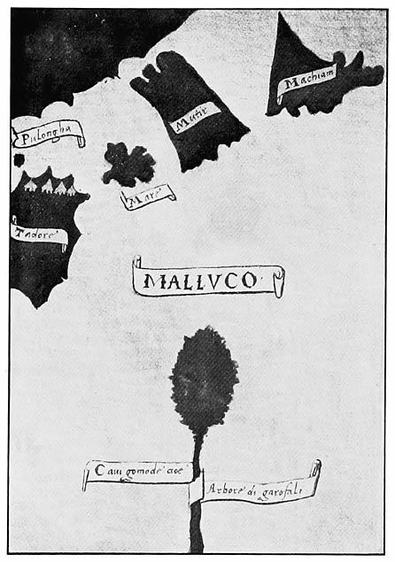

[5]
[9]
[11]
In the present volume, Pigafetta’s narrative (begun in VOL. XXXIII) is concluded; and a description of the islands written by a Chinese geographer Chao Ju-kua, probably in the thirteenth century, and various documents covering the years 1565–1605 are presented. Chao Ju-kua’s description is especially interesting and valuable as it forms the earliest authentic notice of the Philippines previous to their discovery by Magalhães. The remaining documents treat of secular and ecclesiastical affairs in the islands and cover a wide range of interests. Various details of the first settlements at Cebú and Manila, early explorations, and descriptions of the Philippines and their peoples, supplement the information of previous volumes. The royal intentions in regard to the discoveries of Legazpi and Legazpi himself are set forth in a series of documents, and form an interesting chapter from which one may construct the effect caused in Spain by the New Orient opened for the fourth time to that country. The early efforts of the first missionaries, the complications that arise almost from the very start between them and the secular government, and the internal trouble in the Augustinian Order, receive considerable attention. Of especial interest is Bishop Salazar’s [12]manifesto creating and erecting the cathedral of Manila, in which, in addition to other matters, he outlines the duties of the various officials. Early government matters and problems that arise therein, among them the tribute and commerce, in which one can see the intimate relations between the religious and secular governments of Spain, are touched upon. The documents for 1565–1605 show that the Philippines have had ever since their first permanent settlement in Cebú, a precarious existence, but that they have nevertheless advanced, although totteringly, from a very simple state to the more complicated conditions necessarily brought about by greater stability of government. A synopsis of the documents in this volume follows.
Pigafetta relates that on November 13, a Portuguese named Pedro Affonso de Lorosa, who had gone to Terrenate after the death of Serrão, comes to the ships. From him they learn the efforts made by the Portuguese to prevent their expedition, and various news of the region; and they ply him so well that on departing he promises to return to the ships and go to Spain with them. On November 16 and 17, the Moro king of Gilolo visits the ship, and is delighted with the artillery and fighting qualities of the ships and men, for he had been a great warrior in his youth, and is feared throughout that region. On the eighteenth also, Pigafetta goes ashore to see how the clove grows; and the result of his visit is given in a tolerably correct description of the clove and nutmeg trees. The women of that region, he says, are ugly, and the men are jealous of them and fearful of the Europeans.
Meanwhile, the Ternatans bring daily boatloads [13]of cloves and other things to the boat, but only food is bought from them, as the clove trade is kept for the king of Tidore. The latter returns to the islands on November 24, with news that many cloves will soon be brought. On the following day the first cloves are stowed in the hold amid the firing of the artillery. The king, in accordance with the custom of that district, invites the sailors to a banquet in honor of the first cloves laden. But they, mindful of the fatal May-day banquet, suspect treachery and make preparations for departure. The king, learning of their intended departure, is beside himself and entreats them to stay with him, or if they will go, to take back all their presents, as he would otherwise be considered a traitor by all his neighbors. After his entreaties have availed, it is learned that some chiefs had endeavored in vain to turn the king against the Spaniards, in hopes of currying favor with the Portuguese. On November 27 and 28, many cloves are traded. The governor of the island of Machian comes to the ships on November 29, but refuses to land, as his father and brother are living in exile at Tidore (a curious evidence of Oriental government customs). The king proves his friendliness once more by returning them some of their presents, as their stock had given out, in order that they might give them to the governor. Again on December 2, the king leaves his island to hasten their departure, and on the fifth and sixth the last trading is done, the men in their eagerness bartering articles of clothing for cloves. Then after many visits from the kings and chiefs of the various Moluccas and other islands; after Lorosa, the Portuguese, has come aboard, notwithstanding the efforts [14]of one of the Ternatan princes to seize him; and after the witnessing of various ceremonies between the kings of Batchian and Tidore: the new sails are bent to the yards, and the ships prepare to depart. Leaving the king of Tidore certain of the artillery and powder captured with the junks, and their Bornean captives (having previously given him all their other prisoners); and having made peace with various potentates of the region roundabout: the “Victoria” lifts anchor and stands out to await the “Trinidad.” The latter vessel, however, is unable to lift anchor, and suddenly springs a leak. The “Victoria” puts back to port; the “Trinidad” is lightened; but all endeavors to locate the leak are unavailing. The king, solicitous lest his plans of future greatness go astray, if the ships cannot return to Spain, is tireless in his efforts, but his best divers are unable to accomplish anything. Finally it is decided that the “Victoria” will take advantage of the winds and return to Spain by way of the Cape of Good Hope, while the “Trinidad,” after being overhauled will return by way of the Isthmus of Panama. Having lightened the former vessel of sixty quintales of cloves, as it is overladen, the ships separate, forty-seven Europeans and thirteen natives sailing in the “Victoria” and fifty-three men remaining with João Carvalho. Amid tears from each side, the “Victoria” departs, and passing by the island of Mare, where wood has been cut for them, soon stows the wood aboard, and then takes its path among the numerous islands of the East Indian archipelagoes. To Pigafetta, the world is indebted for the first Malayan vocabulary, and for many descriptions of islands, peoples, and products. Stopping occasionally [15]at various islands, for fresh supplies and wood, the “Victoria” picks its way toward the open Indian Ocean, Pigafetta meanwhile plying the Malayan pilot with questions regarding all the region, and learning much, partly true and partly legendary, of various islands, China, Malacca, and the Indian coast. Their longest stay is at Timur, where two men desert and which they leave on Wednesday, February 11, 1522, passing to the south of Sumatra for fear of the Portuguese. On the way to the cape, some, constrained by hunger, wish to stop at the Portuguese settlement at Mozambique, but the majority, loving honor more than life, decide that they must return to Spain at all hazards. For nine weeks they are buffeted about the cape, which is finally doubled in May, but only after the loss of a mast. They sail for two months longer without fresh supplies, and finally on Wednesday, July 9, reach Santiago, one of the Cape Verde Islands. Sending a boat ashore, with a story invented to throw the Portuguese off the scent, they are given two boatloads of rice for their merchandise. They are surprised to find themselves out one day in their reckoning, a fact that puzzles Pigafetta, until he finds out the reason later, for he has been most sedulous in setting down the record of each day. The boat with thirteen men returns once more, but the secret leaks out in part, and the ship with only eighteen Europeans (for twenty-one men, counting Europeans and Malays, have died since leaving Timur, part of whom have been executed for their crimes), hastily departs to avoid capture. On Saturday, September 6, the ship enters San Lucar, with most of its crew sick, and on Monday, September 8, they are anchored [16]once more at Seville. Next day, the men visit two famous shrines in procession to give thanks for their return. Pigafetta, still restless, goes to Valladolid, where he presents a book to Cárlos I; to Portugal and France, where he tells his wonderful experiences; and finally to Venice in Italy, where he proposes to pass the remainder of his days.
Especially valuable to the student in Philippiniana is the short description of the Philippines by Chao Ju-kua, who probably wrote in the thirteenth century, more than a century before the first European discovery. Chao Ju-kua’s information seems to have been obtained personally from Chinese traders to the Philippines, and although very imperfect and all too short, one can identify almost certainly the islands of Luzón, Mindoro, Mindanao, Paragua, and the Visayas. The people are slightly described; and various products of the islands are given and trading methods described. The existence in the first-named island of small statues of Buddha is interesting and probably points to a long-continued intercourse between Chinese and Filipinos.
Guido de Lavezaris writes to Felipe II (May 30, 1565), referring briefly to his participation in the Villalobos expedition, and his subsequent journey to Spain to give information thereof; also his participation in a Florida exploration expedition under Tristan de Arellano. After aiding in the preparation of Legazpi’s fleet, he sails with it as treasurer. He asks royal reward in behalf of his services in introducing the ginger plant, which has thriven so abundantly, into Nueva España; of which he has been cheated by Francisco de Mendoca who had promised to negotiate it for him. Legazpi’s expedition [17]has reached the Philippines in sixty-four days, and the Spaniards are now settled at Cebú, the best center of all that region, first reaching that island April 27, 1565. Samples of gold, wax, and cinnamon are sent to Spain; and supplies are urgently requested for entrance must be effected by force of arms.
By the same vessel, Andrés de Mirandaola, the factor, writes to Felipe II. The expedition reaches the Filipinas February 16, 1565. There is much land thereabout included in the Spanish demarcation, but it may be necessary to conquer it by force of arms in order to introduce the Catholic religion, for the natives are a treacherous and warlike race. The products yet ascertained are gold, wax, and cinnamon, and the trade therein will increase if fostered by the Spaniards. Natives of the Moluccas, in alliance with the Portuguese, have made a disastrous raid in Bohol, where Legazpi remains for a few days, and have caused great loss and consternation among the natives. Lavezaris and Mirandaola explore a portion of Mindanao, where they ascertain the products and trade relations, and make peace and trade relations with the chief of Butuan; at which place they hear accounts of Borneo. The fleet goes to Cebú, where they settle after a slight skirmish with the natives, with whom after vexatious delays, peace and friendship are in a fair way to be made. The Spaniards find there the Santo Niño and two culverins, probably of the time of Magalhães. Cebú is densely populated with a warlike and treacherous race. Urdaneta is returning in the ship which is about to leave to find the return route, under command of Felipe de Salcedo and Juan de Aguirre. [18]Men and supplies are needed by the colonists. Mirandaola asks royal confirmation of his office and an increase in salary.
This is followed by a letter from Guido de Lavezaris (July 25, 1567), in which reference is made to his letter of 1565 and his services. The “San Geronimo” despatched from Nueva España in 1566, has arrived, with news of the discovery of the return route, after a voyage flavored with hardship and mutiny; Legazpi and the royal officials sending a detailed relation. Mountains full of cinnamon have been found at Cauit in Mindanao, but in order to be benefitted thereby, a settlement in that region is necessary, and also as a menace to the Portuguese who pass by there en route from Malacca to the Moluccas. Two Portuguese ships anchor at Cebú July 10, 1567, with letters from Pereira, in which the Spaniards are ordered to forsake their settlement and go to India. Pereira has received orders to drive them from the land and is even now on his way thither with nine ships and eight hundred soldiers. The Portuguese together with the Ternatans have committed many depredations among the Philippines. The natives of the rest of the Moluccas are generally well disposed toward the Spanish; and the Tidorans are compelled to pay an annual tribute to the Portuguese. The Portuguese ships leave Cebú in thirteen days, but in that time, Lavezaris has managed to borrow a map and navigation chart from them, of which he copies the portion of the land in the Spanish demarcation. This he encloses with his letter.
The following day, July 26, the royal officials write to the king, giving somewhat more detailed [19]information on some points than Lavezaris has done. The Cebuans and other natives make peace with Legazpi after the departure of the “San Pedro” in 1565, but they are a faithless race, who easily abandon their homes on the show of force. Legazpi wisely refrains from war with them, and consequently the colonists are still alive. The cinnamon obtained in barter is about to be sent to Nueva España. Mindanao, which has gold, has been taken possession of for Spain. Cebú has been visited by Moros from Luzón and Mindoro, who trade gold and rice for silver and pearls; and they report active trade with the Chinese. A mutiny in Cebú, November 28, 1565, is quelled and Legazpi mercifully pardons most of the offenders. The troubles and mutinies of the “San Geronimo” are graphically related. Relations with the Portuguese are discussed, in which it is seen that Legazpi attempts to gain time. Goiti succeeds Mateo del Saz in the office of master-of-camp because of the latter’s death. The royal officials ask for an increase in salary, and state the need of men and supplies, which are ill supplied from Nueva España. A beginning has been made in the conversion; but for greater stability married colonists are needed.
Under date of July 8, 1569, Martin de Rada, O.S.A., writes to the viceroy of Nueva España, the marquis of Falces, congratulating him on his appointment. He gives various data in regard to the islands of Luzón, Borneo, Panay, and Mindanao. The wealthy village of Manila is only seventy leguas from Cebú. Gold is very abundant throughout the islands and is possessed by all the natives, but they never mine more than will suffice for their immediate [20]wants. Merchants from Luzón, Borneo, and Joló go through the islands constantly seeking gold and slaves. The natives are arrogant and the rule is one of might, for they have no real rulers. Soldiers are not needed to conquer the land; they have done much damage, and the natives are afraid of them, so much so that they abandon villages at their approach. The natives are mostly heathens, although there are some Moros; and they could be easily converted. Legazpi is to blame for his inaction. More harmony is needed. Notwithstanding the abundance of supplies in the islands, famine prevails. There are no boats with which to get out the valuable and abundant timber. A settlement in the Philippines is necessary if the Spanish king desires to conquer China. The religious have not yet begun to baptize in earnest because they are uncertain whether the colony is to be permanent.
Diego de Herrera, O.S.A., also writes (July 25, 1570) to Felipe II, in somewhat the same vein, stating the need for governmental reform; for men who understand warfare; and the bad treatment of natives by Spaniards. He inveighs against the removal from Cebu, the strongest site of the islands seen hitherto, to Panay, which is swampy and unhealthful. He advises against the concession of the petition of the Spaniards to allow them to plunder and enslave the Moros. The Moros of Luzón are scarcely so more than in name and in abstinence from pork, and are of very recent date. Those of Borneo are only slightly more established and only live along the coast. Herrera petitions that regular supplies be given the religious from Nueva España until the Philippines furnish sufficient support. Although [21]they have generally refrained from baptism, because of their uncertainty as to the permanence of their colony, they will, now that that uncertainty has ceased, give themselves to the work.
This is followed by a series of documents bound together (1568–70) consisting of royal communications to and concerning Legazpi. An official letter bearing the king’s rubric (November 16, 1568) replies to two letters of Legazpi written in 1567. He is ordered to continue his policy in the islands. The matter of galleys will receive consideration, as will the question of supplies, which will be sent from Nueva España. He must attend carefully to the conversion of the natives. Encomiendas may be assigned with certain reservations to the crown. Moros may be enslaved if they try to preach Mahometanism. A report on slavery among the Filipinos is to be sent to the royal Council of the Indies. All the Portuguese among the colonists must be sent to Spain as they are a menace to the new colony. By a document dated August 6, 1569, Legazpi is granted the lieutenancy of a fort in Cebú, and shall be received as such, and shall perform the duties incumbent upon that office. On the fourteenth of the same month and year, he is also granted by royal concession the title of governor of the Ladrones. Legazpi is to take possession of the islands for Spain, and he shall be received as governor and captain-general therein with the ordinary powers, and perquisites, and a salary of two thousand ducados. A document of the same date confers upon Legazpi the title of adelantado of the Ladrones. Royal instructions of August 28, 1569, consisting of twenty-two sections, outline the policy to be followed by [22]Legazpi in the Ladrones. These instructions cover such points as colonization, treatment of the natives, fortification, religion and conversion, civil government and public officers, industry, and trade. The final document of the series concedes to Legazpi (August 29, 1570), a grant of two thousand ducados.
The letter of Francisco de Ortega, O.S.A. (June 6, 1573), discusses general conditions in the islands. Ortega narrates the death of Legazpi on August 21, 1572, which is greatly deplored by all for his good qualities and government. Juan de Salcedo has returned from explorations in Luzon, during which he has circumnavigated the island—the first to accomplish that feat. An expedition sent out by Lavezaris fails to discover anything new, the soldiers only overrunning the district formerly explored, where they commit many depredations on the natives, many of whom are killed, while others flee before the Spaniard. The present of gold sent to the king is wrung from the poor natives and is only a trifle when compared to the vast expenses already incurred in Legazpi’s expedition. The only just sources of profit will be the cinnamon and the exploiting of the gold mines, and even this will mean the destruction of the natives. The viceroy should not trust only to what relation Juan Pacheco, who is going to Nueva España, may give, for he is biassed in favor of the governor for favors received. Authentic news and information may be had from Diego de Herrera, who is going to Nueva España and Spain to report concerning secular and ecclesiastical affairs. Ortega complains bitterly of Lavezaris who is a man of bias and passion, and unfair to the religious and the Indians and poor Spaniards. He should be retired [23]as he is over seventy years of age. He has done wrong in regranting vacant encomiendas that had reverted to the crown, which is contrasted strongly with Legazpi’s steadfast refusal to do so. The population of the island has been greatly overestimated. If a new governor is not appointed, an efficient visitor should at least be sent. Ortega lauds Juan de Salcedo and Juan de Moron (the latter of whom has been sent under unjust arrest to Nueva España) and asks rewards for them. He bewails the fact that the Chinese exploration planned by Legazpi and so desired by the religious has not been carried out mainly because of the opposition of Lavezaris and his friend. He offers himself anew to accompany the expedition if it is reorganized, and suggests the exploration of the island of Cauchill, which belongs to China, and has a rich export trade in pepper and Moluccan cloves.
At about the same time as the above letter, must have been written the undated memoranda for Diego de Herrera who sails for Nueva España in 1573 to inform the king of various abuses, and to report on the islands, and make various requests. The memoranda paint the condition of the conquest in the darkest colors, dilating on the cruelty of the Spaniards, which has caused the name of Spaniard to be hated by the Filipino. Justice is almost an unknown quality, and sentences are adjudged in favor of him who pays most. Retaliation for injuries inflicted by the Filipinos is the order of the day, without any heed as to whether the guilty person is punished or not. Many raids are made; and the land is divided into encomiendas, although not yet pacified. The encomenderos only bleed, but do not protect their [24]natives. Slavery is common among the natives and for various reasons, and the Spaniards are quick to make use of the institution unjustly. Various requests, some for reform, are to be made. Above all the wrong to the natives should be corrected, and an investigation made regarding the slaves held unjustly. Honest men should be sent to inspect conditions. Two hospitals are needed, and religious are extremely necessary. Two secular priests are requested to look after the Spaniards. If the Chinese expedition is despatched, the Augustinians wish to be preferred. Aid is needed for the support of the religious. If slavery is allowed various measures are needed regulating it, and the final word regarding slaves should be said by the religious. Natives should not be taken on raids against their will. The chief products of the islands are gold, pearls, spices, and drugs, and the nearby mainlands are rich.
Under date of June 30, 1574, Martin de Rada, O.S.A., writes the viceroy of Nueva España, discussing events and conditions among the Spaniards and Filipinos. He also draws a dark picture of the rapacity of the Spaniards, who molest the Filipinos by unjust raids and excessive demands for tribute. An expedition made to the Bicol River and Camarines by Salcedo and Chaves has met success only after considerable opposition from the natives who are the bravest of Luzón, and who meet heavy losses in consequence. Chaves is left in Ilocos with a small band to effect a colony. Rada encloses a copy of his “Opinion” regarding tributes. Notwithstanding contrary reports, the islands are but slightly pacified; the natives are restless and piracy is frequent. [25]Unjust wars are waged upon the natives, notwithstanding that the Spaniards attempt to shield themselves behind Urdaneta and Rada. The entrance into Manila was a travesty on justice. The governor takes and solicits bribes, and pays but little attention to the natives. Rada retains those religious who wish to return to Nueva España because of the general conditions. An epidemic of smallpox has spared “neither childhood, youth, nor old age,” and many have died. The document closes with a recital of the classes and causes of slavery among the natives in which many characteristics of the Filipinos are mentioned.
In a letter to Felipe II from the royal officials (July 17, 1574), the king is congratulated on the birth of a son, to whom a present is sent, and also on the great battle of Lepanto won over the Turks by Don Juan of Austria. Ilocos has been divided into encomiendas, while Camarines has been explored and pacified and the land is to be assigned. An attack from Borneo was expected in 1573, but late reports are to the effect that that king desires friendship with the Spaniards. A chief of Mindanao has also signified his desire for peace. There is a steady trade with China, but the Chinese cargoes do not prove very valuable. The king is asked to reorganize commercial communication with Spain and allow private vessels. Cinnamon is abundant, although but little can be shipped for lack of space. Dire need prevails throughout the islands, which is not relieved by the royal officials of Mexico, as they claim to be without royal commission for it. Legazpi had failed to show certain royal decrees, and the king is asked to order the governor not to [26]meddle with the affairs of the royal officials. The trouble with the Augustinians over the tribute is related from the standpoint of the royal officials, the Augustinians going so far as to assert that the king has no legal title in the islands. However, the tribute is being collected on the lines laid out by Legazpi. The officials (Cauchela and Aldave, for Mirandaola has been sent under arrest to Nueva España) petition an increase of salary; and Aldave the confirmation of his appointment as treasurer, given him because of Lavezaris’s appointment to the governorship.
Hernando Riquel, governmental notary, gives (June 2, 1576) a list of encomiendas assigned by Legazpi. These include the islands of Cebú, Panay, Mindanao, Leyte, Luzón, Mindoro, Lubán, Elin, Imarás, Masbat, Capul, Mazagua, Maripipi, Camiguinin, Tablas, Cubuyan, Bohol, Bantayán, Marenduque, Donblón (Romblón), Bantón, and Negros. Many of the names of the early conquistadors are given, and the document possesses value as it denotes early attempts at estimation of population, although those estimates are only vague and very inadequate.
Loarca’s letter of June 15, 1580, complaining of the enmity of Governor Sande, who hates him because he went on the Chinese expedition by order of Lavezaris, while he (Sande) was inside the islands, complains that false reports are sent regarding the conquests, and hence there is a waste of money. He fears to be too specific in his letter lest his letters go astray. He asks for aid, for he has received no salary for some years, and has even spent his own money for public purposes, and has become poor.
In the name of all his brethren, Pablo de Jesus, soon [27]to be elected custodian of the Franciscans in Manila, writes (June 18, 1580) to Pope Gregory XIII a letter (partly doctrinal), giving account of the voyage of the first Franciscan missionaries to the Philippines. On the journey thither a short halt is made at one of the Ladrones, of whose inhabitants the father gives a brief description. At Manila the Augustinians, hitherto the sole religious order in the islands, give them a hearty welcome, but report discouraging progress among the aborigines. Undaunted however, the new missionaries set to work with a will and soon obtain marked results. The evil influence of Mahometanism, which has entered by way of Borneo has made itself felt among some of the natives, but yet with a sufficient supply of missionaries, the Filipinos, whose customs (social and religious) are briefly described, would soon be converted to the faith. The first Franciscan expedition to China, under the guidance of Pedro de Alfaro, which left Manila, May 20, 1579, is also described, and the Chinese characterized. Pablo de Jesus begs the pope to order the authorities in Manila to cease offering obstructions to those religious who desire to go to China to evangelize that great empire.
On October 17, 1581, a council of various religious assembled by Bishop Salazar to discuss the question of the liberation of native slaves held by Spaniards, which has been ordered by a royal decree decide: 1. That an old decree of 1530 prohibits the Spaniards to enslave the natives of the Indies; and that that decree was sufficient by itself to cause all slaves to be freed. Consequently, the new decree must be obeyed. 2. There is not any just reason for awaiting a new order because of petition, for such petition is [28]only a subterfuge to gain time and postpone the liberation of the slaves. 3. The slaves must be freed immediately, although they may be ordered to remain with their masters for twenty or thirty days, in order to give the latter time to adapt themselves to the sudden change.
Of distinct ecclesiastical as well as historical interest is Bishop Salazar’s document of December 21, 1581, creating and establishing the cathedral church of Manila. He provides for the appointment of the various ecclesiastical offices, such as dean, archdeacon, chanter, schoolmaster, treasurer, canons, prebendaries, racioneros, half-racioneros, acolytes, chaplains, sacristan, organist, beadle, econome, notary of the chapter, and the peculiar office of dog-catcher, and outlines the duties of all and names the salary each is to receive. Much of interest is said on the subject of tithes and revenues, benefices, the various parish churches that exist or may be established, and their priests, the failure of duty of any official, chapter meetings (which must occur twice each week), church services, etc. A question to assume vast proportions later, namely, the royal patronage, presentation for benefices, and the episcopal jurisdiction also receives mention. This document presents in germ the ecclesiastical government of Manila.
Antonio Sedeño, S.J., one of the first of his order to come to the Philippines (he having accompanied Bishop Salazar, in company with one other priest—Alonso Sanchez—and two lay-brothers), writes to Felipe II, June 17, 1583, requesting that the governor be appointed from a resident of the islands, instead of sending a new man from Spain to fill that post. Thereby will great occasion for graft be [29]avoided, and the royal expenses be greatly reduced, while the whole land will benefit. He suggests the appointment of Juan Baptista Roman, the factor, a prudent man, who has always opposed wrong. He also requests permission to found a seminary in order that the Jesuits may remain in the country and fulfil their obligations; and royal aid for such foundation.
One day after the date of the above letter (June 18), the bishop Domingo de Salazar writes to Felipe II, urging the establishment of a Jesuit college by royal aid, because of the great advantage that will ensue therefrom. He mentions in general the same reasons for such establishment as are urged by Sedeño; and dwells upon the saving to the royal treasury and the advantage to the land at large. He asks that districts be divided justly among the religious and seculars, and that the members of no order preempt a larger territory than they can attend to. This has caused friction between himself and the religious, which will be eliminated by a royal order to the above effect.
An anonymous relation translated from a printed pamphlet, which bears neither place nor date, follows. Internal evidence shows it to have been written by a religious—Augustinian, Franciscan, or Jesuit, preferably the second—and before 1587 (the year of the arrival of the Dominicans), notwithstanding that the British Museum copy (whence our transcript was procured) queries the date 1595. This relation contains many valuable observations on the islands, and their people, products, and history. The greater part of it consists of a description of the four provinces of Luzón, viz., that of the Tagalogs and Pampangos, Ilocos, Cagayan, and Camarines. The [30]author mentions the important fact that the Tagálogs are mistakenly called Moros, but they are not and have never been Moros. Continuing his relation, the religious describes Borneo briefly and gives the salient points of Sande’s campaign there. The Visayans and their islands are touched upon, some little space being devoted to the first Spanish settlement at Cebú, whence the Spaniards move to Panay after the negotiations with and assault by the Portuguese under Pereira. More men and religious are needed to develop the Philippines and to christianize them thoroughly.
The factor, Juan Baptista Roman, writes to Felipe II (July 2, 1588), relating the chief events of Thomas Candish’s memorable expedition through a portion of the Philippine archipelago. He complains bitterly of the apathy of the governor in not pursuing the English pirate, who is only 22 or 23 years old, and says that good time is wasted by attempting to strengthen the city of Manila to the abandonment of all idea of pursuit. He suggests means by which such expeditions may be rendered impossible in the future. The usual cry of inefficient administration and useless expense is made, as an offset to which Roman proposes the encouragement of private shipping instead of the use of the royal vessels therefor, by means of which the governor, who engages in trade on his own account, becomes rich at the expense and loss of the royal treasury. Finally, the stone fort being built at Manila is useless as it is old style and incapable of defending the city.
Gomez Perez Dasmariñas in a letter to either the viceroy of Nueva España or some high official in [31]Spain (June 21, 1591) devotes himself almost entirely to military affairs. He has introduced system and discipline where it was lacking before, and has built a barracks for the soldiers. He complains greatly of the insubordination of the soldiers there before his arrival and the bad example that they furnish to the new soldiers. He has also constructed a stone wall about the city, which gives an appearance of stability and renders the city secure. He asks that he be allowed to reward the services of gentlemen and soldiers who have accompanied him. The provinces of Zambales and Cagayan, which were in revolt have been pacified, and Dasmariñas suggests the advisability of a Spanish colony in the latter, on account of its proximity to China, and its good harbor. He is having considerable trouble with the bishop and friars who oppose him in everything, and act as though they were the rulers of the country.
In 1599, a series of three documents concerning the procuratorship of Tomás Marquez, of the Philippines, and the methods of the Spanish provincials of the Augustinian Order, and addressed to the pope (then Clement VIII), shows well the political means employed by the Augustinians in Spain in their efforts to retain in their own hands the balance of power as over against that of the Augustinians of the Spanish provinces. The first is a short petition from the above father praying that he be restored to his position as procurator-general of the Philippines, of which he has been deprived by the Spanish provincial, and that he be allowed to take to the islands those of his order who desire to accompany him. The second paper has also the same end as the first, but is more specific, as it gives more at length the [32]various methods employed by the Spanish provincials. Marquez prays that the order in the Philippines be subject only to the general of the whole order and not to the Spanish provincials, who claim jurisdiction as vicars-general. The Spanish provincials endeavor to govern the order in the Philippines and other provinces of the Indies, not for the good of the whole order, but for their own interests, using therein methods that are contrary to the constitution and laws of the order, and, in addition, wrong morally. The offscourings of the Spanish convents are sent to the islands instead of men fitted for the task, and those of the latter class who desire are not permitted to go. The third document is evidently the report of the nuncio, and gives the reasons why the Augustinian provinces of the Indies are not subject to the provincials of Spain, but only to the general of the whole order. The pretext upon which the Spanish province urges leadership is the fact that the first Augustinian establishment in the New World was under its auspices. Since ordered to resign all rights to the office of vicar-general by the general chapter of Rome 1592, the provincial has done so.
The king, by a royal decree of January 17, 1593, addressed to Bishop Salazar, notifies him that the governor has been ordered to take possession of the hospitals for the natives in Manila in accordance with the king’s right as patron of the hospitals.
Ecclesiastical matters are discussed in a letter from the Manila ecclesiastical cabildo to Felipe III (July 3, 1602). The royal Audiencia is trying to force the ecclesiastical judge to make arrests by its aid; but such a course would involve much time and expense [33]to the wretched Indian, whose case as now conducted by the ecclesiastical judge is summarily completed, while recourse to the Audiencia would bring into play all the slow legal machinery. Such ecclesiastical arrests are only made in order to correct sin. Some of the religious orders in Manila claim royal concession for universities and appointments therein. Such a course would be unfair to the seculars, for even now the religious have all the best things, and if they found universities, the seculars will have nothing to which to aspire, while the lure of an appointment to a professorship would cause them to take heart and study hard, so that the cathedral would always have men of learning. The Jesuits desire to use the money restored from the tributes collected by the encomenderos, as a result of Salazar’s contentions, for the founding of a hospital. Such use would divert it from its true employment—the ransoming of Filipino captives and the aiding of their hospitals, and therefore the cabildo petitions that the request be not acceded to. The Jesuits are trying to obtain the ecclesiastical jurisdiction of a town opposite Manila (which is now administered by a secular cura) where they have some years before bought an estate, and have been gradually acquiring all the land which they have rented to the Chinese. In addition the Jesuits are also attempting to obtain the spiritual administration of San Miguel, a small village outside Manila, now administered by seculars. The cabildo petitions that the curas now in charge of these two places be allowed to retain them. The Augustinians have also been guilty of depriving the seculars of their jurisdiction in Cavite and in the chapel of Nuestra Señora de Guia. And [34]so unbridled are they that they resist the visitor sent out by their own order. The Franciscans, in spite of their humility, have built a church at Dilao on their own authority. Thus the royal patronage is transcended, and the governor has been cognizant thereto, through his partiality to the orders. The cabildo asks that the alms generally given to the religious be also granted to the cathedral, for it is very poor. In the cathedral is a bench for the wives of the auditors and another for the officials of the Holy Office—both unusual in other cathedrals. The bench belonging to the Holy Office has led to the excommunication of one of the canons of the cathedral who moved it one day, through the passion engendered in the commissary, a Dominican religious. The cabildo asks that both benches be removed, and that justice be shown them, as they are unable to send anyone to Spain to plead their case, as do the religious.
The condition of the redoubt or fort of Manila is discussed in a letter to Felipe III by its castellan Bernardino Maldonado (June 21, 1605). Many interesting deductions as to the social and economic conditions of Manila can be made from this document. Like so many other documents, this is one of complaint and shows the inefficiency of the government. The fort is poorly garrisoned and almost neglected in spite of its importance (as it is used as the arsenal) and the efforts of its castellan. The garrison is only of fifty men (although Tello had promised to increase it at the earnest solicitation of Maldonado) and those are the offscourings of the camp. A lieutenant appointed has to enter suit in order to receive his pay. The artillerymen should live in the [35]fort and should not be taken elsewhere, and should be experienced men, and not those who receive appointments through favor. Tello has used part of the artillery against Oliver van Noordt, and it was in consequence lost, and now Acuña proposes to take a portion of the few pieces left on his Maluco expedition. Maldonado’s efforts to prepare for the feared Chinese insurrection of 1603 were not encouraging, and he was quite unable to obtain food, and was even compelled to aid the other soldiers with what little he did have. Since that insurrection, the Chinese merchants have come to the city each year, and have been housed partly in the city among the inhabitants, as their alcaicería was burned, although the Parián is now rebuilt. Maldonado complains of the companies formed from Filipinos in whom he sees grave danger. The soldiers of the fort are ill paid, and inasmuch as they are permanently in the fort and make no raids, as do the other soldiers, they suffer considerably. Consequently, Maldonado asks that they be paid first, and that their pay of six reals be raised. Arms are needed, especially arquebuses and muskets. Finally Maldonado mentions his own services and asks for various rewards for his faithfulness.
The Editors
January, 1906. [37]
(concluded)
By Antonio Pigafetta. MS. composed ca. 1525, of events of 1519–1522
Source: Our transcript is made from the original document which exists in the Biblioteca Ambrosiana, Milan, Italy.
Translation: This is made by James Alexander Robertson. [38]
[PRIMO VIAGGIO INTORNO AL MONDO](Continued from Vol. XXXIII, page 266.) |
[FIRST VOYAGE AROUND THE WORLD](Continued from Vol. XXXIII, page 267.) |
||||||||||||||||||||||||||||||||||||||||||||||||||||||||||||||||||||||||||||||||||||||||||||||||||||||||||||||||||||||||||||||||||||||||||||||||||||||||||||||||||||||||||||||||||||||||||||||||||||||||||||||||||||||||||||||||||||||||||||||||||||||||||||||||||||||||||||||||||||||||||||||||||||||||||||||||||||||||||||||||||||||||||||||||||||||||||||||||||||||||||||||||||||||||||||||||||||||||||||||||||||||||||||||||||||||||||||||||||||||||||||||||||||||||||||||||||||||||||||||||||||||||||||||||||||||||||||||||||||||||||||||||||||||||||||||||||||||||||||||||||||||||||||||||||||||||||||||||||||||||||||||||||||||||||||||||||||||||||||||||||||||||||||||||||||||||||||||||||||||||||||||||||||||||||||||||||||||||||||||||||||||||||||||||||||||||||||||||||||||||||||||||||||||||||||||||||||||||||||||||||||||||||||||||||||||||||||||||||||||||||||||||||||||||||||||||||||||||||||||||||||||||||||||||||||||||||||||||||||||||||||||||||||||||||||||||||||||||||||||||||||||||||||||||||||||||||||||||||||||
|
Sul tardi deL medeſimo giorno vene in vno prao pietro alfonſo portugheſe et non eſſendo anchora deſmontato iL re lo mando a chiamare et ridendo diſegli se lui ben era de tarennate ne diceſſe la verita de tuto quello q̃ li domandaſſem Coſtui dice Como Ja ſedize anny ſtaua nela Jndia ma x in maluco et tante erano q̃ maluco ſtaua deſcoperto ascoſamente et era vno anno mancho quindici giornj che venne vna naue grande de malaca quiui et ſe partite caricata de garofali ma ꝓ li mali tempi reſto in bandan alquanti meſi delaqalle era capo triſtan de meneses portughese et Como lui li demando que noue erano adeſſo in chriſtianitatte li diſſe como era partita vna armata de cinque nauj de ſiuiglia ꝓ deſcoprire maluco in nome deL re deſpagnia eſsendo capitano fernando de magallianes portugheſe et como lo re de portugallo ꝓ diſpecto q̃ vno portugueſe lifoſſe conta hauea mandatte alquante naue aL capo de bonna ſperanſa et altre tante aL capo de ſancta maria doue ſtanno li Canibali ꝓ vietargli lo paſſo et Como nõ lo trouo poy il re de portagalo haueua Jnteſo Como lo dicto capitanio haueua paſſato ꝓ vno alto mare et andaua amalucho Subito ſcriſſe aL ſuo capo magiore de la india chiamato [40]diego lopes de ſichera mãdaſſe ſey naue amaluco me ꝓ cauſa del grã turco che veniua amalacha nõ le mande ꝓ che li fu forſa mandare Contra lui ſexanta velle aL ſtreto deLa mehca nella tera de Juda liqalli non trouorono alto ſolum alcãte gallere in ſeco nela riua de qella forte et bella cita de adem leqalle tucte bruſorono[_]dopo Queſto mandaua contro anuy amalucho vno grã galeõe con due mani de bombarde ma ꝓ certi baſſi et corenti de hacqua che ſonno circa malaca et venti Contrarj non puoto paſſare et torno in drieto Lo capo de queſto galiõe era franco faria portugheſe et Como erano poqi giornj q̃ vna Carauella cõ dui Jonci erano ſtati quiui ꝓ Jntendere de nui li Junci andarono abachian ꝓ caricare garofali cõ ſette portugheſi Queſti portugheſi ꝓ nõ hauer̃ reſpecto ale donne deL re et de li ſuoi lo re li diſce piu volte nõ faceſſero taL coſa ma loro nõ volendo reſtare furono amazati Quando qelli de la Carauella intezero queſto ſubito tornorono a malaca et laſciarono li Junci cõ catrocento bahar de garofali et tanta mercantia ꝓ comperar̃ cento alti bahar et Como ogni anno molti Junci veneno de malaca abandan ꝓ pigliare matia et noſce moſcade et da bandan amalucho ꝓ garofali et como queſti populi vanno cõ queſti ſui Junci da maluco a bandan in tre giornj et de bandan amalaca in quĩdici et como lo re de portagalo Ja x anny godeua malucho aſcoſamente acio lo re deſpagnia noL ſapeſſe coſtui ſtete cõ nuy alti inſino a tre hore de nocte et diſcene molte altre coſe [42]operaſſemo tanto q̃ coſtui ꝓmetendolj bõ ſoldo ne ꝓmiſſe de venire cõ nuy in ſpagnia. |
In the afternoon of that same day, Pietro Alfonso, the Portuguese, came in a prau. He had not disembarked before the king sent to summon him and told him banteringly to answer us truly in whatever we should ask him, even if he did come from Tarennate. He told us that he had been sixteen years in India, but x in Maluco, for Maluco had been discovered secretly for that time.488 It was a year all but one fortnight, since a large ship had arrived at that place from Malaca, and had left laden with cloves, but had been obliged to remain in Bandan for some months because of bad weather. Its captain was Tristan de Meneses,489 a Portuguese. When he asked the latter what was the news back in Christendom, he was told that a fleet of five ships had left Siviglia to discover Maluco in the name of the king of Spagnia under command of Fernando de Magallianes, a Portuguese; that the king of Portugallo, angered that a Portuguese should be opposed to him, had sent some ships to the cape of Bonna Speransa [i.e., Good Hope], and a like number to the cape of Sancta Maria, where the cannibals live, in order to prevent their passage, but that he was not found. Then the king of Portagalo had heard that the said captain had passed into another sea, and was on his way to Malucho. He immediately wrote directing his chief captain of India, one Diego Lopes de [41]Sichera,490 to send six ships to Maluco. But the latter did not send them because the Grand Turk was coming to Malacha, for he was obliged to send sixty sail to oppose him at the strait of Mecha in the land of Juda. They found only a few galleys that had been beached on the shore of the strong and beautiful city of Adem, all of which they burned.491 After that the chief captain sent a large galleon with two tiers of guns to Malucho to oppose us, but it was unable to proceed because of certain shoals and currents of water near Malaca, and contrary winds. The captain of that galleon was Francesco Faria,492 a Portuguese. It was but a few days since a caravel with two junks had been in that place to get news of us. The junks went to Bachian for a cargo of cloves with seven Portuguese. As those Portuguese did not respect the women of the king and of his subjects, although the king told them often not to act so, and since they refused to discontinue, they were put to death. When the men in the caravel heard that, they immediately returned to Malaca abandoning the junks with four hundred bahars of cloves, and sufficient merchandise to purchase one hundred bahars more. Every year a number of junks sail from Malaca to Bandan493 for mace and nutmeg, and from Bandan to Malucho for cloves. Those people sail in three days in those junks of theirs from Maluco to Bandan, and in a fortnight from Bandan to Malaca. The king of Portagalo had enjoyed Malucho already for x years secretly, so that the king of Spagnia might not learn of it. That Portuguese remained with us until three in the morning, and told us many other things. We plied him so well, [43]promising him good pay that he promised to return to Spagnia with us. |
||||||||||||||||||||||||||||||||||||||||||||||||||||||||||||||||||||||||||||||||||||||||||||||||||||||||||||||||||||||||||||||||||||||||||||||||||||||||||||||||||||||||||||||||||||||||||||||||||||||||||||||||||||||||||||||||||||||||||||||||||||||||||||||||||||||||||||||||||||||||||||||||||||||||||||||||||||||||||||||||||||||||||||||||||||||||||||||||||||||||||||||||||||||||||||||||||||||||||||||||||||||||||||||||||||||||||||||||||||||||||||||||||||||||||||||||||||||||||||||||||||||||||||||||||||||||||||||||||||||||||||||||||||||||||||||||||||||||||||||||||||||||||||||||||||||||||||||||||||||||||||||||||||||||||||||||||||||||||||||||||||||||||||||||||||||||||||||||||||||||||||||||||||||||||||||||||||||||||||||||||||||||||||||||||||||||||||||||||||||||||||||||||||||||||||||||||||||||||||||||||||||||||||||||||||||||||||||||||||||||||||||||||||||||||||||||||||||||||||||||||||||||||||||||||||||||||||||||||||||||||||||||||||||||||||||||||||||||||||||||||||||||||||||||||||||||||||||||||||||
|
Vennere a Quindici de nouembre il re ne diſce como andaua abachian ꝓ pigliar̃ de qelli garofali laſsati da li portugueſi ne dimando duy pñti ꝓ darli ali dui gubernatorj de mutir in nome deL re deſpagnia et paſſando per mezo de le naui volſe vedere Como tirauão li ſchiopeti li baleſtre et li verſi q̃ ſono magiori duno arcubuſo tiro lui tre volti de baleſtra ꝓ chi li piaceua piu q̃ li ſchiopeti Sabato lo re moro de giailolo vene ale naui con molti prao alqualle donaſcemo vno ſayo de domaſcho ꝟde dui bracia de panne roſſo ſpechi forfice cortelli petini et dui bichery dorati ne diſce poi q̃ eramo amici deL re de tadore eramo anchora ſoi ꝓ che amaualo Como ꝓpio ſuo figliolo et ſe may alguno deli noſti andaſſeno in ſua terra li farebe grandiſſimo honnore Queſto re emolto vechio et temuto ꝓ tutte queſte yſole ꝓ eſſere molto potente et chia maſſe raia Jussu Queſta yſola de Jayalolo e tanto grando que tardano catro meſi a circundarla cõ vno prao. Domenicha matina queſto medeſimo re venne ale naui et volſe vedere in que modo combateuão et como ſcaricauamo le nr̃e bombarde dilque piglio grandiſſimo piacer̃ et ſubito ſe parti Coſtui Como ne fu detto era ſtato nela ſua Jouenta grã Combatitor̃. |
On Friday, November fifteen, the king told us that he was going to Bachian to get the cloves abandoned there by the Portuguese. He asked us for two presents so that he might give them to the two governors of Mutir in the name of the king of Spagnia. Passing in between the ships he desired to see how we fired our musketry, crossbows, and the culverins, which are larger than an arquebus. He shot three times with a crossbow, for it pleased him more than the muskets.494 On Saturday, the Moro king of Giailolo came to the ships with a considerable number of praus. To some of the men we gave some green damask silk, two brazas of red cloth, mirrors, scissors, knives, combs, and two gilt drinking cups. That king told us that since we were friends of the king of Tadore, we were also his friends, for he loved that king as one of his own sons; and whenever any of our men would go to his land, he would show him the greatest honor. That king is very aged and is feared among all those islands, for he is very powerful. His name is Raia Jessu. That island of Jayalolo is so large that it takes four months to circumnavigate it in a prau. On Sunday morning that same king came to the ships and desired to see how we fought and how we discharged our guns. He took the greatest pleasure in it. After they had been discharged he immediately departed. He had been a great fighter in his youth as we were told. |
||||||||||||||||||||||||||||||||||||||||||||||||||||||||||||||||||||||||||||||||||||||||||||||||||||||||||||||||||||||||||||||||||||||||||||||||||||||||||||||||||||||||||||||||||||||||||||||||||||||||||||||||||||||||||||||||||||||||||||||||||||||||||||||||||||||||||||||||||||||||||||||||||||||||||||||||||||||||||||||||||||||||||||||||||||||||||||||||||||||||||||||||||||||||||||||||||||||||||||||||||||||||||||||||||||||||||||||||||||||||||||||||||||||||||||||||||||||||||||||||||||||||||||||||||||||||||||||||||||||||||||||||||||||||||||||||||||||||||||||||||||||||||||||||||||||||||||||||||||||||||||||||||||||||||||||||||||||||||||||||||||||||||||||||||||||||||||||||||||||||||||||||||||||||||||||||||||||||||||||||||||||||||||||||||||||||||||||||||||||||||||||||||||||||||||||||||||||||||||||||||||||||||||||||||||||||||||||||||||||||||||||||||||||||||||||||||||||||||||||||||||||||||||||||||||||||||||||||||||||||||||||||||||||||||||||||||||||||||||||||||||||||||||||||||||||||||||||||||||||
|
NeL medeſimo giorno anday in terra ꝓ vedere Como naſcheuano li garofali Lo arburo ſuo he alto et groſſo Como vno homo altrauerſo et piu et [44]meno li ſui ramj ſpandeno alquante largo neL mezo ma neL fine fanno in mo do de vna cima la ſuo foglia e como qella deL lauro la ſcorſa e oliuaſta ly garofoli veneno Jn cima de li ramiti diece ho vinti inſiemi Queſti arbory fanno ſempre caſi piu duna banda q̃ de lalta Segondo li tempi Quando naſcono li garofali ſonno bianqi maturj roſſi et ſecqi negri ſe cogleno due volte alanno vna dela natiuita deL nr̃o redemptore [Quando lanno e piu: crossed out in original MS.] lalta in qella de sto Johã bapta ꝓ che in queſti dui tempi e piu temperato larie ma piu in qella deL nr̃o redemptore Quando lanno e piu caldo et cõ mancho piogie et coglienno trecento et quatrocento bahar in ogni vna de queſte yſolle naſcono ſolamẽte neli monti et ſe alguni de queſti arborj ſonno piantati aL pianno apreſſo li monti nõ viueno la ſuo foglia la ſcorza et il legnio ꝟde et coſi forte como li garofoli ſe non ſi coglieno quãdo ſonno maturi diuentano grandi et tanti duri q̃ non e bono alto de loro ſinon la ſua ſcorſa nõ naſcono aL mondo alti garofali ſinon in cinque mõti de queſte cinque yſolle ſe ne trouano ben alguni in giailolo et in vna yſola picola fra tadore et mutir detta mare ma non ſonno buoni Vede uamo nuy caſi ogni giorno vna nebula diſcendere et circundare mo luno mo lalto de queſti monti ꝓ ilque li garofoli diuentano ꝓfecti Ciaſcuno de queſti populi anno de queſti arbori et ogni vno cuſtodiſcono li ſui ma non li coltiuano Jn queſta yſola ſe trouano alguni arbori de noce moſcada larbore e como le noſtre noguere et con le medeſime foglie [46]la noce quando ſe coglie he grande como vno Codognio picolo cõ qeL pelo et deL medeſimo colore la ſua pima ſcorza et groſſa como la verde dele nr̃e noce Soto de q̃ſta he vna tella ſotille Soto laqalle ſta la matia roſſisimo riuolta intorno la Scorſa della noce et de dento da queſta e La noce moſcade le caſe de queſti populi Sonno facte como le altre ma non cuſſi alte da terra et ſonno circunda te de canne in modo de uno ſieue queſte femine ſonno bructe et vano nude Como le altre con qelli panny de ſcorca de arbore fanno queſti panni intaL modo piglianno vno pezo de ſcorſa et lo laſcianno nelacqua fin que diuenta molle et poy lo bateno cõ legni et lo fanno longo et Largo Como voleno diuenta como vno vello de ſeda cruda cõ certi filecti de dento q̃ pareſta teſuto mangiano panne de legnio de arbore como la palma facto in queſto modo piglianno vno pezo de queſto legnio mole et li Cauano fuora certi ſpini negri longui poi Lo peſtanno et coſi fanno Lo panne luzano quaſi ſolo ꝓ portare in mare et lo chia mano ſaghu Queſti homini vano nudi Como li alti ma ſonno tãto geloſi dele ſue moglie che nõ voleuano andaſſemo nuj in terra cõ Le braguet diſcoperte ꝓ che diceuano le ſue donne penſare nuy ſemp̃ eſſere in ordine. |
That same day, I went ashore to see how the clove grows. The clove tree is tall and as thick as a man’s body or thereabout. Its branches spread out somewhat [45]widely in the middle, but at the top they have the shape of a summit. Its leaves resemble those of the laurel, and the bark is of a dark color.495 The cloves grow at the end of the twigs, ten or twenty in a cluster. Those trees have generally more cloves on one side than on the other, according to the season. When the cloves sprout they are white, when ripe, red, and when dried, black. They are gathered twice per year, once at the nativity of our Savior, [when the year is more: crossed out in original MS.] and the other at the nativity of St. John the Baptist; for the climate is more moderate at those two seasons, but more so at the time of the nativity of our Savior. When the year is very hot and there is little rain, those people gather three or four hundred bahars [of cloves] in each of those islands. Those trees grow only in the mountains, and if any of them are planted in the lowlands near the mountains, they do not live. The leaves, the bark, and the green wood are as strong as the cloves. If the latter are not gathered when they are ripe, they become large and so hard that only their husk is good. No cloves are grown in the world except in the five mountains of those five islands, except that some are found in Giailolo and in a small island between Tadore and Mutir, by name Mare,496 but they are not good. Almost every day we saw a mist descend and encircle now one and now another of those mountains, on account of which those cloves become perfect. Each of those people possesses clove trees, and each one watches over his own trees although he does not cultivate them. Some nutmeg trees are found in that island. The tree resembles our walnut tree, and has leaves [47]like it. When the nut is gathered it is as large as a small quince, with the same sort of down, and it is of the same color. Its first rind is as thick as the green rind of our walnut. Under that there is a thin layer, under which is found the mace. The latter is a brilliant red and is wrapped about the rind of the nut, and within that is the nutmeg.497 The houses of those people are built like those of the others, but are not raised so high from the ground, and are surrounded with bamboos like a hedge. The women there are ugly and go naked as do the others, [covered only] with those cloths made from the bark of trees. Those cloths are made in the following manner. They take a piece of bark and leave it in the water until it becomes soft. Then they beat it with bits of wood and [thus] make it as long and as wide as they wish. It becomes like a veil of raw silk, and has certain threads within it, which appear as if woven.498 They eat wooden bread made from a tree resembling the palm, which is made as follows. They take a piece of that soft wood from which they take certain long black thorns. Then they pound499 the wood, and so make the bread. They use that bread, which they call saghu [i.e., sago], almost as their sole food at sea. The men there go naked as do the others [of those regions], but they are so jealous of their wives that they do not wish us to go ashore with our drawers exposed;500 for they assert that their women imagine that we are always in readiness. |
||||||||||||||||||||||||||||||||||||||||||||||||||||||||||||||||||||||||||||||||||||||||||||||||||||||||||||||||||||||||||||||||||||||||||||||||||||||||||||||||||||||||||||||||||||||||||||||||||||||||||||||||||||||||||||||||||||||||||||||||||||||||||||||||||||||||||||||||||||||||||||||||||||||||||||||||||||||||||||||||||||||||||||||||||||||||||||||||||||||||||||||||||||||||||||||||||||||||||||||||||||||||||||||||||||||||||||||||||||||||||||||||||||||||||||||||||||||||||||||||||||||||||||||||||||||||||||||||||||||||||||||||||||||||||||||||||||||||||||||||||||||||||||||||||||||||||||||||||||||||||||||||||||||||||||||||||||||||||||||||||||||||||||||||||||||||||||||||||||||||||||||||||||||||||||||||||||||||||||||||||||||||||||||||||||||||||||||||||||||||||||||||||||||||||||||||||||||||||||||||||||||||||||||||||||||||||||||||||||||||||||||||||||||||||||||||||||||||||||||||||||||||||||||||||||||||||||||||||||||||||||||||||||||||||||||||||||||||||||||||||||||||||||||||||||||||||||||||||||||
|
Ogni giorno veniuão de tarenate molte barche caricate de garofali ma ꝓ che aſpectauamo il re nõ contractauamo alto ſinon victuuaglia Queli de [48]tarenate ſe lementauano molte ꝓ che nõ voleuamo Contractare cõ loro Domenicha de nocte a vinticato de nouembr̃ venendo aL luni Lo re vene ſuonando con qelle ſue borchie et paſſando ꝓ mezo li naui diſca ricaſſemo molte bombarde ne diſſe in fine aquato giornj venirianno molty garofali luni lo re ne mando ſetecento et noranta vno cathili de garofali ſenza leuar La tara la tara e pigliare le ſpeciarie ꝓ mancho de qeL que pezanno ꝓ che ogni giorno ſe ſechano piu ꝓ eſſere li pimy garofali haueuamo meſſi neli nauj diſcaricaſſemo molte bombarde Quiui chiamano li garofali ghomode in ſaranghani doue pigliaſſemo li dui piloti bonghalauan et in malaca chianche. |
A number of boats came from Tarenate daily laden with cloves, but, as we were awaiting the king, we did not barter for anything except food. The [49]men who came from Tarenate were very sorry because we refused to trade with them. On Sunday night, November twenty-four, and toward Monday, the king came with gongs a-playing, and passed between the ships, [whereat] we discharged many pieces. He told us that cloves would be brought in quantity within four days. Monday the king sent us seven hundred and ninety-one501 cathils of cloves, without reckoning the tare. The tare is to take the spices for less than they weigh, for they become dryer daily. As those were the first cloves which we had laden in our ships, we fired many pieces. Cloves are called ghomode there; in Saranghani where we captured the two pilots, bongalauan;502 and in Malaca, chianche. |
||||||||||||||||||||||||||||||||||||||||||||||||||||||||||||||||||||||||||||||||||||||||||||||||||||||||||||||||||||||||||||||||||||||||||||||||||||||||||||||||||||||||||||||||||||||||||||||||||||||||||||||||||||||||||||||||||||||||||||||||||||||||||||||||||||||||||||||||||||||||||||||||||||||||||||||||||||||||||||||||||||||||||||||||||||||||||||||||||||||||||||||||||||||||||||||||||||||||||||||||||||||||||||||||||||||||||||||||||||||||||||||||||||||||||||||||||||||||||||||||||||||||||||||||||||||||||||||||||||||||||||||||||||||||||||||||||||||||||||||||||||||||||||||||||||||||||||||||||||||||||||||||||||||||||||||||||||||||||||||||||||||||||||||||||||||||||||||||||||||||||||||||||||||||||||||||||||||||||||||||||||||||||||||||||||||||||||||||||||||||||||||||||||||||||||||||||||||||||||||||||||||||||||||||||||||||||||||||||||||||||||||||||||||||||||||||||||||||||||||||||||||||||||||||||||||||||||||||||||||||||||||||||||||||||||||||||||||||||||||||||||||||||||||||||||||||||||||||||||||
|
Marti a vintiſei de nouembr̃ il re ne diſce como non era coſtume de alguno re de partirſi de ſua yſola ma lui ſe era partito ꝓ amore deL re de caſtiglia et per che andaſſemo piu preſto in ſpagnia et retornaſſemo cõ tante naui q̃ poteſſemo vendicare la morte de ſua padre q̃ fo amazato in vna Jſola chiamata buru et poi botato neL mare et diſſenne Como era vzãſa quando li pimi garofali eranno poſti nele naui o vero neli Junci lo re fare vno conuito aqellj dele naui et pregare Lo ſuo dio li conduceſſi ſalui neLo ſuo porto et anche lo volia far ꝓ cagiõe deL re de bachian et vno ſuo fratello che veniuano ꝓ vizitarne faceua netareli vie alguni de nui penſando qalque tradimẽto ꝓ che quiui doue pigliauamo lacha [50]foreno amazati da certi de queſti aſcoſi neli boſchi tre portugheſi de franco ſeranno et ꝓ che vedeuamo queſti Jndi ſuſurare con li noſti preſoni, diceſſemo contra alquanti volentoroſi de queſto conuito nõ ſi douere andare in terra ꝓ conuiti ricordandogli deqeL alto tanto infelice faceſſemo tanto ſe concluſe de mandare dire aL re veniſſe preſto ne le nauj ꝓ che voleuamo ſi partire et conſegniarli li catro homini ꝓmiſſi con altre mercantie Jl re ſubito venne et Jntrando nele naui diſſe adalungunj ſui cõ tanta fidutia entraua in queſte como nele ſue caze. Ne diſſe eſere grandamẽte ſpauentato ꝓ volerne partire coſi preſto eſendo il termine de Carigare le naui trenta giornj et non eſerſi partito ꝓ farne algun maL ma ꝓ fornire piu preſto li naui de garofoli et como nõ ſi doueuamo par tire alora ꝓ non eſſere anchora lo tempo de nauigare ꝓ queſte yſolle et ꝓ li molti baſſi ſe trouano zirca bandan et ꝓ che facilmente hauereſemo potuto incontrarſi in qalque naui de portugheſi et ſe pur era la nr̃a opigniõe de partirſi alhora pigliaſsemo tute le nr̃e merchadantie ꝓ che tucti li re circunuicini direbenno iL re de tadore hauer̃ receuuti tanty pñti da vno ſi grã re et lui nõ hauerli dato coſa alguna et penſarebẽo nuy eſſerſi partitj ſinon ꝓ paura de qalque inganno et ſempre chiama rebenno lui ꝓ vno traditor̃ poi fece portare lo ſuo alchoranno et pima baſan dolo et metendoſelo catro o cinque volte ſoura lo capo et dicendo fra ſe certe parolle, Quando fanno cuſſi Chiamano Zambahean, diſſe in pñtia de tucti q̃ Juraua ꝓ ala et ꝓ [52]lo alcoranno haueua in mano ſemp̃ volere eſſere fidelle amicho aL re deſpagnia diſſe tuto queſto caſi piangendo per le ſue bone parolle le ꝓmeteſſemo de aſpectare anchora quindici giornj Alhora li deſſemo la firma deL re et la bandera realle niente di meno Jntendeſſemo poy ꝓ buona via alguni principali de queſte yſole hauerli dicto ne doueſſe amazare ꝓ che farebe grandiſſimo piacere ali portugueſi et como loro ꝓ donnarianno aqelli de bachian et iL re hauerli riſpo ſto non lo faria ꝓ coſa alguna cognioſſendo Lo re deſpagnia et hauẽdone data la ſua pace. |
On Tuesday, November twenty-six, the king told us that it was not the custom of any king to leave his island, but that he had left [his] for the love that he bore the king of Castiglia, and so that we might go to Spagnia sooner and return with so many ships that we could avenge the murder of his father who was killed in an island called Buru,503 and then thrown into the sea. He told us that it was the custom, when the first cloves were laden in the ships or in the junks, for the king to make a feast for the crews of the ships, and to pray504 their God that He would lead those ships safe to their port. He also wished to do it because of the king of Bachian and one of his brothers who were coming to visit him. He had the streets cleaned. Some of us imagining that some treachery was afoot, because three Portuguese in the company of Francesco Seranno had been killed in the place where we took in water, by certain [51]of those people who had hidden in the thickets, and because we saw those Indians whispering with our prisoners, declared in opposition to some who wished to go to the feast that we ought not go ashore for feasts, for we remembered that other so unfortunate one. We were so urgent that it was concluded to send a message to the king asking him to come soon to the ships, for we were about to depart, and would give him the four men whom we had promised him, besides some other merchandise. The king came immediately and entered the ships. He told some of his men that he entered them with as great assurance as into his own houses. He told us that he was greatly astonished at our intention of departing so soon, since the limit of time for lading the ships was thirty days; and that he had not left the island to do us any harm, but to supply the ships with cloves sooner. He said that we should not depart then for that was not the season for sailing among those islands, both because of the many shoals found about Bandan and because we might easily meet some Portuguese ships [in those seas]. However, if it were our determination to depart then, we should take all our merchandise, for all the kings roundabout would say that the king of Tadore had received so many presents from so great a king, and had given nothing in return; and that they would think that we had departed only for fear of some treachery, and would always call him a traitor. Then he had his koran505 brought, and first kissing it and placing it four or five times above his head, and saying certain words to himself as he did so (which they call zambahean506), he declared in the presence of [53]all, that he swore by Allah and by the koran507 which he had in his hand, that he would always be a faithful friend to the king of Spagnia. He spoke all those words nearly in tears. In return for his good words, we promised to wait another fortnight. Thereupon, we gave him the signature of the king and the royal banner. None the less we heard afterward on good authority that some of the chiefs of those islands508 had proposed to him to kill us, saying it would be doing the greatest kind of pleasure to the Portuguese, and that the latter would forgive those of Bachian.509 But the king had replied that he would not do it under any consideration, since he had recognized the king of Spagnia and had made peace with him. |
||||||||||||||||||||||||||||||||||||||||||||||||||||||||||||||||||||||||||||||||||||||||||||||||||||||||||||||||||||||||||||||||||||||||||||||||||||||||||||||||||||||||||||||||||||||||||||||||||||||||||||||||||||||||||||||||||||||||||||||||||||||||||||||||||||||||||||||||||||||||||||||||||||||||||||||||||||||||||||||||||||||||||||||||||||||||||||||||||||||||||||||||||||||||||||||||||||||||||||||||||||||||||||||||||||||||||||||||||||||||||||||||||||||||||||||||||||||||||||||||||||||||||||||||||||||||||||||||||||||||||||||||||||||||||||||||||||||||||||||||||||||||||||||||||||||||||||||||||||||||||||||||||||||||||||||||||||||||||||||||||||||||||||||||||||||||||||||||||||||||||||||||||||||||||||||||||||||||||||||||||||||||||||||||||||||||||||||||||||||||||||||||||||||||||||||||||||||||||||||||||||||||||||||||||||||||||||||||||||||||||||||||||||||||||||||||||||||||||||||||||||||||||||||||||||||||||||||||||||||||||||||||||||||||||||||||||||||||||||||||||||||||||||||||||||||||||||||||||||||
|
Mercore a vinteſette de nouembr̃ dopo diſnare lo re fece fare vn bando a tutj qelli haueuano garofali li poteſſeno portare nele nauj tuto queſto gior no et lalto contrataſſemo garofoli cõ grã furia venner ſul tardi vene lo gouuernator̃ de machian con molti prao nõ volſe deſmontare in tera ꝓche ſtauão iui ſuo padre et vno ſuo fratello banditi da machian JL giorno ſequente lo nr̃o re cõ lo gouuernator̃ Suo nepote entraronno nele naui nuy ꝓ nõ hauer̃ piu panno ne mando alore tre bracia deL ſuo et neL dete loqalle con altre coſſe donnaſſemo aL gouuernator̃ partendoſi ſe diſcarico molte bombarde dapoy lo re ne mando ſey bracia de panno roſſo acio lo donnaſemo aL gouuernator̃ ſubito Lo li preſentaſſemo ꝓ ilque ne ringratio molto et diſſe ne mandarebe [54]aſsay garofoli Queſto gouuernatore ſe chiama humar et era forſi vinticinque anny. |
After dinner on Wednesday, November twenty-seven, the king had an edict proclaimed that all those who had cloves could bring them to the ships. All that and the next day we bartered for cloves with might and main. On Friday afternoon, the governor of Machian came with a considerable number of praus. He refused to disembark, for his father and one of his brothers who had been banished from Machian were living in Tadore. Next day, our king and his nephew, the governor, entered the ships. As we had no more cloth, the king sent to have three brazas of his brought and gave it to us,510 and we gave it with other things to the governor. At his departure we discharged many pieces. Afterward the king sent us six brazas of red cloth, so that we might give it to the governor. We immediately presented it to the latter, and he thanked us heartily for it, telling us that he would send us a goodly quantity of [55]cloves. That governor’s name is Humar, and he was about twenty-five years old. |
||||||||||||||||||||||||||||||||||||||||||||||||||||||||||||||||||||||||||||||||||||||||||||||||||||||||||||||||||||||||||||||||||||||||||||||||||||||||||||||||||||||||||||||||||||||||||||||||||||||||||||||||||||||||||||||||||||||||||||||||||||||||||||||||||||||||||||||||||||||||||||||||||||||||||||||||||||||||||||||||||||||||||||||||||||||||||||||||||||||||||||||||||||||||||||||||||||||||||||||||||||||||||||||||||||||||||||||||||||||||||||||||||||||||||||||||||||||||||||||||||||||||||||||||||||||||||||||||||||||||||||||||||||||||||||||||||||||||||||||||||||||||||||||||||||||||||||||||||||||||||||||||||||||||||||||||||||||||||||||||||||||||||||||||||||||||||||||||||||||||||||||||||||||||||||||||||||||||||||||||||||||||||||||||||||||||||||||||||||||||||||||||||||||||||||||||||||||||||||||||||||||||||||||||||||||||||||||||||||||||||||||||||||||||||||||||||||||||||||||||||||||||||||||||||||||||||||||||||||||||||||||||||||||||||||||||||||||||||||||||||||||||||||||||||||||||||||||||||||||
|
Domenica pimo de decembre Queſto gouuernator̃ Se parti ne fu deto iL re de tadore hauergli dato panny de ſeta et algune de qelle borchie acio Cuſtuy piu preſto li mandaſſe li garofoli luni iL re ando fuora de la yſola ꝓ garofoli mercore matina ꝓ eſſere giorno de Sta. barbara et ꝓ la venuta deL re ſe deſcarico tuta lartigliaria la nocte Lo re venne ne la riua et volſe vedere Como tirauamo li rochetti et bombi de fuoco dilque lo re piglio grã piacere Joue et vennere ſe Compero molti garofoli cuſſi nella cita como nelle naui ꝓ catro bracia de frizetto ne danão vno bahar de garofoli ꝓ due Cadenelle de Latonne q̃ valeuão vno marcello ne detero cento libre de garofoli in fine ꝓ nõ hauer piu merchadantie ogni vno li daua qi le cape eqi li ſagli et qi le Camiſe cõ altre veſtimentj ꝓ hauer̃ La ſua quintalada Sabato tre figlioli diL re de tarenate con tre ſue moglie figliole deL nr̃o re et pietro alfonſo portugheſi venironno ale nauj donaſſemo ogni vno deli tre fratelli vn bichier de vetro dorato ale tre donne forfice et altre coſe Quando ſe partironno forenno ſcaricate molte bombarde poy mandaſſemo in tera a la figliola deL nr̃o re Ja moglie diL re de tarennatte molte coſe perche nõ volſe vegnire cõ le alte a le nauj tutta Queſta gente cuſſi homini Comme donne vanno ſempre deſcalſi. |
On Sunday, the first of December, that governor departed. We were told that the king of Tadore had given him some silk cloth and some of those gongs511 so that he might send the cloves quicker. On Monday the king went out of the island to get cloves. On Wednesday morning, as it was the day of St. Barbara,512 and because the king came, all the artillery was discharged. At night the king came to the shore, and asked to see how we fired our rockets and fire bombs,513 at which he was highly delighted. On Thursday and Friday we bought many cloves, both in the city and in the ships. For four brazas of ribbon, they gave us one bahar of cloves; for two brass chains, worth one marcello,514 they gave us one hundred libras of cloves. Finally, when we had no more merchandise, one man gave his cloak, another his doublet, and another his shirt, besides other articles of clothing, in order that they might have their share in the cargo. On Saturday, three of the sons of the king of Tarenate and their three wives, the daughters of our king, and Pietro Alfonso, the Portuguese, came to the ships. We gave each of the three brothers a gilt glass drinking-cup,515 and scissors and other things to the women. Many pieces were discharged at their departure. Then we sent ashore many things to the daughter of our king, now the wife of the king of Tarennatte, as she refused to come to the ships with the others. All those people, both men and women, always go barefoot. |
||||||||||||||||||||||||||||||||||||||||||||||||||||||||||||||||||||||||||||||||||||||||||||||||||||||||||||||||||||||||||||||||||||||||||||||||||||||||||||||||||||||||||||||||||||||||||||||||||||||||||||||||||||||||||||||||||||||||||||||||||||||||||||||||||||||||||||||||||||||||||||||||||||||||||||||||||||||||||||||||||||||||||||||||||||||||||||||||||||||||||||||||||||||||||||||||||||||||||||||||||||||||||||||||||||||||||||||||||||||||||||||||||||||||||||||||||||||||||||||||||||||||||||||||||||||||||||||||||||||||||||||||||||||||||||||||||||||||||||||||||||||||||||||||||||||||||||||||||||||||||||||||||||||||||||||||||||||||||||||||||||||||||||||||||||||||||||||||||||||||||||||||||||||||||||||||||||||||||||||||||||||||||||||||||||||||||||||||||||||||||||||||||||||||||||||||||||||||||||||||||||||||||||||||||||||||||||||||||||||||||||||||||||||||||||||||||||||||||||||||||||||||||||||||||||||||||||||||||||||||||||||||||||||||||||||||||||||||||||||||||||||||||||||||||||||||||||||||||||||
|
Domenica a octo di decembre ꝓ eſſere giorno dela Conſeptiõe ſe ſcarico molte bonbarde Rocheti [56]et bombe di fuoco luni ſul tardi lo re venne ale naui cõ tre femine li portauão il betre alti non pone menare ſeco donne ſe nõ iL re dopo venne lo re de Jaialolo et volſe vedere nuy vnalta fiata cõbatere inſieme dopo alquanti giornj il nr̃o re ne diſſe lui aſſimigliare vna fanciulo che lattaſſe et cognioceſſe la ſua dulce madre et qella parten doſi lo laſſiare ſolo magiormente lui reſtare deſcoſolato ꝓ che gia ne haueua Cognioſſuto et guſtato alchune coſe di ſpagnia et ꝓ che doueuão tardare molto aL retornare Cariſſamamente ne prego li laſciaſſemo ꝓ ſua defentiõe alquanti de li [ſui: crossed out in original MS.] ꝟſi nr̃i et ne auiſo Quanto foſſemo partiti nauigaſſemo ſe non de giorno ꝓ li molti baſſi sonno in queſte yſolle li reſpondeſſemo ſe voleuão andar in ſpagnia nera forſa nauigar̃ de giorno et de nocte alhora diſſe farebe ꝓ nui ogni giorno oratiõe aL ſuo ydio açio ne conduceſſe a ſaluamẽto et diſſene Como deueua venire le re de bachian ꝓ maritare vno ſuo fratello cõ vno dele ſue figliole ne prego voleſſemo far alchuna feſta in ſegnio dallegreza ma nõ ſcaricaſſemo le bombarde groſſe ꝓ che farebenno grã danno ale nauj ꝓ eſſere carigate in queſti giorni venne pietro alfonſo portugueſe Con la ſua donna et tute le altre ſue coſe aſtare ne le naui deli a duy giornj venne ale naui chechili de roix figliolo deL re de tarennate in vn prao ben fornito et diſſe aL portugueſe decendeſſe vn poco aL ſuo prao li riſpoſe nõ li voleua diſcendere ꝓ che veniua noſco in ſpagnia Alhora lui volſe intrare [58]nele naui ma nuy nõ lo volſemo laſciar Jntrar̃ Coſtui ꝓ eſſere grãde amicho deL capo de malaca portugheſe era venuto ꝓ pigliarlo et grido molto aqelli ſtantiauão apreſſo iL portugueſe ꝓ cio Lo haueuão Laſciato partire ſenſa ſua liſentia. |
On Sunday, December eight, as it was the day of the conception, we fired many pieces, rockets, and [57]fire bombs.516 On Monday afternoon the king came to the ships with three women, who carried his betel for him. No one except the king can take women with him. Afterward the king of Jailolo came and wished to see us fight together again. Several days later our king told us that he was like a child at the breast who knew his dear mother, who departing would leave him alone. Especially would he be disconsolate, because now he had become acquainted with us, and enjoyed some of the products of Spagnia. Inasmuch as our return would be far in the future, he earnestly entreated us to leave him some of [his: crossed out in original MS.] our culverins517 for his defense. He advised us to sail only by day when we left, because of the numerous shoals amid those islands. We replied to him that if we wished to reach Spagnia we would have to sail day and night. Thereupon, he told us that he would pray daily to his God for us, asking Him to conduct us in safety. He told us that the king of Bachian was about to come to marry one of his brothers to one of his [the king of Tidore’s] daughters, and asked us to invent some entertainment in token of joy; but that we should not fire the large pieces, because they would do great damage to the ships as they were laden. During that time, Pietro Alfonso, the Portuguese, came with his wife and all his other possessions to remain in the ships. Two days later, Chechili de Roix, son of the king of Tarennate, came in a well-manned prau, and asked the Portuguese to go down into it for a few moments. The Portuguese answered that he would not go down, for he was going to Spagnia with us, whereupon the king’s son [59]tried to enter the ship, but we refused to allow him to come aboard, as he was a close friend to the Portuguese captain of Malaca, and had come to seize the Portuguese. He severely scolded those who lived near the Portuguese because they had allowed the latter to go without his permission. |
||||||||||||||||||||||||||||||||||||||||||||||||||||||||||||||||||||||||||||||||||||||||||||||||||||||||||||||||||||||||||||||||||||||||||||||||||||||||||||||||||||||||||||||||||||||||||||||||||||||||||||||||||||||||||||||||||||||||||||||||||||||||||||||||||||||||||||||||||||||||||||||||||||||||||||||||||||||||||||||||||||||||||||||||||||||||||||||||||||||||||||||||||||||||||||||||||||||||||||||||||||||||||||||||||||||||||||||||||||||||||||||||||||||||||||||||||||||||||||||||||||||||||||||||||||||||||||||||||||||||||||||||||||||||||||||||||||||||||||||||||||||||||||||||||||||||||||||||||||||||||||||||||||||||||||||||||||||||||||||||||||||||||||||||||||||||||||||||||||||||||||||||||||||||||||||||||||||||||||||||||||||||||||||||||||||||||||||||||||||||||||||||||||||||||||||||||||||||||||||||||||||||||||||||||||||||||||||||||||||||||||||||||||||||||||||||||||||||||||||||||||||||||||||||||||||||||||||||||||||||||||||||||||||||||||||||||||||||||||||||||||||||||||||||||||||||||||||||||||||
|
Domenica a quindici de decembre ſul tardi iL re de bachian et iL ſuo fratello veni rono in vno prao cõ tre many de vogatorj ꝓ ogni banda eranno tucti cento et vinti con molte bandiere de piuma de papagalo bianque Jalle et roſſe et con molti ſoni de qelle borquie ꝓ que aqueſto ſonny li vogatori voganno atempo et cõ dui alti prao de donzelle ꝓ pñtarle a la ſpoſa Quando paſſarono apreſſo li naui li ſalutaſſemo con bonbarde et loro ꝓ ſalutarne circundorono ly naui et iL porto Jl re noſto ꝓ eſſere coſtume nungune re de deſcendere ne le terre de altrui venne ꝓ congratularſe ſecho. Quando iL re de bachian lo viſte venire ſe leuo daL tapeto oue ſedeua et poſeſſi de vna banda iL nr̃o re non volſe ſedere ſoura lo tapeto ma da lalta parte et coſi niuno ſtaua ſopa Lo tapeto iL re de bachian dete aL nr̃o re cinquecento patolle ꝓ che deſſe ſua figliola ꝓ moglie aL ſuo fratello Queſte patolle ſonno panny de oro et de ſeta facti nela chijna et molti preciati fra coſtoro. Quando vno de queſti more li alti ſoi ꝓ farli piu honnore Se veſtonno de queſti panny danno ꝓ vno de queſti tre bahar de garofali et piu et meno ſecondo q̃ ſonno. [60] |
On Sunday afternoon, December fifteen, the king of Bachian and his brother came in a prau with three tiers of rowers at each side. In all there were one hundred and twenty rowers, and they carried many banners made of white, yellow, and red parrot feathers. There was much sounding of those gongs, for the rowers kept time in their rowing to those sounds. He brought two other praus filled with girls to present them to his betrothed. When they passed near the ships, we saluted them by firing pieces, and they in order to salute us went round the ships and the port. Our king came to congratulate him as it is not the custom for any king to disembark on the land of another king. When the king of Bachian saw our king coming, he rose from the carpet on which he was seated, and took his position at one side of it. Our king refused to sit down upon the carpet, but on its other side, and so no one occupied the carpet. The king of Bachian gave our king five hundred patols, because the latter was giving his daughter to wife to the former’s brother. The said patols are cloths of gold and silk manufactured in Chiina, and are highly esteemed among them. Whenever one of those people dies the other members of his family518 clothe themselves in those cloths in order to show him more honor. They give three bahars of cloves for one of those robes or thereabouts, according to the [value of the] robe. [61] |
||||||||||||||||||||||||||||||||||||||||||||||||||||||||||||||||||||||||||||||||||||||||||||||||||||||||||||||||||||||||||||||||||||||||||||||||||||||||||||||||||||||||||||||||||||||||||||||||||||||||||||||||||||||||||||||||||||||||||||||||||||||||||||||||||||||||||||||||||||||||||||||||||||||||||||||||||||||||||||||||||||||||||||||||||||||||||||||||||||||||||||||||||||||||||||||||||||||||||||||||||||||||||||||||||||||||||||||||||||||||||||||||||||||||||||||||||||||||||||||||||||||||||||||||||||||||||||||||||||||||||||||||||||||||||||||||||||||||||||||||||||||||||||||||||||||||||||||||||||||||||||||||||||||||||||||||||||||||||||||||||||||||||||||||||||||||||||||||||||||||||||||||||||||||||||||||||||||||||||||||||||||||||||||||||||||||||||||||||||||||||||||||||||||||||||||||||||||||||||||||||||||||||||||||||||||||||||||||||||||||||||||||||||||||||||||||||||||||||||||||||||||||||||||||||||||||||||||||||||||||||||||||||||||||||||||||||||||||||||||||||||||||||||||||||||||||||||||||||||||
|
Luni iL nr̃e re mando vno conuito aL re de bachian ꝓ cinquanta donne tucte veſtite de panny de ſeta dela cinta fina aL genochio. Andauano a due a due cõ vno homo in mezo de loro ogniuna portaua vno piato grande pienno de altri piatelli de diuerſe viuande li homini portauão ſolamẽte Lo vino in vazi grandi dieze donne dele piu vechie eranno le maçiere andaro no in queſto modo fina aL prao et apreſentarono ogni coſa aL re q̃ ſede ua ſoura lo tapeto ſoto vno baldachino roſſo et giallo tornando coſtoro indie tro pigliarono alguni deli nr̃j et ſe loro volſero eſſere liberi li biſognio darli qalche ſua coſeta Dopo queſto il re nr̃o ne mando capre cochi vino et altre coſe hogi meteſſemo le velle noue ale naui neleqalle era vna croce de sto Jacobo de galitia cõ litere q̃ diceuão Queſta he la figura de la nr̃a bonna ventura. |
On Monday our king sent a banquet to the king of Bachian by fifty women all clad in silk garments from the waist to the knees. They went two by two with a man between each couple. Each one bore a large tray filled with other small dishes which contained various kinds of food. The men carried nothing but the wine in large jars. Ten of the oldest women acted as macebearers.519 Thus did they go quite to the prau where they presented everything to the king who was sitting upon the carpet under a red and yellow canopy. As they were returning, those women captured some of our men520 and it was necessary to give them some little trifle in order to regain their freedom. After that our king sent us goats, cocoanuts, wine, and other things. That day we bent the new sails in the ships. On them was a cross of St. James of Galitia,521 with an inscription which read: “This is the sign [figura] of our good fortune.” |
||||||||||||||||||||||||||||||||||||||||||||||||||||||||||||||||||||||||||||||||||||||||||||||||||||||||||||||||||||||||||||||||||||||||||||||||||||||||||||||||||||||||||||||||||||||||||||||||||||||||||||||||||||||||||||||||||||||||||||||||||||||||||||||||||||||||||||||||||||||||||||||||||||||||||||||||||||||||||||||||||||||||||||||||||||||||||||||||||||||||||||||||||||||||||||||||||||||||||||||||||||||||||||||||||||||||||||||||||||||||||||||||||||||||||||||||||||||||||||||||||||||||||||||||||||||||||||||||||||||||||||||||||||||||||||||||||||||||||||||||||||||||||||||||||||||||||||||||||||||||||||||||||||||||||||||||||||||||||||||||||||||||||||||||||||||||||||||||||||||||||||||||||||||||||||||||||||||||||||||||||||||||||||||||||||||||||||||||||||||||||||||||||||||||||||||||||||||||||||||||||||||||||||||||||||||||||||||||||||||||||||||||||||||||||||||||||||||||||||||||||||||||||||||||||||||||||||||||||||||||||||||||||||||||||||||||||||||||||||||||||||||||||||||||||||||||||||||||||||||
|
Marti donaſſemo al nr̃o re certi pezi de artigliaria Como archibuſi q̃ haueuão pigliati in queſta india et alguni verſi deli nr̃j cõ cato barilli de poluer̃ pigliaſſemo quiui octanta botte de hacqua ꝓ ciaſcuna naue gia cinque giorni lo re haueua mandato cento homini afare legnia ꝓ noy ala yſola de mare ꝓ che conueniuamo paſſare ꝓ iui ogi lo re de bachian cõ molti alti deli ſuoi dicendete in terra ꝓ fare pace cõ nui dinanzi de luy an dauano quato homini cõ ſtochi driti in mano diſſe in pñtia deL nr̃o re et de tucti li alti Como ſempre ſtarebe in ſeruitio deL re deſpagnia et ſaluaria in ſuo nome li garofoli [62]laſciati dali porthugueſi finque veni ſe vnalta nr̃a armata et may li darebe a loro ſenza lo nr̃o conſentimẽto mando adonare aL re deſpagnia vno ſchiauo duy bahar de garofoli gli ne mandaua x male naui ꝓ eſſere tropo Cargate nõ li poterono portar̃ et dui vcceli morti beliſſimi Queſti vcceli ſonno groſſi Como tordi anno Lo capo picolo cõ Lo becquo longo le ſue gambe ſonno longue vn palmo et ſotilli Como vn Calamo non anno ale ma in loco de qelle penne longue de diuerſi colori como gr̃a penachi la ſua coda he como qella deL tordo tute le altre ſue penne eccepto le alle ſonno deL colore de taneto et may nõ volano ſenon Quando he vento Coſtoro ne dicero queſti vcceli venire daL paradiſo tereſtre et le chiamano bolon diuata çioe vceli de dio ognj vno deli re de maluco ſcriſſero aL re deſpagnia q̃ ſemꝓ volenão eſerly Suy veri ſubditi JL re de bachian era forſi de ſetanta anny et haueua queſta vzanſa Quando voleua andare a Combatere ho vero a fare qalche alta coſa importante pima ſil faceua fare due ho tre volte da vno ſuo ſeruitor̃ che nol teniua adalto efecto ſinon ꝓ queſte. |
On Tuesday, we gave our king certain pieces of artillery resembling arquebuses, which we had captured among those India [islands], and some of our culverins,522 together with four barrels of powder. We took aboard at that place eighty butts of water in each ship. Five days previously the king had sent one hundred men to cut wood for us at the island of Mare, by which we were to pass. On that day the king of Bachian and many of his men came ashore to make peace with us. Before the king walked four men with drawn daggers in their hands. In the presence of our king and of all the others he said that he would always remain in the service of the king of Spagnia, and that he would [63]save in his name the cloves left by the Portuguese until the arrival of another of our fleets, and he would never give them to the Portuguese without our consent. He sent as a present to the king of Spagnia a slave, two bahars of cloves (he sent x, but the ships could not carry them as they were so heavily laden), and two extremely beautiful dead birds. Those birds are as large as thrushes, and have a small head and a long beak. Their legs are a palmo in length and as thin as a reed,523 and they have no wings, but in their stead long feathers of various colors, like large plumes. Their tail resembles that of the thrush. All the rest of the feathers except the wings are of a tawny color. They never fly except when there is wind. The people told us that those birds came from the terrestrial paradise, and they call them bolon diuata,524 that is to say, “birds of God.” On that day each one of the kings of Maluco wrote to the king of Spagnia [to say] that they desired to be always his true subjects. The king of Bachian was about seventy525 years old. He observed the following custom, namely, whenever he was about to go to war or to undertake any other important thing, he first had it done two or three times on one of his servants whom he kept for no other purpose. |
||||||||||||||||||||||||||||||||||||||||||||||||||||||||||||||||||||||||||||||||||||||||||||||||||||||||||||||||||||||||||||||||||||||||||||||||||||||||||||||||||||||||||||||||||||||||||||||||||||||||||||||||||||||||||||||||||||||||||||||||||||||||||||||||||||||||||||||||||||||||||||||||||||||||||||||||||||||||||||||||||||||||||||||||||||||||||||||||||||||||||||||||||||||||||||||||||||||||||||||||||||||||||||||||||||||||||||||||||||||||||||||||||||||||||||||||||||||||||||||||||||||||||||||||||||||||||||||||||||||||||||||||||||||||||||||||||||||||||||||||||||||||||||||||||||||||||||||||||||||||||||||||||||||||||||||||||||||||||||||||||||||||||||||||||||||||||||||||||||||||||||||||||||||||||||||||||||||||||||||||||||||||||||||||||||||||||||||||||||||||||||||||||||||||||||||||||||||||||||||||||||||||||||||||||||||||||||||||||||||||||||||||||||||||||||||||||||||||||||||||||||||||||||||||||||||||||||||||||||||||||||||||||||||||||||||||||||||||||||||||||||||||||||||||||||||||||||||||||||||
|
Vn giorno il nr̃o re mando a dire aqelli nr̃i q̃ ſtauão nela caſa de la merchã tia non andaſſero de nocte fora de caſa ꝓ certi deli ſui homini que ſe ongeno et vano de nocte et parenno ſiano ſenza capo Quando vno de queſti truoua vna deli alti li toca la mano et li la ongie vn pocho dento ſubito colui ſe [64]infirma et fra tre o quato giornj more et quando queſti trouano tre o cato inſieme nõ li fanno alto male ſinon q̃ linbalordiſ cono et che lui ne haueua facto impicare molti Quando queſti po puli fanno vna caſa de nuouo pima li vadanno ad habitare dento li fanno fuoco intorno et molti conuiti poy atachano alteto de la caſa vn poco dogni coſa Se troua nela yſola acio nõ poſſino may manchare taL coſe ali habitanti in tucte queſte yſole ſe troua gin gero noy lo mangiauamo ꝟde como panne lo gingero non e arbore ma vna pianta picola che pulula fuora de la terra certi coresini lon gui vn palmo como qelle deli canne et cõ le medeſime foglie ma piu ſtrecte queſti coreſini nõ valeno niente ma la ſua radice he iL gengero et non e cuſſi forte verde como ſecho Queſti populi lo ſechano in calſina ꝓ che altramente non durarebe. |
One day our king sent to tell our men who were living in the house with the merchandise not to go out of the house by night, because of certain of his men who anoint themselves526 and roam abroad by night. They appear to be headless, and when any of them meets any other man, he touches the latter’s hand, and rubs a little of the ointment on him. The [65]man falls sick very soon, and dies within three or four days. When such persons meet three or four together they do nothing else than527 to deprive them of their senses. [The king said] that he had had many of them hanged. When those people build a new house, before they go to dwell there they make a fire round about it and hold many feasts. Then they fasten to the roof of the house a trifle of everything found in the island so that such things may never be wanting to the inhabitants. Ginger is found throughout those islands. We ate it green like bread. Ginger is not a tree, but a small plant which puts forth from the ground certain shoots a palmo in length, which resemble reeds, and whose leaves resemble those of the reed, except that they are narrower.528 Those shoots are worthless, but the roots form the ginger. It is not so strong green as dry. Those people dry it in lime,529 for otherwise it would not keep. |
||||||||||||||||||||||||||||||||||||||||||||||||||||||||||||||||||||||||||||||||||||||||||||||||||||||||||||||||||||||||||||||||||||||||||||||||||||||||||||||||||||||||||||||||||||||||||||||||||||||||||||||||||||||||||||||||||||||||||||||||||||||||||||||||||||||||||||||||||||||||||||||||||||||||||||||||||||||||||||||||||||||||||||||||||||||||||||||||||||||||||||||||||||||||||||||||||||||||||||||||||||||||||||||||||||||||||||||||||||||||||||||||||||||||||||||||||||||||||||||||||||||||||||||||||||||||||||||||||||||||||||||||||||||||||||||||||||||||||||||||||||||||||||||||||||||||||||||||||||||||||||||||||||||||||||||||||||||||||||||||||||||||||||||||||||||||||||||||||||||||||||||||||||||||||||||||||||||||||||||||||||||||||||||||||||||||||||||||||||||||||||||||||||||||||||||||||||||||||||||||||||||||||||||||||||||||||||||||||||||||||||||||||||||||||||||||||||||||||||||||||||||||||||||||||||||||||||||||||||||||||||||||||||||||||||||||||||||||||||||||||||||||||||||||||||||||||||||||||||||
|
Mercore matina ꝓ voler ſe partire de malucho iL re de tadore QueL de Jaialolo qeL de bachian et vno figliolo deL re de tarennate tucti erão venuti ꝓ aCompagniarne infino aliſola de mare la naue victoria fece vela et diſcoſtoſi alquanto aſpectando la naue trinitade ma qella non potendo leuare lanchora ſubito fece hacqua neL fondo a lhora la victoria torno aL ſuo luocho et ſubito Cominciamo a ſcaricare La trinitade ꝓ vedere ſe poteuamo remediarli ſi ſentiua venire dento lacqua Como ꝓ vn canone et non trouauamo doue La entraua tuto ogi et el di ſeguente non faceſſemo alto ſinon dare aLa bomba ma niente li Jouauamo JL nr̃e re [66]Jntendendo queſto ſubito venne nela naue et ſe afatigo ꝓ vedere doue veniua lacqua mãdo ne lacqua cinque de li ſuoy ꝓ vedere ſe haueſſeno potuto trouare la ſfiſſura ſteteno piu de meza hora soto lacqua et may la trouarono vedendo iL re coſtoro non potere Jouare et ogni ora creſcere piu la hacqua diſſe caſi piangendo mandarebe aL capo de la yſola ꝓ tre homini ſtauão molto ſoto hacqua Vennere matina a bona hora venne lo nr̃o re cõ li tre hominj et preſto mandoli ne lacqua con li capilli ſparſi açio cõ qelli trouaſſero lo ſfiſſura Coſtoro ſtetero vna bonna hora ſoto hacqua et may la trouarono iL re quando viſte nõ poterli trouare remedio diſſe piangendo q̃ andaremo in ſpaga daL mio s. et darli noua dime li reſpondeſſemo li andarebe la victoria ꝓ non perdere li leuanti liqalli Cominciauão a la alta fin ſe conciaſſe eſpetarebe li ponenti et poy andaria aL darien che e neL alta parte deL mare nela tera de diucatan iL re ne diſſe haueua duzento vinticinque marangonj q̃ farebeno il tuto et li noſti q̃ reſtauão yui li tenirebe como ſui figlioli et non se afaticarebeno ſe non dui in Comandare ali marangonj como doueſcero fare dice ua queſte parolle cõ tanta paſionne q̃ ne fece tucti piangere nuy de la naue victoria dubitando ſe apariſſe la naue ꝓ eſſere tropo cari cata la ligeriſſemo de ſexanta quintali de garofoli et queſti face [68]ſemo portare nela caſa doue eranno li alti alguni de la nr̃a naue volſero reſtare quiui ꝓ paura q̃ la naue non poteſſe durare fin in ſpagnia ma molto piu ꝓ paura de morire de fame. |
On Wednesday morning as we desired to depart from Malucho, the king of Tadore, the king of Jaialolo, the king of Bachian, and a son of the king of Tarennate, all came to accompany us to the island of Mare. The ship “Victoria” set sail, and stood out a little awaiting the ship “Trinitade.” But the latter not being able to weigh anchor, suddenly began to leak in the bottom.530 Thereupon, the “Victoria” returned to its anchorage, and we immediately began to lighten the “Trinitade” in order to see whether we could repair it. We found that the water was rushing in as through a pipe, but we were unable to find where it was coming in. All that and the next day we did nothing but work the pump,531 but we [67]availed nothing. When our king heard of it, he came immediately to the ships, and went to considerable trouble in his endeavors to locate the leak. He sent five of his men into the water to see whether they could discover the hole. They remained more than one-half hour under water, but were quite unable to find the leak. The king seeing that he could not help us and that the water was increasing hourly, said almost in tears that he would send to the head of the island for three men, who could remain under water a long time. Our king came with the three men early on Friday morning. He immediately sent them into the water with their hair hanging loose so that they could locate the leak by that means. They stayed a full hour under water but were quite unable to locate it. When the king saw that he could be of no assistance, he asked us weeping who of us would go “to Spagnia to my sovereign, and give him news of me.”532 We replied to him that the “Victoria” would go there in order not to lose the east winds which were beginning to blow, while the other ship until being refitted would await the west winds and would go then to Darien which is located in the other part of the sea in the country of Diucatan [i.e., Yucutan]. The king told us that he had two hundred and twenty-five carpenters who would do all the work, and that he would treat533 all who remained here as his sons. They would not suffer any fatigue beyond two of them534 to boss the carpenters in their work. He spoke those words so earnestly535 that he made us all weep. We of the ship “Victoria,” mistrusting that the ship might open, as it was too heavily laden, lightened it of sixty quintals [69]of cloves, which we had carried into the house where the other cloves were. Some of the men of our ship desired to remain there, as they feared that the ship would not last out the voyage to Spagnia, but much more for fear lest they perish of hunger. |
||||||||||||||||||||||||||||||||||||||||||||||||||||||||||||||||||||||||||||||||||||||||||||||||||||||||||||||||||||||||||||||||||||||||||||||||||||||||||||||||||||||||||||||||||||||||||||||||||||||||||||||||||||||||||||||||||||||||||||||||||||||||||||||||||||||||||||||||||||||||||||||||||||||||||||||||||||||||||||||||||||||||||||||||||||||||||||||||||||||||||||||||||||||||||||||||||||||||||||||||||||||||||||||||||||||||||||||||||||||||||||||||||||||||||||||||||||||||||||||||||||||||||||||||||||||||||||||||||||||||||||||||||||||||||||||||||||||||||||||||||||||||||||||||||||||||||||||||||||||||||||||||||||||||||||||||||||||||||||||||||||||||||||||||||||||||||||||||||||||||||||||||||||||||||||||||||||||||||||||||||||||||||||||||||||||||||||||||||||||||||||||||||||||||||||||||||||||||||||||||||||||||||||||||||||||||||||||||||||||||||||||||||||||||||||||||||||||||||||||||||||||||||||||||||||||||||||||||||||||||||||||||||||||||||||||||||||||||||||||||||||||||||||||||||||||||||||||||||||||
|
Sabato a vinti vno de decembre giorno de S thomaſo il re nr̃o venne ale naui et ne conſignio li dui piloti haueuamo pagati ꝓ che ne Conduceſſero fora de qʒſte yſolle et diſſeno Como alhora era bõ tempo da partirſe ma ꝓ lo ſcriuere de li nr̃j in ſpagnia nõ ſi partiſſemo ſinon amezo di Venuta lora le naui pigliarono liſentia luna de lalta con ſcaricare le bombarde et pareua loro lamentarſi ꝓ la ſua vltima partita li nr̃j ne aCompagniarono vn pocho cõ loro batello et poi cõ molte lagrime et abraciamentj ſi diſpartiſſemo lo gouuernator̃ deL re venne cõ nuy infino a La yſola deL mare non fuſſemo coſſi preſto Jonti com parſeno quato prao caricati de legnia et in mancho duna hora caricaſſemo la naue et ſubito pigliaſſemo la via deL garbin Quiui reſto Johan caruaio cõ cinquanta tre ꝓſonne deli nr̃j nuy eramo quaranta ſette et tredicj Jndj Queſta yſola de tadore tenne epiſchopo et alhora ne era vno Que haueua quarante moglie et aſsaiſſimi figlioli. |
On the day of St. Thomas, Saturday, December twenty-one, our king came to the ships, and assigned us the two pilots whom we had paid to conduct us out of those islands. They said that it was the proper time to leave then, but as our men [who stayed behind] were writing to Spagnia, we did not leave until noon.536 When that hour came, the ships bid one another farewell amid the discharge of the cannon, and it seemed as though they were bewailing their last departure. Our men [who were to remain] accompanied us in their boats a short distance, and then with many tears and embraces we departed. The king’s governor accompanied us as far as the island of Mare. We had no sooner arrived at that island than we bought four praus laden with wood, and in less than one hour we stowed it aboard the ship and then immediately laid our course toward the southwest. Johan Carvaio stayed there with fifty-three537 of our men, while we comprised forty-seven men and thirteen Indians. The said island of Tadore has a bishop,538 and he who then exercised that office539 had forty wives and a multitude of children. |
||||||||||||||||||||||||||||||||||||||||||||||||||||||||||||||||||||||||||||||||||||||||||||||||||||||||||||||||||||||||||||||||||||||||||||||||||||||||||||||||||||||||||||||||||||||||||||||||||||||||||||||||||||||||||||||||||||||||||||||||||||||||||||||||||||||||||||||||||||||||||||||||||||||||||||||||||||||||||||||||||||||||||||||||||||||||||||||||||||||||||||||||||||||||||||||||||||||||||||||||||||||||||||||||||||||||||||||||||||||||||||||||||||||||||||||||||||||||||||||||||||||||||||||||||||||||||||||||||||||||||||||||||||||||||||||||||||||||||||||||||||||||||||||||||||||||||||||||||||||||||||||||||||||||||||||||||||||||||||||||||||||||||||||||||||||||||||||||||||||||||||||||||||||||||||||||||||||||||||||||||||||||||||||||||||||||||||||||||||||||||||||||||||||||||||||||||||||||||||||||||||||||||||||||||||||||||||||||||||||||||||||||||||||||||||||||||||||||||||||||||||||||||||||||||||||||||||||||||||||||||||||||||||||||||||||||||||||||||||||||||||||||||||||||||||||||||||||||||||||
|
Jn tucte queſte yſolle de malucho ſe trouano garofoli genegero Sagu qeL ſue panne di legnio riſo capre oche galine cochi figui mandolle piu groſſe de le nr̃e pomi granati dolci et garbi naranci limonj [70]batate mele de ape picolle Como formicque leqalli fanno la melle neli arbori Canne dolci olio de cocho et de giongioli Meloni Cocomari zucque vno fructo refreſcatiuo grande como le angurie deto comulicai et vno alto fructo caſi Como lo perſicho deto guaue et altre coſe da mangiare et ſeli trouano papagali de diuerſi ſorte ma fra le altre alguni bianchi chiamati Cathara et alguni tucti roſſi decti nori et vno de queſti roſſi vale vn bahar de garofoli et parlano piu chiaramente que li altri Sonno forſi cinquanta anny Que Queſti mori habitano in malucho pima li habitauano gentilli et non apreciauano li garofali gli ne ſono anchora alguni ma habitano ne li monti doue naſcono li garofoli. 
|
Throughout those islands of Malucho are found cloves, ginger, sago (which is their wood bread), rice, goats, geese, chickens, cocoanuts, figs [i.e., bananas], almonds larger than ours, sweet and tasty pomegranates, oranges, lemons, camotes [batate], [73]honey produced by bees as small as ants, which make their honey in the trees, sugarcane, cocoanut oil, beneseed oil, watermelons, wild cucumbers, gourds, a refreshing fruit as large as cucumbers [augurie] called comulicai, another fruit, like the peach called guava, and other kinds of food.540 One also finds there parrots of various colors, and among the other varieties, some white ones called cathara, and some entirely red called nori.541 One of those red ones is worth one bahar of cloves, and that class speak with greater distinctness than the others. Those Moros have lived in Malucho for about fifty years. Heathens lived there before, but they did not care for the cloves. There are still some of the latter, but they live in the mountains where the cloves grow. |
||||||||||||||||||||||||||||||||||||||||||||||||||||||||||||||||||||||||||||||||||||||||||||||||||||||||||||||||||||||||||||||||||||||||||||||||||||||||||||||||||||||||||||||||||||||||||||||||||||||||||||||||||||||||||||||||||||||||||||||||||||||||||||||||||||||||||||||||||||||||||||||||||||||||||||||||||||||||||||||||||||||||||||||||||||||||||||||||||||||||||||||||||||||||||||||||||||||||||||||||||||||||||||||||||||||||||||||||||||||||||||||||||||||||||||||||||||||||||||||||||||||||||||||||||||||||||||||||||||||||||||||||||||||||||||||||||||||||||||||||||||||||||||||||||||||||||||||||||||||||||||||||||||||||||||||||||||||||||||||||||||||||||||||||||||||||||||||||||||||||||||||||||||||||||||||||||||||||||||||||||||||||||||||||||||||||||||||||||||||||||||||||||||||||||||||||||||||||||||||||||||||||||||||||||||||||||||||||||||||||||||||||||||||||||||||||||||||||||||||||||||||||||||||||||||||||||||||||||||||||||||||||||||||||||||||||||||||||||||||||||||||||||||||||||||||||||||||||||||||
|
La yſola de tadore ſta de latitudine al polo articho in vintiſete menutj et de longitudine de la linea de la repartitiõe in cento et ſeſanta vna grado et longi de la pima yſola de Larcipelago detta zanial [i.e., Zamal] noue gradi et mezo aLa carta deL meſo Jorno et tramõtana ꝟſo grego et garbin tarenate ſta de latitudine alartico in dui terſi Mutir ſta pontualmente ſocto La linea equinoctialle Machian ſta aL polo antarticho in vn quarto et bachiã ancora lui aL antarticho in vn grado Tarenate tadore mutir et machiã ſonno quato monti alti et pontini oue naſcono li garofoli eſsendo in queſte quato yſolle non ſe vede bachian ma lui emagiore de ciaſcuno de queſte quato yſolle et il ſuo monte de li garofoli non e cuſſi pontino como li altri ma piu grande. [74] |
The island of Tadore lies in a latitude of twenty-seven minutes toward the Arctic Pole, and in a longitude of one hundred and sixty-one degrees from the line of demarcation. It is nine and one-half degrees south of the first island of the archipelago called Zamal, and extends north by east and south by west. Tarenate lies in a latitude of two-thirds of a degree toward the Arctic Pole. Mutir lies exactly under the equinoctial line. Machian lies in one-quarter degree toward the Antarctic Pole, and Bachian also toward the Antarctic Pole in one degree. Tarenate, Tadore, Mutir, and Machian are four lofty and peaked mountains where the cloves grow. When one is in those four islands, he cannot see Bachian, but it is larger than any of those four islands.542 Its clove mountain is not so sharp as the others, but it is larger.543 [75] |
||||||||||||||||||||||||||||||||||||||||||||||||||||||||||||||||||||||||||||||||||||||||||||||||||||||||||||||||||||||||||||||||||||||||||||||||||||||||||||||||||||||||||||||||||||||||||||||||||||||||||||||||||||||||||||||||||||||||||||||||||||||||||||||||||||||||||||||||||||||||||||||||||||||||||||||||||||||||||||||||||||||||||||||||||||||||||||||||||||||||||||||||||||||||||||||||||||||||||||||||||||||||||||||||||||||||||||||||||||||||||||||||||||||||||||||||||||||||||||||||||||||||||||||||||||||||||||||||||||||||||||||||||||||||||||||||||||||||||||||||||||||||||||||||||||||||||||||||||||||||||||||||||||||||||||||||||||||||||||||||||||||||||||||||||||||||||||||||||||||||||||||||||||||||||||||||||||||||||||||||||||||||||||||||||||||||||||||||||||||||||||||||||||||||||||||||||||||||||||||||||||||||||||||||||||||||||||||||||||||||||||||||||||||||||||||||||||||||||||||||||||||||||||||||||||||||||||||||||||||||||||||||||||||||||||||||||||||||||||||||||||||||||||||||||||||||||||||||||||||
|
Vocabuli de queſti populi morj
[98] |
Words of those Moro people544
[99] |
||||||||||||||||||||||||||||||||||||||||||||||||||||||||||||||||||||||||||||||||||||||||||||||||||||||||||||||||||||||||||||||||||||||||||||||||||||||||||||||||||||||||||||||||||||||||||||||||||||||||||||||||||||||||||||||||||||||||||||||||||||||||||||||||||||||||||||||||||||||||||||||||||||||||||||||||||||||||||||||||||||||||||||||||||||||||||||||||||||||||||||||||||||||||||||||||||||||||||||||||||||||||||||||||||||||||||||||||||||||||||||||||||||||||||||||||||||||||||||||||||||||||||||||||||||||||||||||||||||||||||||||||||||||||||||||||||||||||||||||||||||||||||||||||||||||||||||||||||||||||||||||||||||||||||||||||||||||||||||||||||||||||||||||||||||||||||||||||||||||||||||||||||||||||||||||||||||||||||||||||||||||||||||||||||||||||||||||||||||||||||||||||||||||||||||||||||||||||||||||||||||||||||||||||||||||||||||||||||||||||||||||||||||||||||||||||||||||||||||||||||||||||||||||||||||||||||||||||||||||||||||||||||||||||||||||||||||||||||||||||||||||||||||||||||||||||||||||||||||||
|
li Venti
|
The winds
|
||||||||||||||||||||||||||||||||||||||||||||||||||||||||||||||||||||||||||||||||||||||||||||||||||||||||||||||||||||||||||||||||||||||||||||||||||||||||||||||||||||||||||||||||||||||||||||||||||||||||||||||||||||||||||||||||||||||||||||||||||||||||||||||||||||||||||||||||||||||||||||||||||||||||||||||||||||||||||||||||||||||||||||||||||||||||||||||||||||||||||||||||||||||||||||||||||||||||||||||||||||||||||||||||||||||||||||||||||||||||||||||||||||||||||||||||||||||||||||||||||||||||||||||||||||||||||||||||||||||||||||||||||||||||||||||||||||||||||||||||||||||||||||||||||||||||||||||||||||||||||||||||||||||||||||||||||||||||||||||||||||||||||||||||||||||||||||||||||||||||||||||||||||||||||||||||||||||||||||||||||||||||||||||||||||||||||||||||||||||||||||||||||||||||||||||||||||||||||||||||||||||||||||||||||||||||||||||||||||||||||||||||||||||||||||||||||||||||||||||||||||||||||||||||||||||||||||||||||||||||||||||||||||||||||||||||||||||||||||||||||||||||||||||||||||||||||||||||||||||
|
Numero
|
Numbers
|
||||||||||||||||||||||||||||||||||||||||||||||||||||||||||||||||||||||||||||||||||||||||||||||||||||||||||||||||||||||||||||||||||||||||||||||||||||||||||||||||||||||||||||||||||||||||||||||||||||||||||||||||||||||||||||||||||||||||||||||||||||||||||||||||||||||||||||||||||||||||||||||||||||||||||||||||||||||||||||||||||||||||||||||||||||||||||||||||||||||||||||||||||||||||||||||||||||||||||||||||||||||||||||||||||||||||||||||||||||||||||||||||||||||||||||||||||||||||||||||||||||||||||||||||||||||||||||||||||||||||||||||||||||||||||||||||||||||||||||||||||||||||||||||||||||||||||||||||||||||||||||||||||||||||||||||||||||||||||||||||||||||||||||||||||||||||||||||||||||||||||||||||||||||||||||||||||||||||||||||||||||||||||||||||||||||||||||||||||||||||||||||||||||||||||||||||||||||||||||||||||||||||||||||||||||||||||||||||||||||||||||||||||||||||||||||||||||||||||||||||||||||||||||||||||||||||||||||||||||||||||||||||||||||||||||||||||||||||||||||||||||||||||||||||||||||||||||||||||||||
|
Tucti li cento li mille li diece mille li cento mille et diece fiate cento mille se congiungenno cõ il numero de Satus et dua et &c.
|
All the hundreds, the thousands, the tens of thousands, the hundreds of thousands, and the millions are joined with the numbers, satus, dua, etc.548 |
||||||||||||||||||||||||||||||||||||||||||||||||||||||||||||||||||||||||||||||||||||||||||||||||||||||||||||||||||||||||||||||||||||||||||||||||||||||||||||||||||||||||||||||||||||||||||||||||||||||||||||||||||||||||||||||||||||||||||||||||||||||||||||||||||||||||||||||||||||||||||||||||||||||||||||||||||||||||||||||||||||||||||||||||||||||||||||||||||||||||||||||||||||||||||||||||||||||||||||||||||||||||||||||||||||||||||||||||||||||||||||||||||||||||||||||||||||||||||||||||||||||||||||||||||||||||||||||||||||||||||||||||||||||||||||||||||||||||||||||||||||||||||||||||||||||||||||||||||||||||||||||||||||||||||||||||||||||||||||||||||||||||||||||||||||||||||||||||||||||||||||||||||||||||||||||||||||||||||||||||||||||||||||||||||||||||||||||||||||||||||||||||||||||||||||||||||||||||||||||||||||||||||||||||||||||||||||||||||||||||||||||||||||||||||||||||||||||||||||||||||||||||||||||||||||||||||||||||||||||||||||||||||||||||||||||||||||||||||||||||||||||||||||||||||||||||||||||||||||||
|
Andando aL nr̃o camino paſaſſemo fra queſte yſolle Caioan laigoma Sico giogi Caphi in queſta yſola de caphi naſcono homini picoli Como li nanj piaceuoli liqalli Sonno li pigmei et ſtanno ſubiecti ꝓforſa aL nr̃o re de tadore Laboan toliman Titameti bachian Ja deto Lalalata Tabobi Maga et batutiga paſſando fuora aL ponente de batutiga Caminaſſemo fra ponente et garbin et diſcoperſemo eL mezo giorno alquante yſolete ꝓ ilque li piloti de malucho ne dicero ſe ariuaſſe ꝓ cio ne caciauamo fra molte yſolle et bassi ariuaſſemo aL Siroco et deſcemo in vna yſolla q̃ ſta de latitudine aL polo antartico in dui gradi et cinquãta cinque legue Longi de maluco et chiamaſſe ſulach li homini de queſta ſonno gentili et non hanno re mangião carne humana vano nadi coſi homini Como femine ma ſolamẽte portano vn pezo de ſcorſa larga dui diti intorno la ſua ꝟgonia Molte yſolle ſonno ꝓ Quiui que [106]mangiano carne humana li nomy de algune ſonno queſti Silan noselao biga atulabaou leitimor tene tun gondia pailarurun manadan et benaia poi coſtegiaſemo due yſole dete lamatola et tenetun da ſulach circa x. legue a La medeſima via trouaſſemo vna yſola aſſay grande nelaqalle ſe troua riſo porci capre galine cochi canne dolci Sagu vno ſuo mangiare de fighi elqalle chiamano Chanali Chiachare aqueſte chiamão nangha le chiachare ſonno fructi Como le angurie de fora nodoſe de dentro año certi fructi roſſi pocoli come armelini non hanno oſſo ma ꝓ qello hanno vna medola como vn fazolo ma piu grande et al mangiar tenere Como caſtagnie et vn fructo facto como la pignia de fuora Jallo et biancho de dentro et al tagliare Como vn pero ma piu tenero et molto megliore deto Connilicai la gente de queſta yſola vanno nudi Como qelli de ſolach ſonno gentili et non hanno re Queſta yſola ſta de latitudine al polo antartico in tre gradi et mezo et longi da malucho Setantacinque [gradi: crossed out in original MS.] leghe et chiamaſſe buru la leuante de queſta yſola diece legue ne ſta vna grande q̃ confina cõ Jiaalolo laqalle he habitata de mori et da gentili li morj ſtanno apreſſo iL mare et li gentili de dentro nella terra et queſto mãgião carne humana naſce in queſta le coſe Ja dete et ſe chiama ambon fra buru et ambon Se trouano tre yſole circondate da [108]baſſi chiamate Vu dia Cailaruri et benaia circa de buru cato leghe aL mezo di ſta vna yſola picola et chiamaſſe ambalao.
|
Proceeding on our way we passed amid those islands [those of] Caioan, Laigoma, Sico, Giogi, and Caphi.549 In the said island of Caphi is found a race as small as dwarfs, who are amusing people, and are pigmies.550 They have been subjected by force to our king of Tadore. [We also passed the islands of] Laboan, Toliman, Titameti, Bachian, of which we have already spoken, Lalalata, Tabobi, Maga, and Batutiga.551 Passing outside the latter on its western side, we laid our course west southwest, and discovered some islets toward the south. And inasmuch as the Malucho pilots told us to go thither, for we were pursuing our course among many islands and shoals, we turned toward the southeast, and encountered an island which lies in a latitude of two degrees toward the Antarctic Pole, and fifty-five leguas from Maluco. It is called Sulach,552 and its inhabitants are heathens. They have no king, and eat human flesh. They go naked, both men and women, only wearing a bit of bark two fingers wide before their privies. There are many islands thereabout [107]where the inhabitants eat human flesh. The names of some of them are as follows: Silan, Noselao, Biga, Atulabaou, Leitimor, Tenetun, Gondia, Pailarurun, Manadan, and Benaia.553 Then we coasted along two islands called Lamatola554 and Tenetun, lying about x leguas from Sulach. In that same course we encountered a very large island where one finds rice, swine, goats, fowls, cocoanuts, sugarcane, sago, a food made from one of their varieties of figs [i.e., bananas] called chanali,554 and chiacare, which are called nangha. Nangcas are a fruit resembling the cucumber [augurie]. They are knotty on the outside, and inside they have a certain small red fruit like the apricot. It contains no stone, but has instead a marrowy substance resembling a bean but larger. That marrowy substance has a delicate taste like chestnuts. [There is] a fruit like the pineapple. It is yellow outside, and white inside, and when cut it is like a pear, but more tender and much better. Its name is connilicai. The inhabitants of that island go naked as do those of Solach. They are heathens and have no king. That island lies in a latitude of three and one-half degrees toward the Antarctic Pole, and is seventy-five555 [degrees: crossed out in original MS.] leguas from Malucho. Its name is Buru. Ten leguas east of the above island is a large island which is bounded by Jiaalolo. It is inhabited by Moros and heathens. The Moros live near the sea, and the heathens in the interior. The latter eat human flesh. The products mentioned above are produced in that island. It is called Ambon.556 Between Buru and Ambon are found three islands surrounded by reefs, called [111]Vudia,557 Cailaruri, and Benaia; and near Buru, and about four leguas to the south, is a small island, called Ambalao.558 |
||||||||||||||||||||||||||||||||||||||||||||||||||||||||||||||||||||||||||||||||||||||||||||||||||||||||||||||||||||||||||||||||||||||||||||||||||||||||||||||||||||||||||||||||||||||||||||||||||||||||||||||||||||||||||||||||||||||||||||||||||||||||||||||||||||||||||||||||||||||||||||||||||||||||||||||||||||||||||||||||||||||||||||||||||||||||||||||||||||||||||||||||||||||||||||||||||||||||||||||||||||||||||||||||||||||||||||||||||||||||||||||||||||||||||||||||||||||||||||||||||||||||||||||||||||||||||||||||||||||||||||||||||||||||||||||||||||||||||||||||||||||||||||||||||||||||||||||||||||||||||||||||||||||||||||||||||||||||||||||||||||||||||||||||||||||||||||||||||||||||||||||||||||||||||||||||||||||||||||||||||||||||||||||||||||||||||||||||||||||||||||||||||||||||||||||||||||||||||||||||||||||||||||||||||||||||||||||||||||||||||||||||||||||||||||||||||||||||||||||||||||||||||||||||||||||||||||||||||||||||||||||||||||||||||||||||||||||||||||||||||||||||||||||||||||||||||||||||||||||
|
Longi da Queſta yſola de buru circa trentacinque leghe a la carta deL mezo Jorno verſo garbin Se truoua bandan bandan et dudici yſole in ſey de queſte naſce la matia et noſce moſcada et li nomi loro ſono queſti Zoroboa magiori de tucte le altre CheliceL Samiãapi pulac pulurun et roſoghin le altre ſey ſonno queſte Vnuueru pulan baracõ lailaca manucan Man et meut in queſte nõ li trouano noſce moſcade se nõ Sagu rizo cochi figui et alti fructi et ſonno vicine luna de lalta Ly populi de queſto ſonno morj et non hanno re Bandan ſta de latitudine aL polo antarticho in Sei gradi et di longitudine dela linea repartitionalle in cento et ſexantre gradi et mezo et ꝓ eſſere vn pocho fuora deL nr̃o Camino nõ fuſſemo iui. |
About thirty-five leguas to the south by west of the above island of Buru, are found Bandan. Bandan consists of twelve islands. Mace and nutmeg grow in six of them. Their names are as follows: Zoroboa, the largest of them all, and the others, Chelicel, Samianapi, Pulac, Pulurun, and Rosoghin. The other six are as follows: Unuueru, Pulanbaracon, Lailaca, Manucan, Man, and Meut.559 Nutmeg is not found in them, but only sago, rice, cocoanuts, figs [i.e., bananas], and other fruits. Those islands are located near together, and their inhabitants are Moros, who have no king. Bandan lies in a latitude of six degrees toward the Antarctic Pole, and in a longitude of one hundred and sixty-three and one-half degrees from the line of demarcation. As it was a trifle outside of our course we did not go there.560 |
||||||||||||||||||||||||||||||||||||||||||||||||||||||||||||||||||||||||||||||||||||||||||||||||||||||||||||||||||||||||||||||||||||||||||||||||||||||||||||||||||||||||||||||||||||||||||||||||||||||||||||||||||||||||||||||||||||||||||||||||||||||||||||||||||||||||||||||||||||||||||||||||||||||||||||||||||||||||||||||||||||||||||||||||||||||||||||||||||||||||||||||||||||||||||||||||||||||||||||||||||||||||||||||||||||||||||||||||||||||||||||||||||||||||||||||||||||||||||||||||||||||||||||||||||||||||||||||||||||||||||||||||||||||||||||||||||||||||||||||||||||||||||||||||||||||||||||||||||||||||||||||||||||||||||||||||||||||||||||||||||||||||||||||||||||||||||||||||||||||||||||||||||||||||||||||||||||||||||||||||||||||||||||||||||||||||||||||||||||||||||||||||||||||||||||||||||||||||||||||||||||||||||||||||||||||||||||||||||||||||||||||||||||||||||||||||||||||||||||||||||||||||||||||||||||||||||||||||||||||||||||||||||||||||||||||||||||||||||||||||||||||||||||||||||||||||||||||||||||||
|
Partendone de quella yſola de baru a la carta deL garbin verſo ponente circa otto gradi de longitudine ariuaſſemo a tre yſolle vna apreſſo lalta dette zolot nocema mor et galiau et nauigando ꝓ mezo di queſte ne aſſalto vna grã fortuna ꝓ ilque faceſſemo vno pelegrino a la nr̃a donna de la guida et pigliando apopa lo temporale deſſeme in vna yſola alta et inanci ajungeſſemo iui Se afaticaſſemo molto ꝓ le refegue decendeuão de li ſui mõti et ꝓ li grandi Corenti de hacqua li homini de queſta yſola ſonno ſaluatici et beſtialli mã gianno carne humana et non hanno re vanno nudi cõ qella ſcorſa como li [112]alti ſenon Quando vanno a Combatere portanno certi pezi de pelle de bu phalo dinanzi et de drieto et neli fianchi adornati cõ corniolli et denti de porci et con code de pelle caprine atacate denanzi et de drietto portano ly capili in alto cõ certi petini de cana longui q̃ li paſſano da parte aparte et li tieneno alti anno le ſue barbe riuolte in foglie et poſti in canuttj de canna coſa ridicula aL vedere et ſonno li piu bruti ſianno in queſta india li ſui archi et le ſue freze Sonno de canna et anno Certi ſachi facti de foglie de arbore ne liqalli portanno lo ſuo mangiare et bere Le ſue femine Quando ne viſtenno ne venirono in contra cõ archi ma dandoli alguni ꝓ ſenti Subito diuentaſſemo ſui amici Qiui tardaſſemo quindici giornj per Conciare La naue ne li Coſtadi Jn queſta yſola ſe troua galine Capre cochi cera ꝓ vna libra de fero vechio ne donorono quindici de cera et peuere lõgo et rotondo JL peuere longo he como qelle gatelle q̃ fanno li nizolle quãdo he linuerno il suo arbure e Como elera et atacaſſe ali arbori Como quella ma le ſue foglie ſonno como qelle diL moraro et lo chiamano luli JL peuere rotondo naſce Como queſto ma in ſpigue como lo fromẽtone della india et se deſgrana et lo chiamano lada in queſte parte ſonno piennj li campi de queſto peuere facti in modo de pergoladi pigliaſſemo quiui vno homo açio ne cõduceſſe ad alguna yſola haueſſe victuuaria Queſta yſola ſta de latitudine aL polo antarticho in octo gradi et mezo et cento et sesantanoue et dui terzi de longitudine [116]de la linea repartitionalle et chiamaſſe malua.
|
Leaving the above mentioned island of Baru, and taking the course toward the southwest by west, we reached, [after sailing through] about eight degrees of longitude, three islands, quite near together, called Zolot, Nocemamor, and Galiau.561 While sailing amid them, we were struck by a fierce storm, which caused us to make a pilgrimage to our Lady of Guidance. Running before the storm we landed at a lofty island, but before reaching it we were greatly worn out by the violent gusts of wind that came from the mountains of that island, and the great currents of water. The inhabitants of that island are savage and bestial, and eat human flesh. They have no king, and go naked, wearing only that bark as do the others, [115]except that when they go to fight they wear certain pieces of buffalo hide before, behind, and at the sides, which are ornamented with small shells,562 boars’ tusks, and tails of goat skins fastened before and behind. They wear their hair done up high and held by certain long reed pins which they pass from one side to the other, which keep the hair high. They wear their beards wrapped in leaves and thrust into small bamboo tubes—a ridiculous sight. They are the ugliest people who live in those Indias. Their bows and arrows are of bamboo. They have a kind of a sack made from the leaves of a tree in which their women carry their food and drink. When those people caught sight of us, they came to meet us with bows, but after we had given them some presents, we immediately became their friends.563 We remained there a fortnight in order to calk the sides564 of the ship. In that island are found fowls, goats, cocoanuts, wax (of which they gave us fifteen libras for one libra of old iron), and pepper, both long and round.565 The long pepper resembles the first blossoms of the hazelnut in winter.566 Its plant resembles ivy, and it clings to trees as does that plant; but its leaves resemble those of the mulberry. It is called luli.567 The round pepper grows like the former, but in ears like Indian corn, and is shelled off; and it is called lada. The fields in those regions are full of this [last variety of] pepper, planted to resemble arbors.568 We captured a man in that place so that he might take us to some island where we could lay in provisions. That island lies in a latitude of eight and one-half degrees toward the Antarctic Pole, and a longitude of one hundred and sixty-nine [119]and two-thirds degrees from the line of demarcation; and is called Malua.569 |
||||||||||||||||||||||||||||||||||||||||||||||||||||||||||||||||||||||||||||||||||||||||||||||||||||||||||||||||||||||||||||||||||||||||||||||||||||||||||||||||||||||||||||||||||||||||||||||||||||||||||||||||||||||||||||||||||||||||||||||||||||||||||||||||||||||||||||||||||||||||||||||||||||||||||||||||||||||||||||||||||||||||||||||||||||||||||||||||||||||||||||||||||||||||||||||||||||||||||||||||||||||||||||||||||||||||||||||||||||||||||||||||||||||||||||||||||||||||||||||||||||||||||||||||||||||||||||||||||||||||||||||||||||||||||||||||||||||||||||||||||||||||||||||||||||||||||||||||||||||||||||||||||||||||||||||||||||||||||||||||||||||||||||||||||||||||||||||||||||||||||||||||||||||||||||||||||||||||||||||||||||||||||||||||||||||||||||||||||||||||||||||||||||||||||||||||||||||||||||||||||||||||||||||||||||||||||||||||||||||||||||||||||||||||||||||||||||||||||||||||||||||||||||||||||||||||||||||||||||||||||||||||||||||||||||||||||||||||||||||||||||||||||||||||||||||||||||||||||||||
|
Ne disse iL nr̃o piloto Vechio de maluco como apreſſo quiui era vna yſola chiamata arucheto li homini et femine delaqalle non ſonno magiorj dun cubito et anno le orecquie grande como loro de vna fanno lo ſuo lecto et de lalta ſe copreno vanno tosi et tuti nudi corenno molto anno la voce ſotille habitano in caue ſoto terra et mangiano peſce et vna coſa q̃ naſce fra larbore et la ſcorſa che chiancha et rotonda como coriandoli de cõfeto deta ambulõ ma ꝓ li grã corenti de hacqua et molti baſſi nõ li andaſemo.
|
Our old pilot from Maluco told us that there was an island nearby called Arucheto,570 the men and women of which are not taller than one cubit, but who have ears as long as themselves. With one of them they make their bed and with the other they cover themselves. They go shaven close and quite naked, run swiftly, and have shrill voices. They live in caves underground, and subsist on fish and a substance which grows between the wood and the bark [of a tree], which is white and round like preserved coriander, which is called ambulon. However, we did not go there because of the strong currents in the water, and the numerous shoals. |
||||||||||||||||||||||||||||||||||||||||||||||||||||||||||||||||||||||||||||||||||||||||||||||||||||||||||||||||||||||||||||||||||||||||||||||||||||||||||||||||||||||||||||||||||||||||||||||||||||||||||||||||||||||||||||||||||||||||||||||||||||||||||||||||||||||||||||||||||||||||||||||||||||||||||||||||||||||||||||||||||||||||||||||||||||||||||||||||||||||||||||||||||||||||||||||||||||||||||||||||||||||||||||||||||||||||||||||||||||||||||||||||||||||||||||||||||||||||||||||||||||||||||||||||||||||||||||||||||||||||||||||||||||||||||||||||||||||||||||||||||||||||||||||||||||||||||||||||||||||||||||||||||||||||||||||||||||||||||||||||||||||||||||||||||||||||||||||||||||||||||||||||||||||||||||||||||||||||||||||||||||||||||||||||||||||||||||||||||||||||||||||||||||||||||||||||||||||||||||||||||||||||||||||||||||||||||||||||||||||||||||||||||||||||||||||||||||||||||||||||||||||||||||||||||||||||||||||||||||||||||||||||||||||||||||||||||||||||||||||||||||||||||||||||||||||||||||||||||||||
|
Sabato a vinticinque de Jennaro m vcxxij Se partiſſemo de la yſola de ma lua et la dominica a vinti ſey ariuaſſemo a vna grande yſola longi de qella cinque legue fra mezo di et garbin Jo ſolo andai in terra a parlare aL magiore duna vila deta amaban açio ne deſſe victuuaria me riſpoſe ne darebe buphali porci et capre ma nõſi poteſſemo aCordare per che voleua molte coſe ꝓ vno bufalo noi auendone pocque et conſtrigẽdone la fama reteneſſemo ne la naue vno principalle cõ vno ſuo figliolo de vnalta vila deta balibo et ꝓ paura nõ lo amazaſſemo Subito ne dette ſei buphali cinque capre et dui porci et ꝓ compire lo numero de diese porci et diece capre ne dete vno bufalo perche cuſſi Laueuamo dato taglia poi li mandaſſemo in tera Contentiſſimi cõ tella panny Jndiani de ſeta et de [120]bombaſo accete cortelizi indiani forfice Spechi et cortelli qeL Signiore a cui anday a parlare teniua ſolum femine Lo ſeruiuano tutte vano nude Como le altre et portano atacate ale orechie Schione picole de horo cõ fiocqi de ſeta pendenti et ne li braci anno molte maniglie de oro et de latonne fin aL cubito li homini vanno Como le femine Se non anno atacate aL colo certe coſe de horo tonde Como vn tagliere et petini de canna adornatj con schione de oro poſti neli capili et algu ni de queſti portanno coli de zuche Seche poſti ne le orechie ꝓ schione de oro. |
On Saturday, January 25, MCCCCCXXII,571 we left the island of Malua. On Sunday, the twenty-sixth,572 we reached a large island which lies five leguas to the south southwest of Malua. I went ashore alone to speak to the chief of a city called Amaban to ask him to furnish us with food. He told me that he would give me buffaloes,573 swine, and goats, but we could not come to terms because he asked many things for one buffalo. Inasmuch as we had but few things, and hunger was constraining us, we retained in the ship a chief and his son from another village called Balibo.574 He for fear lest we kill him, immediately gave us six buffaloes, five goats, and two swine; and to complete the number of ten swine and ten goats [which we had demanded] they gave us one [additional] buffalo. For thus had we placed the condition [of their ransom]. Then we sent them ashore very well pleased [121]with linen, Indian cloth of silk and cotton, hatchets, Indian knives, scissors, mirrors, and knives.575 That chief to whom I went to talk had only women to serve him. All the women go naked as do the other women [of the other islands]. In their ears they wear small earrings of gold, with silk tassels pendant from them. On their arms they wear many gold and brass armlets as far as the elbow. The men go as the women, except that they fasten certain gold articles, round like a trencher, about their necks, and wear bamboo combs adorned with gold rings576 in their hair. Some of them wear the necks of dried gourds in their ears in place of gold rings. |
||||||||||||||||||||||||||||||||||||||||||||||||||||||||||||||||||||||||||||||||||||||||||||||||||||||||||||||||||||||||||||||||||||||||||||||||||||||||||||||||||||||||||||||||||||||||||||||||||||||||||||||||||||||||||||||||||||||||||||||||||||||||||||||||||||||||||||||||||||||||||||||||||||||||||||||||||||||||||||||||||||||||||||||||||||||||||||||||||||||||||||||||||||||||||||||||||||||||||||||||||||||||||||||||||||||||||||||||||||||||||||||||||||||||||||||||||||||||||||||||||||||||||||||||||||||||||||||||||||||||||||||||||||||||||||||||||||||||||||||||||||||||||||||||||||||||||||||||||||||||||||||||||||||||||||||||||||||||||||||||||||||||||||||||||||||||||||||||||||||||||||||||||||||||||||||||||||||||||||||||||||||||||||||||||||||||||||||||||||||||||||||||||||||||||||||||||||||||||||||||||||||||||||||||||||||||||||||||||||||||||||||||||||||||||||||||||||||||||||||||||||||||||||||||||||||||||||||||||||||||||||||||||||||||||||||||||||||||||||||||||||||||||||||||||||||||||||||||||||||
|
Jn Queſta yſola ſe truoua lo ſandalo biancho et nõ altroue gengero bufali por ci capre galine rizo fighi canne dolci naranci limonj cera mandolle fa zoli et altre coſe et papagali de diuerſi colorj de lalta parte de liſola ſtano catro fratelli q̃ ſonno li re de queſta yſola doue ſtauamo nuy erano ville et alguni principalle de qelle. Ly nomi de li catro habitatiõe deli re ſonno queſti oibich lichsana suai et Cabanaza oibich e la magiore. Jn cabanaza ſi Como ne fu deto ſe truoua aſay oro in vno monte et Comperano tute le Sue coſe cõ pezetti de oro tuto lo ſandalo et la cera q̃ contractano queli de Jaua et di malaca Contractano da queſta banda aqui trouamo vno Jonco de lozon venuto ꝓ merchadantare Sandalo Queſti populi ſonno gentilli et quando vanno a taglaire lo ſandalo Como loro ne diſcero ſeli moſta [122]lo de monio en varie forme et li dice ſe anno biſognio de qalque coſa li la demãdino ꝓ Laqalle aparitione ſtanno infermi alquanti giornj lo ſandalo ſi taglia a vno certo tempo de la luna ꝓ che altramente nõ ſarebe bonno la mercã tia q̃ vale Quiui ꝓ lo ſandalo e panno roſſo tella accete fero et chiodi Queſta yſola he tuta habitata et molto longa da leuante a ponente et poco larga de mezo di a la tramõtana ſta de latitudine aL polo antartico in dieci gra di et cento et Settanta catro gradi et mezo de longitudine dala linea de la repartiõe et se chiama timor. Jn tutte le yſolle hauemo trouate in queſto arcipelago regnia lo maL de S. Jop et piu Quiui q̃ in alto luocho et Lo chiamano foi franchi çioe maL portugheſe.
|
White sandal wood is found in that island and nowhere else.577 [There is also] ginger, buffaloes, swine, goats, fowls, rice, figs [i.e., bananas], sugarcane, oranges, lemons, wax, almonds, kidney-beans,578 and other things, as well as parrots of various colors. On the other side of the island are four brothers, who are the kings of that island. Where we were, there were cities and some of their chiefs. The names of the four settlements of the kings are as follows: Oibich, Lichsana, Suai, and Cabanaza. Oibich is the largest. There is a quantity of gold found in a mountain in Cabanaza, according to the report given us, and its inhabitants make all their purchases with little bits of gold. All the sandal wood and wax that is traded by the inhabitants of Java and Malaca is traded for in that region. We found a junk from Lozon there, which had come thither to trade in sandal wood. Those people are heathens. When they go to cut the sandal wood, the devil (according to what we were told), appears to them in various [125]forms, and tells them that if they need anything they should ask him for it. They become ill for some days as a result of that apparition. The sandal wood is cut at a certain time of the moon, for otherwise it would not be good. The merchandise valued in exchange for sandal wood there is red cloth, linen, hatchets,579 iron, and nails. That island is inhabited in all parts, and extends for a long distance east and west, but is not very broad north and south. It lies in a latitude of ten degrees toward the Antarctic Pole, and in a longitude of one hundred and seventy-four and one-half580 degrees from the line of demarcation, and is called Timor.581 The disease of St. Jop was to be found in all of the islands which we encountered in that archipelago, but more in that place than in others. It is called foi franchi582 that is to say “Portuguese disease.”583 |
||||||||||||||||||||||||||||||||||||||||||||||||||||||||||||||||||||||||||||||||||||||||||||||||||||||||||||||||||||||||||||||||||||||||||||||||||||||||||||||||||||||||||||||||||||||||||||||||||||||||||||||||||||||||||||||||||||||||||||||||||||||||||||||||||||||||||||||||||||||||||||||||||||||||||||||||||||||||||||||||||||||||||||||||||||||||||||||||||||||||||||||||||||||||||||||||||||||||||||||||||||||||||||||||||||||||||||||||||||||||||||||||||||||||||||||||||||||||||||||||||||||||||||||||||||||||||||||||||||||||||||||||||||||||||||||||||||||||||||||||||||||||||||||||||||||||||||||||||||||||||||||||||||||||||||||||||||||||||||||||||||||||||||||||||||||||||||||||||||||||||||||||||||||||||||||||||||||||||||||||||||||||||||||||||||||||||||||||||||||||||||||||||||||||||||||||||||||||||||||||||||||||||||||||||||||||||||||||||||||||||||||||||||||||||||||||||||||||||||||||||||||||||||||||||||||||||||||||||||||||||||||||||||||||||||||||||||||||||||||||||||||||||||||||||||||||||||||||||||||
|
Longi vna giornata de qui tra iL ponente et iL maeſtrale ne fu deto trouarſe vna Jſola in laqalle naſcie assai cannella et se chiama Ende eL ſuo populo he gentille et nõ hanno re et como ſonno a la medeſma [Jſo: crossed out in original MS.] via molte yſolle vna dietro a lalta in fina a Jaua magiore et aL capo de malaca li nomi de leqalle ſonno queſti ende tana butun creuo chile bimacore aranaran Mani Zumbaua lomboch chorum et Jaua ma giore Queſti populi nõ la chiamano Jaua ma Jaoa le magiorj ville ſono in Jaua Sonno queſte Magepaher iL ſuo re Quando viueua era magiore de tutte queſte yſolle et chiamauaſſe Raia patiunus Sunda in queſta naſce molto peueri da ha dama [126]gaghi amada Minutarãghan Cipara Sidaiu tuban creſſi Cirubaia et balli et como Jaua minore eſſere la yſola de Madura et ſtare apreſſo Jaua magiore meza legha Ancho ne diſſero Quando vno homo de li principali de Jaua magiore more Se bruſa Lo ſuo corpo La ſua moglie piu principalle adornaſſi cõ girlande de fiori et faſſi portare de tre ho catro hominj ſoura vno ſcanno ꝓ tuta qella vila et ridendo et confortando li ſui parenti que piangeno dice nõ piangere ꝓ cio me vado queſta cera a Cennare coL mio caro marito et dormire ſecho in queſta nocte poy et portata aL foco doue ſe bruſa Lo ſuo marito et ley voltandoſi contra li ſui parẽti et confortando li vnalta fiata Segetta neL fuocho oue ſe bruſa lo ſuo marito et ſe queſto nõ faceſſe nõ ſaria tenuta donna da benne ne vera moglie deL marito morto et Como li Joueni de Jaua Quando ſono Jnamo rati in qalque gentiL donna ſe ligano certi ſonagli cõ fillo tra iL membro et la peleſſina et vanno ſoto le feneſtre de le ſue Jnamorate et facendo moſtra de horinare et Squaſando Lo membro ſonano cõ qelli ſonagli et fin tanto le ſue Jnamorate hodeno lo ſono ſubito qelle veneno Ju et fanno ſuo volere Sempre cõ qelli ſonagliti ꝓ che loro donne ſe piglianno grã ſpaſſa aſen tirſi Sonare de dentro Queſti ſonagli ſonno tucti Coperti et piu ſe copreno piu ſonano JL nr̃o piloto piu vechio ne diſſe Como in vna yſola deta acoloro ſoto de Jaua magiore in Quella trouarſi ſinon femine et quelle [128]Jnpregniarſi de vento et poi Quando parturiſcono ſiL parto et maſchio Lamazano ſe he femina lo aleuano et ſe hominj vanno aqella ſua yſola loro amazarli purche poſſianno. |
A day’s journey thence toward the west northwest, we were told that we would find an island where quantities of cinnamon grow, by name Ende.584 Its inhabitants are heathens, and have no king. [We were told] also that there are many islands in the same [isl: crossed out in original MS.] course, one following the other, as far as Java Major, and the cape of Malaca. The names of those islands are as follows: Ende, Tanabutun, Creuo, Chile, Bimacore, Aranaran, Mani, Zumbaua, Lomboch, Chorum,585 and Java Major.586 Those inhabitants do not call it Java but Jaoa. The largest cities are located in Java, and are as follows: Magepaher (when its king was alive, he was the most powerful in all those islands, and his name was Raia Patiunus); Sunda, where considerable, pepper grows; Daha; Dama; [127]Gagiamada; Minutaranghan; Cipara; Sidaiu; Tuban; Cressi; Cirubaia;587 and Balli.588 [We were told] also that Java Minor is the island of Madura, and is located near to Java Major, [being only] one-half legua away.589 We were told also that when one of the chief men of Java Major dies, his body is burned. His principal wife adorns herself with garlands of flowers and has herself carried on a chair through the entire village by three or four men. Smiling and consoling her relatives who are weeping, she says: “Do not weep, for I am going to sup with my dear husband this evening,590 and to sleep with him this night.” Then she is carried to the fire, where her husband is being burned. Turning toward her relatives, and again consoling them, she throws herself into the fire, where her husband is being burned. Did she not do that, she would not be considered an honorable woman or a true wife to her dead husband.591 When the young men of Java are in love with any gentlewoman, they fasten certain little bells between their penis and the foreskin. They take a position under their sweetheart’s window, and making a pretense of urinating, and shaking their penis, they make the little bells ring, and continue to ring them until their sweetheart hears the sound. The sweetheart descends immediately, and they take their pleasure; always with those little bells, for their women take great pleasure in hearing those bells ring from the inside.592 Those bells are all covered, and the more they are covered the louder593 they sound. Our oldest pilot told us that in an island called Acoloro,594 which lies below Java Major, there are found no persons but women, [129]and that they become pregnant from the wind. When they bring forth, if the offspring is a male, they kill it, but if it is a female they rear it. If men go to that island of theirs, they kill them if they are able to do so. |
||||||||||||||||||||||||||||||||||||||||||||||||||||||||||||||||||||||||||||||||||||||||||||||||||||||||||||||||||||||||||||||||||||||||||||||||||||||||||||||||||||||||||||||||||||||||||||||||||||||||||||||||||||||||||||||||||||||||||||||||||||||||||||||||||||||||||||||||||||||||||||||||||||||||||||||||||||||||||||||||||||||||||||||||||||||||||||||||||||||||||||||||||||||||||||||||||||||||||||||||||||||||||||||||||||||||||||||||||||||||||||||||||||||||||||||||||||||||||||||||||||||||||||||||||||||||||||||||||||||||||||||||||||||||||||||||||||||||||||||||||||||||||||||||||||||||||||||||||||||||||||||||||||||||||||||||||||||||||||||||||||||||||||||||||||||||||||||||||||||||||||||||||||||||||||||||||||||||||||||||||||||||||||||||||||||||||||||||||||||||||||||||||||||||||||||||||||||||||||||||||||||||||||||||||||||||||||||||||||||||||||||||||||||||||||||||||||||||||||||||||||||||||||||||||||||||||||||||||||||||||||||||||||||||||||||||||||||||||||||||||||||||||||||||||||||||||||||||||||||
|
Ancho ne diſcero de ſoto de Jaua magiore ꝟſo la tramõtana neL golfo de la chijna Laqalle li anticqui chiamano ſigno magno trouarſi vno arbore grandisso neLqalle habitano vcceli deti garuda tanto grandi q̃ portano vn bufalo et vno elefante aL luoco doue he labore re chiamato puza thaer et Lo arbore cam panganghi aL ſuo fructo bua panganghi eLqalle he magiore q̃ vna anguria li mori de burne haueuamo ne li naui ne diſcero loro hauerne veduto ꝓ che lo ſuo re haueua dui mandatigli daL regnio de ſiam niun Jonco ne altra barcha da tre ho catro legue ſe po aꝓximare aL luoco de larbore ꝓ li grandi reuolutiõe de hacqua que ſonno circa queſto La pima fiata que ſi ſepe de queſto arbure fu vn Jonco ſpinto da ly vẽti ne la riuo lutiõe iLqalle tuto ſe diſfece tutti li homini ſe anegorono ecceto vn puto picolo ilqalle eſſendo atacato ſoura vna tauola ꝓ miraculo fo ſpinto apreſſo queſto arbore et mõtato ſoura lo arbore nõ acorgendoſi ſe miſſe ſoto lala a vno de qelli vcceli lo giorno ſeguento Lo vccelo andando in tera et hauendo pigliato vn bufalo iL puto venne de ſoto a la hala aL meglio puoto ꝓ cuſtui ſe ſepe Queſto et alhora Cogniobero qeli populi vicini li fructi trouauano ꝓ iL mare eſſere de queſto arbore. |
They also told us that a very huge tree is found below Java Major toward the north, in the gulf of Chiina (which the ancients call Signo Magno), in which live birds called garuda. Those birds are so large that they carry a buffalo or an elephant to the place (called Puzathaer), of that tree, which is called cam panganghi, and its fruit bua panganghi.595 The latter is larger than a cucumber. The Moros of Burne whom we had in our ship told us that they had seen them, for their king had had two of them sent to him from the kingdom of Siam. No junk or other boat can approach to within three or four leguas of the place of the tree, because of the great whirlpools in the water round about it. The first time that anything was learned of that tree was [from] a junk which was driven by the winds into the whirlpool. The junk having been beaten to pieces, all the crew were drowned except a little boy, who, having been tied to a plank, was miraculously driven near that tree. He climbed up into the tree without being discovered, where he hid under the wing of one of those birds. Next day the bird having gone ashore and having seized a buffalo, the boy came out from under the wing as best he could. The story was learned from him, and then the people nearby knew that the fruit which they found in the sea came from that tree. |
||||||||||||||||||||||||||||||||||||||||||||||||||||||||||||||||||||||||||||||||||||||||||||||||||||||||||||||||||||||||||||||||||||||||||||||||||||||||||||||||||||||||||||||||||||||||||||||||||||||||||||||||||||||||||||||||||||||||||||||||||||||||||||||||||||||||||||||||||||||||||||||||||||||||||||||||||||||||||||||||||||||||||||||||||||||||||||||||||||||||||||||||||||||||||||||||||||||||||||||||||||||||||||||||||||||||||||||||||||||||||||||||||||||||||||||||||||||||||||||||||||||||||||||||||||||||||||||||||||||||||||||||||||||||||||||||||||||||||||||||||||||||||||||||||||||||||||||||||||||||||||||||||||||||||||||||||||||||||||||||||||||||||||||||||||||||||||||||||||||||||||||||||||||||||||||||||||||||||||||||||||||||||||||||||||||||||||||||||||||||||||||||||||||||||||||||||||||||||||||||||||||||||||||||||||||||||||||||||||||||||||||||||||||||||||||||||||||||||||||||||||||||||||||||||||||||||||||||||||||||||||||||||||||||||||||||||||||||||||||||||||||||||||||||||||||||||||||||||||||
|
JL capo de malacha ſta in vn grado et mezo aL [130]antarticho a loriente de queſto capo a longo la coſta ſe trouão molte ville et cita de li nomi de algune ſono aq̃ſti Cinghapola q̃ ſta neL capo pahan Calantan patani bradlun benan lagon Che regigharan tumbõ prhan Cui brabri bangha Jndia Queſta e la cita doue habita iL re de siam eLqalle chiamaſſe Siri Zacabedera Jandibum Lanu et Langhon pifa Queſte citade ſonno edificade como le nr̃e et ſubgecte aL re de ſiam Jnqueſto regnio de ſiam ne le riue de li fiumi Si como ne fu deto habitanno vcceli grandi liqalli no mangerianno de alguno animale morto ſia portato iui ſe pima nõ vienne vno alto vccelo amangiarli iL core et poi Loro Lo mangiano dopo ſiam ſe troua Camogia iL ſuo re e deto Saret zacabedera chiempa eL ſuo re raia brahaun maitri inqueſto locho naſce lo reubarbaro et ſe troua in queſto modo ſe acaodunano vinti o vinti cinque hominj inſieme et vanno dentro ne li boſchi Quando he venuta la nocte montano ſoura li arbori ſi ꝓ ſentire Lodore deL reobarbaro como ancho ꝓ paura de leonnj elefanti et altre fere et daqella parte doue he lo reubarbaro iL vento li porta lodore poi venuto lo giorno vanno in qella parte doue li he venuto iL vento et lo cercanno fin tanto lo trouano Lo reubarbaro he vno arbure groſſo putrefato et ſenon foſſe cuſſi putrefacto non darebe lo hodore iL megliare de queſto arbore he la radice niente dimeno iL legnio he reobarbaro iLqaL chiamano Calama poi ſe truoua Cochi eL ſuo re e detto raia Seribumni pala dopo Queſto ſe troua la grã chijna iL ſuo re he magiore de tuto eL mõdo et [132]chiamaſſe Santhoa raia iLqalle tenne ſetanta re de coro na ſoto de ſe alguni de liqalli anno dieci et quindice re de ſoto ſe eL ſuo porto he deto guantan fra le altre aſayssime citade ne ha due principalle dette namchin et Comlaha neliqalli ſta queſto re tienne catro ſui principali a preſſo Lo ſuo palatio vno verſo iL ponente lalto aL leuante lalto amezo de et lalto ala tramõtana ogni vno de queſti danno audientia Se nõ aqelli che veneno de ſua parte tucti li re et ſignori de la Jndia magiore et ſuperiore hobediſcono aqueſto re et ꝓ ſegnialle q̃ ſianno ſui veri vaſali ciaſcuna ha in mezo de la ſua piaza vno animale ſcolpito in marmore piu galiardo que iL leonne et chiamaſſe chinga Queſto chinga e lo ſigilo deL dito re de chijna et tucti qelli q̃ vanno ala chijna Conuieneno hauere Queſto animale ſcolpito in cera in vn dente de elephante ꝓ che altramente nõ potrianno intrare neL ſuo porto Quando alguno Signiore he in hobediente a queſto re lo fanno ſcorticare et ſecanno la pelle aL ſolle con ſale et poy la empi enno de paglia ho de alto et lo fanno ſtare cõ lo capo baſſo et cõ le many Jonte ſoura lo capo in vno luocho eminente ne la piaza acio Alhora ſi veda Cului far zonghu cioe riuerentia Queſto re nõ ſi laſcia vedere de algũo et Quando lui vole vedere li ſui Caualcha ꝓ iL palatio vno pauone facto maeſtralmente coſa richiſſima acompagniato de ſey donne de le ſue piu principalle veſtite Como lui fin che entra in vn ſerpente deto nagha rico Quanto altra coſa ſi poſſa vedere ilqalle e ſopa la corte magiore [134]deL palatio iL re et le donne entranno dento açio lui nõ ſia cognioſſuto fra le donne vede li ſui ꝓ vno vedro grando q̃ e neL pecto deL ſerpente lui et le donne ſe ponno vedere ma nonſi puo diſcernere qaL he lore. Cuſtui ſe marita ne le ſue ſorelle acio lo ſangue realle nõ ſia miſſidiato cõ alti Circha lo ſuo pa latio ſonno ſette cerche de muri et fra ogni vna de queſte cerche ſtano diece millia homini q̃ fanno la gardia aL palatio fin q̃ ſona vna Cam pana poi vieneno diece millia alti homini ꝓ ogni cercha et cuſi ſe mudanno ogni giorno et ogni nocte ogni cercha de muro a vna porta ne la pima li ſta vno homo cõ vno granfionne in mano deto ſatu horã con ſatu bagan nella ſecondo vn canne detto ſatu hain nella terza vn homo cõ vna maza ferata deto Satu horan cũ pocum becin nela carta vno homo cõ vno archo in mano deto Satu horan con anat panan nella Quinta vn homo con vna lancia deto Satu horan con tumach ne la ſexta vno leonne deto Satu horiman nella ſeptima duy elefantj bianchi detti duo gagia pute in Queſto palatio li ſonno ſetanta noue ſalle doue ſtanno ſe non donne q̃ ſerueno aL re et li ſonno ſempre torcie acceſe Se tarda vno Jorno aſercare queſto palatio Jn cima de queſto li ſonno catro ſalle doue vanno alguna volta li principali a parlare aL re vna he hornata de metalo coſi de ſoto como de ſuura vna tuta de argento vna tuta de noro et Lalta de perle et petre precioſe Quando li ſui vaſſali li portanno horo ho altre coſe p̃ci oſe ꝓ tributo le butano ꝓ Queſte ſalle dicendo Queſto ſia a [136]honnore et gloria deL nr̃o Sant hoa raia tute queſte coſe et molte altre de queſto re ne diſſe vno moro et lui hauerle vedute la gente de la chijna e biancha e veſtita et mangiano ſoura taule como nuy et anno croce ma non ſi ſa ꝓ che tengonno Jn Queſta chijna naſce Lo muſchio iL ſuo animale e vno gato Como qello deL gibeto et non mangia alto ſenon vn legnio dolce Sotile como li diti chiamato chamaru Quando voleno far lo muſchio atacano vno ſanſuga aL gato et li la laſcianno atacata infin ſia ben pienna de ſangue poi La ſtrucano in vno piato et meteno iL ſangue aL ſolle per cato ho cinque giornj poy lo bagniano cõ orina et il metenno altre tante fiate aL ſolle et cuſſi diuenta muſchio ꝓfeto ogniuno que tienne de queſti animali Conuien pagare vno tanto aL re Quelli pezeti que parenno ſian grani de muſchio ſonno de carne de capreto peſtatagli dento iL vero muſchio et ſe non iL ſangue et ſe ben diuenta in pezetti Se diſfa aL muſchio et al gato chiamano caſtori et ala ſanſuga lintha Seguendo poy la coſta de qʒſta chijna ſe trouano molti populi q̃ ſonno queſti li chienchij et ſtano in Jſole ne leqalli naſconno perle et cannela Li Lechij en tera ferma ſopa lo porto de Queſti trauerſa vna montagnia ꝓ laqaL ſe Conuien deſarburare tucti ly Jonqui et naui voleno Jntrare neL porto Jl re Mom in terra firma Queſto re ha vinti re ſoto diſe et e hobediente aL re de la chijna la ſua cita he deta bara naci Quiui e iL grã catayo orientalle Han yſola alta et frigida doue ſe truoua metalo argento perle et Seta [138]iL ſuo re chiamaſſe raia Zotru Mli Janla eL ſuo re e detto raia chetisqnuga gnio lo ſuo re raia ſudacali tucti Queſti tre luogui Sonno frigidi et in terra ferma Triaganba Trianga due yſolle nelle Qualle vieneno perle metalo argento et ſeta il ſuo re raia Rrom Baſſi baſſa terra ferma et poi Sumbdit pradit due yſole richiſime de oro lihomini deleqalle portanno vna grã ſchiona de oro ne la gamba Soura iL piede Apreſſo Quiui ne la tera ferma in certi montagnie ſtano popoli che amazano li ſui padri et madre Quando ſonno vechi acio nõ ſe afati cano piu tucti li populi de Queſti luogui ſonno gentilli |
The cape of Malacha596 lies in one and one-half [131]degrees toward the Antarctic Pole. Along the coast east of that cape are many villages and cities. The names of some of them are as follows: Cinghapola, which is located on the cape; Pahan; Calantan; Patani; Bradlun; Benan; Lagon; Cheregigharan; Tumbon; Phran; Cui; Brabri; Bangha; India, which is the city where the king of Siam, by name Siri Zacabedera, lives; Jandibum; Lanu; and Longhonpifa.597 Those cities are built like ours, and are subject to the king of Siam. On the shores of the rivers of that kingdom of Siam, live, as we are told, large birds which will not eat of any dead animal that may have been carried there, unless another bird comes first to eat its heart, after which they eat it.598 Next to Siam is found Camogia,599 whose king is called Saret Zacabedera; then Chiempa, whose king is Raia Brahaun Maitri.600 Rhubarb which is found in the following manner grows there. Twenty or twenty-five men assemble and go together into the jungles. Upon the approach of night, they climb trees, both to see whether they can catch the scent of the rhubarb, and also for fear of the lions, elephants, and other wild beasts. The wind bears to them the odor of the rhubarb from the direction in which it is to be found. When morning dawns they go in that direction whence the wind has come, and seek the rhubarb until they find it. The rhubarb is a large rotten tree; and unless it has become rotten, it gives off no odor. The best part of that tree is the root, although the wood is also rhubarb which is called calama.601 Next is found Cochi,602 whose king is called Raia Seribumni Pala. After that country is found Great Chiina, whose king is the greatest in [133]all the world, and is called Santhoa Raia.603 He has seventy crowned kings subject to himself, and some of the latter have ten or fifteen kings subject to them. His port is called Guantan [i.e., Canton]. Among the multitude of other cities, there are two principal ones called Nanchin [i.e., Nanking] and Comlaha604 where the above king lives. He keeps his four principal men near his palace—one toward the west, one toward the east, one toward the south, and one toward the north. Each one of those four men gives audience only to those who come from his own quarter. All the kings and seigniors of greater and upper605 India obey that king; and in token that they are his true vassals, each one has an animal which is stronger than the lion, and called chinga,606 carved in marble in the middle of his square. That chinga is the seal of the said king of Chiina, and all those who go to Chiina must have that animal carved in wax [or] on an elephant’s tooth, for otherwise they would not be allowed to enter his harbor. When any seignior is disobedient to that king, he is ordered to be flayed, and his skin dried in the sun and salted. Then the skin is stuffed with straw or other substance, and placed head downward in a prominent place in the square, with the hands clasped above the head,607 so that he may be seen then to be performing zonghu, that is, obeisance. That king never allows himself to be seen by anyone. When he wishes to see his people, he rides about the palace on a skilfully made peacock, a most elegant contrivance, accompanied by six of his most principal women clad like himself; after which he enters a serpent called nagha,608 which is as rich a thing as can be seen, and which [135]is kept in the greatest court of the palace. The king and the women enter it so that he may not be recognized among his women. He looks at his people through a large glass which is in the breast of the serpent. He and the women can be seen, but one cannot tell which is the king. The latter is married to his sisters, so that the blood royal may not be mixed with others. Near his palace are seven encircling walls, and in each of those circular places are stationed ten thousand men for the guard of the palace [who remain there] until a bell rings, when ten thousand other men come for each circular space. They are changed in this manner each day and each night. Each circle of the wall has a gate. At the first stands a man with a large hook in his hand, called satu horan with satu bagan; in the second, a dog, called satu hain; in the third, a man with an iron mace, called satu horan with pocum becin; in the fourth, a man with a bow in his hand called satu horan with anat panan; in the fifth, a man with a spear, called satu horan with tumach; in the sixth, a lion, called satu horiman; in the seventh, two white elephants, called two gagia pute.609 That palace has seventy-nine halls which contain only women who serve the king. Torches are always kept lighted in the palace,610 and it takes a day to go through it. In the upper part of it are four halls, where the principal men go sometimes to speak to the king. One is ornamented with copper [metalo], both below and above; one all with silver; one all with gold; and the fourth with pearls and precious gems. When the king’s vassals take him gold or any other precious things as tribute, they are placed in those halls, and they [137]say: “Let this be for the honor and glory of our Santhoa Raia.611 All the above and many other things were told us by a Moro who had seen them. The inhabitants of Chiina are light complexioned and wear clothes. They eat at tables as we do, and have the cross, but it is not known for what purpose.612 Musk is produced in that country of Chiina. Its animal is a cat613 like the civet cat. It eats nothing except a sweet wood as thick as the finger, called chamaru.614 When the Chinese wish to make the musk, they attach a leech to the cat, which they leave fastened there, until it is well distended with blood. Then they squeeze the leech out into a dish and put the blood in the sun for four or five days. After that they sprinkle it with urine,615 and as often as they do that they place it in the sun. Thus it becomes perfect musk. Whoever owns one of those animals has to pay a certain sum to the king. Those grains which seem to be grains of musk are of kid’s flesh crushed in the real musk and not the blood.616 Although the blood can be made into grains, it evaporates. The musk and the cat are called castor and the leech lintha.617 Many peoples are to be found as one follows the coast of that country of Chiina, who are as follows. The Chienchii618 inhabit islands where pearls and cinnamon grow. The Lechii live on the mainland; above their port stretches a mountain, so that all the junks and ships which desire to enter that port must unstep their masts. The king on the mainland [is called] Mom.619 He has twenty kings under him and is subordinate to the king of Chiina. His city is called Baranaci. The great Oriental catayo620 is located there. Han621 [is] a cold, lofty [139]island where copper [metalo], silver, pearls, and silk are produced, whose king is called Raia Zotru; Mli Ianla, whose king is called Raia Chetisqnuga;622 Gnio, and its king, Raia Sudacali. All three of the above places are cold and are located on the mainland. Triaganba623 and Trianga [are] two islands where pearls, copper [metalo], silver, and silk are produced, and whose king is Raia Rrom. Bassi Bassa [is] on the mainland; and then [follow] two islands, Sumbdit and Pradit,624 which are exceedingly rich in gold, whose inhabitants wear a large gold ring around the legs at the ankle. On the mainland near that point live a race in some mountains who kill their fathers and mothers as age comes on, so that they may have no further trouble. All the peoples of those districts are heathens. |
||||||||||||||||||||||||||||||||||||||||||||||||||||||||||||||||||||||||||||||||||||||||||||||||||||||||||||||||||||||||||||||||||||||||||||||||||||||||||||||||||||||||||||||||||||||||||||||||||||||||||||||||||||||||||||||||||||||||||||||||||||||||||||||||||||||||||||||||||||||||||||||||||||||||||||||||||||||||||||||||||||||||||||||||||||||||||||||||||||||||||||||||||||||||||||||||||||||||||||||||||||||||||||||||||||||||||||||||||||||||||||||||||||||||||||||||||||||||||||||||||||||||||||||||||||||||||||||||||||||||||||||||||||||||||||||||||||||||||||||||||||||||||||||||||||||||||||||||||||||||||||||||||||||||||||||||||||||||||||||||||||||||||||||||||||||||||||||||||||||||||||||||||||||||||||||||||||||||||||||||||||||||||||||||||||||||||||||||||||||||||||||||||||||||||||||||||||||||||||||||||||||||||||||||||||||||||||||||||||||||||||||||||||||||||||||||||||||||||||||||||||||||||||||||||||||||||||||||||||||||||||||||||||||||||||||||||||||||||||||||||||||||||||||||||||||||||||||||||||||
|
Marti de nocte venendo aL mercore a vndici de febraro 1522 partendone de La yſola de timor ſe in golfaſſemo neL mare grande nominato Laut chidoL et pigliando lo nr̃o Camino tra ponente et garbin laſciaſemo a La mano drieta a La tramõtana ꝓ pagura deL re de portoghala la Jſola Zamatra antichamẽte chiamata Traprobana pegu bengala Vriza che lui nelaqalle ſtanno li malabari Soto iL re de narſingha Calicut ſoto Lo medeſimo re Canbaia nelaqalle ſonno li guzerati Cananor ghoa Armus et tutta laltra coſta de la india magiore in queſta india magiore li ſonno ſey ſorte de homini Nairi panichali yranai pangelini Macuai et poleai Nairj ſonno li principali panichali ſonno li Citadini Queſte due ſorte de hoj̃ Conuerſano inſieme Jranai Colgeno lo vino de la palma et fighi pagelinj Sonno li marinarj Macuai ſonno li peſcatorj [140]poleai ſeminano et colgeno lo rizo Queſti habitanno ſempre neli campi mai intrano in cita alguna et quando ſe li da alguna coſa la ſe ponne in tera poy loro la piglianno coſtoro Quando vanno ꝓ le ſtrade cridano po po po çioe gar date damj, acadete ſi como ne fu referito vno nair eſſere tocho per diſgratia da vn polea ꝓ iLque iL nair ſubito ſe fece amazare açio non rimaneſſe cõ qeL deſhonnore Et ꝓ Caualcare lo capo de bonna ſperãza andaſſemo fin a Quaranta dui gradi aL polo antarticho ſteſſemo ſoura queſto Cauo noue ſetimane cõ le velle amaynate ꝓ lo vento accidentale et maiſtralle ꝓ proa et cõ fortuna grandiſsima iLqaL capo ſta de latitudine in trenquato gradi et mezo et mille et ſey cento legue longi daL capo de malaca et e lo magiore et piu pericoloſo capo ſia neL mondo aL guni de li noſti a malati et ſani voleuão andare a vno luoco de portu gheſi deto Mozanbich ꝓ la naue q̃ faceua molta hacqua ꝓ lo fredo grande et molto piu ꝓ nõ hauere alto da mangiare Se non rizo et hacqua ꝓ cio la carne haueuamo hauuta ꝓ non hauere ſale ne era pu trefata Ma alguni de li alti piu deſideroſi deL ſuo honnore q̃ de la ꝓpria vita deliberorono viui o morti volere andare in ſpagnia finalmente cõ lo ajuto de dio a ſey de magio paſaſſemo Queſto capo apreſſo lui cinque legue ſe non la ꝓximauamo tanto may Lo poteuão paſſare poi nauigaſſemo aL mayſtrale dui meſi continui ſenza pigliare refrigerio alcuno in queſto pocho tempo ne morſeno vinti vno homo Quando li butauamo neL mare li xp̃iani andauão al [142]fondo con lo volto in ſuſo et li Jndij ſempre cõ lo volto in giu et ſe dio non ne conduceua bon tempo tucti moriuão de fame alfine conſtrecti de la grande neceſitade andaſſemo a le yſole de capo verde Mercore a noue de Julio agiungeſſemo a vna de queſte deta sto. Jacobo et ſubito madaſſemo lo batelo in tera ꝓ victuuaglia con queſta Jnuẽtiõe de dire ali portugheſi como ne era rocto lo trinqueto Soto la lignea equino tialle ben che foſſe ſoura lo capo bonna ſperanza et Quando lo conciauão Lo nr̃e capo generalle cõ le altre due naui eſerſi andata in ſpagnia con queſte bonne parolle et cõ le nr̃e mercadantie haueſſemo dui batelli pi ennj de rizo Cometeſſemo a li nr̃j deL batelo Quando andarono in tera domandaſſero que giorno era ne diſcero como era a li portugheſi Joue Se marauigliaſſemo molto ꝓ che era mercore anuy et nõ ſapeuamo Como haueſſemo herato ꝓ ogni Jorno yo ꝓ eſſere ſtato ſempre ſanno haueua ſcripto ſenza niſſuna Jntermiſſione ma como da poy ne fu deto non era erore ma iL viagio facto ſempre ꝓ occidente et ritornato a lo iſteſſo luocho Como fa iL ſolle haueua portato qeL vantagio de hore vinti catro como chiaro ſi vede eſſendo andato lo batello vnalta volta in tera ꝓ rizo furonnore tenuti tredici homini cõ lo batello ꝓ che vno de qelli como da poy ſapeſemo in ſpagnia dice ali portugheſi Como lo nr̃o capo era morto et alti et que noi nõ andare in ſpagnia dubitandone de eſſere ancho nuy preſi ꝓ certe carauelle ſubito ſe partiſſemo. Sabato a ſey de ſeptembre 1522 Jntraſſemo nella baia de S. lucar ſe nõ diſdoto homini et la [144]mogior parte Jnfermy iL reſto de ſexanta q̃ partiſſemo da malucho qi morſe de fame chi fugite nela yſola de timor et qi furenno amazati ꝓ ſui delicti daL tempo q̃ ſe partiſſemo de queſta baya fin aL giorno pñte haueuão facto catordicy mille et quatro cento et ſaxanta leghe et piu Compiuto lo circulo deL mõdo deL leuante aL ponente. Luni a octo de ſeptembre butaſſemo lanchora ap̃ſo Lo molo de ſeuiglia et deſcaricaſſemo tuta lartigliaria Marti nuj tucti in Camiſa et diſcalci andaſſemo cõ vna torcia ꝓ vno in mano auiſitare iL luoco de sa. maria de la victoria et qella de sta. maria de lantiqua. |
On Tuesday night as it drew near Wednesday, February eleven, 1522, we left the island of Timor and took to the great open sea called Laut Chidol.625 Laying our course toward the west southwest, we left the island of Zamatra, formerly called Traprobana,626 to the north on our right hand, for fear of the king of Portoghala;627 [as well as] Pegu, Bengala, Uriza, Chelin where the Malabars live, who are subject to the king of Narsingha, Calicut, subject to the same king, Cambaia, where the Guzerati live, Cananor, Ghoa, Armus, and all the rest of the coast of India Major.628 Six different classes of people inhabit India Major: Nairi, Panichali, Yranai, Pangelini, Macuai, and Poleai.629 The Nairi are the chiefs; and the Panichali are the townspeople: those two classes of men have converse together. The Iranai gather the palm wine and figs. The Pangelini are the sailors. The Macuai are the fishermen. The [141]Poleai are the farmers and harvest the rice. These last always live in the country, although they enter the city at times.630 When anything is given them it is laid on the ground, and then they take it. When they go through the streets they call out Po! po! po! that is “Beware of me!”631 It happened, as we were told, that a Nair once had the misfortune to be touched by a Polea, for which the Nair immediately had the latter killed so that he might erase that disgrace. In order that we might double the cape of Bonna Speranza [i.e., “Good Hope”], we descended to forty-two degrees on the side of the Antarctic Pole. We were nine weeks632 near that cape with our sails hauled down because we had the west and northwest winds on our bow quarter and because of a most furious storm.633 That cape lies in a latitude of thirty-four and one-half degrees, and is one thousand six hundred leguas634 from the cape of Malaca. It is the largest and most dangerous cape in the world. Some of our men, both sick and well, wished to go to a Portuguese settlement called Mozanbich,635 because the ship was leaking badly, because of the severe cold, and especially because we had no other food than rice and water; for as we had no salt, our provisions of meat had putrefied.636 Some of the others however, more desirous of their honor than of their own life, determined to go to Spagnia living or dead. Finally by God’s help, we doubled that cape on May six at a distance of five leguas. Had we not approached so closely, we could never have doubled it.637 Then we sailed northwest for two months continually without taking on any fresh food or water [refrigerio]. Twenty-one men died during that short time. When we cast them into the sea, [143]the Christians went to the bottom face upward, while the Indians always went down face downward.638 Had not God given us good weather we would all have perished of hunger. Finally, constrained by our great extremity, we went to the islands of Capo Verde. Wednesday, July nine, we reached one of those islands called Sancto Jacobo,639 and immediately sent the boat ashore for food, with the story for the Portuguese that we had lost our foremast under the equinoctial line (although we had lost it upon the cape of Bonna Speranza), and when we were restepping it,640 our captain-general had gone to Spagnia with the other two ships. With those good words641 and with our merchandise, we got two boatloads of rice. We charged our men when they went ashore in the boat to ask what day it was, and they told us that it was Thursday with the Portuguese. We were greatly surprised for it was Wednesday with us, and we could not see how we had made a mistake; for as I had always kept well, I had set down every day without any interruption. However, as was told us later, it was no error, but as the voyage had been made continually toward the west and we had returned to the same place as does the sun, we had made that gain of twenty-four hours, as is clearly seen. The boat having returned to the shore again for rice, thirteen men and the boat were detained, because one of them, as we learned afterward in Spagnia, told the Portuguese that our captain was dead, as well as others, and that we were not going to Spagnia.642 Fearing lest we also be taken prisoners by certain caravels, we hastily departed.643 On Saturday, September six,644 1522, we entered the bay of San Lucar with only eighteen [147]men and the majority of them sick, all that were left of the sixty men who left Malucho. Some died of hunger; some deserted at the island of Timor; and some were put to death for crimes.645 From the time we left that bay [of San Lucar] until the present day [of our return], we had sailed fourteen thousand four hundred and sixty leguas, and furthermore had completed the circumnavigation of the world from east to west.646 On Monday, September eight, we cast anchor near the quay of Seviglia, and discharged all our artillery. Tuesday, we all went in shirts and barefoot, each holding a candle, to visit the shrine of Santa Maria de la Victoria [i.e., “St. Mary of Victory”], and that of Santa Maria de l’Antiqua [i.e., “St. Mary of Antiquity”].647 |
||||||||||||||||||||||||||||||||||||||||||||||||||||||||||||||||||||||||||||||||||||||||||||||||||||||||||||||||||||||||||||||||||||||||||||||||||||||||||||||||||||||||||||||||||||||||||||||||||||||||||||||||||||||||||||||||||||||||||||||||||||||||||||||||||||||||||||||||||||||||||||||||||||||||||||||||||||||||||||||||||||||||||||||||||||||||||||||||||||||||||||||||||||||||||||||||||||||||||||||||||||||||||||||||||||||||||||||||||||||||||||||||||||||||||||||||||||||||||||||||||||||||||||||||||||||||||||||||||||||||||||||||||||||||||||||||||||||||||||||||||||||||||||||||||||||||||||||||||||||||||||||||||||||||||||||||||||||||||||||||||||||||||||||||||||||||||||||||||||||||||||||||||||||||||||||||||||||||||||||||||||||||||||||||||||||||||||||||||||||||||||||||||||||||||||||||||||||||||||||||||||||||||||||||||||||||||||||||||||||||||||||||||||||||||||||||||||||||||||||||||||||||||||||||||||||||||||||||||||||||||||||||||||||||||||||||||||||||||||||||||||||||||||||||||||||||||||||||||||||
|
Partendomi de ſeuiglia andai a vagliadolit oue apreſentai a la ſacra mageſta de D. carlo non oro ne argento ma coſe da eſſere aſſay apreciati da vn ſimiL Signiore fra le altre coſe li detti vno libro ſcripto de mia mano de tucte le coſe paſſate de giorno in giorno neL viagio noſto me parti de li aL meglio puoti et andai in portagalo et parlay aL re don Johanny de le coſe haueua vedute paſſando ꝓ la ſpagnia veni in franſa et feci donno de algune coſe de lalto emiſperio a la madre deL xp̃ianiſſimo re don franciſco madama la regenta poi me venni ne la Jtalia oue donnay ꝓ ſempre me medeſimo et Queſte mie poche faticque a lo Jnclito et Illuſtriſſimo Signor philipo de Villers lisleadam grã maeſto de rhodi digniſſimo. |
Leaving Seviglia, I went to Vagliadolit [i.e., Valladolid], where I presented to his sacred Majesty, Don Carlo, neither gold nor silver, but things very highly esteemed by such a sovereign. Among other things I gave him a book, written by my hand, concerning all the matters that had occurred from day to day during our voyage.648 I left there as best I could and went to Portagalo where I spoke with King Johanni of what I had seen. Passing through Spagnia, I went to Fransa where I made a gift of certain things from the other hemisphere to the mother of the most Christian king, Don Francisco, Madame the regent.649 Then I came to Italia, where I established my permanent abode, and devoted my poor labors to the famous and most illustrious lord, Philipo de Villers Lisleadam, the most worthy grand master of Rhodi. |
||||||||||||||||||||||||||||||||||||||||||||||||||||||||||||||||||||||||||||||||||||||||||||||||||||||||||||||||||||||||||||||||||||||||||||||||||||||||||||||||||||||||||||||||||||||||||||||||||||||||||||||||||||||||||||||||||||||||||||||||||||||||||||||||||||||||||||||||||||||||||||||||||||||||||||||||||||||||||||||||||||||||||||||||||||||||||||||||||||||||||||||||||||||||||||||||||||||||||||||||||||||||||||||||||||||||||||||||||||||||||||||||||||||||||||||||||||||||||||||||||||||||||||||||||||||||||||||||||||||||||||||||||||||||||||||||||||||||||||||||||||||||||||||||||||||||||||||||||||||||||||||||||||||||||||||||||||||||||||||||||||||||||||||||||||||||||||||||||||||||||||||||||||||||||||||||||||||||||||||||||||||||||||||||||||||||||||||||||||||||||||||||||||||||||||||||||||||||||||||||||||||||||||||||||||||||||||||||||||||||||||||||||||||||||||||||||||||||||||||||||||||||||||||||||||||||||||||||||||||||||||||||||||||||||||||||||||||||||||||||||||||||||||||||||||||||||||||||||||||
|
JL Caualier |
The Cavalier |
||||||||||||||||||||||||||||||||||||||||||||||||||||||||||||||||||||||||||||||||||||||||||||||||||||||||||||||||||||||||||||||||||||||||||||||||||||||||||||||||||||||||||||||||||||||||||||||||||||||||||||||||||||||||||||||||||||||||||||||||||||||||||||||||||||||||||||||||||||||||||||||||||||||||||||||||||||||||||||||||||||||||||||||||||||||||||||||||||||||||||||||||||||||||||||||||||||||||||||||||||||||||||||||||||||||||||||||||||||||||||||||||||||||||||||||||||||||||||||||||||||||||||||||||||||||||||||||||||||||||||||||||||||||||||||||||||||||||||||||||||||||||||||||||||||||||||||||||||||||||||||||||||||||||||||||||||||||||||||||||||||||||||||||||||||||||||||||||||||||||||||||||||||||||||||||||||||||||||||||||||||||||||||||||||||||||||||||||||||||||||||||||||||||||||||||||||||||||||||||||||||||||||||||||||||||||||||||||||||||||||||||||||||||||||||||||||||||||||||||||||||||||||||||||||||||||||||||||||||||||||||||||||||||||||||||||||||||||||||||||||||||||||||||||||||||||||||||||||||||
|
anto pagaphetta Photographic facsimile of last page of Pigafetta’s relation showing signature [From the Pigafetta MS. in the Biblioteca Ambrosiana, Milan, Italy] [39] |
|||||||||||||||||||||||||||||||||||||||||||||||||||||||||||||||||||||||||||||||||||||||||||||||||||||||||||||||||||||||||||||||||||||||||||||||||||||||||||||||||||||||||||||||||||||||||||||||||||||||||||||||||||||||||||||||||||||||||||||||||||||||||||||||||||||||||||||||||||||||||||||||||||||||||||||||||||||||||||||||||||||||||||||||||||||||||||||||||||||||||||||||||||||||||||||||||||||||||||||||||||||||||||||||||||||||||||||||||||||||||||||||||||||||||||||||||||||||||||||||||||||||||||||||||||||||||||||||||||||||||||||||||||||||||||||||||||||||||||||||||||||||||||||||||||||||||||||||||||||||||||||||||||||||||||||||||||||||||||||||||||||||||||||||||||||||||||||||||||||||||||||||||||||||||||||||||||||||||||||||||||||||||||||||||||||||||||||||||||||||||||||||||||||||||||||||||||||||||||||||||||||||||||||||||||||||||||||||||||||||||||||||||||||||||||||||||||||||||||||||||||||||||||||||||||||||||||||||||||||||||||||||||||||||||||||||||||||||||||||||||||||||||||||||||||||||||||||||||||||||
Map of eastern Asia and the eastern archipelago, showing the Moluccas; drawn by Diego Homem, ca. 1558 (on vellum)
[Photographic facsimile of original manuscript map in the British Museum]
[153]
488 This passage of Pigafetta, had the Portuguese been aware of it, would have effectually answered the Spaniards in their assertions of priority of discovery in the Moluccas, in the celebrated Junta of Badajoz (see VOL. I, pp. 165–221).
489 Tristão de Meneses was sent by Aleixo de Menezes to Malacca, and while on his way thither sailed among the islands of Java, Banda, and the Moluccas. He is mentioned by Brito (Navarrete, iv, p. 306) as being at Ternate.
490 Diogo Lopes de Siqueira, a Portuguese naval officer, and captain-general and governor of India (1518–22), was despatched from Lisbon, April 5, 1508, with four ships on an expedition for the discovery and exploration of Malacca. On his arrival at India he was offered the position of chief-captain of India but declined. In December, 1509, he left for Malacca, where his carelessness and sense of security almost lost him his life because of Malay treachery. See Birch’s Alboquerque, Guillemard’s Magellan, and Mosto, p. 96, note 1.
491 Juda is the town of Jidda or Djeddah, the port of Mecca. The feud between the Turks and Arabs and the Portuguese was of some years’ standing, for with the advent of the latter into the eastern world, the former had suffered greatly in their commerce, which had been extensive. Alboquerque fought against them at Aden (for descriptions and history of which, see Varthema’s Travels, Hakluyt Society edition, pp. 59–64; Birch’s Alboquerque, iv, pp. 10–14; and Lucas’s Hist. geog. Brit. Col., i. pp. 53–62), and at Goa. Many men were sent (1515) from Egypt to aid the Arabs at Aden, and the Portuguese were in constant fear of attack.
492 MS. 5,650 reads: “Francisque Sarie.” This is probably Pero de Faria who was given command of a ship at Malacca by Alboquerque (Birch’s Alboquerque, iii, p. 166), and who was sent by the governor (Diogo Lopes de Siqueira) to build a fort at Maluco (Mosto, p. 96, note 4). [154]
493 The Banda, or Nutmeg Islands, which belong to the Dutch, are small and ten in number, some of which are uninhabited. Banda (properly Bândan) means in Javanese “the thing or things tied or united,” or with the word “Pulo,” “united islands.” The group lies between south latitudes 3° 50′ and 4° 40′. Sontar or the Great Banda is the largest island, but the principal settlement is on Nera. They are volcanic in origin and frequent eruptions and earthquakes have occurred. The population is scant, and the raising of nutmegs constitutes almost the entire source of revenue. Abreu was the first Portuguese to visit them (in 1511, at the order of Alboquerque), but Varthema (Travels, Hakluyt Society edition, pp. 243, 244) seems to have visited them before that time. The Portuguese held the islands peacefully until 1609, when the Dutch attempted to settle, but were resisted by the natives, and many of the Dutch massacred, from which followed a war of extermination until 1627. Most of the natives fled, so that it became necessary for the Dutch to introduce slave labor for the cultivation of the nutmegs. At the Dutch conquest the nutmeg plantations were given to the persons taking part in it, and are still held by their heirs, under the name of Parkeniers, on condition of delivering the whole product to the government at a fixed and low rate. See Crawfurd’s Dictionary, pp. 33–36.
494 MS. 5,650 reads: “than the other weapons [bastons].”
495 MS. 5,650 reads: “of the color of the fruit.” Cf. Pigafetta’s description of the clove tree with those of Varthema (Travels, Hakluyt Society edition, p. 246) and Linschoten’s Voyage (Hakluyt Society edition), ii, pp. 81–84. See also Crawfurd’s Dictionary, pp. 101–105, and VOL. XIV, p. 58, note 5. Crawfurd remarks that Pigafetta’s account is even yet a good popular one.
496 Probably Pottebackers Island to the south of Tidore.
497 Cf. Pigafetta’s description of the nutmeg with those of Varthema (Travels, Hakluyt Society edition), p. 245, and Linschoten’s Voyage (Hakluyt Society edition), ii, pp. 84–86. See also Crawfurd’s Dictionary, pp. 304–306, and VOL. XX, p. 258, note 48.
498 This method of making cloth from tree-bark is also mentioned by Combés (Historia, Madrid, 1667).
499 MS. 5,650 adds: “and bruise.” There are supposed to be five palms that produce the product called sago, which is probably the word for the meal, as each of the palms has its own specific name. The most frequently cultivated are the râmbiya, [155]Sagus Konigii or Metroxylon sago, and the bamban or Sagus lævis. The shell of each species is very thin, and the yield of sago very abundant, as it comprises all the pith of the tree. Sago trees grow throughout the Malayan archipelago and Philippines as far as Mindanao. They require a boggy ground and propagate by lateral shoots, as well as by seeds, so that a sago plantation is perpetual. Three trees will yield more nutritive matter than an acre of wheat, and six trees more than an acre of potatoes. Sago is the sole bread of the Moluccas and New Guinea and its neighboring islands, but of no other part of the Archipelago. In the Malay countries it is only the food of the wild tribes, and is hardly used by the Malays themselves. Only the poorer classes in Mindanao use it, while in other islands, such as Java, where rice is abundant, it is not used at all. It is the lowest kind of farinaceous food. The pearl sago of commerce was introduced by the Chinese. The method of preparation is essentially that described by Pigafetta. See Crawfurd’s Dictionary, pp. 371, 372; and Official Handbook of Philippines (Manila, 1903), pp. 115, 116.
500 MS. 5,650 omits the remainder of this sentence. Stanley (p. 135, note) says that the dress of the soldiers of Pigafetta’s time was indecent.
501 MS. 5,650 reads: “seven hundred and ninety.”
502 These native names for cloves are “ghomodo” and “Bongalauant” in MS. 5,650. The principal names current for the clove in the eastern archipelago are foreign rather than native. In the Moluccas they are called gaumedi, which is a Sanskrit word meaning “cow’s marrow.” The most frequent name is cângkek which is said to be a corruption of the Chinese name theng-hia, meaning “odoriferous nails.” Another name is lawan to which the Malays prefix the words “flower” or “fruit” (as Pigafetta’s bongalauan), and is the name of the Telingas of India, who have always conducted the largest trade between India and the Malayan countries. Sec Crawfurd’s Dictionary, pp. 101, 102.
503 Still so called and located to the south.
504 MS. 5,650 adds: “Ala.”
505 MS. 5,650 reads: “crown.”
506 Spelled zzambachean in MS. 5,650. This is the word subhan, “giving praise” (Stanley, p. 138).
507 MS. 5,650 reads: “by Ala his god, and by his crown.”
508 MS. 5,650 reads: “of that island.”
509 MS. 5,650 reads: “the king of Bacchian.” These counselors [156]were those well affected to the Portuguese who hoped by such an act to ward off Portuguese vengeance for the murder of the Portuguese at Bachian because of their licentiousness (see p. 41).
510 MS. 5,650 reads: “As we had no more cloth, we sent to ask the king for three brasses of his cloth, which he gave to us.”
511 MS. 5,650 reads: “some silk and other presents.”
512 St. Barbara, the patroness of powder magazines, was a virgin who was martyred at Heliopolis, December 4, 306.
513 MS. 5,650 reads: “our fireports, fire-bombs, and rockets.”
514 MS. 5,650 reads: “three sous.” The marcello was a silver Venetian coin weighing sixty-three grams. Two marcelli equaled one Venetian lira which was worth one and one quarter Italian lire. It was later also the name given to a silver coin of Francesco III, duke of Mantua, 1540–50. See Mosto, p. 98, note 7; and Hazlitt’s Coinage of European Continent.
515 MS. 5,650 says that a couple of drinking-cups were given to each of the brothers.
516 MS. 5,650 reads: “many pieces of artillery.”
517 MS. 5,650 reads: “hagbuts and culverins.”
518 MS. 5,650 reads: “relatives and friends.”
519 MS. 5,650 reads: “as mistresses of the function, and arranged everything.”
520 MS. 5,650 adds: “for a jest;” but omits the remainder of the sentence.
521 St. James of Compostella, located in the Spanish province of Galicia. Alboquerque, the great Portuguese viceroy of India, bequeathed a large silver lampstand to St. James of Galicia, and a hundred thousand reis (about £20 16s 8d), in cash for oil at his death. The Portuguese convent of Palmela, located in Palmela, and under the charge of the Augustinians was the head-quarters of Santiago or St. James in Portugal. See Birch’s Alboquerque, iii, pp. 18, 19.
522 MS. 5,650 reads: “hagbuts.”
523 MS. 5,650 reads: “quill.”
524 In Eden (p. 259) manuccodiata; and in Transylvanus, Mamuco Diata (VOL. I, pp. 331, 332). This mention by the latter is perhaps the first mention in European literature of the bird of paradise, the skins of which seem to have been a regular article of commerce. These skins were supposed to render the wearer [157]safe and invincible in battle. (Guillemard’s Magellan, pp. 285, 286). The method of hunting, as described by Wallace (Malay Archipelago, New York, 1869) is by bow and arrow, the latter with “a conical wooden cap fitted to the end as large as a teacup, so as to kill the bird by the violence of the blow without making any wound or shedding any blood.”
525 MS. 5,650 reads: “sixty.”
526 In place of the remainder of this sentence MS. 5,650 reads: “and cast spells.”
527 MS. 5,650 reads here in addition to what follows: “bewitch and.”
528 MS. 5,650 adds: “and shorter.”
529 MS. 5,650 reads: “in lime and in large jars.” Cf. with Pigafetta’s description of the ginger plant and root, that of Varthema (Travels, Hakluyt Society edition, p. 58). See also the prices quoted by Barbosa (East African and Malabar Coasts, Hakluyt Society edition, pp. 220, 221), and Crawfurd’s Dictionary, p. 143.
530 In Eden (p. 260) the “Trinidad” springs its leak in the island of Mare, after stowing provisions and fuel for the return trip.
531 Bomba: a Spanish word.
532 MS. 5,650 reads: “ ‘Who will go,’ ” etc.
533 MS. 5,650 adds: “and regard.”
534 MS. 5,650 does not specify any number, but makes it general of all who remained.
535 MS. 5,650 adds: “and sadly.”
536 MS. 5,650 reads: “afternoon.”
537 MS. 5,650 reads: “fifty.” Juan Carvalho was later superseded by Gonzalo Gomez de Espinosa the alguacil who had rendered so signal service to Magalhães at the time of the mutiny at Port St. Julian.
Brito (Navarrete, iv, pp. 305, 306, 311) gives his connection with the men of the “Trinidad” as follows:
“I have already written from Banda the news which I found there regarding the Castilians, and sent the letters of one Pedro de Lorossa who went with them. I left Banda May 2, 522, to ascertain whether I could seize the ship which left last, as the other one had already left about three months before. I reached [158]Tidore May 13, 522, where the Castilians had been, and where they laded two of the five ships that sailed from Castilla. I learned that the first one had gone four months before and the other one a month and a half. The second had not left with the first because of a leak which had opened when they were on the point of departing. [Accordingly] it was lightened of its cargo and after it had been repaired it left. I found five Castilians, one a factor, with merchandise, and another who was a gunner. I sent the factor Rui Gaguo with a message to the king [of Tidore] demanding the surrender of the Castilians, artillery, and property to me, and to ask him why he had admitted Castilians since that region had been discovered so long before by the Portuguese. He answered that he had admitted them as merchants, and for fear rather than willingly. Next day he sent me three Castilians and a small amount of their goods. I had already taken another with me when I left Banda, whither he had gone to get information of the country and of trade. The fifth Castilian was absent in the island of Moro, 60 leguas from Maluco. The following day the king came to see me. He announced himself as a good vassal of your Highness, and had excuses for everything, all of which was proved by the Castilians themselves. I had him give his testimony in writing, in order to have a check on him at all times, for I assure you that those Castilians had surrendered to his power as if they were Christians and his natives. I found the whole country full of tin crosses ([although] some were of silver), with a crucifix on one side and our Lady on the other. They were selling bombards, muskets, crossbows, swords, darts, and powder. I brought all those crosses above mentioned to your Highness, which those people were selling with full knowledge of what they were.
“After I had been there two days a bastard son of the king of Ternate came to take me to his island. That man is the one who is governing in the name of the heir, a child of eight or nine, whose father died seven or eight months before my arrival. This island [of Ternate] is the largest and chiefest of Maluco, and is the one where Francisco Serrano always lived, as well as Don Tristan when he came here. Then the mother of the king, who has more authority, came, and they proclaimed themselves as your Highness’s vassals. I said nothing of a fortress as I wished first to see all the islands. After I had seen them, I thought it best to build the fort here as it is the largest and there is no port in Tidor.
“While I was ashore my men fell sick, and within two months, I only had 50 well men out of the 200 I had brought with me. About 50 of them died, and with so few men the fortress was started. [159]
“On October 22, I received news that a ship was off the back of these islands. I thought it must be the Castilians, since they took that course. I sent three ships with orders to bring it in, and they did so, and with it 24 Castilians. They said that not caring to return by the way they had come as it was so long a voyage, they had resolved to sail to Darien. They found but light winds, for they could not take the monsoon, and [accordingly] went to 40 degrees north. According to their account they had made 900 leguas when they put back. When they left they had 54 men, 30 of whom died at 40 degrees. The goods of the king of Castilla were set down in writing, and the maps and astrolabes were seized. The ship, which was old and leaking badly, was begun to be lightened. In a week it opened and 40 bahars of cloves were lost. The wood was used for the fortress and the equipment for the other ships there.…
“I sent seventeen Castilians with Don Garcia so that they might pay what they owe to Jorge de Alburquerque, so that he might send them thence to the chief captain of India according to the instructions given me in your Highness’s orders. Those men are Gonzalo Gomez de Espinosa, captain; Juan de Campos, factor, who remained with the goods in Tidore; Alfonso de Costa, who was going to examine the trade in Banda; Luis del Molino; Diego Diaz; Diego Martin; Leon Pancaldo, pilot of the ship; Juan Roiz; Ginés de Mafra; Juan Novoro; San Remo; Amalo; Francisco de Ayamonte; Luis de Veas; Segredo; Master Otans [the German gunner, Hans Vargue]; and Anton Moreno.
“I left four here: 1st, the master of the ship, named Juan Bautista, who is the most skilful of them all, and has sailed in ships belonging to your Highness, and who is the one who took command, and who after the death of Magallanes must have taken his fleet to Maluco; 2nd, the clerk, who is a good sailor and pilot; 3d, the boatswain; and 4th, a carpenter who is needed to repair this ship by which I am now sending by way of Burneo.…
“In regard to the master, clerk, and pilot, I am writing to the chief captain that it will be more to the service of your Highness to order them beheaded than to send them there. I detained them in Maluco because it is an unhealthy country, with the intention of having them die there, as I did not dare order them beheaded for I was ignorant whether such action would meet your Highness’s approval. I am writing to Jorge de Alburquerque to detain them in Malaca, which is also a country that is very unhealthy.”
Navarrete describes the adventures of the “Trinidad” and the fate of her crew in his Col. de viages, iv, pp. 98–107; for a translation of which see Stanley’s First Voyage, pp. 237–241. Cf. [160]also the account in Guillemard’s Magellan, pp. 298–307, where many details not in Navarrete are to be found. The mortality of the crew of the “Trinidad” was terrible, and of the 53 men left with Juan Carvalho at Tidore, only the following returned to Spain, and that only after a number of years: Gonzalo Gomez de Espinosa, alguazil; Ginés de Mafra, sailor; Leon Pancado [mentioned above by Brito], sailor; and Juan Rodriguez of Seville, sailor. The German gunner, Hans Vargue, also reached Lisbon with Espinosa and Ginés de Mafra, but died almost immediately upon his arrival there, in prison. See Guillemard, ut supra, pp. 338, 339.
The goods left and accumulated in Tidore by the Spaniards is thus given by Brito (Navarrete, iv, p. 310): “The goods which remained in Tidor belonging to the Castilians amounted to 1,125 quintals 32 libras of copper, 2,000 libras of quicksilver, two quintals of iron, three bombards with iron blocks (one is a pasamuro and two are roqueiras), 14 iron culverins without any chamber, three iron anchors (consisting of a fugareo, one large one, and one broken one), 9 crossbows, 12 muskets, 32 breast-plates, 12 serveilheras, 3 helmets, 4 anchors, 53 iron bars, 6 iron culverins, 2 iron falconets, 2 large iron bombards with four chambers, and 1,275 quintals of cloves.”
538 So Pigafetta calls the minister in charge of the religious matters of Tidore, which had embraced the Mahometan worship.
539 MS. 5,650 adds: “was forty-five years old.”
540 MS. 5,650 omits mention of the camotes. The comulicai becomes comulicar in MS. 5,650. Eden reads: “and a marueilous coulde frute which they name Camulicai.” The comulicai is perhaps a species of Anona. The fruit like the peach called guava is evidently the mango or manga (Mangifera Indica). See Crawfurd’s Dictionary, p. 263 (who fails to note that Pigafetta mentions this fruit as existing in the Moluccas). It is mentioned by the Italian traveler Varthema (Travels, Hakluyt Society edition, pp. 159, 160).
541 The generic name for “parrot” is loony. Its correct Malay form is noyras (Crawfurd, Dictionary, p. 221, nuri and Javanese nori). The corruption nori began to be common in the seventeenth century. (See Linschoten’s Voyage, Hakluyt Society edition, i, p. 307). Nicolò de’Conti says that there are three species of parrots in Banda. The first two species are both known by the name of nori, “bright,” and are about the size of doves, one species having red feathers and a saffron-colored beak and the other being of various colors. The third species are white and as large as the common domestic fowl, and are [161]called cachi, “better.” They imitate human speech better than the others. Bellemo says that the lori [i.e., nori] are parrots with red feathers, giachi those which speak more easily, while the white ones cockatoos which do not speak (Mosto, p. 100, note 3).
542 The modern names of the Moluccas are Ternate, Tidor, Mortier, Makian, and Batjian; or in a more correct orthography, Târnati, Tidori, Mortir, Makiyan, and Bachian (see Crawfurd’s Dictionary, p. 283). Albo (Navarrete, iv, p. 225) includes Gilolo among the Moluccas.
543 In describing the five Moluccas Islands, Eden (p. 260) says that Tidore lies in 171 degrees of longitude. “Terenate, is vnder the Equinoctial line foure minutes vnder the pole Antartike.… Theſe Ilandes are lyke foure ſharpe mountaynes, except Macchian which is not ſharpe. The byggeſt of all theſe, is Bacchian.”
Main events while at the Moluccas, are related substantially the same by the “Roteiro” (Stanley, pp. 23–25) as by Pigafetta, although much shorter. The “Roteiro” says however that the king of Tidore sent twenty-five divers to locate the leak of the “Trinidad.” The anonymous Portuguese (Stanley, pp. 31, 32) names the five Moluccas and mentions the island of Banda. See A. Bastian’s Indonesian oder die Inseln des Malayischen Archipel, which contains sections entitled: Die Mölukken (Berlin, 1884); Timor and umliegende Inseln (Berlin, 1885): and Borneo und Celebes (Berlin, 1889).
544 MS. 5,650 omits this vocabulary; as does Stanley. Mosto has mistranscribed a few of the Malay words. This vocabulary is the most ancient specimen of Malay extant, for in that language there exist neither old inscriptions nor old manuscripts; and it is wonderfully accurate. See Crawfurd’s Dictionary, p. 352; also R. N. Cust’s Modern Languages of the East Indies (London, 1878); and Wallace’s East India Archipelago, pp. 608–625.
545 Naceran is evidently a corruption of an Arabian word meaning “Nazarene;” in some of the following words used to denote worship, one may see traces also of words brought in with the conquering religion of Mahomet.
546 See VOL. XXXIII, p. 315, note 160.
547 See VOL. XXXIII, p. 349, note 391.
548 At this point in the original Italian MS. are shown two charts: 1. On folio 68b, the islands of Laigoma, Caioian, Giogi, Sico, Labuac, Caphi (with the inscription “The Pigmies live in this island”), Tolyman, Tabobi, Bachiam, Latalata, Batutiga, [162]Maga, and a number of unnamed islands (q.v., p. 104); shown on folio 84a of MS. 5,650, preceded by the words: “Chart of the islands of Bacchian, Toliman, Sico, Caioan, Laigoma, Gioggi, Caphi, Labuan, etc.” 2. On folio 69a, the islands of Sulach, Lumatola, Tenetum, Buru, Ambalao, Ambon, and a number of unnamed islands (q.v., p. 110); in MS. 5,650 shown on folio 84b, preceded by the words “Below is shown the chart of the islands of Ambalao, Ambon, Buru, and others.”
549 A number of these and succeeding islands are spelled slightly differently in Eden (p. 260). Mosto (p. 104, note 1) conjectures that Caioan is the Cayoan of Albo (Navarrete, iv, p. 224), which he seeks to identify with the island of Kayoa or Kiou; Laigoma is Laigama, one of the islands among the Molucca group; Sico is Siku; Giogi is perhaps Gumorgi; and Caphi is Gafi. See Mosto, p. 104, notes 1–5.
550 Throughout the remainder of his narrative, it is seen that Pigafetta has often lent a credulous ear to the Malayan pilots of the ships and to current report. Marco Polo (book iii, xiii), explodes the belief in pigmies, which he declares to have been cleverly made for trade purposes. Pigafetta’s account may possibly refer to an aboriginal people, although more probably it is a reference to the orang-outang.
551 MS. 5,650 spells some of these islands differently (Labuan, Toliman, and several others), but in general the changes in spelling are very slight, consisting in a change of vowel or a doubling of a consonant. Labuan corresponds to Laboeha, the southern part of the island of Batchian; Toliman is Twali Bezar; Titameti is perhaps Tawalie Ketijl; Latalata is Latta-latta; Tabobi is perhaps Tappi; Maga is perhaps Loemang; Batutiga is perhaps Oby Major, a headland of which is called Aijer Batoe Geggok. See Mosto, p. 104, notes 6–12.
552 Called “Sulan” by Albo (Navarrete, iv, p. 225). It is one of the Xulla Islands (see Guillemard’s Magellan, p. 289, and Mosto, p. 104, note 13).
553 It is impossible to identify these names with complete assurance. The first four probably correspond to the group of islands near Amboina, which contains those of Honimoa, Moelana, Oma, and Noesfa Laut; Leitimor (Ley-timur) is a peninsula of Amboina; Tenetun (called “Tenado” by Albo-Navarrete, iv. p. 225) is perhaps one of the Xulla islands; the last four correspond perhaps to the group east of Ceram known as Bonoa, Babi, Kelang, Manipa, Toeban, and Smangi. Benaia is again named lower down, and two other islands in its group. See Mosto, pp. 104, 105, notes. [163]
554 Albo (Navarrete, iv, p. 225) calls it Lumutola. It is perhaps the island of Lisamatula. See Mosto, p. 105, note 2.
554* MS. 5,650 reads: “a food made of figs [i.e., bananas], almonds, and honey, wrapped in leaves and smoke dried, which is cut into rather long pieces and called canali.” That MS. omits the remainder of this, and the following six sentences.
555 MS. 5,650 reads: “sixty-five.” On modern maps this name is given as Boeroe. It is called Buró by Albo (Navarrete, iv, p. 225), and he says that it was “necessary to coast along its eastern side.” This was on December 27.
556 The native name of Amboina is Ambun, which is said to be derived from its chief town, the island itself being called by its inhabitants Hitoe or Hitu. The inhabitants have been converted to Christianity and belong to the Dutch Lutheran church. They attend public schools and are taught to read and write the Malay language in Roman characters. Crawfurd’s Dictionary, p. 11.
557 MS. 5,650 gives this name as “Undia.” It is probably the Bidia of Albo (Navarrete, iv, p. 225).
558 Now Amblau. It has an area of about seventy square geographical miles, and a small population. It lies in latitude 3° 15´ south, and longitude 125° 15´ east.
Following this paragraph in the original Italian MS. (folio 72a) is shown the chart of the islands of Bandam, namely, Lailaca, Pulurun, Manuca, Baracha, Unuvero, Palach, Saniananpi, Chelicel, Man, Meut, Rossoghin, and Zoroboa (q.v., p. 114). This chart is shown on folio 85b of MS. 5,650, preceded by the words, “Chart of the islands of Bandan, Rossonghin, Man, Zzorobua, and others.”
559 The names of the ten islands comprising the Banda group are Banda (“United”), Pulo Nera (“the island of Palm Wine”), Lontar (“Palm”), Pulo Ai (properly Pulo Wai; “Water Island”), Pulo Pisang (“Banana Island”), Pulo Run (Rung; “Chamber Island”), Pulo Suwanggi (“Sorcery Island”), Gunung-api (“Fire Mountain” or “Volcano”), Pulo Kapal (“Ship Island” or “Horse Island”), and Rosingen (the Rosoghin of Pigafetta, and the Rosolangium of Barros, which Crawfurd conjectures to be derived from the Malay words roso, “strength” and langgâng, “firm,” “assured”). See Crawfurd’s Dictionary, p. 33; and ante, note 493.
560 At this point (folio 73a) of the original Italian MS. follows the chart of the islands, of Mallua, Batuombor, Galiau, Zolot, and Nocemamor (q.v., p. 118). This chart is shown on [164]folio 87a of MS. 5,650, preceded by the words: “Chart of the islands of Zzolot, Galliau, Nocemamor, Batuanbor, and Mallua.”
561 These are the islands of Solor, Nobokamor Rusa, and Lomblen (Mosto, p. 105, notes 6–8). Guillemard (Magellan, p. 289, note) says that the passage taken by the “Victoria” was either Flores or Boleng Strait.
562 MS. 5,050 reads: “little horns.” The Italian is corniolli.
563 MS. 5,650 reads: “They have a kind of sack made from the leaves of trees, in which they carry their food and drink. When their women saw us they came to meet us with bows,” etc. Stanley following Amoretti says the same. The Italian MS. will allow this translation, although the most natural translation both in the structure and the sense is the one of our text. This might be recorded as another piece of carelessness on the part of the adapter of the Italian to the French.
564 MS. 5,650 reads: “in order to inspect and overhaul.”
565 MS. 5,650 mentions only the long pepper here, though the round variety is also described as in the Italian MS.
566 MS. 5,650 omits this sentence, and in the succeeding sentence, compares the leaves of the pepper plant to those of the mulberry. Gatelle (Gattelli), the diminutive of Gatto “cat,” is the vulgar name for amento, the botanical name for the first flowers of the walnut-tree, hazelnut-tree, and other trees.
567 MS. 5,650 reads: “lubi.” Crawfurd (Dictionary, p. 335) says that the long pepper (Piper longum) is called chave by the Javanese and lada panjang of the Malays. It is probably a native of Java, although grown in other parts of the archipelago. It is not named by Barbosa. Linschoten (Voyage, Hakluyt Society edition, p. 73) says that the long pepper is grown only in Bengala and Java, and calls it Pepelini (from the Sanskrit pippali).
568 The black pepper (Piper nigrum), called lada in Malayan, lada in the Philippines, and maricha (pure Sanskrit) in Javanese, was probably introduced into the archipelago from Malabar. It is not found wild in any of the Malayan islands, but abundantly so in the mountains and valleys of most of the countries of the western side of India. It is produced in some parts of the Philippines, but little is exported, as sufficient attention has not been paid to it to enable the Philippine product to compete with that raised in other parts of the East Indies. See Crawfurd’s Dictionary, pp. 333–335; and Official Handbook of Philippines, p. 114. See also Yule’s Jordanus (Hakluyt Society edition), p. 27 (who confuses the long with the black pepper); Varthema’s [165]Travels (Hakluyt Society edition), pp. 156, 157; Barbosa’s East African and Malabar Coasts (Hakluyt Society edition), p. 219; Linschoten’s Voyage (Hakluyt Society edition), ii, pp. 72–75; and VOL. III, p. 77.
569 They reached this island on January 8, 1522, the day of the storm. See Albo’s log (Navarrete, iv, p. 226).
At this point in the original Italian MS. (folio 74a) is the chart of the islands of Botolo, Chendam, Nossocamba, Samaute, and Timor (q.v., p. 124). This chart appears on folio 89a of MS. 5,650, preceded by the words: “Chart of the island of Timor and of its four settlements, and four other islands.”
570 Mosto (p. 106, note 4) conjectures that Arucheto is one of the Aru Islands or the island of Haruku, east of Amboina. Eden (p. 260) says of the island of Arucheto (Arucetto): “But owr men wolde not ſayle thyther, bothe bycauſe the wynde and courſe of the ſea was ageynſte theym, and alſo for that they gaue no credite to his reporte.” This last reason may have been obtained from Maximilianus Transylvanus.
571 Amoretti reads erroneously: “Saturday, January 25, at 22 o’clock;” and Stanley (p. 151), reproducing his error, explains this as the Italian method of reckoning time.
572 MS. 5,650 omits the date.
573 MS. 5,650 reads: “beef,” here and throughout this paragraph, and elsewhere.
574 The large island was Timur, and Amaban and Balibo were villages located on its coast. Albo (Navarrete, iv, p. 226) says that they coasted along Timor “to the village of Manvay, first arriving at the village of Queru.”
575 MS. 5,650 reads: “linen, silk and cotton cloth, knives, scissors, mirrors, and other things.”
576 MS. 5,650 reads: “adorned with gold,” and the last sentence of the paragraph reads: “Some of them wear other gold ornaments in their ears.” Guillemard conjectures from Pigafetta’s description that these people were of Papuan origin (Magellan, p. 290). His translation of this passage is not exact.
577 The white sandal wood (Santalum album) is a low tree resembling a large myrtle, although belonging to another family. It is a native of several islands in the Malay Archipelago, but more especially of Timur and Sumba (Sandal Wood Island). It is also found in the South Sea islands and in Malabar. The Malays and Javanese call it “chandana” (a Sanskrit word, written “sandana” by the Filipinos, but used there for another tree), and it was probably first made known to the natives of the [166]archipelago by the Hindu traders. Both Varthema and Barbosa mention it as an article of commerce, and the latter gives prices. The greatest users of sandal-wood as a perfume, incense, or fancy wood are the Hindus and Chinese, especially the latter. Crawfurd’s Dictionary, p. 375.
578 MS. 5,650 omits mention of beans.
579 MS. 5,650 reads “steel” instead of “hatchets.”
580 MS. 5,650 reads: “one hundred and sixty-four and one-half.”
581 Timur is wrongly classed with the chain of islands called the Sunda, being different in location, structure, fauna, and botany. It is mountainous and rather desolate. Its inhabitants are Malayans and Negritos, and two languages are spoken there—Timourese in the west, and Teto or Manatoto in the east. The religion is a sort of demonology. An annual sacrifice of a virgin to the sharks and alligators was made until recent times, when the practice was abolished by the Dutch. It is about 370 miles long by 50 broad in its widest part and contains about 9,808 square geographical miles. The island belongs to the Dutch and Portuguese. See Crawfurd’s Dictionary, pp. 432–435, and Cust’s Modern Languages of the East Indies (London, 1878), p. 143.
582 MS. 5,650 reads: “St. Job,” and “for franchi.” Eden (p. 260) says of this disease: “In al the Ilandes of this Archipelagus, rayneth the diſeaſe of ſaynt Iob (whiche wee caule the frenche poxe) more then in any other place in the worlde.” Evidently this passage of Pigafetta is a reference to the disease of syphilis. This disease was not first introduced in the Orient by the Portuguese as Crawfurd claims, nor first discovered in America, for Varthema found it in Calicut in 1505, and it was observed in China long before it was noticed in Europe. Littré discovered a mention of it in a work of the thirteenth century, and it is mentioned in Sanskrit medical books prior to 1500 under the name of upadamça. It is doubtless an old disease. Stanley (p. 153) following Amoretti, wrongly believes the leprosy to be meant by this passage. From the fact that the Filipinos had a name for the disease (see vol. i, p. 189), it is conjectured that its existence was well known. See Linschoten’s Voyage (Hakluyt Society edition), i, p. 239.
The following information is received from Walter G. Stern, M.D., of Cleveland, Ohio, regarding this disease: “The maladie de Job is considered by many authors to be syphilis (lues venerea). At least all of the symptoms complained of by Job can be readily explained upon the theory that Job was afflicted with this disease. That syphilis is as old as mankind, there can be no doubt, although [167]for centuries popular belief and tradition claimed that it was introduced by Columbus who brought it from the West Indies. The coincidence of the terrible epidemic of malignant syphilis with the discovery of the New World, the ignorance of the medical profession of those times, and the silence of the popular medical writers of former ages as to the previous existence of such a complex contagion as syphilis strengthened this belief into an axiom. The finding of undoubted syphilitic bone lesions in skeletons of the most remote historic periods is undisputed evidence of the antiquity of syphilis. The sexual excesses of the ancients, the Baal and Astarte worship of the Assyrians, the Venus, Bacchus, and Priapus cult of the Romans, were at least most favorable means of spreading venereal diseases. Not taking into account references in Roman and Grecian mythology, the old Syrian cuneiform epic Izdebar and the “papyrus Ebers,” we find the first reference to syphilitic disease in Indian literature of the Brahman period (800 B.C.). There is also a reference in the Chinese work of Musi-King, which very possibly dates from 2637 B.C.; also one in a Japanese MS. Daido-rui-shim-ho of about 810 B.C. Hippocrates, Celsus, and Pliny also mention a disease with the characteristics of syphilis, while the Roman satirists describe venereal afflictions identical to it. It is specifically mentioned by the medical writers of the thirteenth and fourteenth centuries, when it was of a very mild type—endemic, as seen at the present day in Bosnia and Turkey. Its place of origin is unknown. It probably came from India, where it has been endemic at least from 800 B.C., and brought by the Assyrians, Phœnicians, and Carthaginians to Greece and Rome and the rest of Europe. (See Neuman’s Syphilis, Wien, 1899).” Dr. Alexander F. Chamberlain, in “The American Antiquarian and Oriental Journal” for January and February, 1905, has the following note: “American origin of syphilis. In his ‘Das erst Auftreten der Syphilis (Lustseuche) in der europäischen Kulturwelt’ (Jena, 1903, p. 35) Iwan Bloch sustains the thesis of its pre-Columbian existence in America and transference to Europe in the wake of the discovery of the new world. Bloch had previously published another work on syphilis ‘Der Ursprung der Syphilis’ (1901), in which he set forth similar views. The new work contains data concerning the first appearance of this terrible malady in Europe, and of a like sexual disease among the American Indians.”
583 In the original Italian MS. at this point (folio 76a) follows the chart of Laut Chidol, that is, Great Sea (q.v., p. 124). This chart is given on folio 89b of MS. 5,650, without other inscription than that of the chart itself, which is the same as the above.
584 Endé, also called Floris and Mangarai, lies between latitudes [168]7° and 9° south, and longitudes 120° and 123° east. It is two hundred miles long and its breadth ranges from forty-two to fifty miles. It is volcanic in origin. It is said to possess six distinct languages, and the natives are intermediate between Malayan and Papuan. See Crawfurd’s Dictionary, p. 138, and Cust, ut supra, p. 143.
585 Tanabutun—Mani (in MS. 5,650, “Moiu,” and in Mosto “Main”) inclusive, probably refer to the islands between Endé or Floris and Sumbawa. Zumbaua is Sumbawa, which is so called from its principal people. It is the fifth island of the Sunda chain from the westward. Its length is 140 miles, greatest breadth, 50, and its area about 278 square geographical leagues. The island belongs to the Dutch, but the more civilized people are Mahometans, while some of the mountaineers are still pagans. Three languages or dialects are found there. Lomboch or Lomboc is the second island due east of Java. The name is taken from the Javanese word for capsicum. By the natives Lomboc is now called Sasak (in Malay and Javanese, “a raft” or “temporary bridge”), and sometimes Selaparang. It is volcanic and mountainous, contains numerous small and unnavigable rivers, and a number of mountain lakes. The vegetation resembles that of Java, but its fauna is considerably different. The inhabitants call themselves Sasak, who are Mahometans and subject (along the seacoast) to the Balinese who profess Hinduism (a unique example of a nation professing Mahometanism being held in permanent subjection by another professing Hinduism). The language of the Sasaks is similar to that of the western end of Sumbawa. Chorum is perhaps Bali, the island just east of Java. See Mosto, p. 107, notes 6–9; Crawfurd’s Dictionary, and Cust’s Modern Languages of East Indies.
586 Java (a Dutch dependency), the most important island of the East Indies, is correctly called Jawa, a name derived from its principal people. It was first named among Europeans by Marco Polo. Varthema’s account of the island is almost worthless, but Barbosa, who never visited it, describes it accurately, while Pigafetta’s account is still more accurate. The botany of Java is rich and diversified, and the island is extremely fertile. The fauna is proportionally as varied as the botany. The people whether Javanese or Sundanese are Malayan. The Javanese are industrious and honest, and are only semi-Mahometan. The Sundanese who inhabit the mountainous districts of the western part are Mahometans. The language of the former is the chief language of the island, and is one of the most copious languages in the world. The Javanese are the most civilized of all Malayan peoples and could boast of civilization before the advent of Europeans in the Orient. They have cultivated certain of the arts [169]and have many industries. They have a literature that is sufficiently abundant in both the ancient and modern languages. See Crawfurd’s Dictionary, pp. 165–192; Cust’s Modern Languages of the East Indies, pp. 137, 138; and Lucas’s Historical Geography of British Colonies (Oxford, 1888), i, p. 99.
587 The name of the king of Megepaher seems to be given as “Patiunus Sunda” in MS. 5,650. That manuscript continues: “Considerable pepper grows there. The other cities are.” Magepaher is the ancient capital Majapait; Sunda is probably the western district of Java, occupied by the Sundanese (it must be remembered that Pigafetta’s information is derived orally from the Malay pilots); Daha is the ancient Javanese kingdom of Däa; Cipara is Japara; Sidaiu is Sidayu; Tuban is the same; Chessi is Gressik or Gârsik (the first place in Java visited by the Portuguese d’Abreu); and Cirubaia is Surabaya. See Crawfurd’s Dictionary, p. 166.
588 Balli is not properly a city of Java, but the island of Bali, located about 1½ miles east of Java. The name in Javanese and Malay signifies “to return.” Its area is about 1685 square geographical miles, and it is lofty and mountainous. Its numerous rivers are navigable for native vessels only, and as far as the reach of the tide; and its mountain lakes ensure a constant water supply. The people live in villages of from five hundred to three thousand inhabitants, surrounded by walls built of clay, without stone or brick. They are said to be more skilful agriculturists than the Javanese. The religion is Brahmanical and Buddhist, although blended with Pagan forms and beliefs. The caste idea prevails among them. Their dialect is called Balinese, and although rude and simple is above those of the Sundanese and Madurese. Writing is on the palm-leaf only. See Crawfurd’s Dictionary, pp. 28–31; and Cust’s Modern Languages, pp. 138, 139.
589 Eden reads (p. 260): “Giaua the leſſe, is as bygge as the Ilande of Madera, and is but half a leaque diſtante from Giaua maior;” thus confusing the island of Madura with the Portuguese island of Madeira. Madura has the same formation, vegetation, and manners and character of its inhabitants, as Java. The name is derived from the Hindu legend, which represents it as the kingdom of the hero and demi-god Baladewa, and is a corruption of the Sanskrit Mathura. The greatest length of the island is about ninety miles. The language although poorer and ruder than the Javanese, resembles the latter. It has one dialect, termed Sumanap. Many of its inhabitants have emigrated to Java. See Crawfurd’s Dictionary, pp. 233, 234; and Cust’s Modern Languages, p. 138. [170]
590 MS. 5,650 omits the remainder of this sentence.
591 This ceremony, as it was practiced in the island of Bali (the only one of the East Indies to preserve the custom) is described by Crawfurd (Dictionary, pp. 30, 140–142). “The ordinary funeral rites of the Balinese much resemble those of the Buddhists of Siam and Ava, and the concremation is a modification of the Hindu Suttee, and the bloody ceremony of krising, a barbarism peculiar to the people of Bali themselves.” In that island, unless the dead man were of great wealth, the woman sacrificing herself was stabbed to death with a kris, instead of being burned with her husband’s corpse, as the expense accompanying the burning was so great. Barbosa (East African and Malabar Coasts, Hakluyt Society edition, p. 93) mentions this custom of one of the countries of India. See also Linschoten (Voyage, Hakluyt Society edition, pp. 249, 250, and note).
592 MS. 5,650 adds: “of their vagina.”
593 MS. 5,650 adds: “and more pleasantly.” This custom is also mentioned by Barbosa (ut supra, p. 184) in connection with the people of Pegu. His account, which is left untranslated by Stanley, is as follows:
“They are very voluptuous, and have certain round hawk’s-bells sewn and fastened in the head of their penis between the flesh and the skin in order to make them larger. Some have three, some five, and others seven. Some are made of gold and silver, and others of brass, and they tinkle as the men walk. The custom is considered as quite the proper thing. The women delight greatly in the bells, and do not like men who go without them. The most honored men are those who have the most and largest ones. I will say nothing more of this custom, for it is a shameful one.” Stanley says that this custom is also mentioned by Nicolo Conti in the fifteenth century.
594 In MS. 5,650 and in Mosto: “Ocoloro.” Yule (Book of Ser Marco Polo, ii, p. 395) conjectures that this is the modern island of Engano.
595 In MS. 5,650 “caiu paugganghi,” and “bua paugganghi.” Stanley (p. 155, note 2) says that garuda is Sanskrit and Malay for “griffin,” and (note 1) that campong anghin means “the place of wind.” Yule (Cathay, Hakluyt Society edition, ii, p. 511, note) says: “Garuda is a term from the Hindu mythology for the great bird that carries Vishnu; its use among the Malays is a relic of their ancient religion.… To an island of the Indian Sea also Kazwini attributes a bird of such enormous size, that, if dead, the half of its beak would serve for a ship.” De Gubernatis (Memorie intorno ai viaggiatori italiani nelle Indie [171]orientali, Firenze, 1867) says that the tree of the text is perhaps the mythical tree, whose fruit gives felicity in the Hindu paradise; and the bird is the one with the golden feathers, into which Vishnu or the sun is transformed in the Hindu mythology. Mosto, p. 108, note 5.
596 Probably Point Romania, at the southeastern extremity of the peninsula of Malacca.
597 Cinghapola is Singapore or Singapura, so called from the Sanskrit singa, “lion,” and pura, “city.” It is an island and town located at the extremity of the Malacca Peninsula, and is a busy mart of trade. Pahan is Pahang (called Pam by the Portuguese, and properly spelt Päang), which is a city and district or province of the eastern part of the Malacca Peninsula. Calantan (Kalantan) and Patani are districts of the eastern part of the peninsula of Malacca whose chief towns have the same names. Both states were from early times tributary to Siam. Lagon is the Siamese province of Ligor (called Lâkon by the Siamese). Phran is perhaps the same name as seen today in the Pran River. Cui figures on the maps of Ortelius and Mercatorius; and Valentyn gives an island “Couir.” Brabri is perhaps Bangri, and Bangha, Bang-kok. India (error of ancient amanuensis for Iudia) is Yuthia, which became the Siamese capital in 1350. Mosto believes that Jandibum, Sanu, and Langhonpifa are also the names of Siamese kings, but they are probably the names of cities. MS. 5,650 makes Zacabedera the name of a city, but it appears later as part of a sovereign’s name. Stanley (following Amoretti, who mistranscribed) has Bradlini, Trombon, Joran (for Phran), Laun (in MS. 5,650 “Lauu”), and Langonpifa. See Crawfurd’s Dictionary, and Mosto (p. 109, notes 1–8).
598 MS. 5,650 reads: “the rest.”
599 MS. 5,650 reads: “Cameggia.” This is the country of Cambodia or Camboja (Kamboja), called also Champa by the Malays. See Crawfurd’s Dictionary, pp. 80, 81.
600 Champa, the name of an ancient Malay settlement on the eastern side of the gulf of Siam, in the country of Cambodia. Stanley makes the name of its king “Brahami Martu.” Mosto (p. 109, note 10) makes Chiempa, Binh-Thuan in Anam. See preceding note; and Crawfurd’s Dictionary, p. 93.
601 Stanley (p. 156, note) says: “Pigafetta has confounded rhubarb with the decayed wood of a tree found in Siam, which, when burnt, gives a very sweet perfume, and which sells at a high price.”
602 MS. 5,650 confuses this country with the cocoanut, and [172]translates accordingly: “Cocoanuts are found there.” It is, of course, the country of Cochin. MS. 5,650 also makes the Seribumni (Scribumni, in Mosto) Pala (Seribumnipala, in MS. 5,650) the ruler of Champa, although a ruler has already been named for that country.
603 This king is known in Chinese history as Chitsong, of the Ming dynasty, who succeeded to Woutsong in 1519 and reigned for forty-five years. See Boulger’s Short History of China (London, 1900, pp. 94–96).
604 In Eden (p. 260) the names of these Chinese cities are “Canthan, Nauchin, and Connulaha.” The last is the city of Peking which was called Khan-palik (the city of the Khan) by the Mongols, a form which was changed into Cambalu in the accounts of those times. See Williams, Middle Kingdom, i, p. 55.
605 MS. 5,650 reads: “great and little.” See VOL. XXXIII, p. 331, note 273.
606 Eden (p. 261) calls the Chinese emblem a “linx;” an allusion doubtless to the Chinese emblem, the dragon, called lung. See Williams, Middle Kingdom, ii, p. 267.
607 MS. 5,650 continues from this point: “so that he may furnish an example.” See Williams, Middle Kingdom, i, pp. 408–420, for modes of Chinese punishments (the obeisance made by criminals being mentioned on p. 315). The zonghu of the text is perhaps the simplest ceremonial form called kung shau, which consists in joining the hands and raising them before the breast (ii, p. 68).
608 MS. 5,650 adds: “also artificially made.” Naga in Sanskrit is the name of a fabulous snake or dragon, and is found in all the cultivated languages throughout the Indian Archipelago. See Crawfurd’s Dictionary, p. 290.
609 This passage reads as follows in MS. 5,650: “Each circle or enclosure of the wall has a gate. At the first is a porter who holds in his hand a large stout iron club called satu horan. In the second is a dog called satu hain; in the third a man with an iron mace called satu horan with pocun bessin; in the fourth a man with a bow in his hand called satu horan with anach panan; in the fifth a man with a lance called satu horan with satu tumach; in the sixth a lion called satu hurimau; and in the seventh, two white elephants called two gaggia pute.” Mosto has houman for the horiman of our text and the hurimau of MS. 5,650; while Stanley has hurimau. Mosto also prints the word con meaning “with,” as a part of the various Malayan words. The meaning of these words as given by Stanley and corroborated by Mosto are as follows: satu orang, “one man;” anjing, a “dog;” pokoh [173]bisi, “club of iron;” panah, a “bow;” tombak, a “lance;” horiman, a “tiger.”
610 MS. 5,650 omits the remainder of this sentence; and continuing reads: “If one stops to examine the palace thoroughly, he finds four halls, where the principal men go at times to visit and converse with the king.” Eden (p. 261) says: “In this pallaice are lxxix. haules, in the which is an infinite number of women that ſerue the kynge hauynge euer lyght torches in theyr handes for the greater magnifycence.”
611 See description of Peking with map showing the palace in Williams, Middle Kingdom, i, pp. 55–66.
612 Eden (p. 261) reads: “They haue the croſſe in ſum eſtimation, but knowe not the cauſe whye.”
613 The remainder of this sentence is omitted in MS. 5,650.
614 “Commaru” in MS. 5,650.
615 MS. 5,650 reads: “Then it is steeped in the urine of the said cat.”
616 MS. 5,650 adds instead of the following sentence: “But the real musk comes from the blood abovesaid, and if that be made into little round pellets, it evaporates.”
617 Mosto (p. 110, note 5) thinks it more probable that this passage refers to the animal Moschus moschiferus, or the musk deer, which is found in the high Himalayas, Tibet, and Eastern Siberia, rather than to the civet cat, which Pigafetta names. Castor is derived from the Sanskrit kasturi, which is used by the Malays and Javanese for the perfume of the civet cat (although they also use native and Arabic names). It is very probable that Pigafetta has confused musk and civet. However, Cosmas says also that the Kasturi produces the musk (see Yule’s Cathay, Hakluyt Society edition, i, p. clxxiv). Friar Jordanus gives a very superficial account of the musk deer and the preparation of musk (Wonders of the East, pp. 47, 48). Early descriptions of preparing musk and prices are given by Varthema (Travels, Hakluyt Society edition, p. 102), Barbosa (East African and Malabar Coasts, Hakluyt Society edition, pp. 186, 187, 222), who mentions the leeches, and Linschoten (Voyage, Hakluyt Society edition, i, p. 149, ii, pp. 94, 95), who also describes civet (ii, pp. 95, 96). Wallace (Malay Archipelago, p. 41) notes that leeches are very abundant and annoying on the peninsula of Malacca.
618 Chienchii are probably the people of Chincheo (Chinchew; the modern Chwan-Chow-Foo), a name formerly often applied to a province of China. See VOL. III, p. 41, note 6. [174]
619 Bellemo, basing his assertion on the fact that the Peguans proper are called Mon, says (Mosto, p. 110, note 6) that Burmah is here referred to. It would seem rather to be one of the northern districts of China, possibly about the Yellow River, and Lechii may refer to the city of Linching. Mosto and Amoretti transcribe Moni, and MS. 5,650, Mon.
620 Cathay, at first restricted to the northern part of the country now called China, became later (in the Middle Ages) the name for the entire country. See Yule’s Cathay, i, preliminary essay.
621 MS. 5,650 reads: “Hau.” Han was a small Chinese state which gave name to the first national Chinese dynasty, and it may be the Han referred to by Pigafetta. See Boulger’s Short History of China, p. 10.
622 “Chetissirimiga” in MS. 5,650.
623 “Triagomba” in MS. 5,650.
624 These names appear before (see VOL. XXXIII, p. 321, note 177) where they are given as the name of one island.
625 Javanese for “South Sea.”
626 Sumatra, a name probably of Sanskrit origin, is first mentioned with that spelling by Varthema, but it had been visited previously by Marco Polo (who calls it Java the less); and probably by Nicolò de Conti, who calls it Sciumathera, and before him by the Arabian traveler Ibn Batûta (ca., 1330), who calls its capital Shumatrah or Sumatrah. Taprobane was the ancient name of Ceylon, not Sumatra. It is the most western of all the East India Archipelago, and next to Borneo and New Guinea the largest island proper, being about 1,000 miles long and having an area of about 128,560 square miles. The ancestral home of the Malay race was in the interior of Sumatra, in the region of Menangkaba, whence they colonized the coasts of Sumatra and spread to outlying islands. A number of tongues akin to the Malay and many dialects are spoken in the island. Neither the English nor the Dutch obtained any real foothold in the island until after 1816, since when the latter have entered upon a system of conquest. See Crawfurd’s Dictionary, Varthema’s Travels (Hakluyt Society edition); Cust’s Modern Languages; and Lucas’s Historical Geography British Colonies, i, pp. 98, 99, 101.
627 Eden (p. 261) reads: “Fearyng leaſt if they ſhuld ſayle toward the firm land, they myght bee ſeene of the portugales who are of great power in Malaccha.”
628 Pegu (with a capital of the same name) formerly wielded great influence in the East, but was eclipsed by the kingdoms [175]surrounding it. Together with Bengal or Bengala and Orissa (Uriza), it forms a portion of British India. Bengal was incorporated with the Ghôrî or Patan empire of Hindustân toward the end of the twelfth century, and was formed into a separate province under the second emperor. It became an independent kingdom at least by 1340, continuing as an independent state until conquered by Akbar in 1573. Chelin is probably Coulam or Quilon in Malabar, once an important center of trade, but an insignificant place by the middle of the seventeenth century. Narsinga or Bijayanagar, now a ruined city, was formerly the capital of the ancient Brahminical kingdom of the Carnatic, which before the conquests of the Mahometans extended over the greater part of the peninsula between the Malabar and Coromandel coasts. Calicut, Cambay, Cananore, Goa, and Ormus (Armus) were all important centers of trade before and during Portuguese occupation in the East. MS. 5,650 reads: “Gon” and “Armux.” See Varthema’s Travels (Hakluyt Society edition), and Mosto (p. 111, notes 3–11).
629 In MS. 5,650 “Irauai,” “Poleni,” and “Poleai.” Stanley gives the first as “Franas.” The names of the castes as given by Varthema (Travels, pp. 141, 142) are as follows: “Brahmins (or priestly class), Naeri (or military class), Tiva (or artisans), Mechua (or fishermen), Poliar (who collect pepper, wine, and nuts), and Hirava (who sow and reap rice). There are only four main castes, viz.: the Brahman or Sacerdotal, which sprang from the mouth of Brahma; the warrior, styled Kshatriya, Ksettri, or Chuttree, and formerly the Rajputs, who sprang from the arms of Brahma; Vaisya or husbandmen class, who form the industrial class, and who sprang from the belly and thighs of Brahma; and the Sudra or servile class, who sprang from the feet of Brahma, and have no part in the sacred law. Each caste is further subdivided within its own ranks, and specific laws govern each branch. Under British rule and the influence of western civilization the rigidity of caste is gradually being relaxed. Pigafetta does not mention the priestly caste and confuses the various other divisions. For early descriptions of caste, see Barbosa’s East African and Malabar Coasts (Hakluyt Society edition), pp. 121–144; Linschoten’s Voyage (Hakluyt Society edition), i, pp. 278–284 (very defective and inadequate); Gray and Bell’s Voyage of François Pyrard de Laval (Hakluyt Society edition), ii, pp. 114, 115, 371–420; and Ball’s Travels in India by Jean Baptiste Tavernier (London and New York), ii, pp. 181–189.
630 MS. 5,650 reads: “and never enter any city.”
631 Malayâlam for “go.” Linschoten (i, p. 281), and Pyrard de Laval (i, pp. 383, 384), make the Nairs give this warning cry instead of the lowest caste, in order that the latter may keep [176]out of their path. Varthema and Barbosa agree with Pigafetta. The Brahmans also call out for the same reason (Linschoten, i, p. 281, note 1).
632 Eden says (p. 261): “ſeuen weekes.”
633 Albo (Navarrete, iv) says under date of February 13, 1522, that the course was laid west southwest toward the Cape of Good Hope.
634 MS. 5,650 reads: “one thousand and sixty.”
635 The Portuguese occupation of Mozambique dates from 1498, when Vasco da Gama landed at the mouth of the Zambesi. A number of settlements were founded there in the first decade of the sixteenth century. Its present boundaries were fixed by agreement with Great Britain in 1891 and with Germany in 1886 and 1890. It has an area of 310,000 square miles, and has great vegetable and mineral wealth. Slavery was abolished in the colony in 1878. It is governed by a governor-general sent out by Portugal. John Pory in his preliminary translations prefixed to his translation of the history of the converted Moor Leo Africanus (Hakluyt Society edition, London, 1896) says (i, p. 58) that the kingdom of Mozambique was “so called of three small islets, situate in the mouth of the river Meghincate in fowerteene and a halfe or fifteene degrees of southerly latitude, which kingdome in ancient time by Ptolemy was called Promontorium Prassum.” Continuing he says that notwithstanding its unhealthful site, the chief of the three islands, where there was a secure port and where the Portuguese built a strong fort, became the most frequented Portuguese station on the way to the East Indies, and ships often wintered there. This must have been the settlement mentioned by Pigafetta. See also Three Voyages of Vasco da Gama (Hakluyt Society reprint, London, 1879), pp. 80–97.
636 MS. 5,650 adds: “and stank.”
637 On March 14, the crew of the “Victoria” worked at repairs on the ship until noon, and then set sail again. On the eighteenth they saw a lofty island (Amsterdam Island), which they tried in vain to make, and were compelled to lie to for further repairs. April 16, the course was altered to the north. Land was sighted on May 8, and on the following day they anchored on the rough coast. On the sixteenth the ship was further disabled by the loss of a mast. After many struggles they were finally clear of the cape on May 22, and directed their general course northward. See Albo’s log (Navarrete, iv), and Guillemard’s Magellan. Considering Albo’s date as correct, Pigafetta is in error by almost half a month in his date for the doubling of the cape. [177]
638 Herrera takes pains to mention this phenomenon (Mosto, p. 111, note 15). The official list shows a record of fifteen deaths of Europeans on the high sea and the desertion of two others. The ship left Tidore with forty-seven Europeans and arrived at the Cape Verde Islands with thirty-one, a number that tallies if Pigafetta does not include himself in the forty-seven who left Tidore. Consequently six of the natives taken had died during the voyage. (Guillemard’s Magellan, p. 291, note).
639 Eden adds: (p. 261): “that is, ſaynte Iames Ilande, parteyning to the kyng of Portugale.” This is the island of Santiago, the largest and most southernmost of the Cape Verde Islands. Albo says (Navarrete, iv, p. 241): “On the ninth of the said month [i.e., July], I did not take the sun. We anchored in the port of Grande River, where we were given a hospitable reception, and as many provisions as we wished. That day was Wednesday, but they [i.e., the Portuguese] maintained that it was Thursday. Consequently, I believe that we were mistaken by one day. We stayed there until Sunday night, and then set sail for fear of the bad weather and the crossing of the port. In the morning we sent the ship’s boat ashore for more rice, of which we had need, while we sailed about on various tacks until its return.”
640 This clause is lacking in MS. 5,650.
641 These four words are omitted in MS. 5,650.
642 MS. 5,650 reads: “and that we did not dare to go to Spain.”
643 Albo (Navarrete, iv, p. 241) further recounts events at the island of Santiago as follows: “On Monday, the fourteenth, we sent the ship’s boat ashore for more rice. It returned next day, and went back for another load. We waited until night, but it did not return. Then we waited until next day, but it never returned. Then we went nearer the port to discover the reason of the delay, whereupon a vessel came out and demanded our surrender, saying that they would send us with the ship that was coming from the Indias, and that they would place their men in our ship, for thus had their officials ordered. We requested them to send us our men and ship’s boat. They replied that they would bear our request to their officials. We answered that we would take another tack and wait. Accordingly we tacked about and set all our sails full, and left with twenty-two men, both sick and well. That happened on Tuesday, the fifteenth of the month of July.” See also Transylvanus’s account, VOL. I, pp. 336, 337. The names of the men detained at this island are given as follows by Navarrete (Col. de viages, iv, p. 94): [178]
| Martin Mendez | ship’s accountant |
| Pedro Tolosa | steward |
| Ricarte de Normandia | carpenter |
| Raldan de Argote | gunner |
| Master Pedro | |
| Juan Martin | sobresaliente |
| Simon de Burgos | sobresaliente |
| Felipe de Rodas | sailor |
| Gomez Hernandez | sailor |
| Socacio Alonso | sailor |
| Pedro Chindurza | common seaman |
| Vasquito Gallego | boy |
Cf. the corrected list given by Guillemard (Magellan, p. 338, and note 5) who mentions thirteen men (the number given by Pigafetta). These men were shortly released and sent to Seville (Guillemard, ut supra, p. 337).
644 Eden says (p. 262) that it was the seventh. Albo (Navarrete, iv, pp. 246, 247), says that Cape St. Vincent was sighted on September 4, 1522.
645 The official death list records two desertions, which must have been the ones mentioned by Pigafetta. Gomara mentions a mutiny at Timur: “There was a mutiny and conflict, in which a considerable number of the crew were killed.” Oviedo says also: “Some were beheaded in the island of Timor for their crimes.” Guillemard conjectures that both accounts are borrowed from this passage in Pigafetta (Guillemard, p. 291, note). The survivors of the “Victoria” who reached Spain, as given by Navarrete (Col. de viages, iv, p. 96) from a document conserved at Archivo general de Indias, were as follows:
| Juan Sebastian de Elcano | captain |
| Francisco Albo | pilot |
| Miguel Rodas | master |
| Juan de Acurio | boatswain |
| Martin de Yudicibus | merino |
| Hernando de Bustamente | barber |
| Aires | gunner |
| Diego Gallego | sailor |
| Nicolao de Nápoles | sailor |
| Miguel Sanchez de Rodas | sailor |
| Francisco Rodriguez | sailor |
| Juan Rodriguez de Huelva | sailor |
| Anton Hernandez Colmenero | sailor |
| Juan de Arratia | common seaman |
| Juan de Santander | common seaman |
| Vasco Gomez Gallego | common seaman[179] |
| Juan de Zubileta | boy |
| Antonio Lombardo | sobresaliente |
Cf. the list as given by Guillemard (Magellan, pp. 337, 338), who attempts to correct the various lists, and which shows several differences from Navarrete’s list. Navarrete (ut supra, iv, pp. 96, 97) basing his assertion on Herrera, says: “Among the Indians who reached land safely and desired to see the emperor and these kingdoms, was one so sharp that his first action was to ask how many reals made one ducado, how many maravedis one real, and how much pepper was given for one maravedi, informing himself from shop to shop of the value of spices. That furnished a reason for his not returning to his country, although the others did.” See also Guillemard’s Magellan, p. 296.
646 The value of the spices brought to Spain by the “Victoria” exceeded the cost of the other four vessels and their entire equipment by about £200. The cargo consisted of cloves, cinnamon, nutmeg, mace, and sandalwood. The “Victoria” afterward made one voyage safely to Cuba, but was lost on a second. See Guillemard’s Magellan, pp. 297, 310.
647 Eden (p. 262) says that on disembarking they went to give thanks “to almyghtie god who had brought them ſafe to theyr owne countrey, and reſtored them to theyr wyues and chyldren.”
648 The account of the voyage given by Pigafetta to the emperor was probably only his brief records as set down from day to day, and not in any sense the relation as here published. The relation is known to have been compiled after Pigafetta’s return to Italy. Stanley (p. xiv, appendix) gives the original petition made by Pigafetta to the doge and council of Venice, asking permission to print his relation. Its translation is as follows:
“M.D. xxiv. of the month of August.
“Most Serene Prince, and your Excellencies:
“Petition of me, Antonio Pigafetta, Venetian knight of Jerusalem, who desiring to see the world, have sailed, in past years, with the caravels of his Cesaræan Majesty, which went to discover the islands in the new Indies where the spices grow. On that voyage I circumnavigated the whole world, and since it is a feat which no man had [before] accomplished, I have composed a short narration of all the said voyage, which I desire to have printed. For that purpose, I petition, that no one may print it for xx years, except myself, under penalty to him who should print it, or who should bring it here if printed elsewhere, of a fine of three lire per copy besides the loss of the books. [I petition] also that the execution [of the penalty] may be imposed by any magistrate of this city who shall be informed of it; and that the fine [180]be divided as follows: one-third to the arsenal of your Highness, one-third to the accuser, and one-third to those who shall impose it. I humbly commend myself to your kindness. August v.” The docket follows.
649 Ramusio says that Pigafetta presented one of his books to the regent Louise, and that she had it translated into French by Jacques Fabre (see volume on Bibliography, at end of this series). Stanley is wrong in his conjecture that MS. 22,224 of the Bibliothéque Nationale is the copy above mentioned, as it is in fact even later than MS. 5,650.
650 The signature in MS. 5,650 is “Anthoyne Pigaphete.” [181]
By Chao Ju-kua, a Chinese official and geographer, ca. 1280.
Source: This document is obtained from the Filipino paper Periódico Hebdomadario Escolar, issue of November 9, 1901.
Translation: This is by James Alexander Robertson. [183]
[The following description is translated from a copy of the Periódico Hebdomadario Escolar (i.e., “Students’ Weekly Paper”) for November 9, 1901, being no. 6 in order of issue of that paper. It was there published by Clemente J. Zulueta (now deceased), then professor of history, and later engaged in archival researches in Spain for the Philippine branch of the United States government, who was a man of real ability. He himself communicated the existence of this publication to us; the copy of the paper, which is rare, was lent us by James A. LeRoy. An editorial note at the beginning of the chapter reads as follows: “As we consider it of some importance to the historical, or rather pre-historical, cartography of Filipinas, we transcribe the following lines, which are a Spanish translation of chapter xl of the geography of the Chinese writer Chao Ju-kua.1 Professor Blumentritt translated it [184]from the English, and Dr. Hirth translated directly into English the MS. of Chao Ju-kua [ca., 1891] who according to Blumentritt, flourished in the thirteenth century—that is, three centuries before Magallanes’s expedition.” Our search for the translation by Dr. Hirth has been unavailing, and we are therefore compelled to retranslate Blumentritt’s translation. Concerning this translation we are furnished the following information in a letter from James A. LeRoy, dated January 27, 1904: “Zulueta owns the original letter and the translation of this chapter as written out by Ferdinand Blumentritt and sent to Rizal while the latter was in exile in 1894. Blumentritt made the annotations to the chapter, as is proved by his letter. In his letter to Rizal enclosing the translation of the chapter, Blumentritt tells Rizal that the previous year (1893) a friend of his in Madrid had published (how or where is not told) his hastily-made version of this chapter, with hasty notes, which he had sent this friend for his own use in a study of the prehistoric Philippines, but had no idea that it would be used independently.” A Spanish version with parallel English translation appeared in Revista historica de Filipinas (i.e., “Filipino Historical Review”) for June, 1905 (vol. 1, no. 2), which is signed by P. L. Stangl. His version differs from that of Blumentritt given by Zulueta, being divided into two chapters—xl, [185]called “Ma-yi,” and xli, called “San-Hsii.” We have, however, preferred to use Zulueta’s version, as we do not know whence Stangl’s version has proceeded. We subjoin Blumentritt’s notes accompanying Zulueta’s version, signing such notes “B.”]
The country Ma-yi2 is located north of Poni.3 About one thousand families inhabit the shores of a river which has many windings.4 The natives dress in linen, wearing clothes that look like sheets; or they cover their bodies with sarongs.5 In the thick woods are scattered copper statues of Buddha, but no one can tell the origin of those statues.6 Pirates [186]seldom visit those districts. When [Chinese] merchantmen arrive at that port they cast anchor at a place [called] the place of Mandarins. That place serves them as a market, or site where the products of their countries are exchanged. When a vessel has entered into the port, (its captain) offers presents consisting of white parasols and umbrellas which serve them for daily use. The traders are obliged to observe these civilities in order to be able to count on the favor of those gentlemen.
In order to trade, the savage traders are assembled,7 and have the goods carried in baskets, and although the bearers are often unknown, none of the goods are ever lost or stolen. The savage traders transport these goods to other islands, and thus eight or nine months pass until they have obtained other goods of value equivalent to those that have been received [from the Chinese]. This forces the traders of the vessel to delay their departure, and hence it happens that the vessels that maintain trade with Ma-yi are the ones that take the longest to return to their country.
The most noteworthy places of this country are: San-hsii; Pai-pu-yen; Pu-li-lu, which is located near San-hsii; Li-yin-tung; Lin-hsin; and Li-han.8 [187]The products of that country are yellow wax,9 cotton, pearls, shells,10 betel nuts, and jute [yu-ta] textiles.11 Foreign traders import porcelain, commercial gold,12 iron vases for perfumes, leaden objects, glass, pearls of all colors,13 and iron needles.14
San-hsii, or the “Three Islands,” belong to Ma-yi. Their names are Ka-may-en, Pa-lao-yu, and Pa-chi-neng.15 Each of these islands is inhabited by its own races, who are scattered throughout them. But upon the arrival of the vessels, the natives assemble in order to trade. Their general name is San-hsii. Their customs are about the same as those observed in Ma-yi. Each tribe16 consists of about one thousand families. The country has many lofty hills and [188]rugged rocks which rise up like gigantic walls. The houses of the inhabitants are built of bamboo. The high region of the country has few springs, but the women go to the banks of the rivulets and creeks and thence back to the mountain bearing on their heads two or three jars filled with water, a load that does not bother them. They ascend the mountain with the same ease as if they were on the level. The interior of the valleys is inhabited by a race called Hay-tan. They are of short stature, have round yellow eyes, curly hair, and their teeth can be plainly seen [showing] from between their lips.17 They build their nests in the forking of the branches of trees, and a family, usually consisting of from three to five individuals, lives in each nest.18 They wander through the fastnesses of the thickets and invisible to the sight, shoot their arrows at the passers-by. On this account they are greatly feared. When the [189]trader takes them a porcelain jar, they bow and take it, and then uttering cries of joy, run away with it.
When foreign traders come to one of their villages,19 they must not touch the ground, but must remain aboard their vessel, which is anchored in the middle of the current20 and announce their presence by beat of drum. Thereupon the savage traders approach in their light craft, in which they carry cotton,21 yellow wax, strange cloth,22 cocoanuts, onions,23 and fine mats, and all those things they offer for sale in exchange [for the articles of the Chinese]. In case of misunderstanding in the price of the goods, it is necessary to summon the chief of the traders of that place, so that he may present himself in person, and arrange the tariff to the satisfaction of all. The imported objects are silk umbrellas, porcelain, and a kind of basket woven from rattan. Foreign traders receive twice or thrice the value of the goods sold aboard, in order to serve them as a bond of security. Afterward the foreign traders disembark and perform their contracts there, and then return to their vessel. The goods pledged by [190]the natives remain only three or four days aboard the vessel, and then after the expiration of that term they are restored [to shore]. Then the vessel visits another village of the savages, for the coast villages of the Three Islands do not have one common jurisdiction.24 The hills keep the winds from the vessels during the continuance of the northeast monsoon. But when the southwest monsoon begins, the dashing of the waves against the coast is so violent that great currents are formed that do not allow the vessels to remain at anchor. This is the reason why those who maintain trade with the Three Islands delay their return for four or five months. Porcelain, black damask, and other silk fabrics, pearls of various colors, lead, fishnets, and tin are imported. Pu-li-lu is near Three Islands. Its villages are very densely populated,25 but its inhabitants are very cruel and inclined to piracy. The sea is full of reefs and shoals, and the beach has rocks which are indented like dry wood, and their points are very sharp like those of swords and spears.26 In order that the vessels may reach that country, they take a long and [191]circuitous route, in order to avoid those shoals.27 There are corals there, but it is very difficult to get them. The popular and trading customs are the same as those which exist at Three Islands.
“India tercera nova tabula”—map of the Eastern archipelago; from Mattiolo’s edition of Ptolemy’s Geographia (Venetia, M. D. LXVIII)
[From a copy of this work in possession of Frank A. Hutchins, Madison, Wisconsin]
[193]
1 There is no direct reference as to the time in which Chao Ju-kua lived, but his name is mentioned in the Imperial Catalogue, whence it appears that he was probably descended from some member of the imperial family of the Sung dynasty, whose real name was Chao; and that he was born after the beginning of the second half of the twelfth century. He was inspector of the salt gabel in the province of Fo-kien, and his title was probably Shih-po, which means “Superintendent of Sea Trade.” As this post existed in Fo-kien only during the years 1277–1287, it is probable that those dates fix the period of Chao Ju-kua. His work is called the Chu-fan-chih, and the greater part of his notes are copies from older records. His position, however, gave him opportunity to gather information personally from the traders who anchored at his port. At that time more foreign traders frequented Chinese ports than either before or after, and it would be comparatively easy to gather information. The Chu-fan-chih contains more geographical information than do the court records. See F. Hirth’s China and the Roman Orient (Leipsic and Munich; and Shanghai and Hong-kong, 1885), pp. 21–25. ↑
2 “Ma-yi,” the ancient name for Luzón, is derived from “Bahi” or “Bahy,” former names of the lake of Bay. In other Chinese dialects, the name is given as “Ma-yit,” “Ba-hi,” or “Ba-yit.” As the chief Tagálogs of Bulakan at the time of the conquest bore the title of “Gat-maytan,” I infer that the name “Ma-yi” might very reasonably be derived from the ancient name of Bulakan, for that province was always the richest district of Luzón. The whole of the Philippine archipelago was called “Ma-yi” by the Chinese author. Dr. Hirth says also that the Chinese character “Ma-hi,” may also be read. “Mo-yat,” “Ba-ek,” “Ma-i,” “Ma-yek,” etc.—B. ↑
3 Ancient Chinese name for the island of Borneo.—B. ↑
4 Probably the river is the Pasig, and the settlement, Manila.—B. ↑
5 Sarong is the Malay word for skirt.—B. ↑
6 This confirms the statement that the Philippine Islands were once under the influence of Buddhism, from India.—B.
It is far more likely that such images were traded by the Chinese to the superstitious people, and that Buddhism never had any foothold and was never introduced in the Philippines; notwithstanding P. L. Stangl’s belief that Buddhism was introduced into the Philippines from Java. ↑
7 The Chinese call all foreigners savages except the Japanese, Koreans, and people of Anam.—B. ↑
8 San-hsii signifies the “Three Islands” and is attributed to the Visayan Islands. Pai-pu-yen is perhaps the Babuyanes. Pu-li-lu may be Mindanao; Li-yin-tung, Lingayen; Lin-hsin sounds like Lin-hsing (called Lin-sung by Stangl), a Chinese name corresponding to their name for modern Luzón. However, Lin-hsin appears to be the Chinese name for Calilaya (modern Tayabas). Li-han is the primitive Chinese name for the present Malolos, whose princes bore the title of “Gat-Salihan” or “Gat-Salian.”—B. ↑
9 Stangl believes that the yellow wax is an aromatic resin resembling wax, and somewhat like but not exactly the same as white pitch, and today sold in Mindanao under the name of yellow wax. ↑
11 Yu-ta seems to be the abacá.—B. Stangl prints “yii-ta.” ↑
12 Coins of Siam and Java? For it appears that such coins circulated in the country.—B.
Stangl reads the second half of this note “But how did it come to pass current in the country?” It is probable that the commercial gold was in the form of gold dust or ornaments of gold. If there were any Javanese or Siamese gold coins in the country (and it is highly improbable), they must have been taken there by the Chinese, who were keen traders who early penetrated to all parts of the eastern archipelagoes. ↑
13 Stangl inserts here “iron fixtures” [enseres de hierro]. ↑
14 The following paragraph begins chapter xli in Stangl. ↑
15 Ka-may-en is Mait or the modern Mindoro; and Pa-lao-yu, Paragua. “Pa-chi-neng” may also be read “Pa-kat-lung” and “Ba-ki-lung.” It seems to be the term for the true Visayans, while under the name San-hsii are understood the Visayans proper, together with the islands of Mindoro and Palawan.—B. ↑
16 I believe that the word “tribe” means here village or settlement; for I think that the author meant to say that the villages usually had one thousand families.—B. ↑
17 This phrase needs explanation. The Indians were accustomed to stain the teeth black, a custom quite general among many Malay nations. The Negritos, on the contrary, did not stain them.—B
In Chao Ju-kua’s description, Stangl translates “round eyes of a shining appearance,” instead of “round yellow eyes.” ↑
18 These “Hay-tan” are the Aetas, Itas, or Negritos of modern authors. The antiquity of this ethnographical name surprises us. The description of the Negritos seems to have been written yesterday. The Chinese author, in speaking of the nests of the Negritos, seems to have confused them with the houses that are built today in the forking of the branches of trees by some heathen tribes of Mindanao.—B.
Mr. James A. LeRoy, in a letter dated March 14, 1905, says that it is at least doubtful that the Negritos were ever tree-dwellers in the true sense of the word, i.e., building solid, defensible structures like those of the typical tree-dwellers. The Negritos do indeed spend a portion of their time in the treetops and often hunt their game in that way. It is probable that the tree-dwellers of the Philippines are Malays, although some of them may have a strain of Negrito blood. ↑
19 This refers to the Indians and not the Negritos.—B. ↑
20 Of the mouth of the rivers?—B. ↑
21 By cotton, the author evidently means cotton textiles.—B.
This is not necessarily so. Stangl remarks that the author’s meaning must be the tree cotton, which is called kapok, basing his assertion upon the word that is used, presumably in the Chinese. The cotton plant is called kapas in Java. Apropos of tree cotton, Census of the Philippines, iv, p. 120, says: “A species of tree cotton (Ceiba pentandra) is found growing in a wild state in many of the islands; the cotton is useless for spinning purposes, the staple being very short, but it is used for making cushions and other articles.” ↑
22 Foreign cloth: sinamay [a light fabric made from abacá] and other textiles of the country?—B. ↑
24 The author accentuates the fact that the Visayan villages had no common jurisdiction. This appears to imply that several villages in Luzón were under the jurisdiction of one king or prince.—B. This does not necessarily follow. ↑
25 The island of Mindanao was also more populous during the period of the Spanish conquest than now. The islands of Sarangani which have now 1,500 Bilanes and 100 Moros, were very thickly populated by the latter in 1548, and they had a large fort on a hill there.—B.
But see VOL. IX, p. 290, where it appears that the early reports of the population of Mindanao were greatly overstated. ↑
26 According to the letters from the Jesuit fathers of Filipinas, there are yet similar coasts near Zamboanga, and such as are described by the Chinese author.—B. ↑
27 This reminds us of the dangerous and arduous navigation about the eastern and southern coasts of Mindanao, especially near Cape San Agustin.—B. ↑
Sources: These documents are all obtained from MSS. in the Archivo general de Indias, Sevilla, except the last which is translated from Pastells’s edition of Colin’s Labor evangélica, i, pp. 157, 158.
Translations: These are all by James Alexander Robertson except the eighth, which is by Henry B. Lathrop. [195]
Sacred royal Catholic Majesty:
Inasmuch as when Don Antonio de Mendoça, your viceroy of Nueva España, went to Piru, he ordered me to go to those kingdoms of España, in order to inform your Majesty of affairs touching this western region, I being one who understood them and had had experience in them, and had come to these districts as your accountant in the fleet under command of Rruy Lopez de Vyllalobos: I went to those kingdoms in order to kiss your Majesty’s feet, and gave the most detailed relation and information possible concerning the islands and provinces of these districts, the character and number of the people, their trade, means of gain, and mode [of life]. Your Majesty ordered that the fleet for the expedition be equipped immediately; that ships be built and the necessary things prepared for it in the sea west of Nueva España. I busied myself in that work and despatch from the time of my return; also as soon as I returned to Nueva España, I went, by order of your viceroy of that country, Don Luis de Velasco, to explore the coast and ports of Florida where I had to go afterward when the fleet sailed of which Don Tristan de Arellano was commander.1 After my [196]return from that expedition, I continued in the despatch and equipment of this fleet, in which I occupied myself most sedulously. When it was quite ready for the sea, I embarked in it as your treasurer. When I was in España, your Majesty assigned me four hundred pesos de minas payable in acquittances in Nueva España. But they have been poorly collected, and there are none from which I can be paid. I humbly beseech your Majesty to have me paid from the royal treasury for the support of my wife and family whom I left in Mexico. Besides this, as is well known to your Majesty, when I left Yndia, I brought pepper and carried away ginger from Yndia at a very great risk, because of the ordinances and penalties passed and imposed by the most serene king of Portugal, which are executed without remission upon transgressors. The pepper was lost, but there is a great quantity of the ginger in your Nueva España today, all of which has come from the roots which I took there with the purpose and design that your kingdoms might enjoy so many profits and a common usufruct. I communicated in regard to it with Don Francisco de Mendoça, asking him to treat with, your Majesty, so that some favor might be shown me from the profits that would result from the [197]ginger. Don Francisco negotiated it for himself and not for me as he had agreed. Consequently, he obtained the reward for my services without having performed any work or labor on his own part, while order was given to give me three hundred pesos de minas of acquittances with the injunction that they be conferred. I wrote your Majesty in regard to the matter, and although I intended to go to ask for justice from your Majesty, as from a most just prince, after the despatch of the fleet, in whose preparation I had been occupied, I did not go, because I thought that if I failed to sail in the fleet, I would not be performing my duty to your royal service; and that since I was one who knew the land and the season in which to return for the discovery of the return passage, and that success might be had now in that in which so many fleets have not been able to succeed, it was important for me to come. Therefore on account of coming (as I did), I did not go to España, being confident in the liberality and grandeur of your Majesty, and that if I petitioned you from here, you should show me justice and thorough favor. Also [I did this] because it is well for me to end my life in your Majesty’s service, since most of my life has been spent in serving you. With that motive, I embarked, and we set sail at Puerto de la Navidad. After a sixty-four days’ voyage we made the Filipinas. While some masts were being prepared in the island of Bohol for the fleet, your general sent me to the province back of the island to attend to other things. There I traded for the samples of gold, wax, and cinnamon which are being sent to your Majesty, with the greatest care possible. I returned to Bohol, where the fleet was stationed, and where, at the last [198]resolution taken, it was determined that the fleet should come to this island of Cubu, because of the information that we heard of it, and for other reasons. We arrived here on the twenty-seventh of April of this year sixty-four (or rather sixty-five). We are located in the best center of the country although there is no other advantage in this island than that it is well settled, and consequently we can maintain ourselves until your Majesty have us informed of what is best for your royal service and that we should support ourselves. We are stationed here at the gateway of great kingdoms and Maluco is very near, where our holy faith will be exalted and your royal patrimony increased, for there is a natural fitness for it. I am busying myself and shall continue to busy myself in your royal service, and there will be no lack of service. Will your Majesty aid us with the wherewithal, so that trade may be maintained and introduced among many of these nations. It is a fact that entrance must be made in your royal name, and by force of arms. We are not well equipped, and consequently, it is necessary that the aid that we are now sending to ask from Nueva España be sent with promptness. In the matter of the ginger it is already clear to your Majesty, that I brought it and that Don Francisco did not treat in my favor as he ought to have done, and that I was notably injured in this, and that the three hundred pesos de minas in acquittances have not been collected because of the difficulty in doing so. I beg your Majesty that I be given warrants on the treasury reserving the right of the rest that makes for my justice in this matter, until it is pleaded in my name and until amends may be made to me; since before nor since no one else has [199]done such a service in which there is an annual sum of more than fifty thousand ducados involved (or rather more than one hundred and fifty thousand). In that I will receive grace and justice. May our Lord happily prosper your sacred royal Catholic Majesty with the increase of life and greater kingdoms that is desired by your servants. Cubu, May 30, 1565. Your royal Catholic Majesty’s faithful servant, who humbly kisses your royal feet and hands.
Guido de Lavezaris [200]
1 The disastrous expedition to Florida was undertaken in pursuance of a royal order to Velasco, although the latter was unwilling to undertake it. The Spaniards imagining Florida to be overflowing with riches, eagerly offered themselves for the expedition. The Spanish force sent comprised six squadrons of cavalry and six companies of infantry, and was accompanied by one thousand Indian archers. Under the command of Tristan de Luna y Arellano (also called Acuña), this force left Vera Cruz in thirteen vessels in June, 1559. On reaching Florida, they were so harassed by the Indians that they were compelled to send for aid, which was sent under Angel Villafañe, who was appointed Luna’s successor. In a short time, however, the attempt was abandoned, the few survivors reaching Mexico via Havana. See Bancroft’s Mexico, ii, pp. 593–595. ↑
Sacred Catholic Majesty:
Miguel Lopez de Legaspi came as general of the fleet which came to these islands of the West at your Majesty’s orders. Don Luis de Velasco, the viceroy of Nueva España (may he rest in peace) appointed me to the office of factor and overseer of your Majesty’s royal estate in your Majesty’s name, in consideration of my constant obligation to serve your Majesty, whose sacred royal Catholic person I beseech our Lord to ever increase with great kingdoms and seigniories.
This fleet reached these Filipinas Islands February xvi, 1565, and I shall [here] relate what has been seen in them thus far, with that fidelity, faithfulness, and willingness which is always to be found in me, with all possible diligence.
As your Majesty will see by the relations of the pilots who came in the fleet, in the navigation that has been made, it has been seen by the needle that there is considerable land of that discovered and of that still to be discovered in these regions, that lies in your Majesty’s demarcation, which, if it be the will of God our Lord, will be found. I believe that it will all be very useful and profitable, and that the Christian religion—your Majesty’s purpose—can really be introduced into this land. [201]
In regard to what we have as yet noticed among the natives of these islands, there is gold, cinnamon, and wax, and they trade in those products. We consider it as certain that this trade will amount to a great sum if your Majesty’s vassals the Spaniards cultivate the land; for the said natives, as they have shown and as we have noticed in them, are a race who all live without any respect. For the persons who were assigned as rulers were not feared or respected, a thing which has been heard from persons who have been in these districts before. On that account it will be necessary for your Majesty to order that the land be conquered; for beyond doubt one cannot believe that it will be possible to work or cultivate the Christian religion in any other way, as this is a very vicious and treacherous race, who are full of evil manners. Accordingly, it will be necessary for your Majesty to order that the entire land be subdued, and that can be done (our Lord helping) without much trouble, if your Majesty will provide the men, arms, and ammunition of which we are at present very needy.
While in one of the said Filipinas Islands, it was reported that the natives of the Malucos had come under the orders of the Portuguese who are settled in the said Maluco for the king of Portugal, to an island called Bool, where they had remained for thirty-six days. They gave out that they came for the purpose of trading with the natives, and having secured from them a day, they caused a general market to be held, where they killed five hundred men, and seized over six hundred, as your Majesty will see by the investigation made by the general in regard to the matter.1 All the natives of this archipelago [202]are complaining and very restless, for the Moluccans have raided all the other islands, doing all the damage possible. The island of Maçagua, whose people always were found to be very willing to serve your Majesty, was found deserted, the occasion therefor being the said Moluccans who went thither and did all the damage possible with fire, and killed what people they could; and [they did the same] afterward in all the other parts where they went that we have yet seen. Will your Majesty provide in this what may be advisable.
The general, remaining in the said island of Bool, ordered the treasurer, Guido de Labazaris, and myself to go to explore an island called Beguindanao, its coast and products, and to seek a port called Butuan.2 Thither we went in order to perform what was commanded us in your Majesty’s name. We found that the said port had the settlement and trade of which we had heard; for two Moro junks were trading there which were said to be from Luçon, near to a large island called Borney. That island of Borney is rich according to reports we have had of it. It is a land which contains a large population and many forts, where, as we have heard, there is a quantity of artillery. The people are warlike and there is considerable trade throughout the island. We made friendship with the chief of that said port of Butuan, as was commanded us by the order and instruction of the general in your Majesty’s name. We informed them that we were going by your Majesty’s order to trade with them and to reside in their land if they were willing; and if any necessity arose to protect and favor them in your Majesty’s name. The reply given us by the chief was that he was [203]willing to have us go there. Our communication was given him by means of the Moros who were trading there as we had no interpreter in the fleet who could understand the natives—for which reason we suffer great hardship. The Moros explained that they would be damaged if we traded with the natives. After we had accomplished what had been ordered us by the general in your Majesty’s name, we returned to the place where the fleet was stationed, namely, in the said island of Bool.
From that island we set sail in order to go to an island called Cubu, which is the place where the men of Magallanes were killed. We found the natives somewhat restive, although they gave evidence of a desire for our friendship. That condition lasted until the next day, during which they did not perform for us any of the things which were asked of them. As soon as that was understood, they were summoned sundry times to give us in return for our money some of the food that they possessed. We could not get anything from them until they showed that they wished to fight with us and that they would not give us anything. As soon as we sallied out to fight them, and as soon as the artillery was discharged from the ships, the men both on land and sea retreated, and not a single one awaited us; nor could we even see them. They had deserted their houses in which we found nothing except a child Jesus and one iron culverin and another of bronze, all of which are believed to be of the time of Magallanes. As yet we have not been able to get anything that those people possess.3
After having abandoned the land and after having retreated, a Moro who had married among them, came with an interpreter, with the story that he was [204]coming in behalf of a brother of the ruler of that settlement, and saying that they wished peace and to have our friendship. The general replied that notwithstanding that they had refused peace and had shown that their intention had been evil, still they could come with safety, until he informed them of the conditions to be made with them. Thereupon the Moro took his departure with a peace banner given him by the general. Immediately the said brother of the ruler whose name is Tupas came.
The general declared that he desired peace and friendship, but he mentioned to him [i.e., Tupas’s brother] the evil design and the ingratitude that they had employed against him in your Majesty’s name. After that the general told him that his brother should come, as well as all the chief men, in order to make peace and ask the conditions that they had to observe and perform in your Majesty’s service. Thereupon lie [i.e., Tupas’s brother] went back after asking an interval of three days in order to bring his brother and the other people.
This entire island is densely populated and settled, and all the people are very warlike and vicious. Consequently, I think that it will be necessary, if they do not receive the true knowledge of the holy Catholic faith, for them to be conquered and brought under your Majesty’s yoke.
When the said time limit of three days had expired, the above mentioned brother of Tupas came accompanied by another chief. They said that his brother [i.e., Tupas] was indisposed, and that he [i.e., Tupas’s brother] and some other chiefs who were coming with him would make peace in Tupas’s name. But the general announced that he would not [205]make peace unless his brother came; that he [i.e., Tupas’s brother] should not treat deceitfully with him as that would cause him much trouble; that he should return for his brother, and come in safety; and that he [i.e., Legazpi] and his men would await him in all faith. Thereupon, he departed and the said Tupas carne and made friendship. [The latter stated] when he would bring his people and that he would serve your Majesty with them, and that he would not oppose any thing that was ordered them. We believe that these things come from the hand of our Lord. May He direct us in His service and protect us in that of your Majesty.
Inasmuch as the ship which is being despatched for the discovery of the return passage, is about ready to sail, I cannot inform your Majesty of the conditions that are being resolved upon, for conclusions have not yet been reached.
My uncle, Fray Andres de Hurdaneta, is returning and is going to serve your Majesty in this discovery, and he will be accompanied by Fray Andres de Aguirre. Felipe de Salzedo is in command, and Juan de Aguirre—persons who we believe will serve your Majesty with entire loyalty, fidelity, and cheerfulness. I beseech your Majesty to have us provided with the religious and seculars that are needed for the preaching of the holy gospel to these natives, in consideration of its great service to God, our Lord and your Majesty.
The men whom your Majesty must have provided besides the contingent that will be provided from Nueba España for our relief, namely two hundred well-armed and well-equipped men, [are as follows]. Besides these will your Majesty please have [206]six hundred well-armed men sent immediately—four hundred of whom should be arquebusiers, and the other two hundred, pikemen. [Will you also send] heavy artillery, such as culverins, and ammunition. The men should be the best that can be found, and should have the best of morals. [Will you also send] ammunition and arms for those who are here now.
I beseech your Majesty in all humility to confirm the appointment that was given me in your Majesty’s name by Don Luis de Velasco, viceroy and governor of Nueva España (may he rest in peace); and that you will give it to me to hold. Your Majesty will be doing a service to God our Lord, and a blessing and grace to me, by justly ordering an increase in my salary to the sum of three thousand ducados in good money, in consideration of the fact that all the articles necessary for our sustenance in this land are very dear.
May our Lord preserve the sacred royal Catholic person of your Majesty with great increase of large kingdoms and seigniories, as I, your Majesty’s faithful servant, desire. The island of Cubu, [illegible or blank in original] 1565. Sacred Catholic Majesty, your sacred Catholic Majesty’s faithful servant, who kisses your Majesty’s royal feet with all humility.
4 Andres de Mirandaola was treacherously killed by a private soldier while attending to his duties regarding the collection of the tribute, as appears from a letter to Felipe II from the royal officials, June 18, 1583, the original of which is conserved in Sevilla, with pressmark “est. 67, caj. 6, leg. 29.” The document states further that the soldier was not punished but was serving as alcalde-in-ordinary at Oton, although his case was pending in the royal Audiencia. ↑
Sacred Catholic Majesty:
I informed your Majesty by the flagship which was despatched from this island, in the month of June of the year sixty-five to discover the return route to Nueva España, as your faithful vassal and servant, of events that had happened up to that time; and I petitioned you to reward me in consideration of the twenty-seven years that I have served your Majesty in the discovery of these districts. [I told you] that I had come here before as your Majesty’s accountant in company with Rui Lopez de Villalobos; and further that I had taken the ginger plant (which is now [grown] in Nueva España) at the great risk of my person. I have done other services for your Majesty of which I gave information. The present information that I have to relate to your Majesty is that the “San Geronimo,” despatched from Nueva España in the month of May in the past year sixty-six, by your president, auditors, and officials of the royal treasury resident therein, arrived in this island in the month of October of the said year. It made its voyage so inadequately prepared with necessities and with the articles that we asked from here, that we were placed in greater need than before its arrival. The ship had no captain [208]because he had been killed during the voyage. There were also other mutinies and rebellions [on the ship] as appears from the reports made here about it, which your Majesty may see if so minded and determine its fortune.1 At its arrival all this camp received great happiness at learning that that route, which had been so greatly desired by the emperor our sovereign (who is in glory), by your Majesty, and by all your vassals and subjects, had been discovered and so easily—and desired so very rightly, since besides the fruit that will be attained in the preaching of the holy gospel (the chief design of your Majesty and of your Catholic ancestors) your Majesty will be greatly benefited in the temporal, your royal crown greatly increased, your subjects and vassals profited, and finally there will be a gateway opened for the Spanish nation to have a place where it may employ its strength. I rejoice more than I can tell, and rightly, since I gave advice to your Majesty and to your royal Council of the Yndias, of the products of these districts in the year fifty-four at Valladolid, and of the suitability and fitness of these Philipinas for supporting the people in them both in the interim until the route should be discovered, and until your Majesty’s commands should be sent—all of which availed for the work and affair. It has been very important for your royal service, and on that account there is legitimate reason why your Majesty should reward me. For, besides the above-mentioned services, I came to serve you in this present expedition as treasurer of your royal estate. No other person than myself of all those who took part in the expedition of Villalobos came on [209]this expedition, and I, by reason of my experience in the past expedition, have given advice on what has been necessary; for I came to these islands for this purpose and until the discovery of this route should be made, and left my wife and family in Nueva España. I put away everything else for what touches your Majesty’s service, and I hope from your clemency to be rewarded for my services. I shall not give a full report of the occurrences of this expedition from the time of the despatch of the flagship until the present, because the governor and we, your Majesty’s officials, give a report of them in the relations and letters which are being sent. I shall only mention that a huge quantity of cinnamon has been discovered on the point of Quavit on the island of Mindanao. It is so abundant there that it is heard that the mountains are full of it. Inasmuch as there is no market for it in these islands we can easily procure at little expense as much as your Majesty would like brought to España. It will be necessary to have some settlement in the vicinity where the cinnamon is gathered, both in order to gather the cinnamon and because the Portuguese fleets en route from Malaca to Maluco pass that place, which is also in the district of Borneo, Maluco, and other important places. Since your Majesty has as yet sent no orders declaring your royal will, we are only striving to maintain our men until the arrival of the reënforcements of which we are in great need. It is advisable that that aid be sent quickly, and that more zeal be displayed in the despatch from Nueva España than hitherto; for although it is about three years since we left there, only one ship has been sent, and it put back (I mean came) in a condition more [210]needy of aid than to aid. Therefore, this ship is being despatched now. We send in it the cinnamon that the little time at our disposal gives us opportunity to gather. I entreat your Majesty, since it is a matter that is so important to your royal service, to please send your orders promptly as to what you wish most to be done. For after the arrival of reënforcements, I intend (the Divine Will concurring), to go to kiss your Majesty’s feet, and to report minutely concerning these districts, as I am unable to give any adequate idea in a letter without great prolixity. Two Portuguese ships such as the natives of Maluco use came to this port on the tenth of the present month of July. They were sent by the chief captain, Gonçalo Pereira Mamarraque, who went from Yndia to Maluco by commission of the viceroy, Don Antonio de Loronha. They bore letters from the chief captain for the governor which informed him and declared that we were in their demarcation, and tried to get us to go to Maluco and thence to Yndia.2 I endeavored to gain some information from those ships regarding the affairs of Maluco, and some of the men told me that your Majesty’s old-time vassals, the kings of Tidore and Geilolo, have been killed and persecuted by the Portuguese and by the king of Ternate their [i.e., the Portuguese’] friend and confederate. They killed the king of Tidore, and destroyed a fort which the king of Geilolo possessed, who died while being pursued. The king of Ternate had the latter’s son who succeeded him in his kingdom killed; while the son of the king of Tidore who is yet living, pays a yearly and very excessive tribute of one hundred bahars [211]or more than five hundred quintals of cloves to the Portuguese. In addition, the vassals of those kings are greatly harassed and troubled by the Portuguese and by the king of Ternate his friend. I believe, most invincible prince, that such trouble and harassing proceeds from the fact that those kings and their subjects are so affectioned to the Castilian name; for I, as an eyewitness, assure your sacred Majesty that the Castilians who sailed in the fleet of Villalobos were as well received and as kindly treated by the kings of Tidore and Geilolo and by their vassals, and that they always showed us as much love and goodwill, and offered their persons and property, to relieve our necessities, as if they had really been your Majesty’s natural vassals for many years. And they assure me that they still live in great constancy, and are in hopes that your Majesty will have them delivered from the cruel bondage in which they live because they have ever shown themselves so favorable to the Castilians. For that reason their misery and trouble moves me to deep compassion when I remember the kindness which I received from them when I was in Maluco, and the love and affection that they bestowed upon us. Besides this the Ternatans and the Portuguese in their company have made and are daily making raids and captives among these islands, so that the natives are in great fear when they see the harm that they receive from them. Those Portuguese remained in this port of Cubu for thirteen days where they were caressed and feasted by all generally. The governor offered his services to them in whatever they needed, according to the orders of your Majesty’s instructions. When the Portuguese left, they said that the [212]chief captain had received a resolution and express mandate from Yndia to rout, destroy, and drive us out of this place by whatever way he could, and that he had left Yndia with nine ships and eight hundred soldiers for that sole purpose. That news threw us into great consternation, as we are short of men, ships, ammunition, and artillery, and because the masters of the sea hostile to us [i.e., the Portuguese] can easily deprive us of provisions as they have many large ships and oared boats and many friendly Indians from Ternate who are well equipped with weapons and food, while we are in need of all things generally. However, although we are so needy as at present, we have firmly resolved to die in the service of your Majesty like true Spaniards, and we shall not move from this place until your Majesty so orders. Consequently we shall endeavor to defend ourselves as far as possible, with our few forces. In the belief that I was doing your Majesty a service, I endeavored to get the loan of a map and navigation chart from the Portuguese, and quickly had a portion that falls within the Castilian demarcation copied from it as well as certain remarks made by one of our pilots. I enclose it herewith,3 and if your Majesty be so pleased the cosmographers may see by it the position of the lands and islands now newly discovered. May your Majesty receive my willingness to serve you. May our Lord prosper and preserve your royal Catholic person with increase of greater kingdoms and seigniories, as is the desire of your Majesty’s vassals. This island of Cubu, July xxv, 1567. Your sacred Catholic Majesty’s faithful [213]vassal and most humble servant who kisses your royal feet.
Guido de Labezaris
[Endorsed: “Examined. File it with the other papers treating of this matter.”] [214]
Sacred Catholic Majesty:
We reported to your Majesty all of the events up to the day of its departure by the “San Pedro,” which came to these districts as flagship and which left this port on the first day of June, sixty-five, under favorable auspices for the discovery of this expedition and voyage. We shall now relate to your Majesty as your Majesty’s faithful servants what new things have happened here since then.
A ship with news of the arrival at Nueva España reached this port where we are settled in your Majesty’s service, and of the flagship which went to discover the route which our Lord was pleased to have accomplished in the most invincible days of your Majesty. Not little should all Christians entreat His Divine Majesty to grant many years of life to your Majesty, so that the holy Catholic faith might be increased and exalted by your Majesty’s influence in the so great kingdoms and seigniories that are located in these districts.
After the departure of the “San Pedro,” the natives of this port, both the chiefs and the other people, came to render obedience to the governor in your Majesty’s name, and to place themselves under the protection and dominion of your Majesty. They offered to recognize and to hold your Majesty as [215]their natural lord, and said that they would give you the products of their land, namely rice, millet, and borona. The governor received them as such vassals and told them what they were to observe to keep our friendship. They are so vicious a race and have so evil morals that they keep no faith nor perform anything although they have promised it. Accordingly we have temporized with the natives of this port and with the other natives who have as yet offered to accept our friendship. Inasmuch as no further force is shown them than that willed by you, we have as yet not been able to do less; and inasmuch as (as we have remarked above), they are a vicious race and possessed of bad morals, and recognize no ruler, therefore if their chiefs try to force them, they will do nothing else than go to another island. They find enough desert lands if one tries to force them in their own. Until having your Majesty’s order and instructions, the governor has not cared or consented to have war made on them; and we consider it as certain that if that had been done, we would have suffered, and have all met our death most wretchedly, for the first thing that those natives do is to take away all the food, and the misery in which they hold the land in which they live is such that war cannot be made there under any circumstance. Had it not been for the good government that has been exercised in all things in not making war upon those natives, and treating them well, we would doubtless all have died. Our Lord has been pleased to direct this entire affair as His own and to show us miraculous rewards. May it please His Divine Majesty to continue such actions and to preserve us in His holy service and in that of your Majesty. [216]
In view of the great delay in sending us aid from Nueva España, and news of what your Majesty has ordered provided, it was determined to despatch the patache “San Juan.” It carries seventy quintals of cinnamon which was bartered for in the island of Bindanao, namely, at the point called Cavite. We have heard that it is abundant in that part and that it can be easily gathered. Bindanao is a well settled island both in the north and in the south. We have heard that there is much gold in all parts of it, and that if we settle it and cultivate the land we shall learn many secrets of it. The inhabitants there are warlike and full of malice. We have taken possession of it in your Majesty’s name.
Moros have come to this port where we are at present from certain islands called Luçon and Bindoro. They have brought rice and gold to sell in exchange for silver and pearls. These men have told us that the Chinese go to their land to trade and carry away all the products of this archipelago, namely, gold, wax, and slaves. From the information given us it is a rich land and has [plenty] of trade.
A mutiny happened on November xxviii of the year lxv, but our Lord was pleased that those who took part in it should not succeed in their vile purpose. That mutiny was of such a nature that had He permitted it [to succeed] because of our sins, we would have all miserably perished. But He was graciously [inclined] to show us mercy, and did not allow them to succeed in the deceptions with which the devil had imbued them. Consequently, the ring-leaders were punished, and the matter smoothed over and settled. Justice is rightly done in what [217]arises. There was another mutiny afterward which was engaged in by the same ones, although there were not so many in it and it was not a matter in which they could succeed. All punishment was inflicted in accordance with law.1
The said aid and advice that was despatched from Nueva España reached this port in so desperate and so unfortunate a condition that, according to our understanding, no Christians have ever heard of anything so filled with chances. Our Lord was pleased to bring the ship miraculously and those whom it carried, as your Majesty will see by the report that the governor is sending of what happened. The crew killed the captain and alférez and afterward hanged the sargento-mayor who was coming with an appointment [to that post] in place of the absence of the one here in this camp. He in company with other tyrants killed the said captain and alférez, and his companions afterward hanged him. After that event they reached certain islets, located about seven hundred leguas from this port. They tried to abandon a great portion of the men there, while they intended to go to the district where the Chinese and Javanese trade, and to pursue their career of piracy if they were able. Our Lord was pleased at that juncture to give courage to the men who wished to serve your Majesty, some of whom were naked while others were clad only in their shirts. They determined to go to the ship and raise a shout in favor of your Majesty. It succeeded as we have written. Our Lord was pleased to give them strength and to direct them so that all the tyrants were left ashore on one of the said islands where the ship was [218]anchored. The ship arrived here without any kind of aid either of arms or of ammunition, for all of which we had sent to ask. The men were quite worn out and in a deplorable condition, and all their clothing had been left ashore. As soon as they arrived, the governor ordered an investigation of everything that had occurred in all the affair, and he is sending the report to your Majesty, by which everything will he more explicit and detailed.
By order and command of the governor, the master-of-camp, Mateo del Saz (may he rest in peace), left this port to go to the place where we had heard that cinnamon was to be found, and to run along the coast in order to visit our friends there, and to go on to where the said cinnamon was to be found. He, going upon that expedition, met with a Portuguese galley during very furious weather. The master-of-camp, desiring to know what ship it was, tried to go to them, upon which the Portuguese retired. Thereupon the master-of-camp waited to see whether there was any fear on the part of the Portuguese. Then the captain of the galley sent him a letter, whose copy and reply is enclosed herewith. When the said master-of-camp perceived what that meant, and when he saw two other sails, he tried to come to this port with all haste as he had a favorable wind. He met a large fleet of the Portuguese, who, as was believed, did not see him or else thought that his ship was one of their own which had become separated by a storm which they had suffered. When the master-of-camp had reached this port he immediately put us on the watch and lookout for whatever might happen. In this way did we wait [219]to see what the Portuguese were going to do. After three days had passed we saw two galliots. When the general saw them he waited to see what they wanted, ready for them with his men. But as they did not wish to come or to wait, the governor determined to send Martin de Goiti, who is the present master-of-camp because of the death of Mateo del Saz (whom may glory have), to ascertain their design. When he had reached them, he spoke to them and told them if they were under any necessity, to let him know, for he was ordered by his governor to aid and protect them if there was any opportunity. If they would come to where the governor was stationed they would be helped and protected with right good will, in accordance with his Majesty’s order. They answered all with great politeness and said that they had no need. On the contrary they would, aid and protect us if we needed anything. When the governor heard their reply, he again despatched his own captain, and sent the Portuguese some refreshment, and wrote them that he would be very glad to see and speak to them, as your Majesty will see by the copy of the letter which the governor is sending.
All the men of this camp are in general very necessitous and have no present resource, because as we have said above, the general did not allow them to make war on the natives, awaiting to see what orders and instructions your Majesty would be pleased to send, and what reward it has pleased your Majesty to grant to all the men who have suffered the imminent risk of their lives, and hardship and misery in the service of your Majesty—which surely [220]have been great, and for which we have been given courage and strength, by the pleasure of our Lord, to suffer them.
We humbly beg your Majesty to grant us the salary and increase which we ask your Majesty to make us to the sum of three thousand ducados annually, in consideration of the fact that we are in parts so remote where the things which we need are so dear, as we have pledged and been cheated out of our patrimonies in order to come to serve your Majesty on this expedition, on which we have endured many hardships and necessities. We hope to be remunerated for it all by a sovereign and prince so Christian and one who has so munificent and liberal a hand as your Majesty, by your showing us the favor to concede and grant us the repartimientos which might be in this land.
At present there is nothing in this land from which our salaries can be paid, unless in cinnamon which has no market in these districts. We humbly beg your Majesty to grant us and concede us the power of being paid in Nueva España from the proceeds of the cinnamon and other drugs in these districts, and that they be paid to the person who shall have and has had our power of attorney therefor. We beg and entreat [this] of your Majesty with all humility.
Some of the natives have been converted to the true knowledge and have received the waters of holy baptism. The chiefs and all the natives say that since we have no wives we do not intend to remain in the country. It is advisable for your Majesty to have some married people sent here who are of good morals, and may they come quickly. [221]
We have great need of artillery, ammunition, and arms for the men who are here. Will your Majesty please have us provided with the best men and men of the best morals that can be found, for this is necessary for the service of your Majesty whose royal Catholic person we pray our Lord to preserve with greater kingdoms and increasing seigniories, as is desired by us, your Majesty’s faithful servants.
Two caracoas of Maluco Indians arrived at this port on the tenth of this month. They carried twelve Portuguese, whom one Gonçalo Pereyra, chief captain of a large fleet which the viceroy of India despatched to Maluco because he thought that we must have stopped there, and Alvaro de Mendoça, captain of the fort of the said Maluco, had sent. They wrote to the governor that they had sure evidence that we had settled in this port, and they thought that it must have been by accident, as all the district hereabout was (as was a fact [they said]) in their demarcation. Therefore if it were so, and we were here because of any need, we should endeavor to go to the fort of Maluco where we would be given the best of welcomes. The governor answered this putting them off as much as possible, as your Majesty will see by the letters and their reply to which we refer (as well as to Captain Juan de la Ysla, who has a good understanding of this in detail and of all other things that have happened in these districts, and from whom your Majesty will receive as we have said, a true and extensive relation).
There has been a singular carelessness in providing us from Nueva España with reënforcements; and if it should happen (which may God our Lord avert) that we should suffer some loss, it would be [222]because of that. At present we have neither arms, ammunition, nor artillery with which to defend ourselves if the Portuguese should try to harm us. May His Divine Goodness remedy and direct everything as He deems best. Surely His divine hand has protected us, and so we are ready to die in His most holy service and that of your Majesty with great steadfastness if occasion offers. May our Lord preserve your sacred Catholic Majesty and give you greater kingdoms and increasing seigniories. This port [i.e., Cebú], July XXVI, 1567. Sacred Catholic Majesty, your sacred Catholic Majesty’s faithful servants, who most humbly kiss your Majesty’s royal feet.
[223]
May the Holy Ghost dwell forever in your Excellency’s soul. I have given infinite thanks to God since I have learned that your Excellency1 had come to act as viceroy of Nueva Spaña because of the report of your virtues, prudence, and zeal concerning the service of God our Lord and of his Majesty; and especially because, according to the report here, you have shown zeal and willingness to try to protect this expedition and to be the instrument by which the so great multitude of infidels here may come to the knowledge of the true faith. This has been the cause which has moved me to write your Excellency these lines. Since I am engaged upon it I am obliged to give you an account of the condition and character of the country. These islands, where we are established, are numerous, and some of them are large; for, so far as we are able to learn, the island of Luson must be about seven hundred leguas in circumference.2 All that is land is the richest that has been discovered among these islands, [224]for almost all its people are traders and the Chinese come to trade with them. The nearest land from the Chinese, namely, Ybalon and the Camarines, is fifty or sixty leguas from this port. The wealthy village of Manila may be seventy leguas from here. That island of Lusson contains quantities of provisions, consisting of rice, swine, goats, and buffaloes. There is much gold when compared with these other islands, and articles from China. The island of Burnei is about five hundred leguas in circumference. It yields pepper, sandal-wood, camphor, and other drugs. The island of Baguindanao and that of Panae are each about three hundred leguas in circumference. That of Panae is rich in food and that of Baguindanao in gold, cinnamon, and pepper. Each of them is located about forty leguas from this port. The island of Basbat [i.e., Masbat] has many gold mines. There are many other islands also, which I shall not mention in order to avoid prolixity. All of them in general yield gold, some more, others less, partly from the rivers and partly from mines. There is evident proof of this, for all the people, both great and small, wear it, and the natives recognize whence the gold comes as soon as they see it, and say that this gold comes from such an island, and this other gold from such another. It is evident also because many merchants of Lusson, Bornei, Xolo, and other parts travel continually throughout these islands, and the object of their search is either gold or slaves. However, no one of these Indians has more than a very little gold, for if they get a couple of pairs of earrings and a couple of pairs of bracelets, and a pair of anklets for the feet, they do not look for any more, for they do not strive to hoard [225]it. This race is the most arrogant that was ever seen and the slaves are the freest that can be imagined, for they do only what they wish;3 and besides this [it is seen] by the lack of loyalty which they preserve toward one another. For although they be relatives or brothers if they meet one another in the open, he who is strongest lays hands upon the other and sells him. Consequently, no one dares to go ever so little a distance from his village. If perchance any merchant junk comes [to trade] they buy all the goods on credit, after which, in order to pay, all the village assembles and goes armed to the placer or to the mines, in order that no one will dare to touch them, and accordingly get the gold that they have to give. If the place is settled by Spaniards, I am convinced that (God helping), there will be abundance of gold extracted by them, for there is little that can be seized from the natives. Pearls are also to be found in some places, and other things such as pepper, cinnamon, and drugs.
Soldiers are not needed to conquer this land, for they do not consider the welfare of the land, but only how to amass wealth quick in order to return home. When they are unable to attain their desire, they destroy and lay waste the country. But colonists who intend to remain in the country must be sent. The people of these islands have no king or sovereign and are without any law. Most of them are heathens although some are Moros. They can be converted and adopt our faith easily; and are rather like monkeys very desirous of imitating us in dress, [226]speech, and all other particulars. The fear with which God has inspired them is great, for no matter how large may be the village, when a dozen Spaniards go to it, the natives come out immediately with their hands tied and beg for peace, promising to give what tribute may be asked from them. Consequently, when any village was carried by peace, we had a great abundance whence to draw the necessary supplies. For more than two years at this point a loose rein has been given in robbing friend and foe, and we are now suffering extreme need. We have no place where we can get anything, and no boats to get what we need, for most of the villages in the entire radius of more than forty leguas are deserted and depopulated. Wherever the Spaniards go, the natives do not dare await them but all flee to the mountains with their goods. Consequently, I am certain as to our fate, for if God does not miraculously aid us, we shall all soon be lost. Our lack has always been that we have had no [adequate] leader, not because any harm has occurred by his command, but because he has passed it by. Consequently, dissimulation is no longer sufficient to remedy the matter. The vilest soldier of all dares to disobey his orders and to do only what he desires. He knows that after all the matter will be ended by detaining him in his quarters for a fortnight. Besides this the soldier is good for nothing, and there is no man in the camp who considers the common welfare but each looks after his own interests. I am writing this to your Excellency so that you may institute a reform in it, for I avow seasonably that unless we have a different harmony and another one to direct the crowd, the country will be worthless, the king will [227]draw no profit therefrom, and the men will derive no advantage, but all of them will perish by an evil death in a short time, and all the land will he destroyed. This entire land is fertile and abounds with food, but we are all dying of hunger. There is considerable timber and it is quite easy to get at, but we have no boat, for we have on the contrary lost those boats that we brought. The land is all very thickly settled, but we have already caused the abandonment of many villages. Since the soldiers indeed have much wealth, but when they die nothing more is found than some old clothes, which arc good for nothing but to be thrown into the sea, therefore, we shall not have more but much less next year.
If his Majesty wishes to get hold of China, which we know to be a land that is very large and rich and of high civilization, with cities, forts, and walls much greater than those of Europa, he must first have a settlement in these islands: first, because we cannot pass safely among the so many islands and shoals that lie along the coast of China with ships of high freeboard, but must use oared vessels; secondly, also, because in order to conquer a country so large and that has so vast a population, one must have aid and refuge near at hand, for any contingency that might arise. However, as I have been informed both by Portuguese and by Indians who trade with the Chinese, as well as by a Chinese who was captured a while ago in a junk, the people of China are not at all warlike. They rely entirely on numbers and on the fortification of their walls. It would decapitate them, if any of their forts were taken. Consequently, I believe (God helping), that they can be subdued easily and with few forces. [228]
I have wished to write this, for I trust in our Lord that this land may, through the medium of your Excellency, receive the faith, and that we shall have an entrance into China; but, on account of our great uncertainty and because we do not know whether his Majesty will order us to abandon this land, we have not dared to baptize. I believe that if we had put our hands to baptism, we would already have more than twenty thousand Christians. As soon as we know the king’s will they will all accept our faith easily. May our Lord, etc. Cebu, July eight 1569. [229]
1 See VOL. III, p. 44, note 7. ↑
2 The Census of the Philippine Islands (Washington, 1905) gives (i, p. 57) the area of Luzón as 40,969 square miles, and that of Mindanao, as 36,292 square miles. These figures being later than those of VOL. XXIII, p. 165, note 29, have probably a better scientific basis, and are hence more nearly correct. ↑
3 See Wallace’s Malay Archipelago (pp. 318, 319) for a modern corroboration of this statement, with regard to the slaves of Ternate. ↑
Sacred Catholic Royal Majesty:
When I saw that the affairs of this land had no permanent settlement and no hopes of one, and that the natives were very much molested by the Spaniards, and that so far as I could see God was being served but little in this region because of the great license which men have here for evil and the lack of justice, and that very little service was being rendered your Majesty, since they are ruining excellent lands here for you: I determined last year, sixty-nine, to go to Nueva España in order to give advice of what was passing here in order that some reform might be instituted in this, and to discuss the matter with the viceroy in order that he might relieve the condition as much as he could and give notice of the other things to your Majesty.1 [I determined] that if the viceroy thought that I ought to go to España to discuss the matter with your Majesty, I would also do so. When I reached Nueva España and discussed this matter with the viceroy, and its great necessity for reform, and the extremely ruinous condition of affairs, he thought that I ought to return and give notice of it to your Majesty. Accordingly he told me that I would be fulfilling the service of God and of your Majesty if I would immediately return to [230]these districts on the first ships. He gave me to understand that until the remedy was specified he could reform some of the evils. Although that order was very grievous to me as I had reached Nueva España ill and worn out by the sea, since the service of two so great lords as God and your Majesty was placed before me, I considered it fitting, and accordingly reëmbarked for these islands on the ninth of March of this year one thousand five hundred and seventy. I reached this island of Panay where the governor is established, on the twenty-second of July. All the people were overjoyed at the reenforcements that your Majesty orders sent them, and with the concessions of the petition made from this land. I found the country in a most ruinous condition and such that more has been destroyed in this one year here than during the past five years. Your Majesty owns so many islands in this district that one is surprised at the number.2 They are all very rich and fertile and contain many gold mines, pearls, and wax, while some of them have cinnamon. They are thickly inhabited and the people promise better than those of Nueva España. But since your Majesty [231]does not provide anyone permanently and prescribe the manner of living, and protect and defend the natives, and keep justice for them, and power to punish whoever injures them, all will be lost in a very short time, for the policy employed with the natives could last but one year here if there is much greater violence. That consists in robbing them, burning their villages, and enslaving them. If this is not done it is affirmed that it is impossible to find support. This is false, for on the contrary, it is impossible to find support in this manner, for everything is being destroyed [by this manner of acting]; and the natives are becoming so exhausted because they are not left for an instant. However, they all desire peace in an extraordinary manner and to live under the protection of your Majesty and to pay the tribute. They would give the sum asked of them, if they thought that no evil was to be done them. But today they are made friends and on the morrow they are robbed. Many of them have been killed and many villages burned. I am writing this in general although not going into details in anything, in order, not to trouble your Majesty. I wrote more at length to the viceroy of Nueba España in order that he might inform your Majesty, for he can easily ascertain whether these things are so from those who come here. This fleet came here at the beginning greatly in need of people who knew how to govern, and the same is true of war, for besides the master-of-camp here, who has died, all the rest know but little as was evident in the war with the Portuguese in Çubu. At that time although the Portuguese were so few, they caused so great extremity that some captains advised the abandonment of the site and [232]retirement to another part; and if the Portuguese did not cause the abandonment while they were there, they caused it when they left, and the strongest site and best port in all these islands, so far as has yet been seen, was abandoned, and we came here to establish ourselves in Panay along the swampy and very poor shore of a river. It will be very much less strongh than Çubu and has no port, while it is hot and unhealthful. If your Majesty do not appoint some one to govern, this colony will daily become less, and will fall entirely into destruction. If we are not more firmly established, we religious cannot treat of the conversion of these natives with zeal and care nor with so much fruit as if the land had peace and security.
They sent from here to petition your Majesty to concede them the favor to allow them to rob and enslave the Moros throughout these districts. The reason that they gave for it was to say that they were Moros and that they were preventing and opposing the preaching of the gospel. The statement that they were preventing the preaching of the gospel was false, for they have never prevented it nor do so at present. On the contrary, there is an increase to be observed in families where the husband is a Moro and the wife a pagan, who come in order to beg the religious to baptize their son and make him a Christian; for they do not at all object to each one living according to the belief that he likes best. For all the Moros who live in these islands have been Moros for but few years back. Many of them, such as those of Luçon, have nothing except the name, and the fact that they do not eat pork; for they have no mosque or cacique [233][sic]3 (who are their priests). This worship is only a trifle more firmly established among those of the island of Burney than in the other, although they are also of recent date there.4 Not all the island is Moro, but only certain villages along the coast, for the inhabitants of the interior are heathens. None of them possess the lands of Christians or wage war on them, or do them any injury; although we do to them, and much, for four or five ships of Burneo have been pillaged and many people killed, while many more from Luçon have been killed, although excellent friends to us. As to the chiefs, they made the land friendly to us, or at least exerted a great influence in that direction. They supplied us with food in abundance and stuffs very suitable for clothing, and gold for our silver, in order that we might barter for our necessities. Now, however, conditions are such that no one dares come [to trade]. I do not believe that any other reason can be given for authority to rob them, except that they are Moros; and that is no legitimate reason and cannot be done.
After we religious came to these districts with the fleet, at your Majesty’s command, nothing besides a little rice has been furnished us for our sustenance every week in the same way as to the soldiers. It is a ration, but even with bread a man cannot be supported by it. I have written to that effect to the viceroy of Nueba España so that we may be supplied from there with necessities until there shall be sufficient [234]means of gain in this land from which to supply us; but he either has no authority from your Majesty to do that, or he does not dare unless it be remitted to us here. I entreat your Majesty to please order us to be supplied with an amount each week per religious as is done in Nueba España, in consideration of the fact that our expenses here are heavier than in Nueba España. For the Indians in Nueba España know only how to give, but these Indians here know only how to beg. The soldiers who are here now are so poor that it is necessary to try to give to them and not to beg from them. Consequently, it will be necessary for your Majesty to make us a more liberal concession than to the religious of Nueba España. I believe that one religious can be supported in these regions for two hundred pesos but not with less. I trust, God helping, that the fruit which will be obtained in the conversion in these districts, will be so great that your Majesty will make us other greater rewards. We have hitherto stayed here because we suspected here that your Majesty would order us to abandon this place, but since we now know that it is your Majesty’s will that we continue to advance the undertaking, we shall begin to baptize all the people; for although there are some Christians, there would be many more if we had known before what we now know. May our Lord preserve the sacred royal Catholic person of your Majesty for many years, as I your humble and least servant desire. This island of Panay, July 25, 1570. Your sacred royal Catholic Majesty’s most humble servant,
Fray Diego de Herrera
[Endorsed: “Examined. To be given to the reporter, so that he may file it with the others.”] [235]
1 See VOL. III, p. 52, and VOL. XXIII, pp. 189, 190. ↑
2 The number of islands and islets in the Philippine Archipelago is, according to G. R. Putnam, in charge of the U. S. Coast and Geodetic Survey in the Philippine Islands, 3,141. This number comprises everything, however small, which at high tide appears as a separate island. Of them, 1,668 are listed by name, while 1,473 are, so far as known, without names. More accurate information will doubtless further increase this number, which, as well as the following, cannot be regarded as yet as entirely definitive. The total area of the islands, so far as known, is 115,026 square miles. Two islands have areas exceeding 10,000 square miles each; nine of more than 1,000 but less than 10,000 square miles; 20, between 100 and 1,000 square miles; 73, between 10 and 100 square miles; 262, between one and ten square miles; and 2,775, less than one square mile each. See Census of Philippine Islands, i, pp. 56, 57. ↑
3 Herrera probably confuses the word “kasis” (see VOL. XVI, p. 134, note 161—here also used wrongly) with the American word “cacique” or “chief”. ↑
4 See Pigafetta’s statements, VOL. XXXIII, pp. 223–225, 227–231; see also his statement about the introduction of Mahometanism into the Moluccas, ante, p. 73. ↑
The King. Miguel Lopez de Legazpi, my governor and captain-general of the islands of the West: I have received your two letters dated June fifteen and twenty-three of the past year one thousand five hundred and sixty-seven,1 and I have taken note of the detailed account which you gave of the events of your expedition, and of what you have done in it; and it is what has been expected from your loyalty and goodness. In regard to what you say of the islands that have been discovered, and which are being discovered daily, and your sensible policy in not waging war, you have done very well, and we charge and order you to continue the same, striving by all good means to attract the natives to the service of God our Lord and mine, and to the love and friendship which they ought to have with you and with the Spaniards who reside with you. You shall so carry yourself that you may not come to blows with them nor with any other persons unless you should be provoked, and in your own defense.
In regard to your statement that some galleys are [236]needed for the trade and commerce of those islands, we have ordered the matter to be discussed, but as yet no resolution has been taken by which we can advise you concerning our will.
Your son, Melchor de Legazpi, and Juan de la Ysla have asked for certain things necessary for the solid colonization of that land and for your defense and safety.2 You will see what we have supplied by the memorial taken by Juan de la Ysla, and by what our officials in Nueva España will send you. The balance of what is yet to be furnished will be sent in the first fleet that leaves for Nueva España. You will watch over everything in your charge as we expect from your person; and you shall have especial care in furthering the conversion of the Indian natives of that country to our holy Catholic faith, and their good treatment; for that is most important to the service of God our Lord and mine. Since it is so important you shall obtain it by all possible good means.
You shall assign and allot the villages of those islands which may be reduced to our service as you think best, according to the law of the succession of the Indians; provided that you do not assign or allot the capitals, seaports, or places settled by Spaniards, for these must be left for our royal crown, and we order that they be so left.3 [237]
We have also been petitioned in your name that, in consideration of the fact that there are islands inhabited by Moros in that land, and that they come to trade and traffic, thus hindering the preaching of the holy gospel, and disturbing you, we grant you permission to enslave such Moros, and to seize their possessions. You must take note that if such Moros are Moros by birth and nation and come for the purpose of spreading their cursed Mahometan worship, or to make war on you or on the Indians subject to us and to our royal service, then you can enslave them. But you shall under no consideration whatever enslave those who were Indians who may have adopted the worship of Mahomet; but you shall endeavor to convert them and to persuade them to accept our holy Catholic faith by good and legitimate means.
Report has been made me on behalf of the conquistadors of that country that many slaves have been made there by the natives of those islands. I have been entreated to grant permission to those conquistadors to purchase them and hold them as slaves in the same manner as the said natives hold them. Inasmuch as I desire to be informed of the custom in this matter and of what it is advisable to do, I order you to submit a report of the causes why slaves are made in that country—whether slaves are made mutually among the natives themselves; whether the Moros who wage war upon the said natives are made slaves; or whether there are various sects among them, so that they wage and maintain mutual warfare among themselves and make slaves mutually of one another. You shall report on the other characteristics of that race in so far as they touch this matter; [238]and when the said report is ready you shall send it to our Council of the Indias, so that, after they have examined it, the most advisable measures may be taken in accordance with justice.4
If there are any Portuguese or foreigners of these kingdoms who have gone with you or who shall have gone afterward, or who should be in the ships sailing from Nueva España to those islands, you shall order them to return to these kingdoms, even if such Portuguese or foreigners be those who are allowed to be in those districts in accordance with my laws, ordinances, and decrees. You must attend to this matter with the greatest possible haste, for you know how dangerous it will be to the welfare, peace, and quiet of the land and to the service of our Lord and mine. The Escorial, November sixteen, one thousand five hundred and sixty-eight.
I the King
Countersigned by Eraso, and signed by Luis Quixada, Vazquez, Don Gomez Çapata, Muñoz, Molina, Salas, Aguilera, Villafañe, and Votello.
[The above document is followed by one entitled, “Title of governor and captain-general of the island of Cubu to Miguel Lopez de Legazpi.” It is almost word for word the same as the document presented in our VOL. III, pp. 62–66 (the few verbal differences not at all changing the sense in any way), but it bears a date eight days prior to that of the above-mentioned document. The ending of this document is as follows: “Neither you nor they shall act contrary to this [239]under any consideration, under penalty of loss of our favor and of a fine of one thousand gold castellanos to be paid to our exchequer and treasury. Given at Madrid, August six, one thousand five hundred and sixty-nine.
I the King
Countersigned by Eraso, and signed by Luis Quixada, Vazquez, Molina, Salas, Aguilera, Votello, and Maldonado.”]
[This document is followed by another one entitled “The said [Miguel Lopez de Legazpi is granted] the lieutenancy of a fortress in Cubu.” It reads practically the same as the above-mentioned document of VOL. III, to the beginning of the last clause on page 62. We translate from that point:]
And inasmuch as we believe that it is thus advisable for our service, and the welfare and preservation of the same island and of the other islands in its vicinity, we consider it fitting and it is our intention and will that now and henceforth you be for all the rest of your life our warden and keeper of the said fortress. You shall perform the service, homage, and act of fidelity which are required in such cases and which you must make. After that has been done, we order any person or persons who may have or shall have charge of the said fortress, that they shall, as soon as they shall be summoned by this our decree, deliver and surrender it to you or to whomever is empowered by you without consulting us further or awaiting any other decree or order from us, or our second or third injunction. They shall give you full and free possession of it in its entire height and depth and strength, together with the [240]arms, equipment, food, and other things that it might contain, in inventory and before a notary. After they shall have done this we do by the present or by a copy thereof, signed by a notary-public, relieve and discharge them of any covenant, homage, act of fidelity, or pledge that shall have been made by the said fortress, and we declare them free and quit of it, both they and their goods, and their heirs and successors forever. They shall do and perform this notwithstanding that no known porter of our exchequer intervenes in the surrender of it, or the other ceremonies that are usual in such cases, under penalty of being condemned and of incurring the other penalties which those who keep fortresses and do not deliver them at the command of my natural kings and seigniors, are exposed to and incur. Further we order the Council, justices, regidors, knights, squires, officials, and good men of the said island of Cubu and of the other islands in its vicinity, to consider and hold you as our warden and keeper of the said fortress for the rest of your life as is said above; and they shall pay and cause to be paid to you the fees annexed and pertaining to it for its lieutenancy. They shall cause to be observed toward you the honors, grace, rewards, exemptions, licenses, preeminences, prerogatives, and immunities, and all other things which you ought to possess and enjoy as our warden and keeper of the said fortress; and which must be kept for you in the same way as they are possessed and held by the wardens and keepers of the fortresses of these our kingdoms entirely and completely, so that no omission shall be made to you. They shall not place or allow to be placed any hindrance or opposition to this or any part of it. Given [241]in Madrid, August six, one thousand five hundred and sixty-nine.
I the King
Countersigned by Eraso and signed by the above.
Don Phelippe, etc. Inasmuch as report has been made me in behalf of you, Miguel Lopez de Legazpi, our governor of the islands of the West, that a certain fleet having been prepared at our order in Puerto de la Navidad of Nueva España for the purpose of the discovery of the said islands, our former viceroy, Don Luis de Velasco, appointed and named you by our commission through the satisfaction which he had in your person, to be the captain-general of it and our governor of the said islands. We have heard that you, having gone in search of them, in order to attain the end desired, and having spent a considerable sum of gold pesos from your own property, discovered the said islands and took possession of them in our royal name with the ceremonies requisite in such cases; and made a settlement in the island of Cubu where you are at present with the men whom you took. In that place you have heard of other islands in that vicinity called the Ladrones Islands and of their fertility and wealth. You have desired to explore and colonize them at your own cost and expense, and petition has been made us to have permission given you therefor, as well as the title of governor and captain-general of the said islands, in consideration of the many expenses that you have incurred in their discovery, and the hardships [242]that you have endured. We, respecting the said your services because of the wide knowledge of them, and because of those which we expect that you shall perform from this time on, and having discussed it with our royal person, have considered it fitting. Therefore by the present we grant license and permission to you, the said Miguel Lopez de Legazpi, so that you are empowered to make for us in our name and at your own cost—and you shall make—the exploration and colonization of the said Ladrones Islands. You shall take and seize possession of them in the said name with the ceremony that is requisite in such cases; provided that you observe and cause to be observed in toto the instructions and provisions which have been issued by us in regard to the course to be followed in the said colonizations and explorations. It is our wish and intention to make you our governor and captain-general of the said Ladrones Islands and of all the villages that you shall settle therein for the rest of your life. You shall hold and exercise our civil and criminal justice with the offices of justice which shall be in the said islands of the West. By this our letter, we order councils, justices, regidors, knights, squires, officials, and good men of all the cities, towns, and hamlets that shall exist in the said islands, land, and colony, and those that shall be colonized, and our officials and other persons who shall reside therein—and each one of them—that, as soon as they shall be summoned by this order, they shall take and receive from you, the said Miguel Lopez de Legazpi, the oath and ceremony that is requisite in such cases, and that you ought to give, without any further delay or procrastination, and without informing us any [243]farther, or consulting, awaiting, or expecting another order or command from me, or a second or third decree. After you have thus given the oath, you shall be considered and received as our governor and captain-general of the said islands, and their coast, land, and settlements all the days of your life. They shall allow and permit you freely to exercise and enjoy the said offices and to perform and execute our justice therein through yourself or through your subordinates whom you have power to appoint and may appoint to the said offices of governor and captain-general, alguacils, and other offices annexed to or pertaining to the said government. You may remove and set aside any of such officials when it is for our service and the execution of our justice. You may appoint and substitute others in their place; and you may try, despatch, and sentence all the suits and causes, both civil and criminal, which shall arise and occur in the said islands, coast, land, and village that you shall settle, and that you shall have settled, both among the men who went to colonize, and among the other natives of it. You and the said your alcaldes and subordinates shall receive the fees annexed to and pertaining to the said offices. You may make any examinations in the cases of justice, premises, and all the other things pertaining to and annexed to the said offices. You and your subordinates shall attend to that which is advisable for our service, the execution of our justice, and the colonization and government of the said islands, coast, land, and towns that shall be established. In order that you may exercise and enjoy the said offices, and perform and execute our justice, all men shall be in harmony with you as to their persons and property, and shall give and [244]cause to be given to you all the protection and aid that you may ask from them and that shall be necessary to you. They shall respect you in all things, and shall obey and perform your orders or those of your subordinates. They shall place no obstacle or opposition to your orders or any part of them, nor allow any to be placed. Therefore by this present we do receive you and consider you received in the said offices and in the exercise and enjoyment of them. We grant you full power to enjoy and exercise, and to perform and execute, the said our justice in the said islands, coasts, land, and hamlets that you shall colonize and in the cities, towns, and hamlets of the said islands and their limits, either through yourself or through your subordinates as abovesaid. In case that you are not received by them or by any of them into the said offices, we do, by this our letter, order any person or persons who shall exercise the authority of our justice in the villages of the said islands, coast, and land, to deliver and surrender, and use such offices no longer without our license and express mandate whenever they shall be summoned by you, the said Miguel Lopez de Legazpi, under the penalties incurred and suffered by those private persons who exercise public and royal offices for which they have no authority or license. Such persons we do by the present suspend and consider as suspended. Furthermore, the fines pertaining to our exchequer and treasury to which you and your alcaldes and subordinates shall condemn any persons, shall be executed by you, and you shall cause them to be executed, and shall have the fines given and delivered to our treasurer of the said islands. Furthermore, we order that if you, the said Miguel [245]Lopez de Legazpi, consider it fitting for our service and the execution of our justice, that any persons now in, or who may in the future be in, the said islands, coast, and land, be banished and enter them no more or live in them, and that they come to present themselves before us, you may order it in our name and cause them to leave in accordance with the ordinance regarding that matter. You shall give to the person thus exiled the reason for his exile; but if you deem it advisable that the matter be kept secret, you shall give the reason under lock and seal, and you shall on your part send us another person, so that we may be informed of it. But you are to take notice that when you have to exile anyone, it must be only for a very urgent cause. For the abovesaid, and so that you may exercise the said offices as our governor and captain-general of the said islands, coast, land, and villages that you shall colonize, so that you may perform and exercise our justice therein, we delegate you full authority by this our letter, with all their incidences, dependencies, emergencies, annexes, and rights; and it is our will and we order that you receive and be paid the annual salary, together with the said offices, of two thousand ducados (a sum equivalent to seven hundred and fifty thousand maravedis). You shall enjoy them from the day on which you shall set sail to pursue your voyage, and thenceforth for the time that you shall maintain the said government. If that sum is not had during the said time, we shall not be obliged to pay you any part of it. A receipt shall be taken from you, with which, and with the copy of this our provision signed by the notary-public, we order that the said two thousand ducados be received by you and placed [246]on your account. Neither you nor any one else shall act contrary to this under any consideration, under penalty of losing our favor and one thousand castellanos in gold to be paid to our exchequer and treasury. Given in Madrid, August fourteen, one thousand five hundred and sixty-nine.
I the King
Countersigned by Eraso, and signed by Luis Quixada, Doctor Vazquez, Licentiate Don Gomez Çapata, Doctor Luis de Molina, Doctor Aguilera, and Doctor Francisco de Villafañe.
Don Phelipe, etc. Inasmuch as we have granted license and authority to you, Miguel Lopez de Legazpi, our governor of the islands of the West, so that you may explore and colonize the said islands of the West for us and in our name, and at your own expense; and because of the expenses which you have incurred in it, and those which you shall incur in the exploration and colonization of the said islands of the Ladrones; and because we have you and your said services in mind constantly, and in order that you and your descendants may be more honored: therefore having reflected upon the matter in our royal person, I have considered it fitting to bestow upon you the title of adelantado of the said Ladrones Islands for yourself and for your heirs and successors forever. Therefore it is our intention and will by this present that you be now and henceforth forever, our adelantado of the said Ladrones Islands, as well [247]as of the villages that you shall colonize therein; and after you, your heirs and successors, and he who shall inherit your house. As such our adelantado, you may exercise—and you shall exercise—the said office in all cases and matters annexed to and concerning it, in the same manner in which they are enjoyed by our adelantados of our kingdoms of Castilla and of the said Indias. In regard to the enjoyment and exercise of the said office and in the payment of the fees pertaining to it, you shall observe and your heirs shall be obliged to observe the laws and ordinances of these our kingdoms imposed in regard to it. All the honors, favors, and rewards, licenses, liberties, exemptions, preëminences, prerogatives, immunities, and everything else—and each one of them singly—which because of being our adelantado, you ought to have and enjoy, and which ought to be kept for you, shall be kept for you. You shall have and receive the fees, salaries, and other matters belonging and pertaining to the said office of adelantado. We do, by this our letter, order councils, justices, regidors, knights, squires, officials, and good men of all the cities, towns, and hamlets of the said islands of the Ladrones to hold, receive, and consider you and your heirs as our adelantado and to extend to you and to them the said office and all causes and things annexed to and concerning it. They shall keep for you and cause to be kept for you, all the honors, favors, rewards, licenses, liberties, preëminences, prerogatives, immunities, and all the other things—and each one of them singly—that you ought to have and enjoy by reason of the said office, and which must be kept for you. They shall pay, and cause to be paid, to you, all the fees and salaries owing and [248]belonging to the said office of adelantado up to their complete value, so that you may suffer no lack in anything, according to and in the manner in which it has been enjoyed and paid, and as it must be enjoyed, paid, and kept for the other adelantados who have been and are in these our kingdoms of Castilla and in the said Indias. They shall place no obstacle or opposition to you in this matter or in any part of it, or allow such to be placed. Therefore, we do, by this present, receive and hold you as received into the said office, and to its enjoyment and exercise. We grant you authority and license to enjoy and exercise it; and in case that you are not received in that office by them or any of them, we order you to give this our letter signed by our hand and countersigned by our secretary mentioned below. Given in Madrid, August fourteen, one thousand five hundred and sixty-nine.
I the King
I, Francisco de Herasso, secretary of his Majesty, had this written by his command. It is signed by Luis Quizada, Doctor Vazquez, Licentiate Don Gomez Çapata, Doctor Luis de Molina, Licentiate Salas, Doctor Aguilera, and Doctor Francisco de Villafañe.
[The above document is followed by one entitled, “The said Legazpi, [granting him] the title of governor and captain-general of the island of Cubu.” It is the same document, and bears the same date as that published in VOL. III, pp. 62–66.] [249]
The King. That which you, Miguel Lopez de Legazpi, our governor and captain-general in the islands of the West, are to do and observe in the government, exploration, and colonization of the Ladrones Islands which we charge to you, is as follows.
1. First, after the said islands are explored, you shall select sites and locations for colonization, taking care that the land be healthful and fertile, and abounding in wood, water and good pasturage for cattle. You shall see that the land be apportioned to the colonists, but you shall not occupy or take possession of any private property of the Indians. In order that this may be better performed, you shall for the present, make the said settlement somewhat distant from the districts and locations where the Indians may have their settlements, pastures, and fields, so that all the abovesaid may be done without harming them at all. On the contrary thorough good treatment must be shown them.
2. The site of the place where the settlement is to be made having been chosen, you shall order the colonists to build their houses, making in them a sort of stronghold, where they may defend themselves and their flocks if necessary, in case that the Indians try to attack them.
3. You shall see that the colonists who settle in this way, endeavor to obtain peace and friendship with the Indians who dwell in that land. They shall treat the latter well, and shall endeavor (for such is my will) to have the Indians live near them in villages, [250]and shall defend them and help them to defend themselves against those who try to harm them. They shall reduce the Indians to a civilized life, and shall endeavor to separate them from their vices, sins, and evil customs. They shall endeavor to reduce them and convert them willingly to our holy Catholic faith and the Christian religion by means of religious and other good men.
4. If there shall be any persons among the said Indians who oppose and refuse to listen to our instruction, and convert or illtreat those who do listen to it, you shall endeavor by all good means possible to you to prevent it, so that the preaching of the gospel may not cease for that reason. You shall proceed in this with all manner of discretion, kindness, and moderation.
5. Further, you shall endeavor to have the Indians persuaded to adopt our holy Catholic faith willingly, and to render submission to us. If they do so you shall order that they be exempt from tribute for ten years.
6. Item: You shall order that the Spaniards, who shall settle later in the villages thus established, rule and govern in peace and quiet, and that they shall not molest or injure anyone. They shall appoint their ministers of justice, regidors, and necessary officials, for the meanwhile and until we provide otherwise.
7. Some repartimientos of Indians shall be made to those persons who shall go to make the said settlement, in accordance with their services and the quality of the persons to whom they are made. The chief capitals and the seaports shall be assigned to [251]us, although first and foremost the appraisal of the said tributes of such repartimientos shall have been made. This is understood to be allowed after the expiration of the ten years in which they are to be exempt and free from tribute as abovesaid.
8. You shall also assign salaries to regidors and ministers of justice, and to the seculars and religious. You shall instruct each one in his privileges and duties so that he may know what he has to do, and that those who have charge of the offices shall be obliged to give account for the disorders and excesses that our men commit both against the Indians and the latter among themselves.
9. You shall order that after the abovesaid has been done, the people endeavor to open trade in their districts. You shall provide the Indians with the articles that they need, and shall endeavor also to get from the Indians the things that are needed from them.
10. You shall send religious and other good persons to instruct and persuade the Indians to receive our faith. You shall see to it that if they be sufficient, they endeavor to collect the Indians in villages so that they may be instructed better.
11. You shall always instruct those persons whom you send to spy out the land always to consider where they might find fitting and commodious sites for the new settlements, without any resulting harm to the Indians in accordance with the provision of the first section.
12. You shall provide that after the houses have been built and the fields sown, the people try to discover minerals and other things in which they will [252]be benefited. They shall cultivate the land and enrich it with new plants of vines and fruit trees for its support and gain.
13. Item: If the natives endeavor to prevent the said settlement, they must be told that the men are not trying to settle there in order to do them any harm or wrong, or to seize their possessions, but only to have friendship with them and teach them to live in a civilized manner and recognize God, and to expound to them the law of Jesus Christ by which they will be saved. After that message and warning has been given (which must be made three times as shall seem best to the person appointed by you after consulting with the religious who shall go to such settlement and by the tongue of the religious who shall tell and declare it), then if notwithstanding the abovesaid, the natives refuse to consent to the colony, the colonists shall endeavor to settle and shall defend themselves from the said natives without doing them other injury than that necessary for their defense and for making the said settlement. All the mildness and moderation possible shall be observed in the said defense.
14. Further, after having made such hamlet and settlement you shall see to it that the citizens and religious who shall be there, try to trade and communicate with the natives and to make friends with them, and to make them understand the abovesaid.
15. If the said natives and inhabitants located near the said colony should become friends because of such good efforts and persuasions, so that they give the religious permission to enter to teach them and to preach to them the law of Christ, you shall see that they do it. The religious shall endeavor to convert [253]them and allure them to the faith, and to have them recognize us as sovereign king and lord.
16. Further, if the said natives and the rulers of the Indians refuse to admit the religious preachers, after the announcement of their purpose as above said, and after the natives shall have been petitioned many times to allow the religious to enter to preach and to expound the word of God, you shall make a report of it and send it to our Council with the most justifiable testimony that you have of what has been done, in order that we may have you ordered as to what course you are to pursue. Meanwhile you shall endeavor to retain their friendship and trade, and shall treat them well. You shall endeavor by all possible means to bring them to a knowledge of our Lord.
17. If any of the officials appointed by us die, you shall appoint in each island those that may be lacking, so that in accordance with the instruction and order given them, they may administer our finances and attend to the other things that are entrusted to the other officials of the other provinces of the Indias. You shall make such appointments until we provide for it, and you shall immediately advise us of it so that we may have the proper measures taken.
18. The persons and our officials who shall be entrusted with duties, shall be paid their salaries from the fruits of the land by our treasurer, in accordance with a list made out and signed by the said officials and signed by the governor of the province.
19. Item: You shall endeavor to take the most virtuous and Christian people possible, and those who shall be best fitted for the said colonization. [254]
20. Item: You shall take four of the religious at present in the said islands, and if you do not have them, you shall take two seculars who must be persons of good life and morals, fit to give the instruction, and to administer the holy sacraments.
21. Item: You shall endeavor with great care to see that the Spaniards do no harm and show no force to the Indians, and that they do not wound them or do them any other evil or harm, or deprive them of their possessions, but they shall show them the utmost good treatment. If any of the men offend the Indians, then you and your captains shall punish him rigorously and shall warn him not to continue such actions. If he be careless and negligent in this, then you shall have him punished with great rigor; for this is a matter whose fulfilment we desire greatly, and if this be not obeyed we shall consider ourselves greatly disserved.
22. Item: Upon your arrival at the land you shall report to us the events of your expedition and the manner in which you shall be received, also what you ascertain and discover of the said land, and everything else of which you think we should be advised. You shall accompany it with your opinion of what you think ought to be done, so that we may better order what is necessary for the service of God and our own service; and you shall do the same whenever you deem it necessary.
We charge and order you to observe and perform the above inviolably, for if the contrary be done we shall consider ourselves disserved. Given in Madrid, August xxviii, one thousand five hundred and sixty-nine.
I the King [255]
The King. Our officials of the Western Islands, whose colonization we have entrusted to General Miguel Lopez de Legazpi: Know that in consideration of the services of the said Miguel Lopez, past and present, in his expedition, and the loss that he has received to his property in a caravel which sunk, I have after consultation with the members of my Council of the Indias, considered it fitting to concede to him, for one time, as I do by this present, a gift of two thousand ducados (a sum equivalent to seven hundred and fifty thousand maravedis). I therefore order you that from whatever gold or silver or any other kind of property you may have in your possession and which may be in charge of you our treasurer, you give and pay to the said Miguel Lopez de Legazpi, or to whomever shall have his powers of attorney, the said two thousand ducados of which we thus make him a concession for this one time for the abovesaid reason. Deliver and pay them to him, and take his receipt, with which and with this my decree, I order that the said two thousand ducados be received from you and placed on your accounts. Given at Madrid, August twenty-nine, one thousand five hundred and seventy.
I the King [256]
1 These must be the letters dated July 15 and 23, q.v. VOL. II, PP. 233–239. The error in the month in the present document could easily arise through carelessness of the royal secretary or clerk. ↑
3 By a decree dated at Burgos, February 22, 1512, Fernando orders that no encomendero may have more than three hundred Indians; for if they have more than that number, “they cannot be well treated, aided, maintained, or instructed in the matters of our holy Catholic faith, as would be proper.” In the Philippines, encomenderos had sometimes as many as one thousand two hundred natives. See Doc. Ined. Amer. y Oceania, i, pp. 237–241, and Census of Philippine Islands, i, p. 423. ↑
4 See Lavezaris’s report on slavery in the Philippines, VOL. III, pp. 286–288; also the memoranda of Augustinians, post, pp. 273–285; and Rada’s letter, post, pp. 286–294, where the king’s order is mentioned. ↑
Your Excellency: May the grace and consolation of the Holy Ghost dwell forever in the soul of your Excellency. Last year I wrote a report and an account to your Excellency of the affairs of this region, in fulfilment of the directions given me by your Excellency when I came to this country. Since in the previous report I wrote at length, I shall be brief in this one, referring to the other one and to the statements in it for the explanation of some things which I say here. I ratify anew everything that I have said, and purpose now to give information to your Excellency of what has happened in this country since my last writing. I have accordingly to inform you that on August 13, of last year, there set sail two vessels named “Santiago” and “San Juan.” One week later, namely, the twenty-first of the said month, our Lord took from this life by sudden death the adelantado and governor, Miguel Lopez de Legazpi (may he be in glory). His death was greatly deplored and is so even at the present day, for doubtless his valor and wisdom have been greatly needed. Those who regarded him as wicked in his life will now canonize him as a saint. I believe that he is in glory or on the way to it, for he was a good Christian and if he erred in some things, I believe that [257]he desired to do right, while in some other things he did the best he could. He died poor, which is a great evidence of his goodness. That was a cause for great confusion to those who regarded him as very rich, and who were murmuring about him saying that he had a chest of gold and more than 25,000 pesos in tostons. All that he was found to have on the day of his death was 460 pesos in two little sacks. These he had asked as a loan a few days before. He had also in gold about 120 pesos not counting one large chain and one small one which he brought from his own land. He had also the wrought silver of his table service. All the rest of this was not worth 500 pesos. This is the whole of the wealth and treasure which he had. Of this fact I am practically an eyewitness, for I was present at his death and at the inventory of his property. Three days after he had died his grandson, Captain Joan de Salzedo, came from the opposite coast of the island, where he had been three months, having gone by the direction of the governor to explore that country and to pacify the people who lived in it. He brought back very good news from there, though he could not give it to him who had sent him out, and hence great sorrow was caused to him who brought the news and even to the rest. They reported that the population there was large and that there were many good settlements close to one another and that they were better ordered and governed than in the other parts. They said that there were villages with 300 or 400 houses together, some more and some less, and that there was among them one village that seemed to contain more than three thousand houses, and another with 800, where he left his alférez with thirty-five [258]soldiers while he came to tell the news and to make an extended report. He accomplished one thing which astonished everybody, because without doubt it was a very daring and courageous exploit. This was to attempt to circumnavigate the island, which he accomplished in two tiny boats with 15 soldiers. These boats did not draw one palmo of water. They are called barangays in this country and are rowed with very short oars by Indians seated in the boat. Though these vessels are of this character, and the sea of that coast is so rough that not one of the natives, as they say, has ventured to navigate it, still he dared to do it in order to know and see what there is on the opposite coast. He suffered great hardships but God delivered him from all of them. His boat was ofttimes almost swamped, and he and the others with him on the point of drowning. Finally he sailed one hundred leguas, coasting along the island to the point of his settlement, and he has explored and circumnavigated it. In all the length of that coast there was not a single village nor one Indian, for the whole country is desolate where they supposed there would be a great many people.
In the villages to which he went on this exploring and pacifying expedition, he collected 800 gold taes in tribute. A tae is a weight of one onza or a little more. Of this amount he gave half to the soldiers and the other half to his Majesty’s treasury. This is the largest amount of treasure that had hitherto been received in these islands. Three months after his alférez, who had remained behind, arrived. The reason of his coming was that almost all his soldiers were taken sick and that they had no ammunition. He brought back a thousand taes of gold in addition [259]to as many more which he shared between himself and the soldiers. All this was put in the royal treasury under the control of our new governor, Guido de Lavezaris. Because of what he heard of the country and its people and their wealth, the latter decided to send the master-of-camp there with one or two captains to inspect the population and the villages which were to be divided into repartimientos. He who should not have gone, went [on that expedition], and with him Captain Lorenço Chacon with more than 130 soldiers and more than 800 Indians who rowed the boats in which they went. Without discovering any new lands or seeing any new villages besides those which Captain Joan de Salzedo had discovered and pacified, they collected in tribute three thousand taes or more. It is fitting that your Excellency should know the manner in which these tributes are collected, and the way in which they are demanded before the time, contrary to the law of God and the directions of his Majesty. The first thing they do when they reach any village or province is to send them an interpreter or two, not with gifts or presents, not to preach to them or to speak to them of the things of God, but to order them to bring tribute immediately and to be friendly to the Castilians. Since this is a so new and strange thing for them, as being something to which they have not been accustomed, as they have not been either subjects or vassals of any native king or lord (of whom they have none in any part of these islands, as was written in my other letter to your Excellency), all this is confusion to them and causes them much evil by forcing them to give as tributes the necklaces which they wear about their necks and the [260]bracelets which they and their women wear on their arms. For few or none of them have any other property but what they wear on their persons. When these so evil abuses are inflicted upon them, some of them refuse to give the tribute or do not give as liberally as those who ask it desire. Others, on account of having to give this and of their fear at seeing a strange and new race of armed people, abandon their houses and flee to the tingues [i.e., hills] and mountains. When the Spaniards see this, they follow them, discharging their arquebuses at them and mercilessly killing as many as they can. Then they go back to the village and kill all the fowls and swine there and carry off all the rice which the poor wretches had for their support. After this and after they have robbed them of everything they have in their miserable houses, they set fire to them. In this way they burned and destroyed more than four thousand houses in this expedition to Ylocos, and killed more than five hundred Indians, they themselves confessing that they committed that exploit. Your Excellency may infer how desolate and ruined this will make the country, for those who have done the mischief say that it will not reach its former state within six years and others say not in a lifetime. Will your Excellency determine whether this is consistent with law, divine or human, with religion or Christian charity. Your Excellency will also consider that in these invasions and explorations the law of Mahomet is followed rather than the law of God; for no account is taken of His precepts and there is no care to follow His law and the Christian instructions conformable with and akin to them, which have been given by our Catholic [261]and very Christian king and lord Don Ffelipe. The latter commanded that by love and kindly treatment and with gifts and presents the natives should be caressed and attracted to love and friendship for us, so that in this manner they might come to the knowledge of our God and Creator, and might subject themselves to his royal protection and might recognize him as their king and lord. For all these purposes, he spends most freely from his royal treasury, buying fine scarlet cloths, stuffs, caps, silks, and other things suitable for this purpose, as your Excellency knows better than I. Yet they do not follow his will but invade the country of the Indians, killing and robbing, burning their villages and houses, and collecting as enemies what his Majesty commands us to take and receive from them as friends. In place of engendering in their breasts and souls love and goodwill, they create and engender hate and abhorrence against us and against the name of Jesus Christ crucified whom they ought to teach and preach to the natives. If by such pilgrimages and pacifications and services God our Lord and his Majesty are pleased, let your Excellency judge.1
They also said in the beginning that in the province of Ylocos and in the other three provinces which were explored on the opposite coast and which they declare that they have pacified, there were more than four hundred thousand Indians, and that there were enough to afford repartimientos for all those who are in these regions. Now they declare that there are not enough for forty soldiers, [262]according to the account which they bring back from there, for according to them there are not as many as 40,000 Indians. I say this so that your Excellency may see how closely this report conforms to the others which I wrote in my former letter, and that your Excellency may be informed and may know the truth if it should not be written [by others] from here.
It seems to me also desirable to inform your Excellency how and in what manner they send the present of gold to his Majesty, that you may understand the wealth of this country and the service rendered him in it by them, and how that gold was got. In accordance with what has been related and declared above, the quantity would be at most about 30,000 pesos; and how little appropriate it is to send this quantity of pesos as a present, and to send as many more debts to the royal treasury of this country is very clear. It is also very clear and plain that this present is a trifling one after the royal treasury has spent more than two millions or but little less as I am informed, within the fifteen years since the expense of this expedition [i.e., Legazpi’s] began. How far from the royal magnanimous, Caesarean, and more than Alexandrine heart of our king, Don Ffelipe, this present is, is so plain that the blind could see it and the most ignorant judge it; hence on this point I do not ask your Excellency to form a judgment, but I do ask you to decide what reward it deserves from a king so Catholic as ours to make him a present and a payment into his treasury of what has been robbed and wrung [from the natives] contrary to what God and the king himself have commanded. In conformity with what your Excellency with your [263]delicate and most Christian conscience may feel and judge in this matter, will you send thanks in the royal name. How much more would God our Lord and his Majesty be served if the gold which is sent to him as a present were worn on the arms of the Indians of the Ylucos to whom it belonged, than that the ladies of our lady the queen should wear it about their necks in the court.
This has been said partly that your Excellency might know what takes place here and might understand the way in which this present was sent to his Majesty, and partly to state again that, in spite of the wealth which they will say and write to your Excellency as existing in Ylucos and the other provinces, when his Majesty shall have paid the expenses of this region, he will receive no lawful and Christian profit from these islands, except perhaps the cinnamon which is taken from the island of Bindanao as it is now taken, unless the gold mines in these regions are worked. I believe that they will not be worked except with the great oppression and loss of the natives, and that will mean their total destruction, for experience has undeceived us in this matter by what has happened in the island of Española and in other regions.
As for the government of the new governor, Guido de Lavezaris, I shall discuss or say nothing; for your Excellency can learn about it there from the people who go [there] from here, and by the letters which will be written. Only I beg your Excellency not to take your information from Joan Pacheco alone, for, according to his statement and opinion, because of his obligation to the governor, and his affection and friendship, and the things that [264]the governor has done for him, he will say that he is fit to rule and govern the kingdom of Napoles and the state of Millan. It is no wonder that he says that, for the governor has given him more than four thousand Indians in repartimiento, so that there is not a better encomienda in this region, though Pacheco is but a private soldier, and one of those who has seen least service in this country. He has done nothing but act as sentinel for the adelantado—may he be in glory—and that not for very many years, though he is a man of wealth and of noble birth, as your Excellency will have heard. Your Excellency may obtain specific information regarding him, and that from father Fray Diego de Herrera2 who is on his way to inform your Excellency and his Majesty of affairs in this country and of the events therein. He deserves great faith and credit on account of his great goodness and devotion, for without anger or bias or self-interest, he will tell your Excellency truthfully and with a zealous Christian heart desirous to serve God and his Majesty, the state of affairs here. He will give you a particular account of the small favor in which the religious and the ministers of God are now held here more than ever, and how insulted and little regarded they are by the governor and his followers and allies and by those who have any command and power here now. He will tell you how little is done for them, and how little aid and favor is given to the instruction and the things of God, and also how little favored and protected are these natives and how oppressed and molested they are ordinarily. He [265]will also inform your Excellency how under color of sending his Majesty a very rich present from everything brought from China by the Sangleys, he has demanded a loan in the camp of more than four hundred taes, taking from one ten, and from another twenty, and from another fifty, in accordance with what he is sending, and what each one possessed. I do not understand how the judge who receives loans as gifts or pledges from those whom he must punish, can rightly judge and enforce justice. He will also inform your Excellency of the many revolts and riots, the factions and enmities which arise among the people here, how much complaint all have in general to make of the new governor, and how they are irritated by his policy and government and murmur at it, and how well known he is to have a passionate temperament, as is manifest by those whom he is sending to that country under arrest, which will appear in the records of the process. He is also known to be very biased and partial, and that not to the older, the more prudent, and leading persons in the camp. For his companions he has an open door and has always time to spend three or four hours talking with them, while his door is shut to the religious and to the minister of God and to the poor soldier who has any occasion to do business with him, and he has no time to listen to the poor Indian about the wrongs that have been done to him, or to the Spaniard who comes to state his complaints and troubles, or to listen calmly and kindly to what is affirmed and declared regarding a demand for justice. Upon these and other matters of the same kind and quality one might say much and might write a long document. This I do not do, but refer to those [266]who are going there to tell your Excellency that never have the forces in this camp been so disturbed and divided as at present. In almost nine years during which the good old man now departed—may he be in glory—governed us, there were not so many dissensions and disturbances, nor so much discontent, as there have been and are during the nine months in which Guido de Lavezaris has been governing us. On this account, and since he is now more than seventy years of age, and I think desires quiet, it is necessary to provide a remedy; and that is for your Excellency to send from there any person soever that is suitable for such a duty and fit for the present necessity. For I believe before God and my conscience, casting aside all bias and partiality, which in this matter have no control over me, that this is desirable for the service of God our Lord, and of his Majesty, the good of the natives, and the pacification and preservation of this country. Believing this with honest purpose and with a Christian heart desirous of the common welfare and of the service of God and of his Majesty, I give your Excellency this advice, so that, as a pious and most Christian prince you may, with your great prudence and liberality, quickly provide the remedy. If your Excellency does not see fit to send another new governor, it would be desirable in my judgment for your Excellency to send an auditor of that royal Audiencia and some person learned in the law, a man of character and a good Christian, to visit and inspect this country and to undeceive your Excellency with regard to some matters which have been written to you there with perverse reports. It will be better to send a rich advocate than a poor knight who as is suspected [267]is pledged by gifts and by the grant of a good repartimiento. This last point, however, I know only by hearsay. If it is true, your Excellency will ascertain it there and will judge if it is right that the encomienda should not be given to those who have been here in service nine years pacifying the country, and that it should be given to a man who came and goes back again with a good salary without having been engaged in the pacification and without any of the labor of conquest. At the same time I think it is necessary that your Excellency in the name of his Majesty, or his Majesty in person should confirm the repartimientos and grants which the new governor has made without having had special permission therefor and without special command from his Majesty. Your Excellency will also decide if the regranting in encomienda of the villages which became vacant, and were in his Majesty’s hands, has been proper. All that I know of this is that the adelantado (may he be in glory) was often importuned to have this done, but never could it be brought about because he said that he had a command from his Majesty to the contrary. What the other, in his great prudence and matured wisdom did not do, he who now governs us has done with great promptness and liberality. The cause which I believe has moved him to this is the lack of Indians to be given in encomiendas to the soldiers; if this is true, it is very clear and may easily be perceived and understood that there is not in these islands the population which has been reported to your Excellency by letter, though there has been no lack of Indians for him and for the officials of the king, contrary to his Majesty’s prohibition. [268]
If your Excellency should not send and provide another governor for these islands, it would be just for your Excellency to have our present governor ordered to take care to protect the affairs of the adelantado, Miguel Lopez de Legazpi (may he be in glory), since he governed this country with so great quietness and prudence, spent upon it his own property, and died poor in the service of his Majesty. That is very just, as is also that particular care be taken to show kindness and favor to Captain Joan de Salzedo, inasmuch as he is one of those who have labored most in this country and have shown the greatest zeal in the service of his Majesty. He is very spirited and energetic, and for a man so young, very cautious and prudent, and he has good desires and purposes to serve God and his Majesty. Hence some office might be assigned and entrusted to him. Therefore, any favor that your Excellency may extend or may command to be shown him will be very well conceded; although the governor has given him but scant reward, since he has given as much or more to a private soldier, as has already been said, by which he has given rise to comment and occasion to murmuring.
It is also just that your Excellency should show all possible favor to the sargento-mayor, Joan de Moron, who is going to that country under arrest on grounds which seem very slight, besides being imprisoned here for ten months in his house and being burdened by the expenses of the suit. Everybody thinks that there has been more passion than reason or justice in this case, as may be seen there by the report of the process.3 He is a man of very [269]good qualities, and though he is not at all a courtier, he is prudent and very careful and diligent in the service of his Majesty, and very useful. There is no one in this region who has seen more service than he. If your Excellency is about to send forces to this country, he might well be put in command of them, because he is one of the first who came to this region, and because he has served his Majesty so well in it, as is well known to all, and as your Excellency will already have received report. If it should be necessary for your Excellency to appoint a new captain of experience in matters here, I think it would be the best thing for your Excellency to assign to him and to the inferior captains whatever your Excellency may be able to provide here, for there are many of them and few soldiers. In this and in all other matters will your Excellency decide upon that which is most for the advantage of the service of God and of his Majesty.
The voyage to explore China has not been carried out, because of the death of Governor Miguel Lopez de Legazpi, who was very obedient to the command of his Majesty and your Excellency. After his death there was little goodwill in him who had the duty of ordering the execution of this command, since he and other captains had done what they could to prevent it from the beginning. Hence, they gave their votes against carrying it out. In spite of this, the adelantado—may he be in glory—was determined to accomplish what your Excellency had directed. After his death it happened that the ships [270]which were going to that country put back, and since the ship “Santiago” arrived at Çubu without rigging or equipment, they took advantage of the occasion to strip and dismantle one vessel in order to equip another. Thus they did away with that which was necessary for the journey to China. However, if they had not had this opportunity, I believe that they would not have gone on with the voyage because of the little disposition which the governor had for it. Upon this point, I believe that they have sent full reports to your Excellency. What I am able to say from the little that I know, and from what those say who judge the matter dispassionately, is that it was a very desirable thing and a very important matter, and one from which great service might result to our Lord and to his Majesty, profit to the royal treasury, and increase to the royal estate, and that this might all be done in a lawful and Christian manner as is commanded and directed by his Majesty and by your Excellency in his royal name. When it was supposed that the voyage would he carried out, our father provincial commanded me to go with the forces which were about to depart on this voyage of discovery. Although the voyage is uncertain and the dangers and hardships are certain, I had offered myself for the undertaking because of my desire to serve our Lord and my king and your Excellency and would go with great willingness. If the said voyage is undertaken again, I offer myself anew to go on the expedition if your Excellency will regard that as a service and will send me a command to that effect. Should it be the will of your Excellency that the voyage should be prosecuted, it would be necessary to send from there two or three thousand [271]pesos in tostons and to carry from here fifty quintals of wax and as many more of cotton, which are the articles of barter that have the greatest value there. It seems to me also very desirable that there should be two ships in the squadron, so that if one of them suffer any mishap, such as often occurs at sea, the men may be assisted and saved in the other. It would also be possible for them to make their voyage with greater safety from enemies, if any strive to do them harm. If it should be your Excellency’s decision and if it should seem desirable to you for two ships to go, the two above named, the “Santiago” and the “Espiritu Santo” may go. By bringing from that country what is necessary in the way of sails, rigging, and equipment, they may very well be fitted out in this country with carpentry and calking. A brigantine or pinnace may also be made for the return voyage to that country. Your Excellency may discuss there with the pilots whether they can go to the island of Cauchill4 if the voyage is made; for it is a matter of the greatest importance for this island to be explored and examined, for it is said to be very rich and to have a great trade. According to what is said, a great deal of pepper and Moluccan cloves are exported every year. It is very near China and is also near Sian, and I think not very far from Burney. In that island the king of China has a governor and maintains a garrison. Yet as that race goes, 300 Spanish soldiers could take by assault twenty or thirty thousand of them. They say that there are horses and elephants there, and that it is a very rich and very important island. With reference [272]to this matter will your Excellency examine it and command what is of greatest advantage to the service of his Majesty and to that of God our Lord. May God preserve the very excellent person of your Excellency for many years in His holy service with an increase of prosperity for the good of that country and the preservation and increase of this, and after this life may He grant you eternal and everlasting life. Amen. From the city of Manila, June 6, 1573. Most excellent Lord, your Excellency’s unworthy chaplain and suppliant kisses your hands.
1 On the question of the tribute, see VOL. VII, pp. 267–318, and VOL. VIII, pp. 25–69. ↑
2 See post, the memoranda of the Augustinians, regarding the various questions to be discussed in Spain by Diego de Herrera. ↑
3 See the viceroy’s report to Felipe II, regarding the arrest of Mirandaola and Moron, VOL. III, p. 210. The viceroy appears to have formed his judgment regarding the matter from the present letter. ↑
4 Evidently a reference to Cochinchina, and hence not an island, but part of the mainland. See VOL. IV, p. 131, note 14. ↑
5 For sketch of this religious see VOL. IX, p. 95, note 18. See also his reports on the Philippines in the same volume, pp. 95–119. ↑
Memoranda of the religious of the islands of the West in regard to the matters to be discussed with his Majesty or his royal Council of the Yndias by Fray Diego de Herrera.
The matters which father Fray Diego de Herrera is to discuss with his Majesty or with his royal Council. For the due discharge of our conscience because of our obligation, your Reverence is going there [i.e., to Spain], since you were one of the first in the country, in order to inform him both by word and writing of the evil policy and regimen in this country, both in the conquest and in the maintenance of the land, so that his Majesty as a most Christian [king] may provide their correction and discharge his royal conscience.
First: This is the way in which the land is pacified and colonies established. A captain goes with soldiers and interpreters to the village of which he has had notice only, or to one that has been pillaged by other Spaniards. The people are told that if they wish friendship with the Castilians they must immediately give them tribute. If the people acquiesce, then they consider the amount that each man must pay, and they are compelled to pay it immediately. Sometimes, the village has been pillaged because the people did not agree to what was asked [274]from them. It also seems to be the proper thing to pillage them, if they do not wait and if they abandon their houses. All this takes place without having benefited the natives at all, and without giving them to understand that his Majesty sent them to inform the natives of God. We Spaniards are held in ignominy in this country and our name is held in abomination, as is even the most holy name of the Lord, and we are considered as the usurpers of others’ possessions, as faithless pirates, and as shedders of human blood, because we illtreat our own friends, and harass and trouble them; while many acts of violence and force are used toward them both to their own houses and to their wives and daughters and possessions, and they themselves are illtreated by word and deed. In this they have no one to defend and protect them. The most abandoned inhabitants and those at a distance commit the greatest injuries and murders; and when those in command hear of it, they do not institute relief by sending to make investigations of events so far away, for they say that it must appear in writing, and that it is a great expense and trouble to send to a distance time after time, as [is said by] the present visitor who is the first to complain of it. But he gives information of it and asks why he should go to visit all the land. Item: Because of the great outcries, murders, and captivities that have been made, both by captains and by other leaders and soldiers throughout the islands, under pretext that they did not have peace writs, although Spaniards had never gone there; and also to many who had the peace writ already and were promised safety in his Majesty’s name, that writ has been transgressed and broken. There has [275]been no punishment inflicted for all the above which is very well known and notorious to all people. Consequently, great dissoluteness has reigned, and I believe that there are very few whose skirts are clean of this vice. For example, no aid has been given to the friends who pleading their just causes and the injuries that they have received from others, have asked protection and aid. Neither have amends been made to them as it seemed more trouble than gain. Such have been few [who have thus pleaded]. I only remember of a chief of Xaro, by name Mamicoan, a Christian, who pleaded before the alcalde-mayor of Çubu, Don Gonzalo de Luna, and the justice of Çubu, saying that while he was absent another old man, his neighbor, had burned his house. His father and mother had been burned and other damages committed, and that, as the chief declared, simply because he had just been married and become a Christian at Çubu. The religious who lived there at the same time interceded for him, asking that four Spaniards be sent to arrest that old man. They were answered that it would cause an insurrection in the land if they did that. Besides the above there is a pirate called Caxabic, who devastates Çamal and Masbat every year. Item: The Joloans devastate all the Pintados as well as Camarines, and those of Ylo and Vilnabagan. The Spaniards never go in pursuit of them or punish them, or humiliate them, or make them restore their booty. But they only go to rob those sheep for the second time by demanding tribute from those whom they know not to have been entirely cleaned up by the others.
It is considered as a just cause for war in the War [276]Council if the Indians say that they do not care for the friendship of the Spaniards, or if they build any fort to defend themselves. Such Indians are killed, captured, pillaged, and their houses burned. For that reason occurred the war of Bitis and Lubao1 and the forts which were taken by Juan de Sauzedo; and those of Cainta, where the night before, an Indian having climbed into a palmtree cried out: “Spaniards, what did my ancestors do or owe to you that you should come to pillage us;” and that of Papagan. In all of the above many people were killed and captured, and sold as slaves, especially in Papagan, for it is said that they defied the Spaniards, although there was no resistance in any of those places. It is considered as an occasion for just war by the War Council and a village may be destroyed and all those captured may be enslaved, if any Spaniard has been killed in the village; although the occasions that the dead man might have given or the wrongs that he might have committed are not considered, as is neither the fact that those natives do not understand or have anyone whom they can ask to avenge them unless it be God and their justice. They formerly had no king or ruler from whom to ask satisfaction. This chastisement is meted out without any thought of the guilty ones, and often although only one man is to blame, the entire village is punished. Almost never has the guilty one paid for his crime, or the accomplice to it, for they immediately take to hiding. So was made the war in [277]the island of Çubu, against those villages of Candaya, because a common seaman was killed; and in Bohol, because they killed a worthless fellow on account of his many exactions in the collection of the tribute. There as they did not find any people in the village where he was killed, they seized seven Indians from a village lower down which is called Baye, and hanged them because they confessed that they had known beforehand that the other villages had agreed to kill the man. Item: Because the natives killed Mena and three others who asked them for tributes, in the island of Marinduc [i.e., Marinduque], Captain Luis de la Haya went by the governor’s orders and that of all the Council of War and destroyed the islands of Banton and Malindus [i.e., Marinduque], and also that of Guimbar.2 The greater portion of the land has no other peace than that some captain and soldiers have lodged there and told the people that they must pay tribute if they wished peace with the Spaniards. They have no other cause or reason for it than being there one or two days to collect what tribute the people could give and then pass on to another village. This was the procedure along all the coast of Bulinau and Ylocos for nearly one hundred leguas, where raids have been made twice in one year. Thus have more than six thousand taes of gold been collected, a sum equivalent to about one thousand marcos, and quite equal to that amount in fact. The same thing has been done along other coasts although not in the same proportion. [278]
With no greater pacification than the above, the land is assigned and divided, whereupon the encomendero taking some companions with him goes to the village or villages which have been given him, and makes them the following speech: “Take heed that I am your master, and that the governor has given you to me to protect from other Spaniards who annoy you.” This is the universal reasoning of most of them, and they make no mention of God or the king. Then they immediately demand the tribute, each one the amount that he can get without any limit. They have generally asked three or four maes apiece from the Lusones, and two or three from the Pintados. That is a very excessive sum in the beginning for a people who do not know what it means to pay tribute. If some of the people do not wait for the encomendero in order to agree to give him the tribute, their houses and village are burned, as was done by the master-of-camp in the village of Baban, and Navarro in his encomienda of Çurigo. Many of the encomenderos stay in their encomiendas all or the greater part of the year looking after their interests, where they prove a great hindrance and obstacle to their Indians.
No attention is paid to the instruction, nor is protection or aid given to the religious for it. On the contrary they have hitherto opposed us going out or building houses among the Indians, but [try to force] us to live among the Spaniards. Neither then nor now has there been any aid extended on the part of those who govern, either to attract the natives to our holy faith or to induce them to forsake their evil customs, for they say that it is too early, although they could be got rid of with a single word. For as [279]they are a timid race they obey immediately in this; and the Spaniards have never tried to overlook anything in the Christians in order thus to invite all the others. On the contrary they have generally harassed them more than the others as they are more peaceful and nearer at hand. They have been very slow to recompense them even in words, and it has consequently happened that very few natives outside of Çubu have been baptized for the above reasons. There is in general very little Christianity among the Spaniards, who pay very little attention to divine worship and to their ministers and even with great difficulty have poor shacks been erected in which to celebrate the divine offices. There is great lewdness among the [native] women both among infidels and the influential women—this last secretly. Many slaves have been sold and many others have been retained who have been enslaved and captured illegally and unjustly. Some, in order that they might be made use of, and might not be taken from their owners in order to return them to their own villages, have fraudulently been made to come to ask for baptism and have become Christians. Many islands and villages are devastated and almost wiped out, partly by the Spaniards or because of them, and partly by famines of which, or at the beginning of them, the Spaniards were the reason; for either by fear or to get rid of the Spaniards the natives neglected their sowing, and when they wished to sow then anguish came upon them, and consequently, many people have died of hunger.
Many injuries have been and are still practiced on the Indians by the Spaniards or by their encomenderos themselves. Even murders have been committed; [280]and since they live in remote regions, and since the aggrieved parties cannot go to plead their justice, or have no one to plead it for them, if it even comes to the ears of the governor, it is not corrected. For the latter either says that it must appear in writing or that when he shall go to that place he will inflict punishment for the matter. So he remarked to me when I told him of an Indian woman whom Luys Perez had killed, and of the other chief woman who had been imprisoned, and of the Indian whom Gudinez killed. So declared the adelantado when the deeds of Luys de la Aya, Andres de Ybarra, and of the accountant were discussed.
All or most of the Spaniards act as justices when they go through the villages and decide the suits and quarrels among the natives. They take pay for it, although they often judge unjustly in favor of him who pays more. Your Reverence will inform his Majesty of the condition of the people and that they do not have any king or sovereign, but live in bands or families where the richest or the most powerful is the leader. Some tyrannize over and pillage the others. The slaves owned by the natives are partly so from time immemorial, for their parents and grand-parents were slaves, as were their ancestors; Some have become slaves for loans and debts because they always reckon the loans by usurious rates which are greatly practiced here. Some are slaves for crimes, either for having stolen the slightest thing or for having given false testimony, or having dared do anything by word or deed against a chief. Others, and these are the fewest, are those who have been captured in the wars which they wage among themselves, some of which have been waged for many [281]years between enemies, while others are waged because of some injury done to one side by the other. It is difficult to ascertain which of those causes is just. However, they are so evilly inclined a race in respect to this that when occasion offers they do not keep faith with their friend. Since the coming of the Spaniards to this land there has been another kind of slaves who have sold themselves very cheaply in times of famine in order to live during the famine—the father to his son, the brother to his brother, the uncle to his nephew, and others likewise—in which he who bought showed charity to the one purchased. Such slaves were never sold unless by such an one who could not live through his own efforts. I do not speak of those who pillaged the timauas and sold them as slaves.
The requests to be made of his Majesty
That his Majesty provide relief in all the above as a most Christian [king] and give instructions for what is yet to be discovered and for the future; and that in so far as it is possible he try to give some satisfaction to the villages and provinces destroyed by the Spaniards, or because of them, and for the tributes that have been wrongly collected. That all the Indians who are and have been captured by Spaniards and sold into foreign lands be ransomed and returned to their lands. That he declare for this the method which has been ordered here for restitutions. Likewise that the Cebuans be ransomed wherever found although it be in the estate of his Majesty in these islands, since that village has been depopulated because of the Spaniards.
That an inquiry be made into slaves acquired [282]wrongly and of timauas wrongly held who are in the power of Spaniards; and that such be taken away from them even though they be Christians. That his Majesty send men for this purpose who are not infested with vice, or who are not pledged by gifts or loans as are the men here. That his Majesty endow two hospitals, which can be done with vacant encomiendas to the sum that seems advisable to his Majesty. You must give him to understand his obligation for it and the gain that will accrue to his Majesty in the preservation of the people, which will be so greatly furthered by this. That his Majesty order the method by which we may be supplied with religious who are necessary here, although it even cause a lack of them there.
That his Majesty send a couple of secular priests of learning and conscience so that they may correct the customs of the Spaniards; and that he might strictly order the justices to correct them as far as they are concerned. That if a trip should be made to China or otherwhere, although when that be done there be religious of the other orders here, that we be the first, since our order can conveniently furnish such religious. Item: In order that nothing may be asked, which may be justly denied to us after first consulting the president and auditors [of Nueva España] or some secretary, you shall petition his Majesty to have such and such a sum given us as aims annually in order to build one or two monasteries in which to rear novices and give them a chance to study wherever it shall be deemed most advisable here. In order that he may not imagine it to be for an infinite time as it is in Mexico, let him assign a limited period of so many years. You shall [283]give him to understand and make much of the relics of the child Jesus and the image which our Lord was pleased to keep in this land for so many years for our consolation. That if his Majesty permit the natives to be held as slaves by the Spaniards as they are among the natives, that he do not permit them to be taken from their lands, for by so doing in a short time the land will be depopulated and destroyed. That the slavery be more mild than that of the negroes, and you shall give the king to understand how free the slavery of the Indians is, and that the Indian cannot sell more right than that which he possesses [over a slave]. That from him who maltreats his servant, the latter may be taken away by the justice, or the owner may be compelled to sell him, for the slaves have this right among the natives themselves. That his Majesty order that, under heavy penalties, no one buy slaves from the natives by force. That the determination of who can be rightly held as a slave be at the advice of the religious. That his Majesty order that the chiefs be treated as such, and that they do not pay tribute in their persons or be made prisoners except for very serious matters. You shall tell him that that is a very insulting thing among them and will anger them greatly, for among them only fugitive slaves are made prisoners. You shall inform him that they are thrown into irons or stocks here for very slight causes, and often for the fault of their slaves, who run away or do not obey the orders of the Spaniards; since it is a fact that the chiefs have very little control over their slaves.
That no one be taken on raids or [word illegible] or to any other place by force or against his will [284]unless it be a very necessary case and then by paying him. And if any slave is killed in the raid, that his master be paid if he gave the slave against his will and under special restriction, if his death happened through any fault of the Spaniards—which is always to be presumed since they so evilly go to the lands of others who owe them nothing to beg or to seize their property.
Memorandum of the products or means of gain in this land
There is gold both in mines or native deposits, and in places in the rivers in almost all parts of the land; although, notwithstanding that, not much is seen among the Indians (although the mines are rich) because they are a lazy race, because the slaves are very arrogant, and because of the plundering and warfare among themselves, so that they do not dare to leave their houses unless they are in bands and armed. However, the chief mines that the Indians work and of which we have notice, are those of Pangasinan, Ylocos, those of Paracali, Vicor, Camarines, and Bongdo. They are all located in the island of Luzon, and in another island outside it, called Catandoanes. Item: In the island of Ybabao, in that of Samal, in that of Masbat, in the island that the Spaniards call Vermeja about two leguas from Çurigao, where, according to the report of the Indians, was the greatest wealth of all. However, that island is now deserted because of a certain superstition until the death of the children of the one who was its ruler. Also in many parts of the island of Mindanao, especially in the river of Çurigao, in that of Parasao, in that of Butuan, and in that [285]of Vaguindanao. The gold in the last named island is fine and in quantity.
Pearls are also found near Tandaya in the island of Ybabao, in the island of Vatayan, in that of the Cagayanes, in that of Bohol, in that of Mindanao between Cavite and the bay of Baguindanao, and in the island of Xolo, where there is reported to be a very great quantity.
There are spices and drugs, especially cinnamon, in the island of Mindanao, where it is found in quantities in Cavite, in Cagayan, in Compor, and in the bay near Butuan. There is also pepper, both long and round, although not in quantity, but if it were planted, as much as one would desire could be raised. There are quantities of it in an island called Cauchin3 located near China where there are also many elephants. There are also elephants in the island of Xoloc.4 There are ginger, cubebs, tamarinds, and other drugs. This is without touching on the mainland of China, Sian, and Patani, or in Java or the Malucos, where all manner of spices, drugs, and perfumes are found. In some of those places precious stones are found, according to the report of both the Portuguese and the Borneans who trade with them. [286]
1 The natives of these two rivers were assigned as encomiendas by Guido de Lavezaris to himself, but he was deprived of them by Dr. Francisco de Sande, although they were later restored to him. See VOL. IV, pp. 74, 80, 81; and VOL. VIII, p. 101, where the natives of these rivers have again reverted to the king. ↑
2 No such island appears in the list given in Census of Philippine Islands (i, pp. 263–308). It may possibly be the island of Simara, south of Bantón or Guimaras, south of Panay. There is a point called Guimbal on the south coast of Panay. ↑
Most Excellent Sir:
May the grace of the Holy Ghost dwell forever in the soul of your Excellency. I received a letter from your Excellency last year after the departure of the ships from this place, in which your Excellency orders me to write at length and minutely of events in these islands. Although I wrote your Excellency last year and father Fray Diego de Herrera went to that country from here to report both to your Excellency and to his Majesty concerning all the matters of this land, and concerning the manner of the conquest and the wars waged here, and concerning the encomiendas: yet inasmuch as we do not know what happened in the voyage nor how affairs have been discussed there, I shall briefly retell the most essential things, first advising your Excellency of what happened here after [the departure of the ships]. This is that the governor immediately sent Captain Juan de Salzedo accompanied by Captain Pedro de Chaves and some men to pacify the river of Vicor and the Camarines, which are located in this same island of Lusson. The people there are the most valiant and best armed men of all these islands. Consequently, although they never attacked the Spaniards, still they defended themselves in all their [287]villages, and would not surrender unless conquered by force of arms. Consequently all those villages were entered in the same way, by first summoning them to submit peacefully, and to pay tribute immediately unless they wished war. They replied that they would first prove those to whom they were to pay tribute, and consequently, the Spaniards attacking them, an entrance was made among them by force of arms, and the village was overthrown and whatever was found pillaged. Then the Spaniards sent to have the natives summoned to submit peacefully. When the natives came, they asked them to immediately give them tribute in gold and to an excessive amount, for which they promised to give them writs of peace. Therefore, since all the people defended themselves, more have perished in that land than in any other yet conquered. After he had accomplished this, Juan de Salzedo returned with the gold, and left Pedro de Chaves settled on the river of Vicor with seventy men. Juan de Salzedo having returned, the governor again sent him with forty or fifty men to colonize Ylocos. He apportioned the land among them, and in that the governor showed himself to be very partial; for although three companies had come together from Nueva España, namely, those of Felipe de Salzedo (which was later transferred to Juan de Salcedo), Artieda, and Andres de Ivarra, to only the company of Juan de Salsedo did he grant repartimientos, while he gave nothing at all to those other companies. Although we have declared here how unjust has been the affair of the Ylocos, as is so evident a thing, they cannot believe us, for they have done nothing there for two years back but make raids to [288]tell the people that they should be friends and pay tribute immediately. Accordingly, a portion of the people gave it through fear, and a portion because they are not very warlike; and they did the same lately for the second year. They even pillaged the people in the place where they fled and wasted their village. They have now gone to collect the tribute for the third time. They have done them no other benefit or kindness and have had no other communication or contact with them than the abovesaid. The same thing happened in the island of Acuyo which was granted some two months ago to Luys de la Haya. The master-of-camp went there about four years ago with soldiers and pillaged them of tribute to the sum of two hundred taes. As they have been unable to go there since it is out of the way, the governor ordered those who went thither for Luys de la Haya to collect the entire sum that those people ought to have paid during the past years for his Majesty, and the tribute of this year for Luys de la Haya. But since the Indians either refused or were unable to pay the back tribute, they paid only that of the present year. The governor exhibited considerable annoyance over this, and finally took one-half of what they brought in the name of his Majesty. Although there is little or no justice or reason in the other regions [of the Indias] for the tribute that is asked of those districts, there is no trace or surplus of it here. Besides that the tribute that is collected from the natives is excessive and intolerable, judging by the wretchedness of the natives; and in order that your Excellency may see the senselessness and harm perpetrated there in all this matter, I am enclosing to your Excellency in this [289]present letter, the copy of an “Opinion” I handed to the governor the other day, in regard to the tribute that was collected.1 In that “Opinion” I declared briefly, inasmuch as I was dealing with a person who knows the conditions of the country, the injustice that was and that is being done. Although I believe that he will send it to your Excellency, still whether he does or not, I am sending this copy. Although I charge in it that war has been made without his Majesty’s order, besides that the land is so slightly pacified that the collectors have to go in bands to ask the tribute and with guards and arquebuses to collect the tribute. Little is consequently lacking to make them highwaymen. Item: The villages that are somewhat distant from the Spaniards also pillage one another as before, and as many pirates are to be seen as formerly. Even those who come to plead justice are very ill attended to or despatched. Finally since both the governor and the officials and all the rest who hold posts are encomenderos, there is no one to protect the poor Indians. The governor having assembled the men who were in this city, read them this “Opinion” of ours, and asked them for their opinion. They all said as one man that the tribute which was given them was little in proportion to what could be given, for each of them was considering his own interests and was not frank. In regard to the justification for their wars, they say that some are waged on the authority of father Fray Andres de Urdaneta, and some on mine. In those on my authority, I know that they have never asked my opinion in any of them except at the [290]beginning (not at the first entrance in Çubu, but in the insignificant warfare waged at Baybay). That was for no other purpose than to destroy some boats of the natives, for no people or anything else were encountered in the villages. Also at other times when they were going in search of provisions when they were suffering dire necessity, [my opinion was asked]. They also summoned me when it was resolved that the master-of-camp should go for the first time to this city of Manila. It was, however, resolved in that council that hostilities must not be engaged in with the natives, although the Spaniards should be provoked. Whether they did it is seen from the result, for they entered Manila by force of arms, and turned the very artillery of the natives upon the latter when they were fleeing, and burned their village. If they have no blame in the matter, then let them allege their excuses, and that doctrine has been preached to them often. 1 gave my “Opinion” in writing so that they can clear themselves if they can truly do so; for I wish that most heartily, or any greater good, rather than that they should have any blame before God. However, I cannot discover that they are cleared, for they have made war and conquest by their sole authority and without his Majesty’s order. After that they made a false report to his Majesty, saying that the land was subdued, and that the natives had become subject to his Majesty voluntarily and without any war. I would like, just as was shown by our “Opinion,” that you would examine his Majesty’s instructions, so that one may see whether I say true, or whether the conquest has been made according to his Majesty’s instructions. Many complaints are made [291]against the governor, and some of them with good reason. For will your Excellency consider whether he can be a good governor who is favorable to bribes, and not only that, but who even asks them from all persons, even if they be for mean considerations; and who although they be given outright and not loaned, readily grants his pay-warrant [on the treasury], the payment for which will be made even if another [than the original holder] should demand it; and who hates to hear Indians on whom he was taking vengeance complain. But insomuch as this is so notorious here that your Excellency can get information regarding it from all who come to this country, I refer the above to them, as well as other slight faults of which I shall say nothing although they arc public property. I will say no further, for I am well assured that some one will not be lacking who will give his pen full sway in this, to say nothing of his tongue.
Blessed be God, the instruction goes on, and the Indians are taking it up. Already there are many Christians here at Manila. Although there are religious also at Tondo, Lubao, Mindoro, Octon, Çubu, Vahi, and Bonbon, the Indians have not yet begun to be converted.2 We priests are living each one singly in his own house, except in Manila where there are two, and in Çubu where there are also two.
Although some of the religious desire to return to that Nueva España because of their great scruples concerning the actions of this country and the lack [292]of permanence here, I have detained them and am detaining them in the hope that your Excellency or his Majesty will provide the relief that is advisable by the first ships.
A general epidemic of smallpox has raged here this year, which has spared neither childhood, youth, nor old age. I believe that there are very few who have not had it (that is, of the natives), and many people have died of it.
I have seen one of his Majesty’s decrees, in which he orders the governor to inform him of the causes for making slaves among these natives.3 Although the causes might be more largely drawn out, yet all the causes might be covered under four heads: those who are slaves of long standing or from their birth; those by captivity; those for crimes; and those for loans. Although there is nothing known about the causes for the slavery of those were born slaves, because their fathers and grandfathers were slaves, it is presumed that the cause is one of the other three. The captives are generally made slaves by unjust wars, for all these people are pirates who go annually by sea to pillage those who live in careless ease, or to any village which may not be bound to them by ties of blood or alliance. At times when they see their own people, they do not even keep peace with them. I speak of the Visayans or Pintados, who are more quarrelsome than the Lussones or Moros. However, some villages have just wars against others because the others have shown them some act of treachery under guise of friendship; for [293]they are a very treacherous people, and eager to shed blood. But very few are captured in this way unless they are very young children, for they kill all of them, even the women, when they make any prisoners. Those enslaved for crimes are generally enslaved for theft, however small it be; and for other small offenses that break their laws and prohibitions. The chiefs invent many things in order to subject the common people. When they break any of the laws, whether they know it or not, they are immediately fined. If the culprit has nothing with which to pay the fine to which he is condemned, he is immediately enslaved. If one commits a serious crime such as murder, adultery, administering poison to any influential person, not only he but his children, parents, brothers and sisters, and relatives are enslaved. Slaves are also made for loans, for the principal of the loan continues to increase at such a rate that however small a sum may have been borrowed (although it be only of the value of four reals), it will have increased to such an extent before four years have passed that one will become wholly a slave on account of it. The same thing occurs for the mere fact of having fed one for a few days during a period of need. Also among the slaves lately made one may, strange to say, find a man who seems to have been made a slave justly, and we believe it is also true of those slaves of long standing, although the origin of their slavery is unknown. I write this here distinctly and clearly as a man who has mixed and lived with the natives and in their midst from the beginning. I know their customs, more intimately, I believe, than most of the people who live in this country. [I write this] so that there may be no occasion [294]for the ruination of the land because of the false relations made there [in Nueva España]. May our Lord preserve the great and excellent person of your Excellency and prosper you for many years with ever increasing station. Manila, the last of June, 1574. Your Excellency’s most humble servant and chaplain kisses your hands.
Fray Martin de Herrada [295]
1 See this “Opinion” in VOL. III, pp. 253–259; and Lavezaris’s reply thereto, pp. 260–271. ↑
2 The original at this point is somewhat blind. The last two sentences read there: Ay ya muchos xptianos aqui en manila y en tondo y en lubao y en mindoro y en Octon y en çubu en vahi y en bonbon aunque tan bien ay Religioso aun no an començado a convertirse. ↑
3 See this order in the letter written to Legazpi by Felipe II, on November 16, 1568, ante, p. 237; and the report given by Guido de Lavezaris, VOL. III, pp. 286–288. ↑
Sacred Catholic Majesty:
We wrote your Majesty a report of occurrences in these regions by the ships that left these islands in the month of July of last year. Inasmuch as we have heard from the viceroy and officials of Mexico that the letters have been received, as well as the other things sent to your Majesty, we shall repeat nothing of that letter in this except to say that the ship “San Juan,” one of the three that set out last year, returned to port again, although we thought here at the time of its return that it was already in Nueva Spaña. Consequently, it was necessary to allow it to remain, and again careen and scrape it since there was time for it. Therefore the deck was again entirely replanked and the keel releaded, and it is as good as if just from the shipyard. It will sail somewhat short of rigging, for we have not been able to get any, try as we would; and although we have written to Mexico asking them to supply it thence, we have not been supplied because of what will be related below in the present letter. However, it is ready to sail at the first opportunity with that defect remedied as well as possible. Consequently, we are writing this letter in order to advise your Majesty of the other things that have occurred hereabouts. [296]
We are again sending in the ship “San Juan” certain cases of earthenware, boxes, and gold jewels which were sent your Majesty in the same ship last year; and in addition, one crown, two chains, and two daggers for the prince Don Ffernando our sovereign (whom may God preserve for many years). At the news of his birth we thanked our Lord heartily for having given your Majesty an heir,1 as well as for the good news and the victory of his most serene [Don Juan] of Austria,2 against the Turks, which came together with the news of your heir. May our Lord preserve your Majesty and give you life to enjoy such victories for many years and other greater ones for the exaltation of His holy Catholic faith.
A ship from Nueva Spaña arrived here on the sixth of the present month, which was despatched by the viceroy and royal officials. One night before these islands were sighted, the other ship separated [from it], not because of bad weather but because the flagship struck its sails while the almiranta passed on ahead though somewhat senselessly. It is thought to be among these islands taking on fresh supplies, for the ships sailed somewhat short. Consequently, we are looking for it daily, and we have sent a searching party for it, in case that it needs anything. If it arrives ere the departure of this ship, we shall inform your Majesty of it. We have already said that we have informed your Majesty of [297]all the discoveries made here [as yet]. Later occurrences are that the province of Ylocos which is located in the northern part of this island of Luçon has been allotted in repartimientos, and we have sent men to colonize it. Another province located in the eastern part of this same island, called Camarines, has also been explored and pacified. The men are warlike and well armed for Indians; for they have corselets of buffalo hide, iron greaves, and helmets set with fishbones and stout shells, which no weapon except the arquebus can damage. Those people told us that they would be our friends, and they are so, according to the advices that we have received. We are awaiting a captain who is there with some soldiers, in order to see the result of what has happened, and in order that we may assign the land, and reward in your Majesty’s name those who have served and are serving you in these regions.
The king of Burney was expected here last year, for we heard that he was going to attack us with more than three hundred sail. In reality we have learned that he had tried to do it, as he has two young warlike sons who intended to come for that purpose; but some chiefs of this island advised them not to do it. On the contrary we have heard from some men who have come from that island that the king desires our friendship and to become your Majesty’s vassal. Upon that the governor sent a Moro messenger, a native of this island, to the king with letters advising him to become our friend and your Majesty’s vassal. The letters said that all those who wished should come to these islands to trade as formerly, and the governor offered them all peace and love. We are daily expecting the return of those who went thither. [298]When they have come, we shall also advise your Majesty of it. It will be a great benefit for us who live here to have that king as our friend.
The chief and ruler of the river of Mindanao has also written a letter to us in which he says that he wishes our friendship and to become your Majesty’s vassal. He has put his desire into works, for while the Spaniards were at the point of Cabit bartering for cinnamon (for it is obtained in quantity there in that same island called Bindanao) that king came personally with five ships laden with food and other things for the Spaniards. The Spaniards had already left when he arrived, and, upon discovering that, the king determined to send some Moros of this island of Luçon with a letter, in which he offered himself as a friend. They also sent us an oral message by those who came, to the effect that the chief would aid and protect us in all our necessities. Since these two chiefs have become our friends this whole land is very quiet. This will be of great service to your Majesty.
The Chinese come hither annually with their merchandise, although they do not bring anything valuable. Six ships came this year—three here and three to Bindoro. They have been told to bring good and rare articles, and they have promised to do so next year. They were very well satisfied with the good treatment that has always been and is shown them, because of the profit that they make in trade with us. If they bring rare articles, we shall serve your Majesty with what shall be brought. This archipelago of islands is large and the islands many. This island of Luçon is the best and largest of all because it has a numerous population. It is rich in [299]gold, and has mines. So long as the mines are unworked, your Majesty cannot fail to incur great expense in these parts; and since ships have to be sent annually, as is ordinarily done, by granting permission for this to merchants, your Majesty could send what people had to come here and the reënforcements; and from the cargoes that they carried to these parts, you could impose such and such a per cent; whence you could meet the expenses [incurred here]. You could send only one large ship of five hundred tons or more, in which the cinnamon and other spices and drugs which are being found could be carried, while another consignment could be carried in each merchantman. This ship which is about to sail now is small and will not carry more than eighty quintals or so of cinnamon. A huge quantity of cinnamon is gathered here and will be gathered for next year. We shall continue yearly to send to Mexico what can be carried there, whence advice will be given to your Majesty of what will be sent as well as of what shall have been done in regard to that which has been sent during former years.
We have written to Nueva Spaña to the viceroy and officials of your Majesty, notwithstanding that no treasures have been sent them since we have not had them hitherto in so great quantity, in order that they might send us in your Majesty’s name, the necessities that are needed daily in these regions. The officials reply to us that they have no commission from your Majesty for it. We beseech your Majesty to exercise your magnanimity and please have your officials of Mexico ordered to supply us with the things for which we send to ask them for the service of your Majesty and the sustenance of this camp. At the [300]least, we generally need powder, arquebuses, and the other ammunition that is generally used, besides the other things that must necessarily be had, in consideration of the fact that your Majesty’s ships must come to these districts. For the most abundant thing that we have for this ship “San Juan” which is now about to depart, is the poor rigging that it carries, for there is no other, although it is taken from three ships which are here. The ship which arrived lately carried nothing of consideration except that which it needed for itself. Therefore, there is great need of rigging also. The memorandum which was sent to them [i.e., the viceroy and the royal officials of Mexico] in the other ships is herewith enclosed for your Majesty, so that you may please have rigging provided although it arrive late. The viceroy and officials write us that they have given your Majesty a report of it in the advice ships which they despatched from Nueva España to your Majesty.
We have heard that your Majesty sent us certain decrees in the time of the adelantado [Miguel Lopez de Legazpi] which we have not as yet seen; but the governors retain them without giving us any knowledge of them. We petition your Majesty that the decrees and provisions be sent to us henceforth and enclosed in the letters that your Majesty may be pleased to write us, so that your Majesty’s orders to us may be carried out with all diligence; and that you will have the governors of these districts ordered not to meddle in what concerns the royal treasury and estate, in accordance with the concession that your Majesty has granted to the officials of Mexico, and that we be neither more nor less than they, judges and officials of your Majesty’s royal estate; for so is it advisable for your royal service. [301]
The Augustinian religious who are in these districts have endeavored to appraise the tributes of this land, both those of the villages assigned to your Majesty and the others which are held by the encomenderos. However, no more is collected than that assigned and imposed by the adelantado Miguel Lopez de Legaspi. That consists of one manta two brazas long and one wide, and two fanegas of rice, and if they do not possess that, three maes of gold. Each maes is equivalent to two and one-half reals, which is its value in this land. The Augustinians declare on their consciences that it is enough for each Indian to pay a tribute of one maes or two and one-half reals. We have daily disputes on this score and the Augustinians even went so far during the Lent just past as refusing to confess us. They have declared that your Majesty does not own or possess this land with good title, and say that the order requisite in the conquest and pacification of it has not been observed. Will your Majesty order what must be done in this matter and whether we are here in this land under a just title or not. The governor is sending a detailed relation and report to your Majesty regarding all the above, so that after you have seen it you may enact what must be done regarding it and in the other matters, so that the encomenderos and people in this country may be rewarded for their labors and may not go to hell as the friars say. Until this matter is determined, we shall collect the amount imposed by the said adelantado, for most of the encomenderos have less than one thousand Indians.3
We are advising the viceroy so that he can write to your Majesty, representing the slight benefit that [302]we have received as yet, and after so long a time, although we were among the first to come for the discovery of this land, in order that we may enjoy some repartimientos as conquistadors, explorers, and colonists—at least I the accountant, Andres Cauchela. For your Majesty’s treasury has not contained the wherewithal from which we may be paid our salaries because of assisting with its receipts in the affairs of this camp—a matter for the good of all—and in aiding the carpenters and the other men who are wage earners. Therefore, we petition your Majesty to please remunerate us in this by exercising your so magnanimous power as king and sovereign. Inasmuch as the governor is writing to your Majesty at length and is giving you advice of all the events of these districts, we refer you to him in this regard.
When Governor Miguel Lopez de Legaspi died, Guido de Labaçaris was treasurer of your Majesty’s royal estate. He succeeded Legaspi and is now the governor of these districts.
Inasmuch as that office [of treasurer] became vacant, and the factor Andres de Mirandaola was sent a prisoner to Nueva Spaña, and hence only the accountant was left to look after the royal estate, the governor appointed me, Salvador de Aldave, to the office of treasurer until your Majesty should provide otherwise. I petition your Majesty to please concur in this and confirm it, in consideration of the fact that I have served your Majesty well and faithfully in these parts for more than seven years in the discovery, conquest, and pacification of these islands. May our Lord preserve your royal Majesty’s sacred Catholic person with an increase of greater kingdoms and seigniories as we your Majesty’s servants [303]desire. Manila, July 17, 1574. Sacred Catholic Majesty, your Majesty’s faithful servants who humbly kiss your royal feet.
Andres Cabchela
Salvador de Aldave
[304]
[The following document has been abstracted from a portion of the original document by Pablo Pastells, S.J., and is given by him in his edition of Colin’s Labor evangélica (Barcelona, 1904), i, pp. 157, 158, note. In it will be found many of the names of the early conquistadors, and abundance of proof of the inexact knowledge of the country obtained by the Spaniards.]
In the testimony given by the notary Fernando Riquel in the city of Manila, June 2, 1576, and which was taken from the government records, appears an attested relation of the encomiendas which were distributed among the original Spanish conquistadors of Filipinas. From this document especially noteworthy from the viewpoints of history, geography, and politics, it appears that the islands at the time of Sande’s arrival, had been divided into encomiendas in the following manner. In Cebú, Legazpi assigned to his Majesty the port and the village as far as Canipata (January 16, 1571). In the rest of the island he apportioned (January 25, 1571) 3,000 Indians to Jerónimo de Monzón; 2,000 to Cristóbal Sánchez; and 1,000 to Francisco Carreño. In Panay, he assigned to his Majesty (January 16, 1571) the river and settlement of Panay from the coast to Catitlán. On October 31, he apportioned [305]about 4,000 Indians of Sogut (the mouth of the Araut River) and Malpa, with their tingües (mountains) and hills to the chief-constable Gabriel de Ribera; about 6,000 Indians on the Araut River near the coast from the villages of Dayt, Payán, Pinabao, Tongo, Pandán, Nonoc, Dumangal, Cararao, Balig, Bantao, Mata, Harún, Daripe, and the villages of the tributary that flows into the Bumey River between Potocán and Bulney with their tingües and hills, to Captain Luis de la Haya; to Lope Rodríguez and Diego López de Valdepeñas, 2,000 Indians apiece, in the villages of Cali and Sibucao up the river (at the entrance of the Araut River) past the village of Daripe and as far as Sicapurut. On November 2, he assigned 4,000 Indians of the Pua River between Bago and Marianao, and the branch of Barbarán, with their tingües and hills, to the soldiers Baltasar Rodríguez and Alonso Sánchez; 2,000 Indians apiece on the tributary of the Sibalinte between Amíndan and Banga to the soldiers Francisco de Ribera and Diego García; the Indians of Maluhud and its creeks to the soldier Alvaro de Angulo; 2,000 Indians of the bay of Moguín, namely, the Indians of the creek of Batán, Aguísan, Initantarón, Capulanbaril, Dinao, Moguin, and Manuc, with their tingües and hills, to the soldier Gonzalo Riquel; and 2,000 on the tributary of the Mayo to the soldier Francisco Rey. On November 3, 2,000 Indians on the river of Daclan, and the villages of Amacatan and Tagaun, with their tingües and hills, to Antonio Flores; the Indians of the villages of Guimba, Caranga, Argahao, Marabagui, and Bugau, with their tingües and hills to Hernando de Monroy; the Indians of the river of [306]Arui, and the natives of Barugo, Uyungán, Cuyuran, Naorguán, Bangot, Tibao, Lonio, Cabáyan, Lalac, and Tabangan, with their tingües and hills to Rodrigo de Vargas; the Indians of Tibaguán and Baguinguín, with their tingües and hills to Estéban Rodríguez; and the Indians of the river of Xaro and those of the villages of Calataca, Pasanhan, Cabuga, Alenguen, Samble and Sunamburi, with their tingües and hills, to Francisco Durán. On April 5, 1572, the natives of Xaro and the others whom Francisco Durán had held to Luis Pérez. On April 15, the Indians of Dulúngan, Antique, Bunital, and Aslúman to Diego Ximénez. On June 1, the Indians of the villages of Otón with its tingües and hills to Miguel de Loarca. In Cibabao and Paita, on January 25, 1571, Legazpi assigned the 2,000 first Indians to Bartolomé Cindila; 2,000 to Juan de Aguera; 2,000 to Diego de Quintanilla; 1,500 to Diego Godínez; 1,500 to Damián González; 1,500 to Antonio Ginovés; and the same number each to Juan Méndez, Francisco de Torres, Andrea de Luca, de la Xari, and Juan Pérez; 1,000 on the river of Panae of the said islands to Augustín Duerto. On above two islands in order to avoid disputes among February 14, Legazpi united the encomiendas of the the encomenderos, giving the Indians of Limanca, Vaván, and Samal to Augustín Duerto and Bartolomé Andrea; those of Paita to Juan Griego; those of Caguayán to Juan Méndez; those of Buri to Felipe de la Xara; those of Tunaoyiran to Juan Pérez; those of Paranas to Andrés de Luca; those of Calviga to Juan Gutiérrez; and those of Bondó to Miguel Godínez and Antonio Ginovés.
In the island of Mindanao, the chief river [307]Vindanao, the point of Cauit, the port of Caldera, the village of Zamboanga and all the villages and coast where cinnamon is grown, were assigned by the adelantado to his Majesty on January 16, 1571. On January 25, he assigned to Juan Griego the natives of the villages of Cagayan, Gonpot, and Tagoloan(?), with their tingües and hills; to Pedro Brizeño de Oseguera, regidor of the town of Santísimo Nombre de Jesús, the Indians of Dapitan, Si Cáyap, Siripolo (Dipólog) and Guindáyan (Ilaya), with their tingües and hills; to Pedro Navarro and Garci Sierras Chacón, the rivers and villages of Surigao and Parasao, with their tingües and hills; and to Diego de Porras, the villages of Layaguán, Lucúlan, and Silamaylegue with their tingües and hills. The same adelantado assigned, on January 25, 1571, to Luis de Santa Cruz the first two thousand Indians to be reduced; to Diego López Povedano, a like number; and the same to Mateo Sánchez, Domingo de Zuazo, Benito de la Cerda, Francisco Rodríguez, Simón García, Andrés de Villalobos, and Pedro Isardo; 1,500 to Alonso Osorio, Martín López, Bartolomé Madrigal, Juan Gutiérrez, Cristóbal Núñez Pareja, Miguel Galván, Gaspar Ruiz, and Martín de Campos. He did not assign the above any definite villages, but the tribute was to be divided pro rata in proportion to the number conceded to each one. However, in order to avoid disputes, on September 6 of that same year, Legazpi assigned to Francisco Rodríguez and Luis de Santa Cruz the rivers of Tanac, Davi, and Monalongon, with their tingües and hills; to Francisco Téllez, Domingo Zuazo, Benito de la Cerda, Martín López, Simón García, and Martín de Campos, the [308]river and villages of Ilo and Majamio, with their tingües; to Andrés de Villalobos, Diego Lopez Povedano, Mateo Sánchez, and Pedro Isardo, the river and villages of Inabángan and Adelinte, with their tingües; to Juan Gutiérrez Cortés, the river of Bago; to Gaspar Ruiz, that of Tigaguán, and to Cristóbal Nuñez Pareja, that of Caracol. In the island of Leite, Legazpi assigned, on January 25, 1571, the two thousand Indians first reduced to Juan Martín; 2,000 to Juan Vexarano, Lázaro Bruzo, Alonso de Henao, Francisco de Sepúlveda, and Pedro Sedeño; 1,500 to Juan de Trujillo, Juan Fernández de León, Lorenzo de Villafaña, Gaspar de los Reyes, and Martín de Aguirre. September 5, 1571, he assigned 2,000 Indians to Francisco de Quirós. On the sixth, he assigned to the abovesaid the villages and environs of Maracaya, Omoc, Calbacán, and the rivers of Barugo, Palos, Vito, Mayay, Vincay, Inunganga, Zuundaya, Cabalían, Minaya, and de los Mártires [i.e., of the martyrs], and the villages of Súgut, Canamocán, and Ilongos.
In the island of Luzón, January 16, 1571, he assigned to his Majesty the settlements of Manila, the port of Cavite, and the seacoast settlements lying between them. July 28, he conceded to Goiti 8,000 Indians of the lake and river of Bombón; November 14, to Juan González de Pedraza, the villages of Bondo, Butanguian, Tonacatán, Marabatau, Purusgu, Manilau, Mahauay, Naos, Camaurón, Tarique, Macabaras, Bigo, and Nuslan; to Fernando Riquel, the Indians of the principal branch of the river Macabur, and its creeks; to Andrés de Ibarra, from the point of the bay of Manila, to the terminus of Bonbon; to Juan de la Isla, the Indians [309]of Malinao, Banban, Tuxas, Palatnia, and others of the Pasig River, island and hill, and the villages of Bayáuan and Pasún; to Captain Juan Maldonado, the Indians of the river of Morón of the lake of Bai, and eleven villages of the said lake; to sargento-mayor Juan de Moron, the Indians of the Islet of Calumpit; to Hernan Lopez, 19 villages of the province of Batán near the river of Lubao of the bay of Manila; to Marcos de Herrera, 8 villages of the creek of Malolos; to Gaspar Ramírez, 16 villages, 14 of which are on the river of Calamba; to Francisco de León, 12 villages of the river of Lunbán, belonging to the lake; to Francisco de Herrera, 4 other villages of the lake; to Martín Gutiérrez, 5 villages of the same; to Alonso Ligero, 5 villages; to Pedro de Herrera, the Indians of the river of Sinoluán and 6 villages of the lake; to Antonio Alvarez, 12 villages of the river of Manila; to Lope García de Herrera, 4 [villages] of the lake. April 15, he assigned to Jerónimo Tirado, 6 villages on the creek of Atlae; to Juan Mateo Obregón, 15 [villages] of the lake; to Francisco Bañol, 3 [villages] of the same lake; to Benito Díaz, 7 [villages] of the creek of Olimare, toward Pampanga; to Amador de Carrurán, 15 villages. May 16, 1572, the adelantado assigned to his Majesty the village of Castilla,1 (so that no other but his Majesty might be lord of the village that bears such a name), and the villages of Cabacite and Cabuyal, and likewise those of Ubán, and Bilílan, of the bay of Ibalón. May 17, he assigned to Cristóbal Sánchez, 13 villages of the bay of Ibalón; and to Juan Lopez, 15 [villages] of the same bay. May 23, to Pedro de Arnedo, 1 village [310]of the bay, and 7 on the coast opposite the entrance to Ibalón, called Busáygan. In the islands of Mindoro, Lubán, and Elín, on January 16, Legazpi assigned to his Majesty the port and village of Vindoro. April 15, 1572, he assigned to Felipe Salcedo the rest of the island of Vindoro, and those of Lubán and Elín. April 10, 1571, the island of Imarás, to Juan Ramos; February 12, to Andrés López Povedano and to Andrés de Villalobos, the islands of Masbat, Capul, and Maçagua; April 11, 1571, the island of Maripipi to Agustín Duerto; January 25, 1571, the island of Camiguinin to Pedro de Figueroa; November 2, those of Tablas and Çubuyan, and the creeks of Mahalúd, of the island of Panae, to Alvaro de Angulo; June 28, 1571, the islands of Bohol and Bantayán to Rodrigo de Frías; October 31, of the same year, the islands of Malinduque and Bantón to Pedro de Mena; April 24, that of Donblón to Gonzalo Riquel; September 12, 1572, that of Cagallanes or Negros to Benito de la Cerda, Domingo de Zuazo, Francisco Téllez, Martín López, Simón García, and Martín de Campos. For brevity we omit the encomiendas assigned by Lavezaris and Doctor Sande, which are also named in this document. This document shows 143 encomenderos whose names are expressed in it. [311]
Sources: These documents are all obtained from MSS. in the Archivo general de Indias, Sevilla, except the second and eleventh, which are obtained from MSS. in the archives of the Vatican, Rome, and the seventh which is obtained from a pamphlet in the British Museum.
Translations: The second, fourth, and eleventh are by Rev. T. C. Middleton, O.S.A.; the remainder are by James Alexander Robertson. [313]
Most Excellent Sir:
Whenever I have been in this city at the departure of the ship, I have sent your Excellency a report of matters in this country. I did so last year by the ship “Trinidad” which left this port of Manilla. I informed your Excellency of the trouble and the expense to my property to build that ship and the other oared vessels which were built during the two years that the shipyard was established there and I was superintendent of it; and of the pay which Doctor Francisco de Sande gave me for it. He not only did not reward me, but tried to undo me in all possible ways. [He would have done that] if it had been possible, but God has ever upheld me by His hand, so that no unfitting thing could be done to me. When he saw that he could not harm me, he deceived me with promises, all of which have turned out false. All this great hatred that he has exercised toward me has been because of my having gone to explore China by order of Guido de Laveçaris while he was inside the islands. He would have liked that expedition to have been carried on by his own order. Now God has been pleased to deliver us from his wrath. May it please God that it be for the best. I shall tell here in brief what I know about China and this land, [314]as a man who has seen it all and understands a part.1 I petition your Excellency most humbly to pardon my extreme boldness. It is a fact that neither his Majesty in España nor your Excellency in that land are informed truly of what is advisable for the prosecution of these conquests and the increase of his royal crown. Consequently, just the reverse to what is necessary here is enacted, and thus the money is wasted, and all the men who are sent are exhausted. I have recognized this during the present year more strongly than in former years. I would willingly be more specific, but I am sharply warned by experience. Thus the letters which I wrote to your Excellency last year which were carried by father Fray Jeronimo Marin,2 the latter wrote me were either lost or stolen from him. Next year, if it please God to have Captain Pedro Caraballo make the journey I shall dare to write your Excellency at greater length. I beg your Excellency to make use of me as a servant and to shield me with your protection. That is what sustains all of us who are here; and I need it more today than any one else. For, since I had the shipyards for two years in my villages3 without receiving any salary, and without anything needed for the construction of the ships being furnished, or help being sent to those who were working there, and since I was continually written by Dr. Sande and his Majesty’s officials that the royal treasury [315]was entirely empty, and that I should advance money from my household: consequently, as I attended to my obligations in his Majesty’s service, I spent all my substance and have exhausted all my repartimiento. Therefore have I become poor and have now so little relief from any reward unless your Excellency concedes it from there by ordering it to be given me. May our Lord preserve your Excellency’s person for many long and happy years with the health and increasing prosperity that your Excellency merits and that your Excellency’s servants desire. The city of Manilla, June 15, 1580. Most excellent sir, your Excellency’s humble servant kisses the very excellent hands of your Excellency.
Miguel de Loarca [316]
Account of the journey to the Philippine Islands of Brother Paul de Jesus of the congregation of the discalced [Franciscans].
To the most blessed father Gregory XIII, chief pontiff, the humble congregation of discalced brethren resident in the Philippine Islands offer homage.
Since in the midst of such weighty, such burdensome labors and sorrows—the while everywhere the mighty forces of so many and such various heresies are raising up storms against the Church, and threatening it as it were with sword and flame, nay, even utter destruction, there is no doubt that with the same charity wherewith, as the true father of all, thou dost embrace all, thou deplorest this most grievous loss of souls; nor can that benignity and clemency of thy spirit, which is from on high, bear without grieving, nor grieve without ceasing, for this most direful plague that is daily spreading apace in the sight of all men, with the havoc of towns, cities, provinces, even kingdoms that at one time were the flourishing abodes of Catholic faith and piety. Therefore, most blessed Father, it has seemed worth our while, as well as our duty, as thy most loyal children, to strengthen thy Blessedness as it were with fresh pleasure and fresh joy, through the recountal [317]of those things which the most merciful God is working in these far away seas and countries. Nor do we think thy spirit, thirsty as it is for the safety of souls, will be refreshed with merely ordinary joy at the news that in these islands of the Indias holy Mother Church has brought forth without number as it were new offspring and new children of the faith. For inasmuch as by order of thy Holiness we have come to these shores, we deem it our duty to relate the whole course of our journey and of our wanderings. From the place where Brother Pedro Alfaro, at the time guardian of our congregation, sent letters to thy Blessedness, we encountered a difficult voyage, all of us nearly having been stricken down with illness, wherefrom six of the brethren our companions died. At length we reached Nova Hispania, whence after a sojourn of six months in order to recover our strength and former good health, we set sail on the Ides of March in the year 1578,1 and after a very long voyage of two thousand one hundred leagues, we fifteen brethren landed at the islands known as the Philippines. While on our voyage thither we touched at a certain island three hundred leagues distant from the Philippines, very fruitful in rice, and cocoanut-bearing palms. This island is inhabited by men who are savages going utterly stark, with no covering at all, the women, however, concealing their private parts with the leaf of a tree. The people are large of frame, robust, and given to pilfering, whence the name of the island Ladrones. The natives brought us fruits, fish, [318]rice, and other eatables, which they bartered for iron, which they value more than gold. Some of our companions through pity for those islanders wished to remain with them, in order to bring them to the light of the faith. But we did not think it wise to leave them alone and without arms among such a multitude of barbarians. Sailing thence we soon reached the Philippine Islands, where we found the fathers of the Augustinian order, who, fairly worn out with their unspeakable hardships, toils, dangers, and sufferings for the last twelve years, gave us the heartiest of welcomes. In the beginning they seemed to be without any hope that we ever could bring those Indians to the light of the Christian faith; all their labors, they said, had been fruitless, their efforts in vain, their toil for the benefit of those people without result. For twelve years they had employed every endeavor, nor left anything undone whereby they might induce them to forswear their idols and embrace the true Catholic religion, but all to no purpose. Wherefore, they had it in mind to prepare for baptism only those whose tender and youthful age gave promise of success. But happily by divine bounty, before long, after hope had given out, after we had been stationed in different parts of the islands, so great a multitude of men, women, and children flocked to us for instruction and baptism, that we were unable to cope with their numbers—a matter that was the more wonderful since this wild and savage race of men had never displayed the slightest trace of religion, and had neither places of worship, nor sacrifices. Very many of them practiced circumcision and many other similar vanities from their relationships with the Mahometans of [319]Burneo, an island three hundred leagues distant. Thus they would not eat swine-meat, nor that of animals that had been strangled, besides other such practices. Some of them, who practiced circumcision, traced its origin not to the Mahometans, with whom they had no acquaintance, but to their own very remote ancestors. Some of them worshiped a certain bird, others the crocodile; for holding the same fancy regarding the transmigration of souls as was held by Pythagoras in his palingenesis, they believed that, after certain cycles of years, the souls of their forefathers were turned into crocodiles. To their parents and children after death, they erected statues rudely hewn of wood, in the belief that the souls of the deceased found lodging in such images. They celebrated Bacchanalian feasts with drinking-bouts and barbarous outcries, with offerings of food and garments made to the idols themselves, from which they sought health and riches. They worshiped the moon, with sacrificial offerings to it in many places at the time of the new moon. Priapus2 after a similar fashion of the Romans they revered as the guardian of their fields. Among these Indians were priests known as catolonas, who were held in such respect that, if they prophesied of a person ill of any disease that he would die of that disease, forthwith the poor patient refusing all food would soon end his life through starvation. Among them are no real [320]rulers and no form of administrative government. Whoever among them is mightiest in strength and riches, whether by force or strategy, reduces all others to bondage to himself. As among them there is constant recourse to bloodshed, robbery, and plundering, so nothing is ever settled by agreement or law. With regard to marriage the same custom does not hold everywhere. For some, the far greater majority, even recognize no real marriage bonds, as for the most trivial reasons they divorce their wives, take up with other women, some of them, the chieftains especially, whom they style maguinoos, having two wives at one time. We have been told that among some Indian tribes the laws of marriage are held in much higher regard. For after the marriage rite has been performed, prayers are offered to the gods to endow the spouses with fruitfulness, nor ever let them be sundered save by death; otherwise, should they be parted, they are cursed and the wrath of the gods called down upon them. Should any person be guilty of securing a divorce, the culprit is punished, the wife with the loss of her dowry, the husband with the payment of gold. Whoever violated these ancestral rites and customs forfeited the respect of the people. By nature these barbarians are sharp-witted beyond belief, and gifted with such tenacity of memory that whatever they once have been taught, for they are wonderfully quick in learning, they rarely if ever forget. Therefore, they easily yield to truth, and when shown what is wrong, quickly detest it, treating the brethren who go among them preaching with courtesy and kindness. Nay, not infrequently, they themselves seek out a brother, to whom as they hearken with readiness they let him [321]depart with tears in their eyes. If we only had enough missionaries, there would be nowhere in the Philippine Islands unbelief of any sort. Very many of the natives confess their sins with sorrow and faith. They believe in the many and very frequent miracles which Almighty God works among them through blessed water, the sacred holy gospels, and the relics of the saints.
Bearing in mind that mandate of our Redeemer, Jesus Christ our Lord, “Go ye into the whole world and preach the gospel to every creature” [Mark xvi, 15], we were fired more and more every day with the desire of preaching the gospel in the mighty kingdom of China. Wherefore, four brethren of our congregation with three soldiers sailed in a small vessel to Quanton [i.e., Canton] the richest city of China, where during their six months’ sojourn, by means of interpreters they preached the gospel of the heavenly kingdom assiduously in the presence of viceroys and governors. But the interpreters, through fear of losing their heads should they speak in disfavor of idols, deceived our brethren by giving their words a far different meaning than uttered. The Chinese marveled indeed at the poorness of the clothing worn by our brethren and their spare diet; while especially did they wonder at our contempt of money when they offered us gold. For this people are lovers of money beyond belief, wherefore they styled our brethren good men who had fallen from the skies. Yet with all their pleadings could Ours not get leave to remain any longer, since the laws forbade strangers from taking up their abode in that kingdom. They accorded them leave, however, to stay in the city of Machán [i.e., Macao], [322]a place inhabited by Portuguese, and distant from Quanton on the mainland twenty leagues away, where two of our priests to the great delight of the patriarch and the Portuguese found a home in the monastery which they built.3 Therein the fathers hoped that with the defeat of the demon’s sway a vast field would be opened to the preaching of the gospel. The kingdom of China is immense, being even a thousand leagues in extent, with such a multitude of inhabitants that the whole kingdom seems one mighty city. The Chinese are fair of color, with small eyes, much given to trafficking, sharp-witted, and masters at trade, though in matters that concern the safety of soul exceedingly dull and senseless. Though fond of letters they yet are as babes in science, with naught of artistic polish. Among them he is held as the greatest scholar who is the quickest to read and write, and from such as these are chosen governors, judges, viceroys, whom the people revere as gods. Above all other nations they are given to sorcery, superstition, and idol-worship. The sky they style the father of the gods, while to the moon to whom they pay their vows, they offer a sheep, pig, goat, and bull. To such men as they judge are superior to others in bravery and probity of life they rear statues. They have too their own monks and hermits, who living in out-of-the-way places feed on herbs and fruits of trees under the belief that after death they will be summoned by the moon to a residence in the sky. Among them reigns a great concern for the observance of equity, along with great skill in the management of the state. In [323]their women so high is their regard for modesty, even in the largest and wealthiest cities, that barely one ever was seen by Ours. The men are most unchaste, utter slaves to sodomy, and so vain as to think themselves the wisest of men.
Inasmuch, most blessed Father, as we were in doubt what course to follow with regard to men, who having set aside their first wife had married another, from whom no separation seemed feasible—a stumbling-block too of no little importance in the way of their conversion, we read the letters of the predecessor of thy Holiness, Pius the Fifth of happy memory, which we have taken care shall accompany this letter to thy Blessedness:
Inasmuch as we foresaw that many of these [heathen], if bound to return to their first wives, would refuse baptism, after reading those letters we allowed them, after baptism, to live with the wives they then were mated with, although their former wives were still living, whom they had divorced too for the most trivial of reasons. We were blamed by some who held that the privilege of Pope Pius the Fifth of happy memory was to be understood as applying to those who no longer remembered which of their wives had been married first. But this does not seem reasonable if the ground alleged in this privilege be well considered; moreover, prior to this privilege is another granted by Paul the Third of blessed memory, wherein this very case of one’s separation from his first wife is recognized, should he fail to know which of them really was first. But the second privilege, it seems, ought to have a broader application than the former. Tell us now, most blessed Father, we humbly implore thee, what we are [324]to do—what course to take as to the past, what provision for the future—whether in the case of wives who have been set aside for the flimsiest of reasons, nay, for none save sheer lust of passion, the [second] marriages are to be recognized when made in pursuance of common custom and as it were by force of law. For thus we shall be relieved of the chief part of our burden not only here, but in the kingdom of China. Let thy Blessedness also give instructions to the end that we be not hindered in any way by the Spaniards when traveling to heathen countries, no matter where they be, but on the contrary that we be aided in every manner with due help and favor. Let thy Blessedness also impart from the treasures of holy Church a share of indulgences to this new plantation and to us, the most unworthy servants of thy Blessedness, especially that, whenever mass be said at any altar in the Philippines and at any in the kingdom of China, through the mercy of God a soul be freed from the pains of purgatory. God grant, most blessed Pontiff, especially through thy prayers and aid, that the intestine storms and havoc of heresy be quelled, the pride of the Turks laid low, that with all peoples brought to the light of Catholic faith in this thy age, with thee reigning as pontiff, be fulfilled to thy supreme praise that prediction of our Savior: “There shall be one fold and one shepherd” [John x, 16]. Manila 14 Kalends of July, 1580.
The most obedient son of thy Holiness,
Brother Pablo de Jesus, and all our congregation [325]
1 This should be March 15, 1577, for the first Franciscan mission arrived at Manila June 24, 1577. The date 1578 is also given by Gonzalez de Mendoza (see VOL. VI, p. 125). ↑
2 Priapus, the son of Dionysus and Aphrodite, was the god of fruitfulness of the field and of the herd. Horticulture, vine-growing, goat and sheep-herding, bee-keeping, and even fishing were under his protection. His statues (generally cut out of wood, stained with vermilion) with a club and sickle and a phallic symbol of the creative and fructifying power of nature were usually placed in gardens.—See Seyffert’s Dictionary of Classical Antiquities, p. 515. ↑
3 See account of the Franciscan expedition to China by Gonzalez de Mendoza in VOL. VI, pp. 125–134. ↑
The meeting and resolution held by the bishop in regard to the execution of the decree about slaves
Monday, October sixteen of this year one thousand five hundred and eighty-one, while the most illustrious and reverend Don Fray Domingo de Salazar, first bishop of these Philipinas Islands, was in the monastery of St. Augustine in Tondo, he had the very reverend fathers, Fray Pablo de Jesus,1 custodian of the Order of St. Francis, Fray Andres de Aguirre,2 provincial of the Order of St. Augustine, Father Antonio Sedeño,3 rector of the Society of Jesus, [326]Fray Francisco Manrrique,4 prior of the monastery of St. Augustine in Manila, Fray Diego de Muxica,5 prior of the said convent of Tondo, Father Alonso Sanchez,6 of the Society of Jesus, Fray Cristobal de Salvatierra,7 of the Order of St. Dominic and the bishop’s associate, Fray Puan de Plasencia,8 of the Order of St. Francis, and Fray Alonso de Castro9 and Fray Juan Pimentel, of the Order of St. [327]Augustine,10 summoned and assembled in the said monastery. He informed them that the very illustrious Don Gonçalo Ronquillo de Peñalosa, his Majesty’s governor of these said islands had communicated with his Lordship in regard to the decree concerning the slaves certain methods that he thought advisable in order that his Majesty’s instructions in regard to the matter might be carried out with more mildness and less severity and hardship to the community. Their Lordships having exchanged opinions regarding the matter, the bishop declared that he thought the matter one of so great seriousness as it touched so deeply on the life and conscience that it ought not to be determined without referring it to the prelates of the orders and the learned and weighty persons of the orders. For his Majesty had sent him to that land and was supporting them there for such necessities and cases. After his Lordship had informed all the abovesaid fathers of the above matter, he said that he had assembled them in order to lay the following matters before them.
First: Whether the hardship that it is thought [328]will follow on the part of those who hold slaves or any other reason that the former can offer in their behalf will be a sufficient reason so that the governor may in conscience neglect to publish and execute the said decree.
Second: Whether, after the publication and order to execute [the decree], he can in conscience neglect the prosecution of its terms and execution because of the petition that may be presented to his Majesty in behalf of the masters of the slaves.
Third: Whether, after the said decree has been ordered executed, the governor can in good conscience assign any limit within which the masters shall release the slaves and the latter be recognized as free; or whether the masters be obliged to declare them free immediately. Inasmuch as the matter is so serious the bishop requested and charged them to commend it to God, and to consider and confer, and then under charge of their consciences to declare their opinion with all freedom and truth. After they had examined and conferred upon the matter among themselves, they resolved as follows.
In reply to the first point they declared that his Majesty’s decree is no new law or order, but a declaration of the justice that the matter of the Indians has of itself, and a reply and resolution of the petitions and reports that have been made from here. It is the confirmation of another decree given for the same purpose by the emperor Carlos Fifth of blessed memory in the former year one thousand five hundred and thirty. He ordered therein that from the time of its date and thenceforth all the Indians yet discovered or to be discovered should not be allowed to become slaves however they might be acquired, [329]whether in just war, or got or bought from the natives, although they should be held by the latter as legitimate slaves. Consequently, it is clear from the above that no fear or suspicion of any inconvenience or hardship is sufficient for the governor or any other person, on whom devolves the execution of the decree, to neglect the execution of it, or to declare the liberty which the Indians possess inherently, and which his Majesty declares and concedes. On the other hand he who shall do the contrary, besides the most grave sin that he will commit, will be obliged to restore immediately to the Indians all the service and wrongs that they shall have received in their persons, possessions, and honors. The former governors were in duty bound to have endeavored to free the slaves, although no new decrees were despatched by his Majesty, both because of the decree already issued and because of the manifest injustice that was being practiced toward one whom they were obliged to protect, defend, and give justice; for his Majesty has sent the governors to this land for the correction of those and other like injuries, and thereby relieves his conscience through them. In regard to what is feared from any troubles, it is not credible that they will follow to a people so loyal and obedient to their king, because they are ordered to obey him in a matter so just and so reasonable.
In reply to the second point, they declared that it is clearly inferred from the answer to the first article that the governor cannot conscientiously neglect to follow up the liberty of the said Indians, even though their masters appeal from the decree. For his Majesty has also been informed of this matter as appears from the old and new decrees, and from the general [330]custom of all the other Yndias, in all of which nothing contrary has ever been allowed or any slave permitted. Hence, it is clear that the present petition is only a means to postpone and prolong the injustice. The judge on whom this matter devolves cannot in good conscience neglect to execute the decree and to further the liberty of the Indians, in spite of any petition or effort to the contrary.
In reply to the third point, they declared that the freedom of the Indians could not be deferred as it was a matter of natural and divine right and clear justice, just as he who has anything belonging to another is obliged instantly to restore it, as soon as he knows it, and the judge who tries the case is bound to order the restoration. However, they thought that if the Indians were declared free immediately and were set at liberty, the governor could order them not to leave their masters for a brief time, because of the trouble that they would suffer if their slaves left them suddenly. When they were asked how long his Lordship could detain them in the power of their masters without endangering his conscience, they said that that depended on the judgment of good and prudent sense. They all thought that his Lordship might extend the time for them for the space of twenty or thirty days. Whoever dared to detain them for a longer period would be committing mortal sin and be obliged to make restitution.
The bishop having examined the opinions of the abovesaid fathers, declared that after he had left his Lordship he had also considered the matter very deeply and had conferred upon it with grave and very erudite persons of conscience. The above opinions and the final resolution of the fathers seemed to [331]him to be quite in harmony with the law of God, and with natural, divine, and human law, and to be established on entire truth and justice. As such he approved and confirmed those opinions and said that his opinion was the same as theirs. In the name of the Father, Son, and Holy Ghost, amen. His Lordship signed the same and ordered it sealed with his seal. The others above named, who gave their opinions in the form herein contained, nemine discrepante, also signed it. Given in the convent of Tondo, October seventeen, of the above-mentioned year. This opinion was given to the governor with the signatures of all the religious herein contained. In testimony thereof, I affixed my signature to it.
Fray Domingo, bishop of the Filipinas. [332]
1 Pablo de Jesus was born of a noble family in Catalonia in 1533. He studied at Alcalá de Henares, and at the age of nineteen took the Dominican habit in Madrid. In 1576 he was enrolled in the first Dominican mission for the Philippines, where he arrived June 24, 1577. He labored in the provinces of Camarines, Bataan and Zambales, until July 1, 1580, when he became custodian. In 1583 he despatched the first missionaries to Cochinchina. After the completion of his office he was assigned to the villages of Santa Ana de Sapa and Taytay, and in 1591 was again elected to the head of his province. He sent the first Franciscans to Japan. In 1600 he was appointed visitor, and on his return to Manila retired to the convent of Manila. In 1602 he was elected definitor. He died at the Manila convent in 1610. See Huerta’s Estado, pp. 442, 443. ↑
2 See VOL. VI, p. 46, note 2. ↑
3 See VOL. IX, p. 311, note 46. He was born of a noble family in San Clemente of the bishopric of Cuenca in 1532 or 1533. As a youth, he went to England in the service of the duke of Feria. He entered the Society of Jesus in 1558 or 1559, and studied at Padua, while at Rome he had charge of the German college. There he was assigned to the Japanese missions. He was sent to Nueva España in 1572, after his campaign in Florida in 1568. After going to the Philippines, it is said that he planned the first real fortifications of Manila. He endeavored to introduce silk raising into the islands, and planted many mulberry trees for that purpose; although his efforts failed. He also introduced many plants into the islands. His death occurred, according to Sommervogel, September 2, 1595, after having served his order as rector of Manila and vice-provincial. Colin (p. 197) gives his official permission for Sanchez’s journey to Spain in 1586. See Colin’s Labor evangélica, pp. 335–342, and Sommervogel’s Bibliothèque. ↑
4 See VOL. XXIII, p. 226, note 79. ↑
5 See VOL. XXIII, p. 224, note 76. ↑
6 See VOL. VII, p. 137, note 9. He was born at Mondejar in 1547, and entered the Jesuit novitiate at Alcalá, June 18, 1565. He went to Mexico in 1579, going thence immediately to the Philippines. He was twice in China. On his memorable journey to Spain in 1586, he also went to Rome. He died at Alcalá, May 27 1593. See Colin’s Labor evangélica, pp. 167–317 (a portion of which consists of documents by Sanchez), and Sommervogel’s Bibliothèque. ↑
7 Cristóbal de Salvatierra was a native of Salvatierra in Extremadura, and professed in the Dominican convent at Salamanca, August 27, 1571. He accompanied Bishop Salazar to the Philippines. He became provisor, and was inexorable in his denunciations of all immorality; but notwithstanding his duties in that office had time to minister to the natives. He died early in 1595, deeply regretted. See Reseña biog., i, pp. 50–52. ↑
8 See VOL. VII, p. 185, note 21. ↑
9 Alonso de Castro was born in Mejialburgis, and took the Augustinian habit at Salamanca in 1559. He went to the Philippines in 1577, where he became proficient in the Tagálog and Visayan languages. In 1578 he labored in Calumpit; in 1581 in Tigbauan; in Tondo in 1583, and in Otón in 1587. He was elected prior of Manila in 1589, and presided at the provincial chapter of 1593 as senior definitor. Felipe II proposed him as bishop of Nueva Cáceres but he died (1597) before he could assume the office. He wrote three volumes of certain “moral happenings” that occurred during his stay in the Visayas. See Pérez’s Catálogo, p. 18. ↑
10 Juan Pimentel was born at Alba de Tormes, and professed at the Valiadolid convent. He reached the Philippines, by way of Mexico, with a mission of twenty religious in 1581. Having accompanied Father Andrés Aguirre to Spain on an important mission in 1582, he died at the Burgos convent in 1586. See Pérez’s Catálogo, p. 22. ↑
Brother Domingo de Salazar, by the grace of God and of the Apostolic See bishop of the Philippines, to all the inhabitants thereof, of either sex, faithful of Christ, health in Him, who is health indeed.
The providence of our Almighty God is such as it always has been and will be for all time, that as ages roll by He reserves the doing of certain wonders, whereby those things which happened to early generations are more readily believed by their posterity, while their descendants are led through the novelty of those wonders to a knowledge of Him. Thus wonderful formerly was it that God led the children of Israel, whom He had brought forth from Egypt, on dry land across the Red Sea. While after the death of those who had been eyewitnesses of this marvel it was believed by their children, just as it was believed that God had the river bed of the Jordan made dry in order that He might lead them into the Land of Promise. But not to delay in recalling the marvels that as we read took place in the days of our early fathers, let us pass to those that are nearer our times. Accordingly, with the fulfilment of our redemption, our Redeemer being seated at the right [333]hand of His Father, what could have been greater, more wonderful, not to say wholly unbelievable, than that a few men, and they of the lowliest, as we read, should, with no human aid whatever, have persuaded the men of their days, given over as they were to crimes and lusts, and all of them thirsty for honors and the minions of riches, to feel repentance for their sins and contempt for the world, besides their belief in the Crucified? Yet in view of what we have witnessed especially in our own days, this wonderful and almost unbelievable fact ceases to be wonderful, or at the most is easy enough for belief. That the Roman people proud in their conquests, haughty with their trophies, and masterful through their spoils of a conquered world, should have been brought to a belief in Christ, which demands that all these things be despised, is a marvel that cannot be denied. But what surpassed the power of Peter in the city of Rome, by whose [shadow] along the way the ill were made well and set whole on their feet? or what could not Paul attain at Antioch or Athens, whose girdle put evil spirits to flight? or, in fine, what were the apostles not enabled to do in the whole world, who, filled with the Holy Ghost, spoke in the tongues of those to whom they were preaching the faith, who healed the ailing, and raised the dead? Yet in the things that we have seen happen in our own times, still mightier is shown the power of God, and more wonderful His providence. Who, I ask, unless he wish to keep his eyes closed, but can in an instant acknowledge that it has been even greater and more wonderful that barbarous and unbelieving men, given over wholly to vices of the flesh, sodden with the rites of their forefathers, with barely other [334]concern than that of bodily sense, should without miracles, with no display of signs, but only through the preaching of the word of God, have been converted to faith in Christ and bowed their necks to the Christian religion, when in their conversion of the Romans, haughty as these were through their conquests, or the Greeks filled with their pride of letters, the apostles gave many signs, and before their very eyes wrought so many and such stupendous miracles, that for men, through the employment of sense alone, not to be converted, would have been far stranger than their conversion after seeing so many marvels.
But I am aware that many of Ours will assert that the heathen of our time were won over to Christ and His teachings not through persuasion but compelled thereto by the power of arms. But this very fact which concerns this question very closely, displays the more marvelous power of our God and the greater influence of His most holy faith, namely, that human beings enslaved through force of arms, men dragged into most pitiable bondage by savage enemies and stripped of their wives, their offspring, and substance, should yearn to profess faith in that God and embrace His law from whose followers they have received so many and such woeful wrongs, and who by their practice belie the faith they have taught. And what is still further amazing is the fact of their conversion to this faith by ministers, who neither healed their sick as Peter, nor raised their dead as did the apostles, nor spake with tongues, but who without miracles of any kind, without any signs whatever, save the preaching of the word of God, led them to embrace the faith. Nay, what is even more wonderful, they were converted by ministers [335]who, though many of them were of unsullied life, and deeply skilled in letters, yet (there is the fact, which, however, we wish not to record as censure of any special individual but for the glory of God and as signal proof of the power of faith), some of them were men utter strangers to learning, and (what is more shameful) with but little restraint on their lusts and vices. So great, however, was the influence and power of faith whereby, through the medium of such ministers, who portrayed its virtue by their preaching, so many thousands of barbarians were brought to the bosom of holy Mother Church, their number too still daily increasing more and more, that we may recognize that the grandeur of the work is of God.
Thus, as one may see, this plain preaching of the word of God won over for Christ and His church a new world, as it is styled, mightier than the old. For that so great and marvelous work, the benignity of our God, whose providence in human affairs is never wanting, received our most glorious rulers of the Spains, the Catholic Sovereigns, at the bidding of the holy Catholic Church, so that what He foresaw should be lacking to preachers, might be supplied by those most powerful and most Christian kings—a thing which was manifestly proved by the result. For with such eagerness, such zeal for the spread of the faith and the Christian religion did the sovereigns themselves welcome the task and ministry thus entrusted to them by the Roman Church, that begrudging no expense, undaunted by toils or dangers, moved neither by losses nor hardships, they at no time set any bounds to their venture. Nay, with no concern for these or other like drawbacks, they labor [336]for this sole end that by the inhabitants of the new world the Lord Christ might be acknowledged, welcomed, and adored. Hence at the bidding and expense of our kings have so many preachers of the mendicant orders and secular clergy been enlisted to scour this new world and lead barbarous men to the worship of the true God. Hence so many Spanish warriors [have been enlisted] to guard these preachers from receiving harm from the barbaric cruelty of infidels. Hence, in fine, so many metropolitan, so many minor cathedral churches, have been erected, and sees established, whereby the hierarchical order as maintained by the Roman Church, might be upheld, and the budding colonies planted in the garden of the Church bring forth fruit of their conversion. Moreover, in order that nothing might be lacking to our most Christian king Philip, in his endeavor to set further forward the bounds of the Roman Church, as he knew had been the practice of his forefathers, from whom he had inherited zeal for the faith and the Christian religion, as well as kingdoms without bound, under his auspices were discovered the isles of the west called the Philippines after his name, which besides being innumerable, abound in worshipers without number, to whom at the behest of the Catholic king, and not without great loss to his treasury, and many hardships and dangers to his soldiers, the truth of the Gospel has been announced, and hearkened to by no petty number, which daily even grows greater, so that one may see fulfilled the prophecy of Isaias, wherein he says: “The islands saw it, and feared, the ends of the earth were astonished, they drew near, and came;” and again: “Thy sons shall come from afar.… Then shalt thou see, [337]and abound, and thy heart shall wonder and be enlarged, when the multitude of the sea shall be converted to thee;” and in another place: “Enlarge the place of thy tent, and stretch out the skins of thy tabernacles, … lengthen thy cords, and strengthen thy stakes;”2 to the end that as he forsaw the Church might harbor so mighty a multitude as would be converted to it images to come.
Such is the glory of the sovereigns of the Spains, which no other of the rulers of the world has ever won. To whom else than the sovereigns of the Spains, I ask, has it been given, along with the domain of the world, to perform an angel’s task, and to wear as king a diadem that has been adorned with the charge, ennobled with the dignity, and accompanied with the authority of an apostle? Should one view the temporal power of our sovereigns he will observe that they hold the kingdoms of Castile, Leon, and Bœtia [i.e., Andalusia] by hereditary right; those of Aragon, Flanders, Austria by the right of succession; and those of Sicily and Naples by the right of war. But as to the other kingdoms and provinces whereof the number is so great that one could never count them, these they hold through the free will of God and from the grant of holy Roman Church.
For should you travel from the land styled Labrador, [in the MS.: “terra quæ laboris”], which faces the north, through the land of Florida, New Spain, Tierra Firma, to the river Orellana [i.e., Amazon], and thence towards the south to the Straits [338]of Magellan, then through the region of Chile and the kingdoms of Peru, how many thousands of leagues would you not have to cover, and of how many races of men would you not have to study diverse customs, besides languages beyond count? Moreover should you embrace the countries, which, hitherto the property of the kings of Lusitania [i.e., Portugal], now by right of succession have fallen to the crown of Castile (to our invincible monarch Philip) you would style king Philip master of the world rather than by any other title. For if, after his victory over Darius and certain other kings of Asia, Alexander of Macedon claimed to be master of the world; if the Romans who however planted not their banners on the farthest shores of Europe, or Africa, nor could subdue the whole of Asia, albeit they too styled themselves conquerors and masters of the world: by how much stronger right may not the kings of Spain be entitled, as in fact they are, the masters of the world, when under their rule and sway have fallen kingdoms without number, of boundless extent, whose very names were unknown to Alexander or to Roman ear. Lest however our words bear us farther away from our purpose, return we thither.
Accordingly, to the end that, as was befitting the grandeur of his zeal, he might act in full correspondence with so excellent and divine a charge—the conversion of peoples—which through his forefathers he had received from God and Church, our most Christian and truly pious and Catholic king Philip, in order that thence the light of the Gospel might spread to foreign lands, choose therefore of all the [339]Philippine Islands, Luzon, which besides being nearer to the most mighty kingdom of the “Sinorum,” commonly styled China, is nearer also to the Japanese, the Moluccas, Burneo, and the Javas, greater and lesser, besides other well-known islands. Wherefore, the aforesaid Catholic sovereign obtained from our most holy master Gregory Thirteenth the erection in the city of Manila, which is situated midway in the most approachable part of that island, of a cathedral church [dedicated] to the immaculate conception of the virgin, to which under one Catholic prelate holding communion with holy Roman Church, all the other Philippine Islands should be subject by diocesan law, and be governed therefrom; who, moreover, in the said cathedral church was to establish, erect, and create prebends, dignities, canonries, as well as other church offices, and in the lesser churches, benefices, besides all other things that appertain to the divine worship of God: to this end that in these countries as elsewhere under obedience to the holy Roman Church the order of the hierarchy (as said) should be established and maintained. In furtherance of this design our said most holy master at the instance of the most Christian king Philip, chose and named me (a useless servant and one of the lowliest in the Order of Preachers), as is more fully displayed in the letters of our same most holy master, which with due reverence and loyalty we received at Madrid from the official of the king—the same having been written after Roman style on parchment with the apostolic seal in lead pendent therefrom on silken cords of red and yellow color [whereof all were] whole, entire, [340]uninjured, not in any way giving rise to suspicion, but wholly faultless and without flaw. Whereof here follows a literal copy.
Gregory Bishop, servant of the servants of God. In remembrance of the affair forever.
Trusting in the guardianship of Him, whose are the hinges of the earth, etc.
Accordingly, we, Brother Domingo de Salazar, the aforesaid bishop and commissary, as appears from the aforesaid apostolic letters, desirous as a true and obedient son to carry out fully with diligence (as we are bound) the apostolic commands entrusted to us, do accept reverently the said commission, and through the same apostolic authority wherewith in this regard we are empowered, do, through tenor of these presents, erect, create, and establish as cathedral church, the church of the city of Manila, situated on the aforesaid island of Luzon, formerly honored under the name of [blessed?] Peter Apostle, to the honor of Almighty God and our Lord Jesus Christ, as well as of His most blessed Mother Mary, under the title of whose conception the cathedral was erected by the said our most holy master. Moreover, while decreeing and declaring the church thus erected, created, and established, we establish and create its dignities, prebends, canonries, along with the portiones3 and other offices and charges that are needed by the same church for divine worship, in the following manner:
The dean, who in the Church ranks first after the bishop, has as his duty the provision of whatsoever [341]appertains to the divine office and all other matters that regard the worship of God, both in choir as well as at the altar, or in processions in church or outdoors, in chapter, or wherever else church or chapter meetings be held, to the end that all be done in silence, with due decency and modesty, according to ritual and rightly. To the dean also it shall appertain, should any one for reasons wish to leave choir, to give him leave after he has stated his reasons and not otherwise.
The archdeacon of the same city, whose duty it shall be to examine clerics for orders; attend the bishop at all solemn functions; visit the city and diocese whenever so charged by the prelate; and anything else ordained by common law. He shall be a graduate of some university, a licentiate at least in one or the other law or in theology.
The chanter, for which post none may be presented unless he be learned and skilled in music at least in plain song. It shall be his business to sing and teach whatever chant requires. In choir or anywhere else he shall of himself and not by proxy lead [the singers], and correct and amend them.
The schoolmaster, for which post no one shall be presented who is not a graduate of some general university, a bachelor in one or the other law, or a court practitioner [in the MS.: “aut martibus”]. Either of himself or by proxy he shall teach the clerics, the church servants, and all the diocesans who wish to learn grammar.
The treasurer, whose duty it is to close and to open the church, ring the bells, guard all church utensils, look after the lamps, and lights, take care of the incense, candles, bread, wine, and whatever [342]else is needed for church celebrations, besides giving account whenever so ordered by chapter of the Church revenues. Then ten canonries and prebends, which besides decreeing their utter separation from the above dignities, we ordain shall never be held along with any dignity. Moreover, to the said canonries and prebends no one may be presented who has not also been promoted to the holy order of priesthood. Each canon besides shall celebrate mass daily, except on feasts of double rite,4 when the prelate, or if he be hindered, some one of the dignitaries shall celebrate.
Moreover, as decreed by the holy Council of Trent, we ordain that, whenever feasible, all dignities and a moiety at least of the canonries in our cathedral church shall be conferred only on masters or [343]doctors, or at least on licentiates in theology or canon law.
Besides we establish six whole portiones and as many half ones. Whoever is up for presentation for the said whole portiones, must have deacon’s holy orders, which he is to exercise daily at the altar, apart from his having to chant the Passions5 [in Holy Week]. While he who is to be presented for the half portiones, besides being in subdeacon’s holy [orders] must chant the Epistles at mass, and the Prophecies, Lamentations, and Lessons in choir.
Again we wish and decree that in chapter these portionarii, providing they be in holy orders, and not otherwise, be entitled to vote with the dignitaries and canons in spiritual affairs as well as temporal, but not at elections or other cases reserved by law to dignitaries and canons exclusively.
We also wish and ordain that to the said dignities, canonries, and whole portiones as well as halves, or to any other benefice of our whole diocese, no one be presented who by reason of any order, privilege, or office is exempt from our jurisdiction. And should any one thus exempt happen to be presented or installed, such presentation or installation is to be held as null and void in law.
And, whereas the naming of rectors to whom is to be entrusted the care of souls is of no slight moment, nay, one rather that bespeaks even greater and more watchful care on our part, hence do we ordain that whatever rectors we or our successors choose in our cathedral, as well as in all parish churches of this our see, whether now erected, or to be erected hereafter, [344]just so many according to our judgment shall have been needed for service. Their business is to celebrate mass according to ritual and rightly; to confess the faithful entrusted to their care and administer to them carefully and solicitously, by the other sacraments; besides they are to fulfil and carry out all other duties as such rectors are wont and bound to do. Whereof all and singular are to be appointed by us, or our successors for the time being, and to be removable at will.
Then six acolytes, who by our orders, are daily by turns to exercise their office of acolyte in the ministry at the altar.
Besides these also six chaplains whereof, at both night and day offices as well as at mass solemnities, one shall be personally present at the faldstool in choir, and moreover, unless rightly hindered by illness or impediment, shall celebrate monthly twenty masses.
The election or provision of the said acolytes and chaplains we decree shall belong to us and our successors together with our chapter. We wish, moreover, that the said chaplains, who are to be elected for the time being, belong not to the bishop’s retinue, nor to that of any of the said capitulars, even merely at the time of their appointment.
The duty however of sacristan is to do those things that appertain to the treasurer’s duty, in the latter’s presence however and by his commission; but in his absence by direction of the chapter.
The duty of organist is to play on feast days and at other times at the direction of the chapter.
The duty of the beadle is to lead in processions, and go ahead of the prelate, priest, deacon, subdeacon, [345]and other ministers of the altar, on their way from choir to sacristy or altar, or on their return from altar to sacristy.
The duty of the econome, or procurator of the church building and hospital, is to oversee the architects, carpenters, and other workmen charged with the erection of churches. Either of himself or by agents he shall collect and pay out the yearly revenues and incomes with whatever other emoluments and obventions in any manner belong to the said building and hospital, besides giving yearly to the bishop and chapter, or the officials thus deputed by the same, an account of his receipts and payments. He shall be appointed as well as removed at their pleasure; but is not to be entrusted with administration without first giving proper security.
The duty, moreover, of the chancellor or notary of the church chapter is to note, copy, and guard all contracts whatever made between the church, bishop and chapter and church or churches erected or to be erected hereafter; to distribute to beneficiaries their share of the revenues; and to keep and receive accounts.
The duty of the dog catcher [Canicularii] is to keep dogs away from the church on all Saturdays and the vigils of whatever feasts have vigils, and otherwise to clean the church wherever and whenever so bid by the treasurer.
But inasmuch as for the present, the fruits, revenues, and incomes do not support, nor are sufficient for the support of so many dignities and prebends as have been enumerated and established by us in the present erection, by the same apostolic authority, we decree and declare that all the aforesaid five dignities, [346]ten canonries, and six whole and six half portiones, have been declared and newly established and created for the service of our cathedral church to the end that they need no establishment and creation hereafter, but are now as then created and established. And thus do we mean it to be.
Moreover, we wish and declare that inasmuch as the said fruits and revenues do not suffice for the support of so many ministers as have been established by us in the present erection, we, or our successors, may suppress as many of the dignities, canonries, and whole or half portiones as the necessity of the times may seem to require, until such fruits as derived from royal grant or donation, or from the payment of tithes, prove sufficient for the proper and decent support of the ministers so named and deputed for church service, to the end that ecclesiastical dignity be not debased through a multitude of servers having but a meager stipend. However at whatsoever time or in whatsoever manner it may seem proper in our opinion, we, or our successors, may make suitable provision therefor, since thus have we been empowered. But after the said number of dignities, canonries, and whole and half portiones has been filled by our nomination and election, or that of our successors, by the same authority, we reserve the nomination and presentation to all the said prebends whenever in the future any fall vacant, to the Catholic Majesty of our sovereigns, as provided by law and apostolic authority.
And inasmuch as, according to the apostle, whoso serves the altar is entitled to support from the altar,6 [347][we ordain] that to all and singular the dignities, persons, and canons, prebendaries, and whole and half portionarii, chaplains, petty clerics or acolytes, and other offices with their officials, [shall be apportioned] according to the enumeration above set forth, all and singular the fruits, revenues and incomes deriving from royal donation as well as from right of tithes, or otherwise in any manner whatsoever appertaining to them, either now or in the future, as now is provided by written order [ut licet ordine literario] to the dean, archdeacon, chanter, schoolmaster, treasurer, and canons, as well as to the [whole] and half portiones, and all others above noted and named, in the following manner:
To the dean, namely, one hundred and fifty libras [literally “pounds”] pesos de Tepuz[que], as commonly styled in these countries, whereof each is worth eight silver reals of Castilian money.
To the archdeacon, one hundred and thirty; to each of the dignities, as many; to each of the canons, one hundred; to each of the portionarii, seventy; to the halves, thirty-five; to each of the chaplains, twenty; to each acolyte, twelve; to the organist, sixteen; to the notary, as many; to the beadle, as many; to the econome, however, fifty; to the dogcatcher, verily twelve libras of gold of the above value. Thus do we now and henceforth, in accordance as said with the written order, apply and assign the fruits, revenues, and perquisites as soon as the increase thereof shall warrant.
And inasmuch as said we wish the benefice to be for duty fulfilled, we strictly order and command, in virtue of holy obedience, that the said stipends be daily distributions [to be] assigned [and] distributed [348]daily among those taking part in both each night and day hour on account of their fulfilment of the said duties. Accordingly, no one from dean to acolyte inclusively, who has been absent from any [recitation of] hour in choir, shall receive the stipend or distribution for that hour; and any official who has failed to exercise or fulfil his duty, shall similarly be mulcted each time in so much of his salary as would correspond to the distributions withheld from absentees, the same to be divided among those who are present.
We wish also, and under the same authority ordain, that all and singular the dignities, canons, and portionarii of our said cathedral church be held to residence and service for nine continuous or interrupted months. Otherwise, we or our successors for the time being, or sede vacante,7 the chapter, shall be bound, the delinquent first having been summoned and heard (should he not have or allege a just and reasonable cause), to pronounce the said dignity [personatum], canonry, or portio, vacant, regard being had, should he be a capitular, to the Council of Trent; and, moreover, to provide a fit incumbent for that canonry, or that dignity, for presentation to his Catholic Majesty or his successors in the Spanish kingdoms only. A just cause herein for absence we define to be illness, provided, however, the ill beneficiary stay in the city, or the suburbs of the city; or should he have incurred illness, outside the city, when returning or preparing to return thither; provided, however, he can show by legal proofs that he was absent with leave of the bishop or of the chapter, and for the sake or advantage of the Church. [349]Accordingly, let both8 these be concurrent in his absence.
Moreover, we wish and by apostolic authority establish, decree, and command, that the fruits, revenues, and income of all tithes both of the cathedral and of other churches of the said city and diocese be divided into four equal parts, whereof one shall belong to us and the bishops our successors, for all times forever, for the maintenance of the episcopal dignity; and in order that with greater decency, and in view of the exigencies of the pontifical office, we may be enabled to maintain our rank, we are to receive this without any decrease for our episcopal revenues. To the deans, the chapter, and the other ministers of the church as above we assign another fourth part, to be divided among them in the manner set forth previously. The other two fourths we decree shall be again divided into nine parts, whereof we apply two to his royal Majesty to be presented to him in all times to come forever, in token of his suzerainty and right of patronage, as well as of his conquest of these kingdoms. The remaining seven parts of all tithes whatsoever, we require shall be divided into two, whereof four of the said seven we assign to the parish priests of our cathedral church as chapter table so that the church be better administered; of these four parts, we and our successors assign to each rector sixty pesos (as commonly styled). To the sacristan, however, [we assign] forty, the rectors to have all the first fruits excepting an eighth part thereof which we assign to the sacristan. Moreover, to the end that they may [350]be more easily found, whenever the sacraments are to be conferred and other church duties attended to, the same rectors shall daily be present at the chief mass and evening hours only in choir; and until such time as the fruits shall have increased [a stipend] from the said four parts shall be given to the acolytes, organist, and beadle; while should anything remain over it is to go to the chapter table.
In each of the parish churches of the said city as well as of our whole diocese, we apply as benefices to be erected and created in each of the said churches the said four parts of the said seven. We declare, moreover, that in similar manner the eighth part of the said four parts applied for benefices, is to be given to the sacristan of each parish church of our said city and diocese.
Moreover we wish and ordain that, our cathedral church being excepted in all the parish churches of our said city and diocese, as soon as they can conveniently be erected, as many simple benefices be created and established as [may be warranted] by the amount of the revenues of the said four parts thus applied to these benefices. A suitable and decent support, however, is to be assigned to the clerics to whom benefices should be given. Accordingly, the number of the said benefices has not been determined, but as soon as the fruits increase in these churches, let the number of ministers also increase. And whenever, for any reason, it happens that the said simple benefices of service, which for the time being, as said, may be created in the said churches, fall vacant, we wish provision to be made, and therefore decree, that, after [due] competition and examination, the said benefices are to be conferred only [351]on the children, the patrimonial descendants, of the settlers who come thither from Spain to the said province, or who hereafter may come thither for the sake of becoming residents. This shall be done until such time in the future, when we, or our successors, shall have seen and recognized that the Christianity and capacity of the Indians is such that the said benefices may be conferred on them. Then they shall and must be conferred on the Indian natives also in accordance with the aforesaid form. Moreover, we wish and by apostolic authority decree and declare that, after the said benefices in the parish churches of this city as well as in the churches of our whole diocese have once been erected and created by us or our successors for the first time, the collation of the same benefices on the patrimonial children, according to their number or capacity, or on others in default of patrimonials, is to be made by presentation to the said Catholic sovereigns or their vicegerents and not otherwise, as provided by law and apostolic authority.
But since principally and chiefly the care of souls of the said city [and] of our whole diocese is incumbent on us and our future successors, as being those who, according to the apostolic saying, are to render an account thereof on the day of Judgment, by our aforesaid authority and tenor we wish and ordain that in our cathedral church, and in all the parish churches of the said city and of our diocese, we, and the prelates for the time being, commend and enjoin the care of souls, according to our free choice, on any beneficiary or beneficiaries of the churches themselves, or on anyone else even a non-beneficiary for the time being, and under such form [352]as shall seem to us best to ensure the care of the said souls; moreover, recognizing that we, and all our successors, shall be at the Divine Judgment, we exhort and require them in this commission of souls to have no respect of persons, but to regard solely the advantage and safety of the souls entrusted to them by God. And to the end that whoso undertakes the aforesaid care of souls, receive also some temporal gain, to each one of them we assign all the first fruits of that parish, whereof he has undertaken the care of souls, a portion, however, as above designated to be given to the sacristan.
Moreover, we wish and ordain that the appointment and removal of the sacristans of all the churches of our diocese be always at the will and discretion of ourselves and our successors for the time being, together with the readjustment of their salary, whenever the said eighth part, which as provided should be paid them, amounts to a large sum, in which case whatever amount shall have been withdrawn from the said eighth part by us or our successors is to be set aside for the maintenance fund of the church itself, or some increase of divine worship, and for no other use.
Likewise the three remaining parts of the said seven are to be divided into two equal parts, whereof we freely assign one, namely, one-half of the said three parts, to the church maintenance fund of each of the above towns [i.e., towns in the diocese where churches may be established]; the remaining part, however, namely, the other half of the said three parts, we assign to the hospitals of each town, from which half or part so applied the said hospitals are to pay a tenth to the principal [353]hospital standing in the place where the cathedral church shall be. But inasmuch as at present no hospitals have been founded in the towns of our diocese, nor does the necessity of the poor require any, as moreover in this city the sick poor are cared for in the royal hospital, we ordain that the revenue due the hospitals from the said half of the three parts go by right to the seminary, or college, for the support therein of poor students, wherein, according to the decree of the holy Council [of Trent] ministers are trained and taught in order that later on they may serve divine worship and the dioceses of our Church more worthily. And this is to hold until, on account of exigencies of place and time, some other arrangement be made by the aforesaid Catholic Majesty, or ourselves, or our successors.
Likewise, by the same authority, we assign to the maintenance fund of our said church of most holy Mary, all and singular the tithes of one parishioner of the same church and of all other churches of the whole city and diocese, provided, however, that the said parishioner be not the first [in rank] or the elder, or wealthier member of our cathedral church and the other churches of our said diocese, but the second after the first.
Moreover we wish and ordain that, in our said cathedral church, besides feast days, whereon only one mass is said solemnly, daily two masses be celebrated at the hour of tierce [hora tertiarum], whereof on the first Friday of each month one [mass] (the first) shall be an anniversary for the sovereigns of Spain, past, present, and to come. On Saturdays, however, the said mass shall be celebrated in honor of the glorious Virgin, for the [354]safety and health of the said sovereigns respectively. On the first Monday of each month the same mass shall be celebrated solemnly for all the souls dwelling in purgatory. On other days, however, the said first mass may be celebrated according to the wish and intention of any one wishing to endow it, and the said bishops and chapter may receive for the celebration of the same mass any endowment offered them by any person whatsoever. The second mass, however, celebrated at the hour of tierce, according to the fashion of the Roman Church, is to be of the feast of the feria9 that [355]whoever celebrates the chief mass besides the usual share [distributionem] assigned, or to be assigned, to all taking part in that mass, gains a threefold stipend more than by celebrating at any other hour; the deacon also is to receive a double stipend; and the subdeacon a single. And whoever shall not have been present at the chief mass, is not to gain the tertia and sexta10 of that day, unless he have been away for reasonable and just cause, and with leave of the dean, or whoever presided in choir at the time; and herein we charge the conscience both of him who seeks leave [to be away] and of him who grants it. And whoso likewise has been present at matins and lauds shall gain a stipend threefold greater than at any other hour of the day, besides the stipend for prime, even though he were not present at it. We wish also, and by the aforesaid authority decree that whoever was absent [from choir] at the first vespers, or procession, or the chief mass of any feast of first class, or was absent from the matins of Christmas or Easter, shall lose the whole stipend of that day, even though he were present at the other hours. Moreover, we ordain that chapter be held twice a week, namely, on the third feria and the sixth; that on the third feria current business matters be treated therein; while on the sixth feria nothing else be treated of than the [356]correction and emendation of faults [morum], and of whatever appertains to the due celebration of divine worship and the safeguarding of the decorum of clerics in and through all things both in Church and outside. On all other days chapter is forbidden, unless a case of emergency should warrant it. But hereby we wish not that the jurisdiction of ourselves or our successors relative to the correction and punishment of the said canons and of other persons of our cathedral church should in any way be hampered. On the contrary, in accordance with the chapter rules of the decree of the Council of Trent, we reserve all jurisdiction, correction, and punishment whatsoever of the said persons to ourselves and our successors.
Likewise, by the same authority, we resolve and ordain that, in order that any cleric of our said church and diocese having first tonsure enjoy [his] privilege, he must carry the clerical tonsure11 of the size of one silver real [regalis] of the usual money of Spain; his hair at the back of the head shall he wear clipped with scissors [scisirra] only for two fingers’ breadth below the ears; he shall go decently appareled, namely, with a cloak, or mantilla, [357]or robe, commonly styled loba, or a closed or open mantle reaching to the ground, not however of red or yellow, but of some quiet color, which is to be used not only for the outside clothing, but for the inner also.
Moreover, we determine and ordain that in choir, at the altar, in processions, and on all other occasions relating to divine and church worship, the ritual and ordo12 to be used in our cathedral and in all the parish churches of our diocese is to be the one held and followed by holy Roman Church. And, by the same authority, we declare and decree that, in the interest of good government and the adornment of our cathedral and parish churches, we and our successors are empowered and enabled freely and lawfully to employ and transplant the praiseworthy and approved uses, fashions, and customs of other churches, the Mexican especially, to which we and our church are subject by metropolitan law.
Moreover, the divine office, of both daytime and night, at mass, as well as in the hours in choir and [358]outside must always follow the custom and use of the Roman Church.
Moreover all the households, inhabitants, settlers, and residents, inside the aforesaid city as well as in the suburbs thereof, at the present time or hereafter inhabitants or dwellers therein, we depute and assign as parishioners of our same cathedral church, which we have erected forever in honor of the most blessed Virgin, until such time as a division of parishes may conveniently be made by us or our successors; and to it by parish law all the aforesaid shall pay their tithes and first fruits and make their offerings, and from the rector or rectors of the same church they shall all of them receive all the sacraments.
While, moreover, to the same rector or rectors, we grant and bestow the power of conferring the aforesaid sacraments to their said parishioners, to the parishioners themselves, we likewise give leave to receive the same sacraments from the said rectors.
And whereas change of circumstances calls for new arrangements, by the said apostolic authority we reserve for ourselves and our successors, for the time being, the fullest, free, and absolute power and authority, in all the aforesaid [arrangements], and relative to the same, to commend, correct, change, restrict, and enlarge and in the future even to establish and ordain otherwise. Let our successors however employ wisely this free and absolute power, and be always mindful of the warning of the Apostle that power has been given to prelates by God for edification and not for ruin. In order that in any changes they may essay in the aforesaid, they move not rashly and without wisdom, nor through mere [359]self will, nor through hatred or partiality, but to the honor of God alone and Church and the spread and advantage of the commonwealth, let them first sift the matter thoroughly with the advice of skilled and Godfearing counselors, that they pass not the bounds set by our fathers: “Pass not,” saith the wise man, “beyond the ancient bounds which thy fathers have set.”13
For sin lieth not in one’s passing beyond the bounds, but in the motive [causa] for one’s thus passing beyond, that it be done, namely, not through caprice but through necessity. Accordingly, since in the present erection all matters have been established and ordained by us, who therein have not followed our own fancy but the views of the Fathers, hence the things which we have decreed and ordained are to be held and kept and worshiped as so many oracles of the Fathers, nor, therefore, to be changed or altered without great advantage and necessity. In virtue then of our letters, and by the apostolic authority granted to us therein, which in this regard we are employing in the best way, manner, and form in our power, we erect, establish, create, do, dispose, and ordain all and singular the above together with all and singular the things needed and opportune thereto, notwithstanding all things whatsoever to the contrary, those things especially which in his apostolic letters our said most holy master wished not to conflict with what therein was inserted. Wherefore, to all and singular, who are present or will be of no matter what state, rank, order, preëminence, or condition they be, we hereby intimate, insinuate, and convey and bring to their knowledge, [360]all and singular, those things. Moreover, we wish and through these presents by the aforesaid authority we command all and singular the above, in virtue of holy obedience that they observe and cause to be observed, all and singular, the things as by us established. In faith and testimony whereof, of all and singular the foregoing, we have ordered and had these present letters or present public instrument, with our common seal attached, drawn up, and written and published by the notary public as below. Given at Manila, in the Island of Luzon, the twenty-first of the month of December, in the year of our Lord one thousand five hundred and eighty-one.
Brother Domingo, bishop of the Philippines.
By order of my most reverend master
Salvator Argone, apostolic notary and secretary. [361]
1 See the bull for the erection of the Manila cathedral in VOL. IV, pp. 119–124. ↑
2 The citations from Isaias represent passages from three distinct places, viz.: xli, 5; lx, 4–5; and liv, 2.—T. C. Middleton, O.S.A. ↑
3 The terms “portiones” and “dimidiæ portiones” (farther on) correspond to the “raciones” and “medios raciones” of Spanish church language.—T. C. Middleton, O.S.A. ↑
4 Feasts in the Catholic Church are divided according to their rank into doubles, semi-doubles, simples, etc. It was the custom till late in the middle ages to recite the office of the feria in spite of any feast which might occur on it. Hence on greater solemnities, clerics were obliged to recite a double office—one of the feria, another of the feast. These double offices were few in number; even the office for the feast of the Apostles was not double. On lesser feasts the office was simple—i.e., the feast was merely commemorated—and in a third class of feasts the office of the feria and feast were welded into one. These last offices were called semi-doubles. Later on the ferial gave way more and more to the festal offices, and before the end of the thirteenth century the classification is used in a new sense. The word “double” is applied, not to the two offices recited in one day, but to the single office of a feast on which the antiphons were doubled—i.e., repeated fully at the beginning and end of a psalm. On semi-doubles, half of the antiphon was repeated before, the whole after the psalm: in other words it was half doubled. The office for simple feasts differed little from that of the feria. In modern office-books the doubles are further subdivided into doubles of the first class, of the second class, and greater and ordinary. The object of this division is to determine which of the two feasts must give way to the other, should both fall on the same day. See Addis and Arnold’s Catholic Dictionary, p. 344. ↑
5 A reference to the history of the passion of Jesus Christ as read in the four gospels.—T. C. Middleton, O.S.A. ↑
6 A reference to I Corinthians, ix, 13.—T. C. Middleton, O.S.A. ↑
7 i.e., “The see being vacant.” ↑
8 In the transcript the phrase is ista tua, perhaps an error for ista dua.—T. C. Middleton, O.S.A. ↑
9 Feria is a name given to all the days of the week except Sunday and Saturday in the ecclesiastical calendar. It seems strange that the title of feria or feast should be given to days that are not feasts, or at least are not considered as such, so far as they are called feriæ. The explanation given in the breviary, that clerics are to be free from worldly cares and keep a perpetual feast to God, scarcely suffices, and perhaps is not intended, to account for the actual origin of the name. The true explanation is probably this. The Jews were accustomed to name the days of the week from the Sabbath, and thus such expressions as “the first day from the Sabbath,” or, in other words “the first day of the week” are found in the gospels. The early Christians reckoned the days in Easter week in the same fashion: only as all the days in that week were holy days, they called Easter Monday, not the first day after Easter Sunday, but the second feria or feast-day; and as every Sunday is a lesser Easter, the practice prevailed of calling each Monday “feria secunda,” each Tuesday “feria tertia,” etc. Feriæ are divided into greater and lesser.—The latter give place to any feast-day within an octave or vigil, without even being commemorated. The former are the week-days of Advent and Lent, the Ember-days, and Monday (not Tuesday) in Rogation Week. If a simple feast falls on such a feria, the ferial office and mass are said, the feast being only commemorated, and if a double, semi-double, or day within an octave coincides with the feria, the festal office is, indeed, said, but the feria is commemorated. The privilege granted by apostolic indult of reciting a votive office on certain days of the week or month cannot be made use of on these greater feriæ. Some of the greater feriæ are privileged (the days of Holy, Easter, and Whitson Weeks, and Ash Wednesday). These days exclude any feast of however high a rank, and cause it to be transferred to another day. This must be understood of the celebration in choir, for the obligation of resting from servile work and hearing mass on holidays usually remains, even if the holiday falls on a greater feria. See Addis and Arnold’s Catholic Dictionary, pp. 346, 347. ↑
10 Terms signifying the stipends falling to those bound to choir office who were present at the recitation of Tierce and Sext.—T. C. Middleton, O.S.A. ↑
11 Among some of the monastic orders and friars, the tonsure leaves only a circle of hair round the head; the tonsure of the secular clerks on the other hand, is small. The first tonsure is made by the bishop in a form prescribed by the Pontifical, and the person receiving it is thereby admitted to the state and privilege of a cleric. The bishop may confer it at any place or time. Mitred abbots may give it to their own subjects; cardinal priests to the clergy of their titles; and it may also be conferred by other priests with special privileges. There have been at various times different forms and degrees of the tonsure. It was only gradually that the right to tonsure was limited to bishops, abbots, etc. Till the tenth century it was given by simple priests, or even by laymen to one another. See Addis and Arnold’s Catholic Dictionary, p. 798. ↑
12 The “Ordo Romanus” arc certain ancient collections of ritual prescriptions, or rubrics, as observed in the Roman Catholic Church. They are represented at the present day by the “Ceremoniale” and the “Pontificale Romanum.” The first of these collections to appear in print was the “Ordo Vulgatus” (1559) of Melchior Hittorp. The rubrics and directions contained in these collections relate to both ordinary and extraordinary matters. Of the former class are the papal mass, the episcopal mass, the celebration of baptism and extreme unction, ordinations, the communion of the sick, the ceremonial of the last three days of Holy Week, papal and cardinalitial functions during the functions of the whole year, sacerdotal functions on all ferias, benedictions, etc. Of the second class are the election and consecration of a pope, the coronation of the emperor and of kings, the creation of cardinals, the nomination of the legates, canonization, etc. See Addis and Arnold’s Catholic Dictionary, p. 630. ↑
Royal Cæsarean Majesty:
Don Goncalo Ronquillo, your Majesty’s governor in these islands, the bishop therein, and your Majesty’s officials petitioned me last year, 82, to order and give permission to Father Alonso Sanchez (who came to these islands when I, with other religious of the Society of Jesus, came hither, sent here by your Majesty’s orders) to go to China and the city of Macan upon negotiations which the abovesaid communicated to me as of your Majesty’s service. Upon consideration of the gravity of the matters which demanded that expedition and the great service to God and to your Majesty that might result therefrom, although it was difficult for me, as I had no other priest associate except him in these islands, and because of the need for him here, yet the consideration abovesaid of God and your Majesty could not excuse it. He went on that expedition, and I shall not be prolix on what occurred both on the sea and in the land of China where the father wandered and remained for about a year, and what he did in Macan and the despatches that he brought regarding the obedience which that city rendered to your Majesty and of all the other things that happened during that time; for the father will inform your [362]Majesty of it, as he ought, in his letter, and more at length in a report which he is sending with this and the other despatches.1
In order that we might know your Majesty’s will, and thereby that of God; and since those of us who are here are in duty bound, since we live in lands so remote from the shade of their king, to give you advice of what we think will fulfil that obligation: I thought (since it was necessary to write), that I would tell your Majesty the reason for the many troubles and evils that have come upon this country, and the wrongs that are worth correction. Your Majesty will be informed of them in detail in many other ways, and they relate not only to the wrongs against the native Indians of the country and against the Chinese, which are of so great importance, but against the Spaniards themselves and that which is most to the wrong of your Majesty and your royal crown. Although the branch whence this fruit [of troubles] is gathered, is other, yet the root which is reported is the governors who come to these islands, and the insatiable greed which they bring hither or which, at their arrival, is impressed sufficiently on them. Consequently, not only to God (which is more easy for them), but even to men (and of which men may judge and advise your Majesty), do they break through the veil of their shame in order to do things that neither I nor anyone else who has any shame would dare to break in order to relate them—and nearly everything, or everything in this matter of injuries, has every kind of mediator [363]mixed up in it. For if already God has desired to give your Majesty occasion to make an innovation in the matter of the governor, it must now be innovated, even if in regard to former governors, neither in person nor in fact is there anything to say. But that which in the future we dare report with all humility (only because of the compassion which the destruction of this land of your Majesty causes us) is that if it be possible he who shall be governor do not come from España. For since he is suddenly changed and dispossessed of his possessions and property that he had there, and spends all his substance on account of the so long journey and preparation for it, and even arrives deeply in debt, and with many followers and people who are destitute and rely on his protection; and also perhaps has to provide and to satisfy their past expenses and even present hunger, to provide houses for them, and to give them the offices which he has promised—this, and what is necessary to reimburse him for his expenses, and afterward to fatten him to the proportion that his hunger demands and that the pasturage invites (that pasture here being very sufficient to swell the breasts, although it be at the cost of the poor and beyond doubt that of your Majesty, for whom the governor with his artifices and those of his intimate friends is destroying the land)—I declare that for only the abovesaid for each new governor who comes from España, we need a new and a very rich and abundant land such as this was formerly. Now we behold it almost destroyed and it does not need much to completely destroy it, [which will happen] if only another governor comes who will exercise the cunning abovementioned; especially if he should have [364]the support of a wife and children, and some relatives and friends and clients for whom to provide in proportion to their imagination and their desires.
In accordance with the above, your Majesty (for the said causes) ought to order now that he who should become governor should not come from España, because of the service of God, which is the only thing that moves us here, because of compassion for this country, whose so great remoteness is a reason for your Majesty to have that compassion, as you do not see how it is given over, and because of your royal crown to which you are under obligations. For it is considered and judged that there will be persons here who can serve your Majesty satisfactorily in this office. Of those here your Majesty should not appoint any one indiscriminately for the present, until this land regains its strength and vigor. Nor less should there be here so great a burden of wife, children, relatives, friends, and other people, to whom the governor is under obligations, and for whom almost by necessity he must fulfil that obligation at the cost of your Majesty and of this your land. Although we are aware that we are very audacious and bold toward so great a Majesty as to point out to you a person, yet placed between two things so weighty on the one part as the abovesaid, and on the other the reverence due your Majesty, we are bold in preference toward your Majesty, which is not so serious a matter according to our opinion, as would be boldness toward God and to that which we (some persons of us who have discussed the reform of this land) judge that we are obliged by true respect for Him (I mean of God) and compassion for this land and your Majesty’s service. The above [365]then, has made us here feel and write to your Majesty that the factor Juan Baptista Roman,2 whom your Majesty has appointed in these islands, is a man of great judgment, prudence, clear understanding, and (unless we are deceived), of good conscience. He has always opposed the governor and other persons in regard to matters which he perceived were not being attended to in accordance with your Majesty’s instructions and decrees, as well as in many other matters of your royal service, for almost no injury that does not bear, or result in, damage to the royal crown can be done in this land. The above-named person is here, and will incur no further expenses, or new and lawless famines, or [expenses of] wife, or children, or any other frauds that we can perceive; although we believe that he is so prudent a man that he could have them without their being perceived. But this is also difficult and there cannot be much when it is not seen. It does not appear that one can be judged prolix in a matter so weighty and important, even if I have been so.
In addition to the above, I am obliged to inform your Majesty that in the year 81, and at your Majesty’s order and decree, which the viceroy of Nueva España has for that purpose, I was sent to these islands with three others—one the priest whom I mentioned above as having served your Majesty in the expedition to China, and the other two well fitted for the service of this land, although one of them has died. We came to consider whether this land [366]was a place where we could serve God and your Majesty. Now, inasmuch as we have to send our determination concerning the matter to our general as he is awaiting it, we find ourselves in confusion, for we had to write that we cannot stay here, or else to tell him in what way we can stay and to ask for more men. We have not been able to find any other way except to do our duty. Will your Majesty order that the Society occupy itself as in the other parts [of the Indias] where they are established, in rearing and instructing the children of this city and of these islands, and in teaching grammar to those who should be [fitted] for it. Let those who are now about to be able to do something take some lectures in philosophy, or theology, or at least cases of conscience, so that the Society may have something to do, and the community be aided. For now not only the children, but also many adults and those ordained by some of the orders are misguided. Both they and many others whom God influences and will influence to change their estate and become priests or religious have no relief or do one or the other thing, or else go to España. Many seculars and religious have not been completely reformed in their studies, or do nothing or do it wrongly. They are filled with doubts and have no one who can settle those doubts for them. They will not be able to take any Indians into the Society unless there is a house in Manila to serve as the mother of all the ministers who should go to the Indians; for, according to their custom, they do not fulfil their duty by having absolute and exclusive houses however few they be—one or two or three—but although they be among Indians, those houses must be subordinate [367]to the large house so that the order may be preserved. If this house and seminary be thus established for the said teaching, your Majesty will save much of the trouble and expense of sending ministers from so great a distance as five thousand leguas, who after their arrival do not accustom themselves to the land or to the difficulty of the language. Some of them return and few of them really settle. But those here are already accustomed to the climate and are skilled in the customs and language. Consequently, in the time that it takes one to come from España, one is turned out here, and one of those already naturalized and with two years of grammar is worth more than a preacher who comes from España and at so great an expense. For the little with which your Majesty can establish this seminary or fount of ministers here, it appears that it would be sufficient to apply some little trifle from your Majesty’s treasury; and with that the Society will have a new obligation here and everywhere to serve your Majesty, in addition to the many that it has already. May God preserve your Majesty’s health and life, and prolong it for as many years as we see to be necessary here for His great honor and glory. Manila, June 17, 1583. Your Majesty’s unworthy servant in the Lord.
Antonio Sedeño [368]
1 See Colin’s Labor evangélica, pp. 170–192 for an account of Sanchez’s trips to China and Macao. His second trip to Macao occurred near the end of this same year 1583. ↑
2 See letter from this official in VOL. V, pp. 192–195, and post, pp. 392–402. From a royal decree dated Madrid, March 27, 1591, it appears that Roman had died in the Philippines while still exercising his duties as treasurer. ↑
Royal Cæsarean Majesty:
In this letter (the fourth of those which I am writing to your Majesty), I intend to discuss a matter no less important than those which I have discussed in the others. This matter is that when I came to this land, the provincial of the Society of Jesus who resides in the City of Mexico sent here at your Majesty’s orders four religious of his order. They consisted of Father Antonio Sedeño, who came as rector and occupies that position at present, and Father Alonso Sanchez, whom I have mentioned in the letter which I wrote in regard to Chinese affairs, and two other religious who were not priests, one of whom died at sea, and the other of whom is still alive. Those fathers came to this land to examine and consider the opportunity that may exist here for the Society to settle and send religious here. That is in accordance with the practice of that order before they settle definitely. Inasmuch as they have as yet had no time to write to their general how the land impresses them, for Father Alonso Sanchez was absent on the expedition to China last year; and desiring now to write their impressions of it they both came to speak to me and said that they had considered the manner in which they could come to this [369]land to serve God and your Majesty according to the custom of their order; and that since they had to write their resolution to their provincial and general, that resolution was that they would go away unless they could remain in a religious manner and busy themselves in the things in which that order is wont [to busy itself] in all other districts, namely, the teaching of letters and the instruction. They said that support was necessary for those religious who had no other thing to do than to teach and study, just as for the other religious in the villages of the Indians. Since they did not see any disposition or possibility to be able to build a college where they could have a sufficient number of religious to conserve their order, and to maintain there persons who might have charge of the teaching of the children and the others, of whom they might wish to make use, from the first letters of the alphabet to the arts and theology, they could not write otherwise to their superiors than that there was no disposition for the Society to be established here. I was very sorry to hear that, for I assure your Majesty with the truth that I owe you, that, since my arrival in these islands, I have had no other recourse or consolation than in them in all the matters that have been offered to me and all the afflictions in which I have found myself (which have not been few). Had I been without them I believe that I would not have dared to have remained in the land. Leaving out of consideration what concerns me for my consolation and the security of my conscience, their establishment in this city and in these islands is so necessary, that not only should your Majesty not permit those who are here to go away, but it is necessary that you order [370]their general and provincial of Nueba España to send others to keep them company, so that they may enter upon the exercises of their order and inaugurate a college, where they may have persons to teach the children of the inhabitants of this city and those of the hamlets of these islands, as well as the mestizos and the sons of the chief Indians. They should also have persons to teach grammar and matters of conscience which are so necessary in this land. This college cannot be established at present unless your Majesty be pleased to order that, until such time as there be in these islands, a founder1 of the said college, according to the custom of these fathers, it be attended to from the royal estate; or, if your Majesty prefer, that a fund be created from some villages that are assigned to the royal crown for that purpose, for what period your Majesty may order. By that means the religious who are to work in the teaching as abovesaid can be supported. Although this appears to be a great expense even for your Majesty, yet consider the extreme necessity of this so that this land may be maintained and advance, and that if those tributes are not employed in this manner, they will be given to soldiers who as is understood will not use them, as well as the fathers will, especially since we do not petition that this be permanent but that it be only for a limited time or until there may be a founder [of a college] here. I [371]trust in the divine Goodness that many days will not pass before some one will be invited to become a founder and will have the good fortune to be admitted as such.
There is another more urgent reason that makes me dare to petition your Majesty to concede this favor to the fathers, or rather, to me and to this city and these islands, namely, that although this seems to be an expense and drain to the royal estate, it really is not so, but a saving of the expenses and drain. For your Majesty cannot neglect to annually send ministers, either seculars or religious, or some of both, for the discharge of your royal conscience, in order that they may work at the conversion and maintenance of these natives. Since the way is so long the expense is necessarily very heavy; and it is a pity that after a friar has been brought here at so great trouble and expense, on his arriving here, he finds that the land is not to his taste nor the Indians what he expected, and consequently he desires to return immediately. Further, if one oppose this, it means the useless detention of one who will attain his end. Experience has shown us that this does not happen from one man or for only one time. Pursuing the argument those who come from that country accustom themselves to the land very slowly, and many years elapse before they know languages by which they may profit the natives, and some do not even begin to study them, while many leave the land after they have learned them. Therefore if this college be established, your Majesty will save great expense, since ministers will be reared therein (and they will really be reared there) who can profit the natives much, your Majesty will not be obliged to [372]send so many religious from España as you would have to if none were reared here; and consequently the expense will not be so heavy. In addition, the inconveniences found in those who come from España will not be met in those reared here, for a minister of our own can be turned out here in the time that it would take one to come here. Those who are reared here are accustomed to the manners and customs here: and the college will graduate masters thoroughly instructed for necessary work among the Indians. If this college is established, the soldier whom God touches will resolve to become a secular upon seeing a place where he can study, and I shall have persons to appoint from their number to the church service and to the villages of the Indians. Those villages are innumerable and have no person to tell them that there is a God. I know that there are many who neglect to change their status [i.e., to become priests] because they see the poor disposition at the present, and some of them are so excellent interpreters that they would prove very useful. This college would also be profitable for the religious who are here, for the graduates from it would be ready to be received into the orders. Those who are received at present remain as ignorant as when they enter, inasmuch as they have no arrangements for study. That causes me no slight scruple when they present themselves before me for ordination, while the inconveniences ensuing from men so ignorant having charge of the administration of so many Indians as at present, are not few. The above reasons and my obligation to procure and consider the welfare of this land have given me the boldness to petition your Majesty to please have the [373]said college instituted in which the fathers of the Society may live for the purposes above mentioned. If your Majesty bestow this concession upon us it will give life to this land and give it an impetus for great onward growth. Of a surety, your Majesty should not hold the dignity of this city in small consideration, but should exalt it, for as I say in another place, your Majesty has nothing of more importance anywhere in the Yndias than this city. If this college is not built, I do not know how we can maintain ourselves in the ministry of these Indians, nor where we can get ministers who will serve the Church. For seven or eight students whom I ordained with the hope that there would be someone to teach them, remain in the same condition as when they were ordained because there is no one to teach them. They are disconsolate, and I am troubled because I ordained them. Many, as I have remarked, hesitate to become seculars although they desire it, because of the poor arrangements that they see for it. Therefore, I humbly petition your Majesty to order the fathers of the Society to come to this city either in the above manner or in any other way that your Majesty may prefer, for by their aid and by their solicitude in caring for the interests of the community, I trust that this city will once more lift up its head, for it is now fallen very low.
The above is not the only good that is claimed for, and hoped from, this college, but there is another of equal and even greater importance, namely, the aid of the Indians. The fathers claim that they will aid them and have already asked me for villages so that they may begin to treat with the Indians. But since the Society is wont to have a seminary [374]wherever it goes, where those who take the habit of their order are reared so that each one may go thence to work in the salvation of souls either of Spaniards or Indians, according to the order of their superiors, those fathers say that if they do not have such a college they cannot persevere in this land, for the above is their manner of preservation and the source of their profit to their neighbors.
Confident in your Majesty’s kindness, I have prevailed upon those fathers not to write their general of their intention of departing, but on the contrary to write him to send others to live with them. I have assured them that when your Majesty sees the necessity of their coming here, your Majesty will be pleased to have this concession that we beg bestowed upon us, or some other which will be better for all of us. In the meanwhile I shall endeavor to support and to aid them here in everything, for they also aid me and all this community considerably, by which your Majesty is not slightly served.
Inasmuch as fathers of the Society will come to this land if your Majesty grant us this favor, and many will take their habit here (and I hope religious of my order as well who have not come here as yet), it will be necessary for your Majesty to issue a royal decree ordering those religious who have more Indians in charge than they can conveniently instruct to allow the religious who shall come later or the seculars who shall come from that country or those who shall be here to enter upon the instruction of those Indians whom the former are unable to instruct, in order that I may not have quarrels and strife with the religious who are here now. The decision of this matter should be for the bishop and [375]not for the religious, for by embracing a large territory and by preventing others from entering their districts, they have taken in this entire bishopric, so that they are trying to occupy with one friar the space that four or five could not suitably fill. Whenever I endeavor to relieve this situation the friars complain that I am preventing them from exercising their prerogatives, and they prefer to allow souls to perish rather than to allow other friars to enter to help them. If your Majesty do not correct this, we must necessarily be at strife, for I cannot, on my conscience, avoid aiding those souls whom I see to be perishing. May our Lord preserve your Majesty’s royal Catholic person for many years for the good of His holy Church, and the conservation of so many and so great kingdoms as our Lord has placed under your Majesty’s protection. Manila, June 18, 1583. Royal Cæsarean Majesty, your least servant and chaplain kisses your Majesty’s royal hands.
Fray Domingo, bishop of the Filipinas.
[Endorsed: “Have a decree issued ordering the president and the bishop to discuss together how the contents of this letter may be best complied with and with what income. In the meanwhile let them settle and determine how the adequate instruction that the Society petitions may be best obtained.”] [376]
1 This founder was Captain Esteban Rodriguez de Figueroa, a native of the Spanish African possessions, a Portuguese by birth, who had accompanied Legazpi to the Philippines. By his will (1596) he gave two thousand pesos to the Jesuit college of Manila, and signified that all his property was to be given to the college of San José (whose foundation was decreed) in case of the death of his daughters. See Montero y Vidal’s Hist. de Filipinas, i, pp. 109, 110. ↑
The islands of the West, which are commonly called Philipinas, are so numerous that no number can be assigned to them, and most of them are inhabited. They begin almost at Maluco and run in a general north and south direction to the island of Luzon, which is the northernmost and the nearest to China and Japon. This island of Luzon, the one where we are settled, is the principal one of the islands, and the richest and largest. It is about four hundred leguas in circumference. It was formerly circumnavigated by Captain Juan de Salzedo and then after the year 80 by Captain Don Juan de Arze at the order of Governor Francisco de Sande. It extends northwest and southeast. This island has many different peoples and languages quite distinct one from the other. The principal ones, however, are the Tagálogs, whom the Spaniards commonly call Moros, though without any right or reason, for they are not nor have ever been Moros. Others are the Pampangos, Zambales, Ylocos, and Camarines. The remaining peoples can be reduced to the above.1 This island has four large wealthy provinces where the Spaniards are colonized at present. [377]
The first is the province of the Tagálogs and Pampangos. It is near the city of Manila which was founded by Adelantado Miguel Lopez del Gaspi. The governors [of the islands] now reside here. It is located in a latitude of fourteen and two-thirds degrees. The people of this province are the best of all these islands. They are the most civilized and are truly our friends. They are better clothed than the others, both men and women. They are a light-complexioned people, well-built and even-featured, and are very fond of adorning themselves with jewels, of which they have a great plenty. They also reap large harvests of rice and of cotton, and weave considerable cloth which is exported to Nueva España; while there is wax in great abundance. They are keen traders, and have traded with China for many years, and before the advent of the Spaniards, they sailed to Maluco, Malaca, Hazian,2 Parani, Burnei, and other kingdoms. These peoples had no kings in these islands, but their method of government was by chiefs, who were the ones who were most powerful and possessed more property. Those chiefs were tyrannical to a degree, and treated all the other people like slaves, seizing their possessions and children whenever they pleased. They were very much inclined to wars and one village was constantly waging war against another, so that there were very few that were at peace, and they acted like barbarians in those wars. At the death of any chief, they had to cut off many heads in order to avenge his death, and they made many [378]feasts and dances in honor of those heads. As a sign of mourning they ate no cleaned rice for a whole year, but only herbs and vegetables.
Their houses were filled with wooden and stone idols (which they called Taotao and Lichac) for they had no temples. They said that the soul entered into one of those idols at the death of any of their parents or children. Consequently, they reverenced them and asked them for life, health, and riches. Those idols were called anitos. When they were sick they cast lots to ascertain which anito had caused them the sickness, and thereupon made great sacrifices and feasts for that anito. Their feasts always ended in drunken revels, for they were much given to the vice of drinking, and it has happened that they will drink constantly for two or three days. However, they have one characteristic, namely, that although they are drunk, they do not entirely lose their senses, and I have never seen any of them fall down because he was drunk. We believe the reason to be because the wine, although powerful at the beginning, soon loses its strength. They worshiped idols which were called Alpriapo, Lacapati, and Meilupa, but God has, in His goodness, enlightened them with the grace of His divine gospel, and they worship the living God in spirit. All these people have abandoned all their superstitions and alone profess the holy Catholic faith.3 To the glory of the Lord, most of them are Christians, and for those who are not it is for no other lack than that of ministers, which is one of the greatest pities and miseries that [379]has ever been seen. All this people give tribute in gold, silver, and other things, both to the king our sovereign and to others [who are] private persons, by whom they are seized and betrayed and compelled to perform services, both in the raids and wars which are made, and in other services, and do not receive instruction. Those people observe that fully and declare it. There are many excellent churches, and the people are eager to serve them. The boys are very clever and bright, and very easily learn how to write, read, sing, play, and dance. They are taught all those things so that the church may be better served and so that they may be incited to become good Christians upon seeing how to serve God. I have always lived in this province, where I have baptized many with my own hand—more, I believe, counting little and big, than one thousand. I trust, God helping, from what I have learned of them, that many of them are saved. The boys especially will become excellent Christians; for they have lively understanding and take very earnestly to the things of our holy faith and become such that our Spaniards are astonished at it. I have confessed many, both men and women, and I have been astonished to see with what contrition they confess, and how well they know how to accuse themselves—much better than many Spaniards. There are very few in this province who are not Christians although they have not heard the preaching for more than ten years, for before that time there was enough to do in pacifying the land. They hold the holy water in great devotion and always keep it in their houses. They take it to their fields and whatever their necessity, they immediately go to the church for water. [380]They even bathe their swellings with holy water, and always take it on entering and leaving the church so that it is necessary to replenish the founts two or three times a week.
It is a temperate land and not so hot as is thought there [in España]; especially for eight months of the year when no cold or heat is felt. The city of Manila is located near the sea, whose waves beat against the houses, on the shore of a very large and full river. That river flows from a lake located about six leguas from the city. That lake is of fresh water, is thirty leguas in circumference, and its marge and [surrounding] mountains are densely populated. There are twelve convents with their churches which are very large and well built of wood in the vicinity of that lake. Eight of them are of discalced friars4 (and two of those convents are now built of stone), and the other four belong to the Augustinian fathers. There are also many other churches in the villages which are the visitas of the capitals where the convents are located. That lake is divided among ten encomenderos5 and they live very well, for it is a rich land and abounds in all kinds of food, especially game and fish, more than one would believe possible, and also buffaloes, deer, and [wild] swine. The city of Manila is well supplied from there. [381]
The people of this island are very skilful in their handling of gold. They weigh it with the greatest skill and delicacy that has ever been seen. The first thing that they teach their children is the knowledge of gold and the weights with which they weigh it, for there is no other money among them. This province, as well as all the others, has the greatest abundance of cocoa palms. This is one of the most fruitful and profitable trees that has ever been found hitherto for [the sustenance of] human life. The things that are obtained from this tree seem incredible to one who has not seen it. For, first, the wood is used in the construction of houses, and the leaves are used for tiles. The fruit is the cocoanut which is good to eat. They have a liquor inside, from which is made milk for cooking rice and other things. Oil is obtained from it which is medicinal like the oil of aparicio. Drinking vessels are made from the shells and a considerable number of them are taken to España. Wine is also made from it (and it is so good that that of España is no better), as well as brandy, vinegar, honey, preserves, and other things that I do not remember. Consequently from the palm the people get whatever they wish. This province contains a very great abundance of game such as buffaloes (which the other islands do not have), many deer, wild boars, a great abundance of goats, and many waterfowl. Many swine and fowl are raised in the houses, eight of the latter being sold for four reals. A very great abundance of fish including sardines are caught in all the settlements of this island, and those people relish it more than meat. [382]
Province of Ylocos
The second part of the island of Luzon is the province of Ylocos, which is located more northerly than Manila. That province contains a Spanish settlement called Villa Fernandina, which was founded by Captain Juan de Salzedo by order of Governor Guido de Labazares. It is seventy leguas from Manila and lies in eighteen degrees of latitude. That province is densely populated and contains larger settlements than the other provinces. The people are however more barbarous, and they are not so well clad or so light complexioned as the others. They are husbandmen and possess very large fields. Consequently, it is a land abounding in rice and cotton.6 There is also considerable gold, for the chief mines of these islands are situated in the mountains of that province. Those people enjoy it for they have more communication with the miners than anyone else. The Spaniards have endeavored often to colonize the mines in order to work them; but it has as yet been impossible, although Governor Gonçalo Ronquillo was very hot after it, and it cost [383]him many men as the land is very rude and food is scarce. That province of Ylocos is a very unhealthful land and consequently poorly populated by Spaniards. It contains many churches and Christians, and all the people are not wholly Christian because of the lack of ministers. They desire and beg to be made Christians. They are a very simple, domestic, and peaceful people, large of body and very strong. They are a most cleanly race, especially the women in their houses, which they keep very neat and clean. They have a practice of going three or four times a day to bathe in the river.7
Province of Cagayan
About thirty leguas farther on from that Villa Fernandina and past the cape called Boxeador and in a latitude of nineteen degrees lies the province and river of Cagayan. It is a very large province and very densely populated and exceedingly well supplied with rice, cotton,8 very large fowls, deer, buffaloes, and a great quantity of wax. The shore of that river which is called Tajo is very large. About two leguas from the sea is settled the city of [Nueva] Segovia. It was colonized by Captain Juan Pablo de Carrion by order of Governor Don Gonçalo Ronquillo. That river is about eighty leguas distant [384]from China, less rather than more. Inasmuch as it is so near, and also because it contains so many people and is so rich and well supplied with food, the effort has been made often to completely subdue it and settle it, but that effort has not as yet been successful. I believe the cause is the few Spaniards and the few religious that can enter it at one time. That land is very fitting for commerce with China as that country is so near, and has excellent rivers for galleys and ships. One can cross to China in one and one-half days, and the mainland of China is often reached at night. In the month of March of the year 82, Captain Juan Pablo de Carrion went to colonize that province, and since then many more people than before live there.9 When he reached that place he found a fleet of Japanese pirates who desired to settle there and had taken possession of the river. Passing through their midst without receiving any harm, he went up higher on the river and with the greatest haste made a sort of fort from an old galley that he had, in which he mounted his artillery as well as possible. The Japanese general wrote him a letter, in which he said that he knew well that they were robbers like himself, but that he was there first, and had come at his king’s command; consequently, if Carrion wished him to go away [385]and leave him the river he was to give him a large sum of gold. The captain replied to him that he came only to protect the natives and to take from the Japanese the gold that they had seized from them and drive them out of the country. When the Japanese found that nothing would be given them, more than six hundred men came one morning at dawn to attack the fort, armed with excellent muskets and weapons. Our men numbered about eighty but they were defended by their small fort of old stakes. A great number of the Japanese were killed while not more than one of our men was killed, and it is even said that he was killed by accident by those who were inside the fort. When the Japanese saw how evilly the day was going for them and tasted of the skill of the Spaniards, they determined to retreat, and leave not only the fort, but also our men and return to their country. I was told by Father Francisco Cabral,10 of the Society of Jesus, who was then provincial in Japon, that he had talked with them and that they were afraid of the Spaniards, and said that such people [as the Spaniards] had never been seen. They were astonished above all else at the rapidity and skill with which the Spaniards discharged their weapons. Surely they had good reason to be afraid, for I believe that there is now no better soldiery than that of the Philipinas, especially [386]the arquebusiers. The people of the province cf Cagayam resemble those of Ylocos. They are very vile, and poorly dressed, but are fine husbandmen. Christianity has not entered there to any extent, but there are some fathers there. They have begun to build churches although the land is not entirely quiet. It will be pacified soon, our Lord willing, as in the other parts, especially if there are priests to send.
Signature of Martin Ignacio de Loyola (author of the Itinerario in Mendoza’s Historia de … China—see VOL. VI, pp. 134–153, this series); et al.
[Photographic facsimile of original MS. in Archivo general de Indias, Sevilla]
Province of Camarines
The other cape of this island of Luzon lying to the southeast is called Buza y Gan.11 It lies in a latitude of thirteen and one-third degrees. There is a port there which is at times made by the ships from Mexico. Twenty leguas from the cape of Buza y Gan inland is the village of [Nueva] Caceres. That village was colonized by Captain Don Juan de Arze at the order of Governor Francisco Sande.
That province is called Camarines and is very large and densely populated. It contains many small provinces in its confines. The people are well featured and are excellent husbandmen, and therefore they have considerable rice. There are many gold mines in that province and many excellent goldsmiths after their fashion. Those men roam throughout the island in order to gain their living. [387]Many interesting things made by them are taken to Mexico, especially filigree work. It is a very healthful land, has good air, and is well populated by Spaniards. That province also contains many Christians. Its people are very ready to receive our holy faith, and are of considerable intelligence; but they are not all Christians for lack of ministers.12 It is a cause for pity to see so much ready for the harvest in these islands and to see how few workers there are, although they are full to overflowing in the convents of España. The above is what occurs to me to tell briefly of the island of Luzon and of the city of Manila. Manila is of great importance viewed in any light, and must become very great and a general center for many parts. The distance from this city of Manila to the city of Macan in China is one hundred and sixty leguas. The Japanese also are slightly farther away from the upper point of this island, namely, the cape of Boxador. The island of Burnei is one hundred and eighty leguas from Manila and extends northeast and southwest from Manila. It is a very large island and densely populated. Doctor Francisco de Sande went to that island in the year 78, with three royal galleys and some other small ships and less than four hundred men, to summon the king of the island to make peace and friendship with us; for the natives of Luzon were daily threatening us with the coming of the king of Burney. When Sande arrived near the island he sent two Indian interpreters with a message to the king, but the latter refused to listen to the message, and with great fury ordered the ambassadors [388]to be killed. However, it was the Lord’s will that one of them should escape as by a miracle, for he made a vow when he beheld himself in that predicament to become a Christian if the Lord would save him. The Lord saved him and he afterward performed his vow and is now an excellent Christian, and has produced much fruit among his fellow-natives, as I am a good witness. When the governor learned of the insult that the king of Burnei had shown him, he resolved to gain by force what they refused to give him willingly. The king of Burneo sailed out into the sea with a great number of galleys and galliots and a considerable quantity of good artillery. But when our artillery was discharged, and the Borneans saw that it had so long a range, while their own had no effect, they began to turn and flee. The small ships went in pursuit of them and captured their galleys which they had abandoned and a quantity of their artillery, although much of the latter was also thrown into the water. The governor followed up his victory, and entered the city where he pillaged a great part of wealth. Almost all the people fled to the mountains. That city was very large and rich, and was built on a very broad and deep river, and had the appearance of another Venecia.13 The buildings were of wood, but the houses were excellently constructed, many of them being constructed with stone work and gilded, especially the king’s palaces which were of huge size. That city contained a very sumptuous mosque, a very large and interesting building quite covered with half-relief and gilded. When the governor [389]returned to Manila he ordered that mosque to be burned. That king of Burnay is a Moro from Meca and is the ruler of the seaports and rivers of that island where he has settlements of Moros. The natives of the island however are heathen as are all the other peoples of the Philipinas. The governor sent a message to the king in order to get him to make peace with him, but it was impossible to find him for he refused to put in an appearance. More than five hundred Indians came to make peace, among them an uncle of the king who acted as his master-of-camp. At that juncture it was the Lord’s will that all the men of our camp commenced to fall sick so that there was almost no man in the camp who could perform sentinel duty, and many died. It was thought to be caused by an herb which the natives put into the food or which they had thrown into the water. The governor was, therefore, forced to abandon the settlement and return to Manila. The Moro king returned to his city and rebuilt his mosque and fort. He has many galleys and a quantity of artillery at present, but it will be of no avail if the Spaniards return thither. It is reported that he had his uncle killed as well as the other leaders who made peace. Burney is a way-station of great importance, for it is on the way from Malaca to Meluco, and Manila, while it is an excellent harbor for the fleets which sail to Malaca destined far Patan, Sian, and other kingdoms. From Manila toward the south lies Maluco at a distance of three hundred leguas, and in the midst of the way lie the islands called Philipinas. The latter are densely populated, well supplied with food, and rich in gold. Among them are Mindanao, Sebu, Panay, and others which [390]I do not name although they are large. All the above-named islands are inhabited by Pintados, whom we call Vizayos. They exhibit but few differences among themselves. They are a robust and energetic race, and more inclined to war and pillage than to work. They are not traders as are those of Manila nor so wealthy, for they are satisfied if they have a bit of rice and wine. The island of Zebu is one of these islands. It is the province where the Spaniards were stationed, and where they established the oldest colony on the seashore on one of the finest harbors in the world. It was colonized by Adelantado Miguel Lopez de Legazpi, and was called the city of Nombre de Jesus; for, when our men went thither, they found a very beautiful child Jesus there, which had been there since they had killed the famous Magallanes. The Indians reverenced that image highly and commended themselves to it in their necessities. Especially at times of drought they took it and bathed it in the sea, whereupon the Lord gave them rain in plenty. It is now kept in the convent of the Augustinian fathers of that city. That was the first church in these islands. The Lord works many miracles at present by means of that image. The Spaniards were living in that island when a vast Portuguese fleet composed of galleys and galleons came to take them to India. Its captain was a certain Gonçalo Pereira Marromaquez, and notwithstanding that our men were so few14 and had no fort, they managed so discreetly and the Lord (who knew the great benefit that must follow from their permanence), aided them so well that the Portuguese retired in confusion seemingly with their [391]hands to their heads. That island [of Cebú] is small but very healthful. All its inhabitants are Christians, being the oldest Christians of all the islands. That island lies on the way and route to Malaca. The adelantado went to the island of Panay from that island as it was inadequate, after leaving a sufficient number of Spaniards there, and settled on a large river called by the same name [of Panay]. He stayed there until he went to Manila where even to this day is the settlement of the Spaniards, and where I believe that it will always be as it is a fine center. That island of Panay is the best of those under his Majesty’s dominion except the island of Luzon. Its inhabitants are Pintados like the others. It abounds in all sorts of provisions, and has quantities of cotton cloth. It has an excellent Spanish colony at the present, although it is not in the same location as at first. That settlement is called the city of Arevalo. Panay is a healthful and temperate island and contains many Christians, for there are a number of convents of the Augustinian fathers in nearly all parts of it. There are many other islands which are of quite large size and densely populated. They are under the dominion of his Majesty and pay an annual tribute. However, they have no Spanish colonies, and cannot have any, because the Spaniards are few in number and have much to which to attend. If his Majesty should send more men here to these islands, they are located in a center where great things can be undertaken and success assured, for finally as abovesaid all of the inhabitants are Indians. [392]
1 See the excellent “History of the population” of the Philippine Islands, by Dr. David P. Barrows, in Census of Philippine Islands, pp. 411–491; and the succeeding articles on population, pp. 492–585. ↑
2 Possibly the state of Achen in Sumatra is meant. ↑
3 Cf. Loarca’s account of the beliefs of the Visayas Islands, VOL. V, pp. 121–141, 163, 165, of the Tagálogs, pp. 171–175; Plasencia’s account of the worship of the Tagálogs, VOL. VII, pp. 185–196. ↑
4 That is Franciscans, who first went to the islands in 1577. Salazar in his relation (VOL. VII, p. 39), says also that there were twelve religious houses in the province of La Laguna—ten Franciscan, one Augustinian, and one secular. This would indicate that Salazar’s relation is the later, for the tendency would be for the Franciscans to increase. ↑
5 Loarca (VOL. V, pp. 87, 88) mentions the names of the ten encomiendas about the lake of Bay. Salazar (ut supra) allows but eight encomenderos to this district. ↑
6 The production of cotton in the Philippines has been almost entirely confined to the island of Luzón, and was formerly much more important than now. Ilocos (Norte and Sur) produced in 1902, 64.2 per cent of the cotton grown in the archipelago (the cotton area in the two provinces constituting 73.2 per cent of all the cotton area of the island). The cotton area of Ilocos Norte for that year was 1,591 hectares, and the crop, 605,021 kilograms; and the cotton land of Ilocos Sur, 645 hectares, and the crop, 244,140 kilograms. The greatest rice-producing province in the Philippines is Pangasinán, which produced 1,454,601 hectoliters in 1902, while Ilocos Norte is fifth in order with 483,520 hectoliters, and Ilocos Sur eighth with 425,231 hectoliters. The archipelago does not raise enough rice to meet domestic wants, as it is more profitable to raise other crops, especially abacá. See Census of Philippine Islands, iv, pp. 209, 218, 219. ↑
7 Cf. Loarca’s account of the province of Ilocos, VOL. V, p. 103, and Salazar’s, VOL. VII, p. 37. ↑
8 The cotton area of Cagayan did not reach 100 hectares in 1902, and the rice crop for that year was only 89,285 hectoliters. In 1902 Cagayan was the third province in the production of corn (11,598 hectoliters) and sweet potatoes (5,415,626 kilograms). The total area of that province is 1,308,468 hectares, of which 138,166 hectares or 10.6 per cent is agricultural. Of this 35,430 hectares or 25.6 per cent are cultivated and 102,736 hectares uncultivated. See Census of Philippine Islands, iv. ↑
9 Montero y Vidal (Hist. de Filipinas, i, p. 84) says of this incident: “A Japanese pirate, called Tayfusa or Taizufa, having made himself master of Cagayán, was committing many depredations among its natives. Ronquillo sent Juan Pablo Carrión to oppose him, who succeeded, although not without difficulty, in driving him from the province. Then Carrión pacified the whole territory after defeating the native chiefs. He founded the city of Nueva Segovia in Lal-lo. He was accompanied in that expedition by the Dominican father Fray Cristóbal de Salvatierra and the Augustinian Francisco Rodríguez.” ↑
10 Francisco Cabral was born at Covilham Portugal, in 1528, and entered his novitiate in the Society of Jesus at Goa in 1554. He professed philosophy and theology, and later became master of novices, and rector of the colleges of Goa, Baçaim, and Cochim. Later he went to Japan, where he was vice-provincial for some years. Going thence to China, he returned later to the Indies, where he was visitor, provincial, and an official in the professed house at Goa, where he died April 16, 1609. Many of his letters have been published. See Sommervogel’s Bibliothèque. ↑
11 The author probably includes in the term Camarines the modern provinces of Ambos Camarines, Albay, and Sorsogón, and possibly Tayabas. In 1902 Ambos Camarines was fourth in the production of abacá, the provinces of Leyte, Albay, and Sorsogón, preceding it. Its total area is 849,261 hectares, of which 106,371 hectares or 12.5 per cent are agricultural. Of this 59,683 hectares or 56.1 per cent are cultivated. Cf. the above account with that of Loarca, VOL. V, pp. 93–101. See Census of Philippine Islands, iv. ↑
12 This is the Bucaygan of Loarca (see VOL. V, p. 99), and must be the point on the southeastern extremity of Sorsogón. ↑
13 See Pigafetta’s description of the city of Brunei, ante, VOL. XXXIII, p. 221; see also VOL. IV, p. 160 ff. ↑
14 Literally: “Notwithstanding that our men were four cats.” ↑
Sire:
For the last eleven years that I have been serving your Majesty in these regions of the Indias, I have continually written what has occurred to me regarding your royal service and the benefit and increase of the treasury; and although nothing of notoriously great convenience has been enacted, I shall not neglect to inform your Majesty of the things that occur to me at present in order that I may fulfil my obligation and discharge my conscience so that your Majesty may enact what measures are most advisable.
Your Majesty will have heard from Nueva España of the depredations that the English pirates have committed, and that two extremely small ships—one of one hundred and fifty toneladas, and the other of one hundred, and carrying seventy men in both ships—captured your Majesty’s ship “Santa Ana”1 of six hundred tons’ burden, on the coast of Nueva España. It contained two thousand three hundred marcos of gold belonging to private persons and one million [ducados’] worth of merchandise with which it was laden. Then they burned the [393]vessel. Inasmuch as your Majesty will have as definite information as that known here, I shall only relate what happened to the English later according to what has been learned from them themselves and what we have seen. After they had burned the ship, they sailed toward these islands, but the smaller vessel went adrift in the open sea. The other arrived in January of this year at the island of Capul, the first island of these Filipinas, which forms a strait with this large island of Luzon. The captain bought some food from the Indians at Capul, for which he paid them very liberally and did them no damage. He hanged a Spaniard whom he had brought from the ship “Santa Ana,” one Alonso de Valladolid, because he found on him a letter in which he advised the president of the royal Audiencia of all that had happened. The Indian who was to carry the letter and who was the servant of the said Spaniard, escaped by swimming and concealed himself so securely in the island that the English were unable to find him. They told the Indians of the island that they were hostile to the Spaniards, and that they had left their country for the sole purpose of harming us. They said that they would return with a fleet within three years, in order to colonize these islands and drive us out of them; and that they did not care for any tribute from the Indians, but only for their friendship and trade. After a stay of eleven days they set sail and went to another island called Panae, more distant from this settlement of Manila, and toward the south. There is a small city in that island called Arevalo of which Captain Don Juan Ronquillo is alcalde-mayor. A large ship was being built nearby at the expense of [394]the royal treasury. The Englishmen arrived between the hamlet and the shipyard where the ship was building on the seventh of February, where he captured by means of his ship’s boat a sailor who was coasting along in a boat quite inapprehensive of any such danger. All the information that could he desired was learned from that sailor. Next day the Englishman landed the sailor with a letter for one Manuel Lorenço, who had the construction of the ship in charge. The letter contained some threats and arguments of little moment and was signed Tomas Candis of Trimbley, as your Majesty will see by the original in the papers sent by the president. At that time that sailor learned of the disaster to the “Santa Ana,” from one of the Portuguese who had been captured and from certain Flemish sailors whom he knew. It was also learned immediately from the Indian who had escaped in Capul. Both of them declared the captain to be a youth of twenty-two or twenty-three, and that the ship contained scarcely forty Englishmen. After having done that the English set sail and laid their course toward the island of Vindenao, the last one of these Filipinas lying toward Maluco. They will necessarily be forced to winter in some desert island near Maluco (as Francisco Draque did) until the month of December, for they can not make use of the brisas of this year for the voyage to, and the doubling of, the cape of Buena Hesperanza, as it is already very late. And especially since it would take all the rest of February and March to sail to the Javas, where one disembogues from this archipelago into the open sea, for that distance is more than four hundred leguas, and one can sail only by day because [395]of the great labyrinth of the many shoals, channels, and doublings which are encountered, where one needs a small boat to go ahead especially to sound the shoals of this archipelago; it is therefore a foregone conclusion that they are now wintering in some one of the islands between here and the Javas.
The greatest damage and injury that can be received from this occurrence is that a robber should dare with so few forces to pass among these islands so leisurely; and since he was able to pass without us forming his acquaintance, that he should try to make so much outcry, to boast of his capture, and to utter threats for the future. If your Majesty be so pleased you may consider that the royal Audiencia boasts that there are here in these Filipinas Islands six Spanish settlements, one master-of-camp, thirty-five captains, three galleys, and three ships with high freeboard, the smallest of which is of three hundred tons’ burden, besides many fragatas and native ships, powder and weapons, and four hundred soldiers, all of which has not served or serves for an affair of so little difficulty and one so necessary. I was constantly of the opinion that the pirate should be pursued immediately, and some others were of the same opinion, but the governor and the majority (which always temporizes in regard to following their opinion) held contrariwise, and said that it was possible that a fleet was coming from Inglaterra after the ship, and that if we pursued the latter, this city and fort would be left with insufficient defenders. It was better to attend to the relief and defense of this city than to pursue the pirate. With a determination so illy founded nothing but the strengthening of the fort was thought of, and that [396]with great diligence as if all Ingalaterra were coming to attack us. A few days later I was sick in my bed, and grieving over this so manifest error, I had the bishop and the rector of the Society of Jesus, who are weighty individuals and very skilled and zealous in the service of God and of your Majesty, asked to come to my house. I asked them to treat with the governor since he had not exercised diligence in pursuing the Englishman at that time, to at least assemble the fleet at the island of Çubu (which is near Bindanao), since it is a foregone conclusion that the pirate will have to winter in this archipelago; and, since he would be assured soon that no other English ships were coming, to send the fleet from that island to pursue the enemy. Although the fleet should sail with west and northwest winds, which prevail during August and September and are favorable for our navigation and contrary to that of the Englishman, they could sail in pursuit of him and it would be easy to find him, for the Indians of the islands would immediately report him wherever we went, as the vessel was a foreign one and the men of a race never before seen. We could especially take so many light-oared vessels that they could search for the English ship anywhere. It would not be difficult to capture it with a single galley, and the capture would be much easier with twelve or thirteen fragatas that could be assembled. I also asked him that even if he did not wish to take that upon himself, to at least send word to Juan de Silva, governor of Malaca, and the chief captain of the sea, Don Paulo de Lima, who came from Goa with twenty oared vessels and ships of high freeboard and five hundred soldiers to make [397]war on the king of Joor—one reason being so that they might go or send men along the coasts of the Javas to look for that pirate, as that would be a very easy thing; and another so that the ship which should leave Malaca to sail to Portugal might be warned; and another so that the governor of Malaca might advise the viceroy of India. The latter could despatch the ships or a portion of them early and they could await that enemy at the island of Santa Elena, and at least they would be on the lookout during all their voyage, for the route is necessarily the same until near the vicinity of the Azores Islands. All those warnings are so evident that if your Majesty orders pilots to be assembled, no matter how little they know, they will agree in their account of this voyage. But the governor and his captains held a council, and it was voted in writing (and all were in accord) that not a single one of the above precautions ought to be taken. The one who is least to blame is the governor, for since it is a matter that is foreign to his profession and the manner in which he has lived until his old age, he took counsel with those who understand it or at least ought to understand it. The latter (some of them in order not to go upon this expedition and the others because they had no further news), gave that opinion to the governor nemine discrepante. Finally, the Englishman will return scotfree to his country on this account, while if there were any energy displayed here (I do not mean the precautions abovesaid, but a ship well equipped), a ship might be sent in pursuit of him as far as England, for he is sailing so carelessly that it would be easy to overtake and capture him.
Although the remedy that your Majesty orders to [398]be taken in order to punish the audacity of those Englishmen by making war on Ingalaterra is the best and surest remedy, yet for any event I proposed what seems the most convenient and the easiest method of driving the English from this sea of the south. All the men who have sailed through the sea of Magallanes in order to return [home] by way of the cape of Buena Esperanza (namely, Magallanes himself, Francisco Draque, and this pirate) sail by way of the island of Vindenao, as far as the Javas where they disembogue from this archipelago into the ocean sea. There are many straits and channels between islands along this route (which must necessarily be taken), some of which are not one-half mile wide. If they should be in those districts from the first of February to the end of June (the season for the brisas, by which the pirates must navigate), two fragatas of high freeboard with their lanchas and well equipped with artillery and carrying two hundred men, would infallibly be sufficient to prevent the enemy from passing; and would allow them no method by which they could pass through the strait of Magallanes to these parts. For if the ships should coast along Piru and Nueva Hespaña, and this passage were taken, and the ships attempted to return by the same path, it would be very difficult for them, and the viceroy of Piru would have time to pursue them. The cost of such fragatas and lanchas in these islands would be six thousand pesos de Tipusque2 all finished and ready for sailing. [399]Twenty-four pieces of bronze artillery of thirty quintals will cost here a total of eleven or twelve thousand pesos or thereabout in addition to the salary of the founder. The pay that could be given to the soldiers and to sixty sailors is ten pesos per month while two captains will receive twenty-five apiece. Thus not only would this fleet serve for the above mentioned effect but also to pacify the islands between Vindenao and Maluco and those between Maluco and Java, and to reduce and collect the tribute from the island of Ternate which has been in revolt for many years. From that island the cloves are sent all over the world. That reduction could not be effected by placing a settlement there since the island is not well fitted for a settlement, but by preventing commerce of the Moros of Java who trade for cloves and carry away almost all of them. That would be very easy for the Moros do not carry any artillery with which to make attacks, and the king of Ternate would be completely ruined if he had no outlet for his cloves. For the men of Java take him rice and other food, saltpetre, metal, and powder, by which he maintains and defends himself. If he lacks those things he must immediately surrender because of hunger and necessity. All the abovesaid could be accomplished by the governor of these islands if money were sent him from Nueva España, and if he had the men necessary to take part in it and who could carry out the plan.
Many useless expenses to the royal treasury result from the poor administration in many things in the government of these islands, especially in the [400]cost of the ships of this line. All of the ships belong to your Majesty, although they could belong to private persons. In the former year of eighty-five, Captain Esteban Rodriguez de Figueroa brought a new ship of three hundred toneladas to the port of this city, in order to freight it for Nueva España; but instead of encouraging and aiding him in it, he was denied all protection, so much so that in order that the ship might not rot in the port, he was obliged to sell it for a certain exploring expedition which was made at your Majesty’s expense by order of the archbishop of Mexico. Consequently, all those who intended to build ships were discouraged. The reason for this is that since the governors engage in trade and traffic, they do not want any ships belonging to private persons where heavy freights have to be paid. It is known what goods are exported and whose they are if they do not belong to your Majesty, and that his merchandise goes under false pretense and that he does not pay so heavy freight duties. Consequently, in order that the governors may gain one real, it must cost your Majesty one hundred. Two of your Majesty’s ships are being despatched this year, one of six hundred toneladas and the other of four hundred, at an expense of more than fifty thousand pesos. It is unnecessary to despatch more than one ship, for one ship of one hundred toneladas is sufficient to bring the ammunition and soldiers to be sent from Mexico. However in order that those two might be laden with merchandise they are sent, and this is one of the incongruities above mentioned. If the merchants of Mexico and of these islands wish commerce they should build ships, and not all carry on their business [401]to the so great harm and loss of the royal treasury. Finally these islands have never been or are of further use than to enrich the governor, and to enable him to gain two hundred thousand ducados, while your Majesty loses ten times as much. Things will constantly get worse in this direction, unless your Majesty orders the matter corrected. I am serving your Majesty as factor and treasurer, but I have no part in anything, for the governor manages things to suit himself. I have always advised your Majesty of these and other incongruities, but no relief has ever been given to anything that I have mentioned touching your royal service, and my letters cannot have had the credit that my faithfulness merits. However, I shall at least have performed my duty as your Majesty’s servant and vassal, and to my conscience.
A stone fort is being built in this city of Manila at the governor’s order and at the cost of the royal treasury and of certain imposts on the Indians and Spaniards. All that is spent in this is time and money lost, for as your Majesty will see by its model, it is a rounded pile of stones in the old style, having seven arms on top, covered with tiling. If it were to be beaten down from above, those inside would perish with the stones and tiles which would fall on them. A modern fortress with three ramparts could be built with the amount that it is costing, and not a defense so useless that any Englishman or Frenchman who might besiege it would take it the first day that he bombarded it. For as I say above, the same ruin that strikes the upper works must be the death-blow of its defenders. Besides that there are some towers with stone houses which are built nearby. [402]The fort has no moat or platform, while the artillery cannot be easily handled, for there are only some round loopholes through which the pieces protrude. Consequently, all parts of the fort cannot be commanded or even one curtain aided from another. It is a shame to us that we are building such a fort. Will your Majesty please order the matter examined and corrected? May our Lord preserve your Majesty many years with the increase of kingdoms and seigniories that we your subjects and vassals desire. Manila, in the Filipinas, July 2, 1588.
Juan Baptista Roman [403]
1 See the account of Candish’s expedition in VOL. XV, pp. 291–299. ↑
2 Pesos de Tipusque: Pedro Gutiérrez de Santa Clara says (i, p. 171) in his Historia de las guerras civiles del Perú—called also Quinquenarios—(Madrid, 1904; published for the first time from the original MS.): “and it was all gold de minas, ten pesos of which are worth sixteen and one-half pesos and four granos, of the money called common gold or gold of Tepuzque in Nueva España.” See also VOL. II, p. 221, and VOL. XII, p. 46, note 6. ↑
Although I am awaiting the ships and in them a letter from your Grace with good news of the health and prosperity that I desire for your Grace, yet I have wished because of the shortness of the time and because these ships are about to sail, to write this present letter to your Grace, in order to inform you of the condition of affairs here. I wrote your Grace last year, although briefly, for I had only been in this country for twenty days. Now that I have lived here one year, and know more about conditions here, I say that in regard to the camp and soldiers that I found here, the condition was very imperfect, and they had no organization or [knowledge of] military art. For there was no greater force or difference between our men and the natives of the country than the advantage of weapons and arquebuses. Even those the Indians were accustomed to carry, as was the case in a review that was held here at my order of all the soldiers here before my arrival. Since then I have managed to give this matter the best system and organization possible. Accordingly, the soldiers who came with me appoint their guards daily, and attend to their posts, sentries, and patrols with concert and punctuality—a matter that has been introduced and maintained since my arrival. The soldiers are [404]cheerful and well paid, for they received one aid in Mexico and another one here a few days ago. I trust that this matter will be thoroughly perfected, notwithstanding the not slight obstructions and opposition to the new soldiers in the slight aid and vile persuasions of those who were here before. The latter asked them why they tired themselves out in this work, and said that it was unnecessary, and worth nothing except to make them fall sick and die. It is because they have so honorable thoughts, that although they see that the pay is drawn now from the king and so punctually, yet with the new system that has been ordered, not a single one of them has ever wished to concur in it, although they are perishing of hunger, and besides have nothing to do except to suffer themselves to come to submit in order to receive pay. For they are good for nothing else than to do bad turns to the others, and notwithstanding that, they publish more services than those of the duke of Alva;1 and together with that they act in so unbridled a manner to the others in the guardhouse that it became advisable to punish them slightly for some offenses that could not be passed by especially in these beginnings. Those punishments consisted of tying the hands behind the back and suspending the soldier, imprisonment, exile, and other things. The matter even went so far that one [405]day a certain soldier gave the lie to his corporal of the guard and raised his hand against his alferez and resisted him. Any of those actions merited death, and he was accordingly executed, in order that the soldiers might understand that I was in earnest and that the matter had gone farther than was desirable. That had a very salutary effect, and acted as a check to all, for from that time, there has been no disturbance but all has been quiet and good discipline prevails.
There are very few soldiers here, for I only brought 270, and about 40 of those have died already. Before they reach here, those who are sent die and desert on the way. In fact the soldiers of Nueva España are not suitable, and consequently, it will be advisable for those who come here to be sent from España.
The pay also that is given here to captains, officers, and soldiers is very little toward their maintenance. Therefore I petition your Grace to favor this, so that they may increase in service to his Majesty, and so that I may have more leeway in rewarding them and encouraging them to [exert themselves] in his service.
There was no ammunition here nor a house for it, or any magazines or money to get ammunition or other very important things. There were no barracks for the soldiers, who were quartered on the houses of the citizens, to the great discomfort of the latter. That also gave opportunity to the soldiers themselves to live loosely and sensually. Consequently, I have built a barracks that will accommodate 400, and they will be readily accessible for guard duty and for anything that arises. [406]
I have surrounded the city with a suitable stone wall, that stretches from the point of a fort which is being built to another which was built in a very improper manner, and will only serve now for show. This wall is about one thousand brazas long and has a foundation below ground of about one and one-half estados. It is about 16 feet broad, [at ground level] while above ground level it tapers in another one and one-half estados from the 16 feet, to twelve feet. From the 12 feet thickness it tapers to about one vara of slope if one measures from the level of the ground. Then begins the right curtain, and it has a width of 8 feet—a space sufficient to drag a piece of artillery along it. At the very least it will serve for a good entrenchment on any occasion. At present all the seacoast side is in some state of security and suitability. I trust, God helping, that in one year’s time, it will have so much security that it will be seen that it will not be as heretofore; for one would believe that we have been here only as guests, and have been awaiting no more than the arrival of the hour of departure, and to leave it as it was.2 [407]
In regard to the soldiers here before my arrival, such as they were, I have done what his Majesty orders me, namely, rewarded them and given them whatever there was of importance and interest, all in accordance with the memoranda of my instructions;3 although in that regard I am sure that there was some manipulation and that an evil report was given to his Majesty. Although hitherto everything has been given to the soldiers here, I must tell your Grace that I brought very honorable captains and soldiers with me who have served his Majesty considerably in Ytalia and Flandes. I also brought excellent gentlemen, to whom, since no posts or encomiendas of the country have as yet been given to them (at least of posts of war on sea and land), I would like his Majesty to permit me to assign such posts according to the rank of each and to support them, for as yet they have had no other support than that of being near my person, and that I may in this manner assign them suitable pay. I petition your Grace to protect and favor me before his Majesty, for this is a post that needs men, and it costs so much to conduct them here, and there is no other kind of [408]support for them, except the power and faculty that his Majesty gives in this, so that it might be had here; for since his Majesty entrusts other things to me, he might well entrust this, being assured that I shall not spend one real improperly for his Majesty, nor more than what I may deem advisable.
When I arrived here I found a province called Zambales which was in strong revolt, and many thefts and murders had been committed there. I endeavored to attract the people to make peace by good means; hut having found that none of them availed, I determined to send two captains there, one by sea and the other by land. I ordered them to build two presidios in the districts most suitable for aiding the people from, and for making them obedient to his Majesty. One of the presidios is called Tarla, and the other Las Arenas. The Zambals seeing that the presidios were so located that they restrained their steps and thoughts, and that active measures were being taken, by those means more than two thousand five hundred men have been reduced and have settled near the presidios.4 By means of that reduction, another province called Pampanga has been assured.5 All this city is supplied with food from the latter province, which was greatly harassed and troubled by the Zambals. Besides the abovesaid the Zambals are slowly being [409]reduced fifty by fifty, and that work will continue until they all come in.
I also found another province called Cagayan which had been in revolt from his Majesty’s service after they had rendered homage for some years. I sent a captain and 80 soldiers there, and after the same methods employed toward the Zambals had been used, and after having seen that the latter refused to render obedience, it was necessary to open war. By that means all the inhabitants of that province were reduced in the space of six months, and came to pay the tribute to his Majesty—they and others who had never been discovered until then. It is said that there are many people still to discover. Good methods will be used toward them so that they may come into the service of his Majesty. The last-named province has a port located near the cape of Bojador and that of El Engaño. One may enter that harbor without passing amid these islands, and the exit from it is so good that one has only to take to the open sea on leaving it. It is so near China that one can reach that country in three days and return in another three. I believe that we could annually despatch a ship hence with merchandise for España, and it would be very advisable to have a good Spanish settlement in that port. I propose that matter to your Grace, petitioning you to please order such a settlement to be made if it seem suitable, since it is good for the future to have a settlement so near to China.
The above is all that occurs to me at present of which to inform your Grace. In the one year and ten days now since I came to these islands, I can say that in most of that time, I have been busy settling [410]oppositions and innovations of the bishop and the doubts and inventions of him and his friars who do nothing except to obstruct and embarrass everything that is done here. Although whenever the bishop came to me with new causes, for anger he left me well satisfied and content, that condition did not last longer, on account of his age and inconstancy, than the arrival of any other person who influenced him to whatever side he would. Consequently, he has proved only a constant opposition to my office, and I have been unable to do my duty with any sort of liberty as the royal jurisdiction has no weight here. For besides that this is so little and new, it was all seized by the many justices appointed by the bishop, who had an infinite number of fiscals and alguacils all over, and a vicar and protector at every step. They were appointing alguacils, building prisons, and setting up stocks, arresting and lashing Indians, and were very domineering and meddlesome in all things. The bishop, although I have opposed his journey as much as possible, is going there.6 However, he says obstinately that it cannot be avoided; and his heart is full of venom and he is desirous of doing harm. But since he cannot in truth say anything that can touch me one jot and prove disservice to my king, his imaginings give me no concern for I know how he usually succeeds in them. The ships have now arrived, and with them Diego Ronquillo, who gave me your letter. I am well satisfied with it, and will reply to it in another letter. May our Lord, etc. Manila, June 21, 1591.
Gomez Perez Dasmariñas [411]
I enclose herewith a copy of the letter which I am writing to his Majesty in regard to the affairs of the bishop and his friars, so that your Grace may be forewarned about it, and able to show me favor in everything.
[Endorsed: Letter from Governor Gomez Perez Dasmariñas, treating of the condition of the soldiers in that country. Manila, June 21, 1591.”] [412]
1 Fernando Alvarez de Toledo, Duke of Alva, the “hangman of the Netherlands” (1508–82 or 83) was specially trained by his grandfather for war and politics. He served under both Charles V and Felipe II; and will always be remembered by his cruelty and atrocities in the Netherlands. Motley’s estimate of him is interesting: “Such an amount of stealth and ferocity, of patient vindictiveness, and universal blood thirstiness has never been found in a savage beast of the forest, and but rarely in a human being.” See New International Encyclopedia. ↑
2 The following royal decree taken from a MS. book of decrees entitled “Cedulas reales dirigidas à estas Yslas Filipinas, Copiadas fielmente de las originales ò authenticas que se guardan en el archivo de la real Audiencia de Manila” (a copy of the seventeenth or eighteenth century) and kindly loaned by Mr. E. E. Ayer of Chicago, is interesting. “The King. Leonardo Furriano, my engineer. Inasmuch as it is desirable for my service that you go to the Philipinas Islands with Gomez Perez Dasmariñas, knight of the Order of Santiago, whom I have appointed as my governor and captain-general of them, so that forts may be built according to your advice and design, which, in accordance with the contents of the instructions of the said Gomez Perez are to be built in the said islands: I order you to go with him, and that you embark very speedily in order not to tarry an instant for the sake of our cause. For that purpose, Don Luis de la Cueva, my governor and captain-general of those islands of Canaria shall aid you. Thus have I ordered him; and the officials of my royal treasury of the said Philipinas Islands shall give and pay you at the rate of one thousand ducados per year from the date when you shall show by signed notarial testimony that you have set sail from any port of the said islands of Canaria, and for so long as you are busied and engaged in the construction of the said forts. When the forts are completed, you shall return to these kingdoms with the design and plan of said forts. Given at San Lorenzo, September twelve, one thousand five hundred and eighty-nine.
I the King
“By order of the king our sovereign:
Juan de Ybarra” ↑
3 See the royal instructions given to Dasmariñas, in VOL. VII, pp. 141–172; and especially pp. 149–151. ↑
4 The opinions of the religious given January 19 and 20, 1592 upon the question of waging war on the Zambals (see VOL. III, pp. 199–233), prove this assertion of Dasmariñas to have been made too soon. ↑
5 The province of Pampanga is still an abundant source of supplies. Of its total area of 224,812 hectares, 105,677 or 47 per cent is agricultural, and of that 63,840 hectares (or 60.4 per cent) are cultivated. It is the second sugar producing province in the archipelago, producing 14,317,776 kilograms in 1902. ↑
6 Morga makes a statement somewhat at variance with this (see VOL. XV, p. 75). ↑
The King. Reverend Father in Christ, bishop of the Philipinas, and member of my Council: I am writing to Gomez Perez Dasmariñas, my governor and captain-general of those islands, to immediately take possession of the hospital of the Indians of that city of Manila and of the hospitals that may be in the other villages of those islands, for me and in my name, as patron, which I am both by right and by apostolic bull of all the hospitals that may be instituted and founded in the Indias;1 and to take the [413]residencia of all those who shall have had charge of the incomes, alms, and other things touching the said hospitals. I have desired to advise you of this in order that you may not prevent it, since you will know it to be my orders, and also, so that if you wish [414]to be present at the taking of the said accounts, you may do so. I am writing to this effect to the said governor. Madrid, January seventeen, one thousand five hundred and ninety-three.
I the King
By order of the king our sovereign:
Juan Vazquez
Signed by the [members of the] Council. [415]
1 See the bull of Gregory XIII, dated February 6, 1578, in VOL. IV, pp. 119–124, where the patronage of the Spanish monarch in ecclesiastical matters is conceded. Libro i, tit. 6, of Recopilación de Leyes de Indias treats of the royal patronage. Law i, promulgated by Felipe II, at San Lorenzo, June 1, 1574, and Madrid, February 21, 1575; and by Felipe IV, June 15, 1654, is as follows:
“Inasmuch as the right of ecclesiastical patronage belongs to us throughout the state of the Indias, both because we discovered and acquired that new world, built and endowed there the churches and monasteries at our own cost, and that of the Catholic sovereigns our ancestors, and because it was conceded to us by bulls of the supreme pontiffs of their own accord, for their conservation and for that of the justice which we have there: we order and command that this right of patronage of the Indias, singly, and in solidum, be reserved forever to us and to our royal crown, and it cannot be deprived of it in whole or in part; and by any grace, reward, privilege, or any other disposition that we or the kings our successors may make or concede, it shall not be adjudged that we concede the right of patronage to any person, church, or monastery, or that we are prejudiced in the said our right of patronage. Further, no person or persons, ecclesiastical or secular community, church, or monastery, can make use of the right of patronage by any custom, rule, or any other title, unless it be the person who exercises it in our name, and with our authority and power. No person, secular or ecclesiastical, order or convent, religious order or community of any estate, condition, rank, and preëminence, judicially or extrajudicially, shall dare, for any cause or occasion, to meddle at all with anything touching the said our royal patronage, or to damage us in our exercise of it, or appoint to church, benefice, or ecclesiastical office, or receive such to which appointments are made throughout the state of the Indias, without our presentation, or that of the person to whom we entrust the same by law or letters-patent. Whoever shall do the contrary, if he be a secular person, shall incur the loss of the rewards that we shall have given him throughout the state of the Indias, shall be declared incapable of gaining and holding others, and shall be exiled from all our kingdoms perpetually. If he be an ecclesiastical person, he shall be considered and regarded as exiled from our kingdoms, and shall be unable to possess or hold any benefice or ecclesiastical office in the said our kingdoms. Both classes shall incur the other penalties established by the laws of these kingdoms. Our viceroys, and royal audiencias and justices shall proceed with all rigor against those who fail in the observance and inviolability of our right of patronage. They shall proceed by virtue of their office or at the petition of our fiscals, or of any other party who pleads it, and shall observe the necessary precautions in the execution thereof.”
Law xliv (dated San Lorenzo, August 28, 1591), treats of the hospitals and is as follows:
“We order the steward or superintendent of the funds of the churches and hospitals of the Indians to be appointed according to the ordinance of the royal patronage, without any innovation. Thus shall it be executed by the viceroys and presidents, and the others who are concerned with the exercise of the patronage.”
See also laws xvi and xvii of this same libro and título which treat directly of the Philippines, and which are given in VOL. XVI, p. 169, note 220. Law xviii (dated San Lorenzo, October 5, 1606) also treating of the Philippines, is as follows: “In order that the bishops of the churches of Nueva Cáceres, Nueva Segovia, and that of Nombre de Jesus of the Filipinas Islands may have persons to aid them in the pontifical ceremonies and in order that they may have the requisite propriety of form in their churches, and the divine worship have more veneration, in view of the fact that there are no tithes by which any prebendaries can be maintained in them, our governor of those islands shall appoint in each one of the said churches two secular priests of good morals and example who shall assist and aid the bishop in the pontifical ceremonies and in everything touching the divine worship. He shall assign to them some moderate sum from our royal treasury for their maintenance, so that they might thereby serve the churches for the present and until there is more faculty for endowing them with prebendaries and supplying whatever else is necessary.” ↑
Petition of Brother Thomas Marquez of the Order of Saint Augustine that the definitorship in the Philippine Islands be maintained in force.
Most blessed Father:
Following is a petition humbly made to your Holiness in the interests of the devout brother of that order, Thomas Marquez,1 professed of the Order of Hermits of St. Augustine, from his twenty-third year a member of the definitorship of the same order of the province of the Philippine Islands in the West Indies,2 and in the name of the said province. Whereas, on account of his great skill in the management of affairs, as well as of his learning, the convents and the provincial definitory of the said order for those regions (as may be seen in the letters addressed by them to your Holiness, and acknowledged by your Holiness), chose him to remedy the very many grievances and scandals which distressed the mission-bands of the brethren of the said order [416]that were sent by royal command to those regions to preach the gospel, which arose through the negligence or malice of their leaders, as well as from the hindrances on the part of the provincials of Castile to prevent such as they deemed useful and necessary to their own province from going thither. Wherefore, he was appointed procurator-general in order to act at your curia, as well as at the Spanish, for the transaction of weighty affairs concerning the order in the said regions, since his superiors in Spain in contravention of the wish and decree of the most reverend prior-general as well as of the general chapter, had usurped the title of vicar-general of the aforesaid Indies, and thereby were guilty of disobedience. Inasmuch as they barred him from exercising his said office of procurator-general, besides taking from him all his papers and reports bearing on the above affairs, which he was carrying with him; moreover, in virtue of holy obedience and under other penalties they enjoined him from applying to the Roman curia or to the general of the said order in the interest of the aforesaid countries; and lastly besides depriving him of his former conventship located him instead at San Felipe of Madrid:3 he now prays your Holiness humbly while making due provision in the premises also to charge the most reverend nuncio of those countries to see that he be reëstablished in the exercise of his said office, that all his papers be restored, and himself enabled in accordance with the tenor and wish of his province to take with him all the brethren of the said order [in Spain] who wish to go with him for the [417]purpose of converting the peoples of those countries and preaching to them the word of God. Moreover your Holiness is implored to restrain under grave penalties and censures all who may hinder him in the exercise of his duty, as well as strive in any way to dissuade the brethren who may wish to devote themselves to the said ministry, for which they shall have been adjudged worthy, from going thither; moreover, to enjoin them [i.e., the provincials of Castile] under the same censures from using their vicargeneralship in opposition to the will and decree of the most reverend prior-general, or from attempting to contravene his mandates. Finally he seeks to be free in the exercise of his said office of procurator-general, according to the decree and command of the prior-general of the order. Wherefore he always will pray God for your health, which may God, etc.
[Addressed: “Our most blessed pope.”]
[Endorsed: “Case of Brother Thomas Marquez, procurator-general of the province of the Philippines of the Order of St. Augustine in the name of the said province.”]
[Endorsed: “Received, October 13, 1599; sent to our Lord.”]
[Endorsed: “To the Cardinal San Severino [word illegible] to be acted upon in the new congregation.”]
Memorial of Tomás Márquez
Most illustrious Sir:
Following are the reasons advanced by brother Master Thomas Marquez, procurator-general of the [418]province of the most holy Name of Jesus, of the Order of St. Augustine of the Philippine Islands, in the interest and name of the said province, wherefore he seeks to be released from the authority and jurisdiction of the provincials of Castile (who under the claim of being vicars-general seek to govern it), and be subject only to the most reverend general, as the true sole head and father of the whole order, the same as do the other provinces of the West Indies.
The first reason is the avoidance of great confusion and chaos which we have because of a plurality of rulers; inasmuch as being subject to two rulers, namely, the most reverend father general, our true and worthy superior, as well as to the provincial of Castile, who styles himself vicar-general, we thus would receive diverse orders from the two whence confusion would arise. For as we would be in doubt which one to obey, our province would therefore be in grave peril.
1st.4 Because the provinces of the Indies with their numerous religious men of learning and virtue, who through their discretion and wisdom are experts in the government of those countries, are troubled with the orders, mandates, and censures of the provincials of Castile, who to the grave injury and disgrace of the said provinces, being concerned only about their own interests and not those of the community, aim to govern them, now by issuing contrary ordinances that are hurtful to the common good, and again by their unjust mandates that are at variance with our constitutions and laws. For [419]example, they forbid those provinces to send to general chapter as definitor or procurator any one who is prior, and should such a one be chosen, they require him first to resign all his dignities so that should he go he appears merely as one of the brethren. Whereas, they send to general chapter their own brothers and friends, men laden with honors and titles. Should any of Ours appear therein, they are referred to as so many young men with no responsibility, who are wholly unfit to hold office. Such grievance, so dishonoring to the brethren, is not only very aggravating and harmful to all those provinces, but to the whole order itself.
First. Because our constitutions require that every province send to general chapter its own definitor and discreet,5 in order that these report to the chapter fathers relative to the state of their province, the character of their brethren, etc.—a report that as things are now managed is made through trickery, not by the expert representatives of the provinces themselves, but by strangers, chosen in Spain to take their place in the said chapters.
Secondly. Because although the said provinces commission their procurators to go to general chapter, they do not attain the end in view, for the reason that the said provincials of Castile, in concert with the priors of that province, not content with charging the said procurators two silver pieces [numis argentiis] and the remuneration for the mass, which are also two other pieces, given to them for their daily board by those procurators, from day [420]to day, and being suborned with money and gilts which the procurators give unwillingly to them (but which they receive willingly) in order that they may be permitted to carry on the things charged to them and be given associates, they [i.e., the provincials and priors] as abovesaid not content with the above charges, and imagining that the procurators are carrying with them large amounts of money which they are greedy to get into their own hands, worry and harry them by annulling their powers of procuratorship, by forcing them to reveal all their affairs, which thereupon they are inhibited from using, and by forbidding them under censures from applying to the Roman curia or to the most reverend general. Moreover, they are assigned by the provincials for residence certain set convents, wherein, as happened to me, they have to lodge, although I showed them an order from the most reverend general forbidding the provincial of Castile from making any change in this regard, such being the order and sentence of general chapter, confirmed by his Holiness Clement the Eighth. But that was of no avail, for, as appears from the letters and patent of the provincial of Castile, which I have handed over to the reverend father, Brother John Baptist of Piombino,6 procurator-general [of the order], and which are now in his keeping, I have been forced to flee hither.
Third reason. That authority of vicar-general [421]which they arrogate to themselves, serves them only for despoiling all the Indies, and transferring the funds of the convents of the Indies to Spain; for by that authority they send brethren to seek alms in those convents under the title of alms-seeker, supporting their greed [cuditias] and sowing (so that the convents might give readily and they receive) news to the effect that they are about to send visitors to them and that they are already appointed. Under that title they obtained twelve thousand gold escudos from the province of Peru for the Salamanca house.
Lastly. This authority over those provinces is coveted by them in order that thereby their own province may be relieved of restless characters. For whenever the procurators of those countries reach Spain in their search for ministers of the gospel to aid them in their ministry, they are given the scourings of the province—unruly and ill-disciplined brethren—instead of upright and learned persons, such as have been picked out for their need, who, moreover, are not allowed to go thither—a practice most hurtful to the preaching of the gospel, which calls for learned and religious men.
For these and other reasons herein omitted for the sake of brevity, the province of the [Philippine] Islands, whose procurator I am, is grievously distressed; wherefore, in the hope of securing a remedy for such evils, it has been moved to send me as its procurator, with power to act as such in Spain and before this curia, as an expert in matters appertaining to those countries for twenty years and upwards. In consideration then of all these plaints, I [422]pray your most illustrious Lordship, in the name of my province, to deign to remedy these grievances, by enjoining the said provincials of Castile from further use of their authority; moreover, in accordance with the mandate of the most reverend father-general, to command them to restore to me all the things they have taken away, besides what I myself left in the convent at Madrid; and again by enjoining them, even under censures, from in any manner hindering the procurators of the said province of the Philippines in their business, which they are to be allowed to carry on freely, or from hindering the brethren of any province whatever of Spain, who may wish to go to the said islands in order to engage in the most holy work of preaching the gospel, whom they are besides, under no matter what pretense, neither to impede, nor harass, nor dissuade from going thither. The execution whereof may be left to the most illustrious nuncio of Spain.
[Addressed: “To the most illustrious lord by brother Master Thomas Marquez, procurator-general of the Order of St. Augustine of the province of the Philippines in the name of the said province.”]
[Endorsed: “Received November 20, 1599.”]
Report of the Nuncio
When the West Indies were brought to the Catholic faith and thereby made subject to the holy Roman Church, his imperial Majesty Charles the Fifth being their master in temporals, the province of Castile of the Order of St. Augustine sent thither [423]twelve religious, who while founding convents in the City of Mexico7 and other places were for some years under the provincial of Castile, who however had no other title of jurisdiction over them than the fact that he had sent thither the first brethren to preach the holy gospel. Subsequently the brethren and convents having increased in number, they became subject to the provincial of their own choice, nor did they ever recognize the provincial of Castile as their chief, but only the most reverend father [general], the same as was always done by other provinces. The reasons wherefore the provinces of the Indies are not subject to the province of Castile are as follows:
First. Because from the foundation of the order, it was divided into provinces, which, no matter how small, never were made subject to one another. All are under provincials, who in turn are under the immediate jurisdiction of the said most reverend father-general as head of the whole order. Otherwise, unless the brethren had recourse to their father-general, disorders and disagreements would spring up among them and they moreover would be distressed and ill-treated.
2d. That every province of the Indies, besides [424]being larger and wealthier than the province of Castile, is every bit as observant and religious, with men of equal worth, who, in short, live there in such perfection and so uprightly. Therefore, it [i.e., subjection to another province] would cause the greatest disturbance and trouble to those brethren who serve the Lord God in the conversion of those new plants with so great sincerity of heart.
3d. That the purpose wherefore the brethren of the province of Castile strove to rule the provinces of the Indies was one of self interest rather than zeal, in that they carried off the wealth of the convents of the Indies to those of Castile, and whenever in need sent brethren thither to get money under the plea of alms, as in fact has happened.
4th. That, as provincials hold office only for three years, they cannot become acquainted with or get information relative to the persons or affairs of those countries. Wherefore, their government of them would be confused. For, as every three years the superior is changed, he could get information of those provinces only once [during his term of office], whence it would follow that he would have to rule blindly in all matters.
5th. That all the provinces of the Indies have entered objections to being subject to the province of Castile, which on many occasions in its endeavor to uphold its mastery over the said brethren of the Indies has harassed them and put their provinces to great expense in their efforts to free themselves from that yoke.
6th. That the provinces of the Indies have no need of the brethren of Spain. Nay, they would [425]rather send to the Philippine Islands their own brethren, such as would wish to go thither in order to apply themselves with zeal in the preaching of the gospel.
7th. And finally, in no way is it right to have so extensive and important a part separated from the body of the order. For, with the increase of leaders an increase of confusion ensues, which in turn leads to the ruin and annihilation of the commonwealth, and of the authority of the father-general, from whom as from a common head all the members depend, to the end that he be recognized and revered, and the order governed well; wherefore, it is not right that the brethren of the Indies, who, besides being so well disciplined, are learned, as well as observant of their constitutions, should be governed by a chief whom they themselves have not chosen. Moreover, to withhold from them the right of selecting their own general, to whom they may apply in need, would be doing them a grave wrong, in that their essential vows, which they profess conformably to our constitutions, would thus be disregarded.
8th. The provincials of Castile received express mandate and command from the father master, Thaddeus of Perugia,8 general for the time being, and from the most illustrious Cardinal of Mont [426]Claro when in Spain, not to busy themselves with the government of the provinces of the Indies, by not only giving up the office of vicar but also the use of that title.
Lastly. In general chapter held in Rome in 92, a petition was presented in the interest of the province of Mexico and of other provinces. The reasons whereof having been considered, the definitors of the province of Castile having been summoned, and the reasons of each side heard, a decree was passed which, while enjoining the provincial of Castile from any longer busying himself with the said government, ordered him under pain of being treated as a rebel, as well as under divers other penalties and censures, to hold his peace for all time—a sentence that was confirmed through the goodness of Pope Clement the Eighth. Of this, notice was sent to the provincial of Castile and the procurator-general of the province [of the Philippine Islands?]. From that day to this no change has been made and [the decree] is faithfully observed at present.
[Endorsed: “By the most illustrious Cardinal Santa Severina.”]
[Endorsed: “Reasons why the provinces and provincials of the Indies be not subject to the provinces and provincials of Spain.”]
[Endorsed: “Submitted by the reverend father prior-general of the Order of Hermit Brethren of St. Augustine, November 7, 1599.”]
[This Collection of three documents is addressed on the back of the outside wrapper:
“To Cardinal Santa Severina, to be acted upon [427]in the sacred Congregation of Propaganda Fide.”]
[Endorsed: “The Hermit Brethren of St. Augustine of the Philippine Islands.”]
[Endorsed: “I received it September [sic: perhaps, December] 18, 1599.”] [428]
1 The information given by Pérez concerning Tomás Márquez (in view of the present document) is unsatisfactory. He was a minister of Cagayán in 1587 and 1590, where he taught the natives to develop their natural agricultural resources. In 1597 he was elected commissary-procurator in Spain, but did not make the voyage. He died in Manila in 1616. The present document would indicate that Márquez did go to Spain, and probably Rome. See Pérez’s Catálogo, p. 33. ↑
2 The Philippines were originally regarded by the Spaniards as belonging to the West Indies. ↑
3 The Augustinian convent of San Felipe el Real of Madrid was founded in 1545 or 1547.—T. C. Middleton, O.S.A. ↑
4 The numbering of the various parts of this section is very confused, but we follow it throughout. ↑
5 Discreet (Latin Discretus) a representative of a province chosen to go to a general chapter to make report thereto on all matters.—T. C. Middleton, O.S.A. ↑
6 John Baptist Bernori of Piombino, Italy, belonged to the province of the Augustinians of Siena. He was scripture professor at the Roman Sapienza. See Lanteri, Eremus (Rome, 1874–75) ii, p. 233.—T. C. Middleton, O.S.A. ↑
7 This was the first Augustinian colony in the New World. Seven were sent at first to Mexico by San Tomás de Villanueva, then provincial of Castile (leaving Spain, March 3, 1533, and arriving in Mexico, June 7, of the same year). The names of these seven were: Francisco de la Cruz, Agustín de Coruña, Gerónimo Jimenez, Juan de San Roman, Juan de Oseguera, Alonso de Borja, and Jorge de Avila. Two years later five others (under Nicolás de Agreda) were also sent to Mexico from Spain. See Revista Agustiniana, xi, pp. 34, 35.—T. C. Middleton, O.S.A. ↑
8 Thaddeus Guidelli of Perugia, general of the Augustinians, born in Tuscany, filled many offices in the order: provincial of Ombria, in 1557; procurator-general for many years; vicar general of the order; and finally general, having been elected in general chapter at Perugia, May 14, 1570. He had been present at the Council of Trent. His death occurred at Perugia in 1606, at the age of ninety-five. See Lanteri, Eremus (Rome, 1874–75), i, p. 307; ii, p. 232.—T. C. Middleton, O.S.A. ↑
Sire:
We have written your Majesty whenever occasion has offered by means of the ships that have left these islands, relating to you the necessity of this holy church, as you are its true protector and defense. Inasmuch as it is farther from this blessing, so much greater is the loneliness and disconsolation which it suffers especially in this the period of its widowhood,1 which has been so long because of our sins. So long as we do not receive word that your Majesty has received our letters, we shall make use of our permission to write you. We shall continue in this letter to mention certain matters which we related in former ones. Perhaps this letter will have a different fate and will merit a royal reception by your Majesty.
The king our sovereign, your Majesty’s father, (may he be in heaven), having been informed of the slight service enjoyed by this church (which amounts to only four prebendaries, to whom a stipend is paid from your royal treasury), was pleased to despatch [429]a decree ordering the president and auditors of these islands to inform him of the facts regarding this matter so that he could enact the advisable measures. An investigation was made in accordance with that order, and this cabildo published the need of this church of being better served than others, as it is surrounded by so many barbarous nations who are daily receiving the light of the gospel and entering through its gates. We petition your Majesty, as a service to your Lord to please consider this matter, and enact regarding it what most pleases you.
Report has also been given your Majesty that the royal Audiencia is trying to have the ecclesiastical judge plead its aid in arresting Indians. Were that to be done it would be a great wrong to the miserable wretches, for the aid is not given unless the secular judge first examine the acts which are not fulminated in regular form against the Indians. We however, proceed briefly and summarily against the Indians, conforming thereby with the royal decrees. If their aid had to be asked, it would necessarily become a cause for receiving witnesses and issuing peremptory orders, and the expenses which now amount to nothing would be heavy. The provisor is continually taking Indian women from the houses of the inhabitants and soldiers with whom they are living in evil relations. If account had to be given to the civil judge for that, delays would ensue and the [guilty] parties would hear of it and would hide themselves so that the sin could not be corrected. The correction of sin is the end of the ecclesiastical tribunal and it has no other object. Consequently, since the aid [of the Audiencia] is not asked for any matter concerning the Indians throughout the Indias, [430]it would not be advisable to cause any innovation in this region where the Indians are so poor that besides a few chiefs no one possesses ten pesos’ worth of property. In consideration of the above arguments and others, the former Audiencia issued acts of revision and review, by which the ecclesiastical judge was permitted to arrest the Indians without any aid until your Majesty was consulted. We humbly petition you to please order the course taken in this hitherto to be followed; since in what concerns the Spaniards and other matters we conform so closely to the laws that we have never, so far as we are concerned, had any encounters with your judges.
Some of the orders in this city claim a concession from your Majesty for the founding of a university, the establishment of chairs, and the granting of degrees in their courses. The unfitness of that has also been expressed to your Majesty by our letters, and if for no other reason than the consideration that all the greater part and the best of these islands have religious, and that the latter are all from the outside, while the poor sons of this land who are inclined to take the habit of St. Peter (who are in great number now by the grace of God, and have nothing to which they can aspire while the bishop has nothing to give them), will with the attraction of a chair, and the so honorable reward that will thereby be attained, be encouraged to work in their studies and there will always be educated men who will glorify this holy church. For so just considerations it is wise for your Majesty to advance its interests and favor its causes. We consider this as one of the most important matters as we wrote more at length to your Majesty last [431]year, six hundred and one. We petition your Majesty to have the matter re-examined and to have enacted what appears best for your royal service and the advancement of these islands.
We said in a private letter that we wrote to your Majesty in the said year six hundred and one that the conquistadors of these islands, in order to ease their consciences, had made certain restitutions to the natives in common by agreement with Don Fray Domingo de Salazar, first bishop of these islands. With those restitutions quitrents were bought, and the money received therefrom is spent in ransoming the many captives in the power of surrounding enemies and in other alms which are made, both general and private. In the times of famine and sickness which the Indians suffer, they are aided. Very often this alms assists the hospital of the Indians of this city and that of the city of [Nueva] Caceres in the province of Camarines. In particular another hospital was founded a year ago among various natives who have been discovered twelve leguas from this city, where a great number of sick people are found, who would die if deprived of this aid. The fathers of the Society of Jesus are trying to have these so fitting works of charity converted into a college building for students. Such an action would be to divert those funds from their true and legitimate masters who are so needy to a matter that can never under any circumstances be of any use to the Indians. A father of the said Society and others are now going [to Spain] with that object in view. We petition your Majesty, for the love of our Lord, not to allow any innovation in this particular or in [432]any other that concerns us without first hearing us, and your Majesty being informed by disinterested persons.
Opposite this city on the river side is a small hamlet containing less than one hundred native houses, all poor folk. They with the permission of the governor, come during the solemn feast to adorn and clean this poor church. That village is instructed by the cura of the natives of this city. The said fathers of the Society bought an estate in that village some years ago.2 Little by little they have been extending themselves in that village so that they now have the greater part of the little land that it contains. They rent it to heathen Chinese, from which results not only that the wretched Indians are despoiled of their lands whether they are paid or not and that they have no place where they may plant their rice fields except in the vicinity of the Chinese. That is very harmful to the Indians for the Chinese arc a vicious race with evil customs. It is also said that the above-mentioned father of the Society intends to beg your Majesty for the concession of the instruction of that village and another called Sant Miguel which lies on the other side outside the walls of this city. The inhabitants of the latter place attend service in the house of the Society, and they might be satisfied with that, and leave the instruction to the cura who is a canon of this church. The latter has no other income than fifty thousand maravedís, which your Majesty grants him for his curacy. We also petition your Majesty to concede us the favor to deny this to those fathers, and not to allow us seculars to be despoiled for the religious. [433]For they have too much while we have some men so poor that they do not possess more than the alms of one mass.
As your Majesty will have heard, the Order of St. Augustine has charge of the instruction of the best villages in these islands. Although there are many villages in the island without any convent, where they could spread and exercise their charity by preaching to and teaching the people who have no knowledge of God, without going to any great distance from this city, they thought it best to found a convent in the port of Cavite, two leguas from this city, where there has been a racionero of this church for the last sixteen years, as poor as the others. For that purpose the Augustinians went to the said port one day accompanied by the governor, Don Francisco Tello, who gave it to them as theirs to found a convent without any permission from the ordinary (according to his right) having preceded. He put them in possession of it and they immediately established a chapel, and said mass. When we tried to repair the harm that had been done us by this, the said Don Francisco Tello favored the Augustinians by saying that his permission alone was sufficient for the deed, and that ours was unnecessary. We had the provincial of the said order notified of the acts in order that he might have the church torn down, but he answered us as had the governor, saying that it had been established by the latter’s permission, and no other was necessary. Although the ecclesiastical arm has sufficient authority of itself to tear down that church, in order to avoid a scandal and the wrath of the governor which was terrible, the aid of the royal Audiencia was asked. There in order to [434]justify our cause more thoroughly, the royal patronage, which orders that such foundations be made with the double permissions of the patron and the ordinary, was presented, as was also a clause of a letter of the king our sovereign, your Majesty’s father who is with God, written to Gomez Perez Dasmariñas. In that letter order was given the governor not to allow a church to be established in any other village where there was an establishment without the said two licenses, and it is your royal will that one should not be given without the other. However, as yet no decision has been reached in regard to the matter. This same conduct is true of all the affairs that work in favor of the church in this land, while those things that work against it are rushed through as your Majesty will see. There is a chapel an arquebus-shot from the walls of this city, called Nuestra Señora de Guia, where the natives outside the walls have always been administered. Archbishop Don Fray Ygnacio de Santivañes erected it into a parish church, and placed a cura in charge of it, giving him lately charge of the instruction of the said natives with canonical provision and collation. There was a suit with your royal officials before your royal Audiencia, as to whether he was to be paid a stipend or not. Acts of investigation and review were issued by the Audiencia in which they were ordered to pay the stipend. The said beneficiary having been in quiet and peaceful possession for four years, the said religious of St. Augustine, not satisfied with the past, published a royal decree which had been gained at the petition of Fray Francisco de Ortega of their order in the year ninety-four, by mentioning a doubtful relation which he had made, so that if it seemed [435]best to the governor, he could give them that chapel as a house of retreat.3 However, it was so unsuitable for that, that they having recognized it, have kept the decree until the present without caring to make use of it. But now piqued by the affair of the house of Cabite, they presented the decree to the said Don Francisco Tello, who, as he was so favorable to them, deemed it advisable to give it to them without notifying us or giving a copy [of the decree] to the cura of the said chapel. He ordered the Augustinians to be put in possession of it, and immediately sent an alcalde-in-ordinary to give it to them, in company with eighteen friars. We heard of it, and it was necessary to defend our house by closing the door and by making protests and petitions to the alcalde. In the meanwhile the said cura presented himself as the interested party to the royal Audiencia and appealed from the governor’s measure. He was ordered to cease and to go to make a relation, by which a great scandal was avoided, which would easily have happened if we had not had patience. The cause is now pending. We humbly petition your Majesty to pity our want of protection, in consideration of the fact that we are subject to innumerable insults and so far from relief, and to have silence imposed on the claim of that chapel, since it has become a parish church and a collated curacy as abovesaid. Will your Majesty also order your governors to keep the royal patronage, and not permit or consent that a church be erected in any other place where there is a religious establishment unless that of the ordinary precede. By so doing troubles will [436]cease and peace and harmony will reign among all. If the contrary be done, many damages will ensue, for license is being so extended that even the Franciscan friars, with all the humility that they profess, also deny the jurisdiction to the ordinary, and have built another church in the village of Dilao, outside the walls of this city, by their own authority and without other license or permission, in order to instruct the Japanese. Although the provisor enacted an act ordering them not to do it, they have also made a suit and have occasioned no less scandal than the other friars. In order that your Majesty may see how unrestrained some of the religious live here, in these ships which arrived here from Nueva España this year, came a visitor for the Order of St. Augustine with authority from their superiors. They have refused to receive him, but have on the contrary treated him so that they obliged him to retire to the convent of St. Francis. He goes through the village with a friar of the latter order at his side. That has caused a great scandal in the community among Spaniards and Indians. It is thought that he will return without making the visit, although there are so many excesses and disorders that demanded that correction be not postponed, that perhaps we can not have it later by human agencies.
It is the custom here to give to all the monasteries both of this city and those outside it wine and flour from your royal treasury in order to celebrate [mass] each year. Since this church is so poor as appears to your Majesty, we petition your Majesty to order that it enjoy this alms and that sufficient be given of these two articles for that purpose, since the conventual [437]masses which are celebrated in it are for your Majesty to whom this church belongs.
We have also advised your Majesty of two innovations in this church which no other church has. The first is a bench for the wives of the auditors to use which fills a great part of the principal chapel. The other is a very long bench with an inscription in large letters for the officials of the Holy Office. Both are very improper for a cathedral and metropolitan church. From the second it has resulted, moreover, that because a canon of this church had the bench removed one day and shoved over to the wall, for just reason, the commissary who is a Dominican friar excommunicated him and had him placed on the lists as excommunicated. Not content with that he gave the tribunal of Mexico what information he wished, from which it has resulted that after the arrival of the ships from Nueva España at these islands this year he arrested the canon, and kept him in prison for seventeen days and fulminated a cause against him which he sent to Mexico. It is not known where he will stop; and the same may be said of an unbridled letter which the inquisitors wrote to this cabildo, of which we complain more at length to your Majesty in your royal Council of the Holy Inquisition. In this letter we petition your Majesty to please correct this matter, and have these two benches removed. There are just causes for it as may be seen in a letter written the past year of six hundred and one.
Above all we petition your Majesty to consider that this church is so poor that we are unable for that reason to send a person to look after its causes as the [438]religious are doing. The latter are sending persons suitable for the matters that concern them, and so that they may not leave anything undone. We humbly petition your Majesty for correction in this and in all things. We petition our Lord God to communicate to your Majesty grace and ability to serve Him and aid you to govern the kingdoms rightly in which He has placed your Majesty. May He preserve you for us many long and happy years as He is able, and as we have need. Manila, July 3, 1602. Your Majesty’s chaplains and vassals.
[439]
1 The first archbishop of Manila, Ignacio de Santibañez, O.S.F., died August 14, 1598, after having been in the islands only since May 28, of the same year. His successor Miguel de Benavides, O.P., did not assume his seat until 1603. ↑
2 This was the estate at Quiapo. See VOL. XIV, pp. 327–329. ↑
3 See Ortega’s relations and representations, VOL. IX, pp. 95–119. ↑
Sire:
I have attended carefully to my obligations as your Majesty’s servant and to my duties as castellan of the chief fort and redoubt of this city of Manila every year, and have reported to your Majesty the advisable reform for its fortification and security. For in that consists the defense of this kingdom and that from which danger is most imminent, on account of its site which is on the point and at the junction of the river and sea. At that place anchor the ships that come to this city from the surrounding kingdoms of the Chinese, Japanese, Borneans, Siamese, and other nations. Although those people come under pretense of trading, they are suspicious and treacherous peoples, over whom we must keep a close and never-ceasing watch as is advisable. In order that we might maintain that watch here in this redoubt, I begged and petitioned Don Francisco Tello, the former governor, once and many times, to station the necessary presidio and garrison of soldiers here, for it had no guard, at the time when I was given charge of it, but only an outpost of three soldiers was set at night, and they stood watch in [440]their quarters, although we were stationed so far distant from the city and had in our keeping the arms, artillery, ammunition, and powder which your Majesty has in this kingdom for its defense. Accordingly, I petitioned that greater care and vigilance be exercised than formerly, because of the great fear generally held of the enemies by whom we are so closely surrounded and who are inside the bar [of the river] by night and by day. I insisted that there should be a garrison of infantry sufficient for its ordinary defense, and intimated to the governor for this purpose the orders and instructions given him by your Majesty for his policy and to Gomez Perez Dasmariñas his predecessor, in which it was urgently ordered him. In accordance with that, the governor appointed some soldiers under command of an alférez and sergeant, as your Majesty will have seen by the testimonies which I have sent to the royal Council. Will your Majesty have them examined, since it is very important to your royal service and to the welfare and security of this kingdom that there should be no neglect in this redoubt and that it be placed in no danger as formerly; as has been experienced by the good which resulted in having it garrisoned with soldiers, by what happened in the former year of one thousand six hundred and three, when the Sangleys who were living here in this city rose in insurrection. Had it not been for the care that I exercised, the Sangleys would have entered the redoubt if it had been found with the neglect of former years.
A castellan’s lieutenant was also appointed. In order that he might get his pay it was necessary to bring a suit in the royal Audiencia because of the [441]opposition of your Majesty’s fiscal. It was ordered that his pay be given him, although it was very short by three hundred pesos, because the governor had so provided in accordance with the instructions of your Majesty. In those instructions it is ordered that the alférez do not receive his pay until your Majesty so order and command, as it is a new office; although your Majesty has ordered and commanded that all that which is advisable be put into execution. It is a necessary office, and appeared to be so to the governor and captain-general when he made the appointment. Will your Majesty enact what is most in accordance with your will in all things.
There are not more than fifty soldiers in this redoubt, and they are the offscouring of the companies of this camp. Some of them have been exiled from Nueba España for crime and are mestizos from that country. They are a vile lot of men, although they ought to be the most honorable and trustworthy men of these islands. Both in the above regard and in the number of men necessary for a redoubt so large and which occupies so great an extent of space with its three bastions, we need two hundred soldiers for its ordinary defense. The governor intends to station a hundred soldiers [here] according to the answer he made me when I petitioned him for men. This number is to be understood together with those that I have at present. It is a very small number of soldiers for a place that has the enemy so near and close to the wall of this redoubt, and on the other side of the river.
It is also necessary that the artillerymen assigned to this redoubt live and reside inside the redoubt, and that they be in sufficient number and paid with the [442]soldiers of the redoubt. They ought not to be taken to other places, so that it happens that there are no artillerymen for the manipulation of the artillery, as happened during the insurrection of the Chinese. At that time there were no more than three, and it might have given rise to the greatest injury. Fifteen or twenty artillerymen are needed, for each gun needs one man for any occasion that may arise. Those assigned should not be taken to other places for that would be the same as not having them. They must be instructed in the art [of handling artillery] and if not the castellan should be able to dismiss them and engage others who may be sufficient, since it is important for him and his reputation to have competent artillerymen and not those assigned by the royal official. Those soldiers are generally the latters’ pages and those of their wives; and the latter have influence to get such places. In regard to what concerns the soldiers, I had an order from Governor Don Francisco Tello to dismiss those who were not competent and to get others who were. Governor Don Pedro de Acuña does not want that to be done, and accordingly the redoubt has the men above mentioned.
I have already advised your Majesty that Don Francisco Tello took some of the artillery and the best of it for the expedition against the Dutch pirate.2 It was lost and went to the bottom in the encounter with him and not more than twenty pieces or so, counting big and little, were left, not more than ten of which are serviceable. Governor Don [443]Pedro de Acuña wishes now to take the best of those for the expedition to Maluco. I would not be complying with my obligation or covenant or my management if I did not oppose the taking of them, and, in regard to the matter, take the precautions necessary for the discharge of my conscience and for possible events, if the pieces were taken. I know well that I shall be treated as on other like occasions and shall be told in regard to it words that one could not believe would be addressed to a man in the most private walks of life, much more in a person who holds such offices and has such privileges [as I]. For it is not right that this redoubt and city be left without artillery, and more, that the most experienced and important men be taken away for the said expedition as are those who are being persuaded to take part in it.
[A short account of the three Chinese mandarins that came from China in 1603 and the Chinese insurrection of that year follows. For an account of this insurrection, see VOL. XII, pp. 83–97, 103–111, 136, 138, 139, 142–168; and VOL. XIV, pp. 119–139. Maldonado speaking of his own part in the insurrection says:]
Having considered how restless the Chinese were, and because of the war which was expected, I prepared provisions and other necessary things in anticipation of whatever might happen, at the expense of my private possessions so that this redoubt, the soldiers in its garrison, and whatever other reënforcement entered might have food with which to maintain and support ourselves. In order that we might not suffer any lack in the future, and inasmuch as I did not know how long that insurrection [444]would last, I petitioned the governor to have this redoubt provided with some food. The governor referred me to the royal official judges saying that they would give them to me. They replied to my petition that they had none and that there were no supplies in the royal magazines which they could give me. The governor sent to ask me for those which I had, and I gave them to the sergeant, Alonso de Bargas, who has charge of the supplies and royal magazines. By that aid were the soldiers acting as a guard for the walls succored. Not only did I aid them with food on the said occasion but also with a sum of money as appears by the attestations and testimonies which your Majesty can have examined if it be your pleasure. By them will be seen how this affair stood, and the precautions which this city took in case that we had had a war as was expected. The governor will have written your Majesty in addition of the great fear in which we are constantly of the Japanese who were living in this city, and who generally live here.
Immediately the following year, a number of Chinese merchantmen came upon their ordinary trading, without knowing what had happened until they reached this bay. They exhibited great sorrow at the death of sons, brothers, and relatives, and the loss of the property which they had left here. The governor ordered them to be accommodated in this city in the houses of the inhabitants, for their alcaicería had been burned. Many persons were very angry when they saw so many Sangleys in the city and houses of the inhabitants. There were more than four thousand of them, while the inhabitants were so few that the number who could bear arms [445]did not reach seven hundred. Had it happened by accident that any negro or Indian had set fire to any house (as has often happened) in order to pillage, the greatest kind of evil would have resulted. For no citizen would have dared to leave his wife and children in order to rejoin his company or the guardhouse and arsenal to which he belonged, without first having secured his house by killing the Chinese. They on their part being in so great number, and being so fearful and apprehensive of us, and thinking that we wished to kill them, could not have done otherwise than to cause a great insurrection, and endangered the majority of the Spaniards; by which everything would be lost together with the trade. Consequently, our men would never be assured.
The same thing has been done this year, although the number of Chinese was less than one thousand; for the rest were lodged in the Parián, which is being rebuilt.
I have also thought best to advise your Majesty of the many companies that have been enrolled and enlisted for the last two years from the natives of this country. They are put under regular captains and have an alférez and other officials and carry company banners like a regiment. They are in addition to the Spanish infantry which your Majesty has here in your royal service, in which we ought alone to trust. The latter have two masters-of-camp and sargentos-mayor to whom so great obedience is rendered that it is a cause for wonder. This is an occasion that demands that the faithful servants of your Majesty, and especially those of us who have such obligations as I, ought to report to you the manifest [446]danger to this kingdom because of this. Those companies have the best arms, muskets, and arquebuses of this camp and in great quantity. A very considerable quantity of arms are sent from Japon, especially catans (a weapon resembling a broad cutlass), and a great number of iron pikeheads. Those weapons are used in those companies, for the Spaniards do not use the catan; and the native soldiers should be prohibited from carrying them. They go about with swords and gilded daggers at the belt and wear military badges. They pay one hundred pesos for a musket and do not refuse to buy them because of the price, for such is their happiness and pleasure in this and in being soldiers. Although this enrollment has been made because of the expedition to Maluco, it must prove of greater injury than gain. We lose great reputation if we give them to understand that we need them for any occasion of war rather than for only rowers and servants. It is, after God, the reputation of the Spanish nation in these districts that has sustained and is sustaining us here. Those people are now very skilful and are reared among us, especially those of Pampanga and the vicinity of this city. They are a people of great boldness only needing a leader whom they would recognize, and they are so many in number that it is a matter that must be feared considerably, and one of which your Majesty orders us to be fearful and watchful.
The soldiers of the garrison of this redoubt are ill paid their wages. On that account they suffer many and extreme necessities. Since they make no outside expeditions as do the soldiers of this camp, and since they generally live here and have no other resource than their pay, will your Majesty please have them [447]paid according to the usual custom before the soldiers of the camp, so that this redoubt may not be deprived of its preëminence. For all the infantry and the galleys are paid and the soldiers here are left without any pay and they are injured thereby. Inasmuch as they entered suit in the royal Audiencia in regard to the fact that the royal official judges did not pay them from their situado, it resulted therefrom that the said royal officials were arrested because they did not pay them as appears by the records that I am sending to your Majesty. If I had not aided them from my own property, they would not have been paid at all. No honorable soldier, on this account, cares to enter upon service in this redoubt; and since the governor has to station here a hundred soldiers whom according to his declaration he is about to station here, for its ordinary defense, it will be advisable that they be soldiers of greater satisfaction. For if they are the class of people whom I have mentioned to your Majesty, we shall be more fearful of them than of those outside. Will your Majesty please order the pay of six reals which these soldiers receive increased somewhat, because this country is very dear in the matter of food; and I am enduring great anxiety and expense because of the great need that the soldiers are suffering, as do the other officials who are serving here, and endeavoring to have this redoubt an honored and good post, and your Majesty better served.
This city needs arms badly, especially arquebuses and muskets in case of any emergency. Will your Majesty please send one thousand muskets here for this purpose so that we may have them at hand and that they may not be taken out to any other place. [448]
Now for twenty years I have served your Majesty in these islands in the posts of infantry captain and castellan of this city, during which time I was continually occupied in war matters; especially coming as master-of-camp and commander of three companies which I raised for the reënforcement of these islands for which purpose I went to Nueba España by order of Governor Gomez Perez. No pay or aid was given me because I offered to do it at my own cost, as appears from the paper and offer that I made although the others who come here with like duties receive a pay of three thousand pesos. The treasury saved six thousand pesos by that. I did that in order to accumulate services so that your Majesty might reward me more highly.
The command of this redoubt was given me in accordance with one of your Majesty’s decrees in the former year of ninety-five. I have had many expenses and costs in it as your Majesty will see by the testimonies and documents that I am sending. Will your Majesty please send me if my services deserve it, the title and confirmation [of this post], since that is fitting and I have it by decree, so that I may better serve your Majesty both in what pertains to this redoubt and in the cabildo of this city, where the castellan has a vote. Will you please order the privileges that are kept for those who serve your Majesty in similar posts kept for me, and grant me six halberdiers for my personal bodyguard from the number of soldiers assigned, without increasing their pay; and who when occasion offers shall serve as do the others, and whom it will be necessary that I have.
Also in accordance with my expenses and costs, [449]which will appear there, will your Majesty please increase my salary and assign me another sum equal to the amount received by the master-of-camp. For this is a post of equal caliber and one of closer residence and greater expense. If there is no possibility for this will your Majesty please have the encomienda which was granted me by your Majesty’s decree (which amounts to an income of seven hundred pesos) increased for me, and give it precedence over all those who have been here less time than I, since I merit as much as he who merits the most in offices and services.
In the allotment of the cargo of the ships made to the citizens of this city, I petition your Majesty to have me granted some leeway when I pay the royal duties, for I am usually injured in this particular by the occasions that arise; and that I may have recourse to the royal Audiencia whenever I receive injury. May our Lord preserve the royal Catholic person of your Majesty with the increase of greater kingdoms and seigniories as is necessary to Christianity. Manila, June 24, 1604.
Don Bernardino Maldonado
[Endorsed: “Letter from Don Bernardino Maldonado, castellan of the redoubt of Manila, giving an account of the condition of that fortress. Manila June 21, 1605.”] [451]
The documents of the present volume come from various places as follows:
1. Primo viaggio intorno al mondo, by Antonio Pigafetta.—See Bibliographical Data, in VOL. XXXIII.
2. Description of the Philippines by Chao Ju-kua.—This is retranslated into English from the Spanish translation by F. Blumentritt of the fortieth chapter of Chao Ju-kua’s Chu-fan-chih, which was translated from the Chinese by F. Hirth. Our translation is made from the version published by Clemente J. Zulueta, in Periódico Hebdomario Escolar (a students’ paper of Manila), for November 9, 1901, as the English version was not available.
The following documents are from the Archivo general de Indias, Sevilla:
3. Letter from Lavezaris.—Simancas—Secular; Audiencia de Filipinas; cartas y expedientes vistos en el consejo; años de 1565 á 1594; est. 67, caj. 6, leg. 34.
4. Letter from Mirandaola.—The same as No. 3.
5. Letter from Lavezaris.—The same as No. 3.
6. Letter from royal officials—Simancas—Secular; Audiencia de Filipinas; cartas y expedientes de los oficiales reales de Filipinas vistos en el consejo; años 1564 á 1622; est. 67, caj. 6, leg. 29. [452]
7. Letter from Rada.—Simancas—Secular; Audiencia de Filipinas; cartas y expedientes de religiosos y misioneros en Filipinas vistos en el consejo; años de 1569 á 1616; est. 68, caj. 1, leg. 37.
8. Royal communications to and regarding Legazpi.—Audiencia de Filipinas; registros de oficio y partes; reales ordenes dirigidas á las autoridades y particulares del distrito de la Audiencia; años 1568 á 1605; est. 105, caj. 2, leg. 11.
9. Letter from Herrera.—Simancas—eclesiastico; cartas y expedientes de personas eclesiasticas vistos en el consejo; años 1570 á 1608; est. 68, caj. 1, leg. 42.
10. Letter from Ortega.—Simancas—Filipinas; descubrimientos, descripciones y poblaciones de las Yslas Filipinas; años 1566 á 1586; est. 1, caj. 1, leg. 2, doc. 24.
11. Augustinian memoranda.—The same as No. 9.
12. Letter from Rada.—The same as No. 9.
13. Letter from royal officials.—The same as No. 6.
14. Letter from Loarca.—The same as No. 3.
15. Salazar’s council regarding slaves.—The same as No. 9.
16. Erection of Manila cathedral.—Simancas—secular; cartas y expedientes del arzobispo de Manila vistos en el consejo; años de 1579 á 1679; est. 68, caj. 1, leg. 32.
17. Letter from Sedeño.—The same as No. 9.
18. Letter from Salazar.—The same as No. 16.
19. Letter from Roman.—The same as No. 6.
20. Letter from G. P. Dasmariñas.—Simancas—[453]secular; cartas y expedientes del presidente y oidores de dicha Audiencia vistos en el consejo; años 1583 á 1599; est. 67, caj. 6, leg. 18.
21. Decree regarding hospitals.—The same as No. 8.
22. Letter from ecclesiastical cabildo.—Simancas—eclesiastico; Audiencia de Filipinas; cartas y expedientes del cabildo eclesiastico de Filipinas vistos en el consejo; años 1586 á 1670; est. 68, caj. 1, leg. 35.
23. Letter from Maldonado.—Simancas—secular; Audiencia de Filipinas; cartas y expedientes del presidente y oidores de dicha Audiencia vistos en el consejo; años de 1600 á 1612; est. 67, caj. 6, leg. 19.
The following are from the Archives of the Vatican, Rome:
24. Letter from Pablo de Jesus.—Principi 32; p. 174.
25. Augustinian affairs.—Arm. v, cap. 7, no. 7.
The following is from Pastells’s edition of Colin’s Labor evangélica, i, pp. 157, 158, note:
26. Encomiendas assigned by Legazpi.
The following is obtained from an unsigned and undated printed pamphlet in the British Museum:
27. Relation of the Philipinas Islands.
This eBook is for the use of anyone anywhere at no cost and with almost no restrictions whatsoever. You may copy it, give it away or re-use it under the terms of the Project Gutenberg License included with this eBook or online at www.gutenberg.org.
This eBook is produced by the Online Distributed Proofreading Team at www.pgdp.net.
Page scans of this work are available in the The United States and its Territories collection at the University of Michigan.
Some of the illustrations in this ebook version are of fairly low quality.
| Title: | The Philippine Islands, 1493–1898: explorations by early navigators, descriptions of the islands and their peoples, their history and records of the catholic missions, as related in contemporaneous books and manuscripts, showing the political, economic, commercial and religious conditions of those islands from their earliest relations with European nations to the close of the nineteenth century, Volume XXXIV, 1519–1522; 1280–1605 | |
| Author: | Emma Helen Blair (1851–1911) | Info |
| Author: | Antonio Pigafetta (1480?–1534) | Info |
| Author: | James Alexander Robertson (1873–1939) | Info |
| Author of introduction: | Edward Gaylord Bourne (1860–1908) | Info |
| Language: | English (U.S.) | |
| Original publication date: | 1906 | |
| Keywords: | Demarcation line of Alexander VI | |
| Missions -- Philippines | ||
| Philippines -- Discovery and exploration | ||
| Philippines -- History -- Sources | ||
| Project Gutenberg: | 47927 | |
| Library of Congress: | 03006936 | |
| OCLC/WorldCat: | 651237055 | |
| Open Library (Book): | OL6925491M | |
| Open Library (Work): | OL16096239W | |
| QR-code: | ||
| Special character | Description | Meaning |
| ſ | long s (looks like f without bar, or like a slash in this edition) | s |
| ſ̃ | long s with tilde | sen?? |
| ꝑ | p with stroke through descender | par |
| ꝓ | p with curl through descender | pro |
| q̃ | q with tilde | que |
| r̃ | r with tilde | ren, ron?? |
| ꝟ | v with vertical tilde | ver?? |
| h̃ | h with tilde | hon?? |
| ʒ | 3 in the middle of a word | eu |
| ꝶ | Small capital Rum | rum |
This Project Gutenberg eBook contains external references. These links may not work for you.
The following corrections have been applied to the text:
| Page | Source | Correction | Edit distance |
|---|---|---|---|
| 23 | quantity | quality | 2 |
| 46 | po puli | populi | 1 |
| 74, 76, 76, 76, 76, 76, 76, 76, 76, 76, 76, 76, 76, 76, 116, 218, 233 | [Not in source] | . | 1 |
| 53 | 150 | 510 | 2 |
| 131 | , | ; | 1 |
| 139 | Indian | India | 1 |
| 167 | Dei | Der | 1 |
| 189 | board | aboard | 1 |
| 205, 240 | [Not in source] | , | 1 |
| 207 | hat | that | 1 |
| 226 | onger | longer | 1 |
| 239 | heighth | height | 1 |
| 250 | thei | their | 1 |
| 282 | hall | shall | 1 |
| 284 | placers | places | 1 |
| 292 | ye | yet | 1 |
| 306 | tingüues | tingües | 1 |
| 319 | semilar | similar | 1 |
| 320 | peyment | payment | 1 |
| 334 | woful | woeful | 1 |
| 342 | acording | according | 1 |
| 344 | solicitous | solicitously | 2 |
| 361 | SEDENO | SEDEÑO | 1 / 0 |
| 374 | slighty | slightly | 1 |
| 403 | DASMARINAS | DASMARIÑAS | 1 / 0 |
| 444 | mechantmen | merchantmen | 1 |
Overview of abbreviations used.
| Abbreviation | Expansion |
|---|---|
| M.D. | Medicinae Doctor |
| O.P. | Ordinis Praedicatorum |
| O.S.A. | Ordinis Sancti Augustini |
| O.S.F. | Ordinis Sancti Francisci |
| q.v. | quod vide |
| S.J. | Society of Jesus |